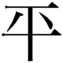

| 存在と時間１ (光文社古典新訳文庫) | |
| ハイデガー | |
| (2015) | |
存在と時間１
ハイデガー
中山元訳
Title: SEIN UND ZEIT
1927
Author: Martin Heidegger
邦訳の底本としたのはMartin Heidegger,Sein und Zeit, Max Niemeyer Verlag, 1927 の第一七版（一九五三年）である。この原文のページ数を訳書の下段にゴチック体で示した（※電子版では割愛させていただきました）。また、全集版のMartin Heidegger, Gesamtausgabe, Band 2,Sein und Zeit, Vittorio Klostermann, 1977 も参照した。全集版のページ数は訳書の上段にゴチック体で示した（※こちらも電子版では割愛させていただきました）。
この訳書では、段落ごとに番号をつけ、それぞれに原文にはない小見出しをつけた。原文の隔字体（ゲシュペルト）とゴチック体による強調のどちらも傍点で示した。〈 〉で囲んだところは訳者の強調であり、［ ］で囲んだところは訳者による補足である。なお〈 〉を、引用文中の「 」の代用として使うこともある。（ ）で囲んだところは原文での挿入である。また訳文は読みやすいように適宜改行している。
原注は節ごとに＊１のようにしてつけ、その後に訳註を（１）のようにつけた。ハイデガーの手沢本には、欄外に書き込みがあり、原文にはテクストの最後に付録として追加されている。底本では巻末にまとめて示している。この訳書ではこれらの書き込みは、訳註の一部として該当する場所につけ、冒頭に【欄外書き込み】と明記した。
なお、本文ならびに解説での引用文は、訳し直していることが多く、引用した訳の訳文と同じであるとは限らない。
目 次
◎本電子書籍は、左記に基づいて作成しました。
光文社古典新訳文庫 『存在と時間 １』 ２０１５年９月20日初版発行
◎ご注意
本作品の全部または一部を無断で複製、転載、改竄、公衆送信すること、および有償無償にかかわらず、本データを第三者に譲渡することを禁じます。
個人利用の目的以外での複製等の違法行為、もしくは第三者へ譲渡をしますと著作権法、その他関連法によって処罰されます。
存在と時間 1
敬意と友情をこめて
エトムント・フッサールに捧げる
バーデン州シュヴァルツヴァルトのトートナウベルクにて
一九二六年四月八日
この『存在と時間』という論考はまず、一九二七年の春に、Ｅ・フッサールが発行していた雑誌『哲学および現象学研究のための年報』第八号に発表された。この論考は同時に別刷としても刊行された。
この新しい版は、第七版として刊行されるものであり、本文に変更は加えられていない。ただし引用文と句読点のつけかたは見直した。この第七版のページづけは、わずかな違いを除いて、以前の版と同じである。
第六版までには、［タイトル部分に］「前半部」という記載があったが、この第七版からはこの記載を削除した。最初の刊行からもはや二五年も経過していることを考えると、前半部を新たに書き直しでもしないかぎり、後半部を書き継ぐことはできなくなっている。しかし存在への問いがわたしたちの現存在を動かしつづけているかぎり、［後半部へと進む］その道は今日でもなお、必然的なものとして、わたしたちの前に開かれたままなのである。
この存在への問いを解明する試みについては、この新版と同時に同じ出版社から刊行される『形而上学入門』という書物を参照されたい。この書物はわたしが一九三五年の夏学期に行った講義のテクストを収めたものである。
001 存在の意味への問い
「というのも、あなたがたはそうした事柄を、すなわち、あなたがたが〈存在している〉ということを口にされるときに、そもそも何を言おうとしておられるのかを、とっくの昔から知っておられるのは明らかなのですが、一方でわたしたちは、以前には知っていると思っていたのに、今ではまったく困惑しているのですから（＊１）」。
わたしたちは現在、「存在している」（ザイエント）という言葉で、そもそも何を言おうとしているのかという問いに、何らかの答えをもっているだろうか。いかなる答えも、もっていない。だからこそ存在の意味への問いを、新たに設定する必要がある。
それではわたしたちは現在、「存在」（ザイン）という言葉を理解できないことに、せめて〈困惑して〉でもいるだろうか。いや、まったく困惑すらしていない。だからこそ何よりも、この問いの意味についての了解を、ふたたび目覚めさせる必要があるのである。
この論考の意図するところは、「存在」の意味への問いを具体的に掘り下げることである。そしてわたしたちの当面の目標は、時間を解釈（１）することで、時間があらゆる存在了解一般を可能にする地平（２）であることを示すことにある。
002 三つの課題
わたしたちがどうしてこの目標を目指すのか、こうしたもくろみに含まれていて、そのために必要となる探求はどのようなものか、さらにこの目標を実現するためのどのような道筋をたどろうとしているのかについて、まずは導入のための解明を行う必要があるだろう。
003 「存在をめぐる巨人族の戦い」
こうした「存在への問い」は、今ではすっかり忘却されてしまっている──わたしたちの時代が、［かつて否定的に考えられていた］「形而上学」をまた肯定的に考えるようになったことを、一つの進歩とみなすとしてもである。そして「存在をめぐる巨人族の戦い（３）」（ギガントマキア・ペリ・テース・ウーシアス）を新たに始めるという営みなどは、もうやらなくてもよいと思っているのである。しかしここに示された問いは、決してどうでもよい恣意的な問いなどではないのである。
プラトンとアリストテレスは、この問いをめぐる息づまるほどの探求をつづけていた。しかしそれ以降というもの、実際の探求の主題となる問いとしては、この問いは沈黙してしまったのである。そしてプラトンとアリストテレスが獲得した成果は、さまざまな変形と「補筆」を加えられながら、ヘーゲルの『論理学』にいたるまでひき継がれている。ところがかつては思考の至高の営みのもとで、現象から戦いとってこられた成果が──それが断片的で、まだ研究の端緒にすぎないものだったとしても──、ずっと前からごく瑣末なものとされてしまっている。
004 存在の問いの忘却
それだけではない。古代のギリシア哲学において、存在を解釈するための最初の土台が構築された後に、この土台の上に一つの理論的な教説が形成された。このドグマは、存在の意味を問うことなどは余計なことであると宣言しただけでなく、この問いを問わなくてもよいものだと認めたのである。というのは、次のように主張されたからである。すなわち、「存在」というものはもっとも普遍的で、もっとも空虚な概念である。そのような概念なので、あらゆる定義の試みに逆らうものである。だからこのようにきわめて普遍的で、定義の試みに逆らうような概念は、定義する必要はない。誰もがこの概念を絶えず使っているし、そのつどこの語で何を意味するかは、すでに理解されているのである、と。
このようにして、かつては〈隠されているもの〉として、古代の哲学の営みを駆り立て、休みなき動揺へと誘い、そうした動揺のうちにとどめられたもの［この存在の意味］が、太陽のごとく明らかで自明な概念であるとされてしまったのである。そしてこの問いをなおも問おうとする者は、方法論的な誤謬を犯していると、咎められるようになってしまったのである。
005 先入観の起源
こうした先入観は、存在について問うことは無用のことであるという考え方を、つねに新たに植えつけ、育て上げてきたのである。ただしこの探求を始めるにあたって、こうした先入観について詳細に究明することはできない。この先入観の起源は、すでに古代の存在論そのもののうちにあったのである。
そしてこの古代の存在論についても、その存在論的な根本概念はどのような土壌から誕生してきたものなのか、この古代の存在論のさまざまなカテゴリーは適切に定められているだろうか、これらのカテゴリーは完璧なものだろうか、という問いが生まれてくる。しかしこれらの問いについて十分に解釈するためには、存在への問いを〈導きの糸〉とすることが、存在についての問いをまず明らかにし、それに回答しておくことが、必要なのである。
そこでここでは、存在の意味への問いを反復する必然性を洞察するために必要な範囲で、こうした先入観について検討することにしたい。こうした先入観には次の三つのものがある。
006 存在の概念の普遍性について
第一に、「存在（４）」は「もっとも普遍的な」概念であるとされている。「存在するものは、すべてのもののうちでもっとも普遍的である（＊２）」とか、「存在について了解されるものは、人が存在者として把握するすべてのもののうちに、そのつどすでに、ともに含まれている（＊３）」と言われているからである。しかしこの「存在」の「普遍性」は、類の普遍性ではない。存在者が、類と種によって概念的に構造化されているかぎりでは、「存在」によって境界が定められる領域は、存在者のもっとも上部の領域ではない。すなわち「存在は類ではない（＊４）」のである。存在の「普遍性」は、類にふさわしいすべての普遍性を超えでているのである。存在は中世の存在論の呼び名によると、「超越概念」なのである。
事象にかかわる最高の〈類〉の概念は多様性を特徴とするが、この超越的な「普遍者」は統一されたものであり、アリストテレスはすでにこれを類比による統一と呼んでいた。アリストテレスは、プラトンの存在論的な問題設定に強く依存しながらも、この類比による統一を発見したことで、存在の問題を根本的に新しい土台の上に構築し直したのである。ただしもちろんアリストテレスも、この存在の問題のカテゴリー的な連関を覆っている暗闇に、光を投じることができたわけではなかった。
中世の存在論は、とくにトマス・アクィナス学派とドゥンス・スコトゥス学派の流れにおいて、この問題についてさまざまに議論されたが、これを根本的に明らかにすることはできなかった。最後にヘーゲルが登場して、「存在」を「無規定な直接性のうちにあるもの（５）」と規定し、その『論理学』においてはすべてのカテゴリー的な説明のために、この存在の規定をその基礎としたのだった。それでもヘーゲルもこの問題を、古代の存在論と同じまなざしによって眺めたのである。ヘーゲルが古代の存在論と異なるのは、アリストテレスが発見した問題、すなわちさまざまな事柄について語る「カテゴリー」は多様なものであるのに、存在は統一性をそなえているという問題を、もはや考察しなくなってしまったことにある。
このように、もっとも普遍的な概念であるとされてきた「存在」の概念はもっとも明快な概念であるわけではないし、またいかなる究明も必要としないようなものでもない。むしろ「存在」の概念は、もっとも暗がりに包まれた概念なのである。
007 存在の概念の定義不可能性について
第二に、「存在」という概念は定義できないものとされている。この先入観は、この存在という概念がもっとも普遍的な概念であることに基づいている（＊５）。そして「定義とは、もっとも近い類と種差によって行われる（６）」［という規則にしたがう］ならば、［存在という概念を定義することはできないというのは］正しいのである。
たしかに「存在」を存在者として理解することはできない。「存在には何らかの性質を加えることができない（７）」のであり、「存在」に存在者を割り当てることで、存在を規定することはできないのである。存在は、それよりも上位の概念から、定義によって導き出すことはできないし、それよりも下位の概念によって説明することもできないのである。
しかしそのことから、「存在」の概念にはいかなる問題も提起できないと結論することができるものだろうか。そのようなことはない。そこから結論できるのは、「存在」は存在者（８）のようなものではないということだけである。だから〈存在者〉を規定するときにはある限界のもとでは、伝統的な論理学における「定義」という方法を使用することは正当なものとされるが（伝統的な論理学は、古代の存在論を基礎としているのである）、〈存在〉を規定するときには、この方法を適用することはできないのである。
存在を定義できないということは、存在の意味への問いを無用にするものではなく、むしろわたしたちにこの問いを問うことを促すものなのである。
008 存在の概念の自明性について
第三に、「存在」は自明な概念であるとされている。そもそも「ある」という言葉は、存在者についてのすべての認識において、すべての命題において、そして存在者とかかわるあらゆる場合にも、また自己とかかわるあらゆる場合にも使われるのであり、この表現は「そのままで」自明なものとされている。「空は青くある」とか「わたしは喜んでいる」などという言葉を聞いて、誰もがその「ある」を理解しているのである。
しかしこの誰にでも了解される平均的な理解しやすさは、実は理解しにくさを証明するものにすぎない。この平均的な理解しやすさは、存在者としての存在者にかかわるすべてのふるまいのうちにも、その存在のうちにも、ある謎がアプリオリにひそんでいることを示すものなのである。
わたしたちはそのつどすでに（９）、ある存在了解（10）のうちに生きているということ、それでいて存在の意味が暗がりに包まれているということ、このことこそ、「存在」の意味への問いを反復することが、根本的に必然的なものであることを証しているのである。
009 哲学者の仕事
哲学の根本概念について、しかも「存在」の概念について、こうした自明性に依拠しようとするのは、きわめて〈いかがわしい〉やり方であると言わざるをえない。そもそもこうした「自明性」とは、カントが「通俗的な理性が行っているひそかな判断（11）」と呼んだものにほかならない。これこそが［カントの目指した純粋理性の］分析論の明示的なテーマであるべきであり、ありつづけるべきものなのである。そしてカントはこれを「哲学者の仕事」と呼んだのだった。
010 問題設定の考察の必要性
これらの先入観を考察することで同時に明らかになってきたのは、存在への問いには答えが欠けているだけではなく、この問いそのものが暗がりに包まれているもの、方向性に欠けたものであるということである。だから存在の問いを反復するということは、まず問題設定そのものを十分に展開するということなのである。
原注
＊1 プラトン『ソピステス』二四四ａ［引用はギリシア語の原文で行われているが、ハイデガーは原文の「すなわち......おられるのかを、」の部分をその前の文章から補って示している。ドイツ語訳つき。邦訳は『プラトン全集』第三巻、藤沢令夫訳、岩波書店、八六ページ］。
＊2 アリストテレス『形而上学』第四巻、一〇〇一ａ二一［引用はギリシア語。邦訳は『アリストテレス全集』第一二巻、出隆訳、岩波書店、八二ページ。邦訳を示すと「けだしこれら［一や存在］は、すべてのうちで最も優れて普遍的であるから......」となっている］。
＊3 トマス・アクィナス『神学大全』第二巻、九四問ａ二［引用はラテン語でドイツ語訳つき］。
＊4 アリストテレス『形而上学』第三巻、九九八ｂ二二［引用はギリシア語。邦訳は前掲書、七三ページ。邦訳を示すと「しかるにこの一というのも存在というのも、存在事物の単一の類ではありえない」となっている］。
＊5 パスカル『パンセと小品集』（ブランシュヴィック編、第六版）パリ、一九一二年、一六九ページ。「『ある』ことの定義をするについても、同じような不条理におちこまずにはすまない。なぜなら、あるひとつの語を定義しようとすれば、どうしても『それは～である』という語をもってはじめなければならないからだ。この語が実際にいいあらわされるか、言外に含まれるかは別として。だから『ある』ことを定義するにも、『～である』といわねばならず、したがって、定義の中に定義される語を用いることになる（12）」［引用はフランス語］。
訳注
（1） ドイツ語の術語には、ラテン語系統の言葉とドイツ語本来の言葉の二つの系統がある。ここの語、「解釈」で言えば、インテルプレタツオンというドイツ語はラテン語のインテルプレタティオという名詞から来ているが、ドイツ語本来の語アウスレーグングはドイツ語のアウスレーゲン（解釈する）という動詞を名詞化したものである。
この二つの系統の言葉のうちで、ラテン語系統の術語は学問的な匂いがするし、ドイツ語からの術語は日常的な生活に即した言葉という印象を与える。本書の現象学的な分析は日常性の分析を中心とするために、ドイツ語系統の術語が重要な意味をもつ。そこでこの訳書ではこの系統の言葉に、通常の訳語をつけるようにしている。ただし「解釈」の語については、それほど大きな違いはないので、とくに訳し分けていない。
（2） 「地平」は本書では重要な概念であり、解説の「本書の目標と地平の概念」以下を参照されたい。この一文は本書の結論とでも言うべきものであるが、本書の「後半部」が執筆されなかったために、そのすべてが読者に了解できるようになっているわけではない。
（3） この語は、『ソピステス』において、存在をめぐる問いについて、「エレアからの客人」が形容した言葉である（二四六ａ）。邦訳は前掲書九四ページ。ただしこの引用からは、存在をめぐって巨人たちが戦っているようにみえるが、この戦いは神々と、それと争う巨人たちとの戦いである。一文の全体を引用すると「まことに彼らの間では、実在についての相互の論争のために、いわば神々と巨人族との戦いにも比すべきものが行われているように思われる」。
（4） 【欄外書き込み】 この「存在」のところの欄外に、「この『存在』とは、存在者的に存在することであり、存在者性である」と書き込まれている。
（5） ヘーゲル『論理学』第一篇第一章。「有はその無規定的な直接性の中にあるものとしてただ自分自身と同等であるにすぎず......」。邦訳は『ヘーゲル全集』第六ａ巻、武市健人訳、岩波書店、七八ページ。
（6） この規則はアリストテレスが定めたものである。解説の「類と種」以下を参照されたい。原文はラテン語でdefinitio fit per genus proximum et differentiam specificam と表記されている。
（7） ハイデガーはラテン語でenti non additur aliqua natura と書いている。
（8） 【欄外書き込み】 この「存在者」のところの欄外に、「そうではない。存在（Seyn）については、このような概念構成によっても決めることはできない」と書き込まれている。Seyn というのは、後期のハイデガーが存在（Sein）の特別な性格を示すために使うようになった古式の書法である。
（9） 「そのつどすでに」（イェー・ショーン）は、ハイデガーが本書で好んで使う副詞句の一つである。ある事柄が意識される以前からすでにそのようになっている現在完了体的な意味を強調する。
（10） 存在了解（ザインスフェアシュテントニス）は存在についての了解である。本書で理解すること（フェアシュテーエン）を意味する動詞は「理解する」と訳し、その名詞形のフェアシュテントニスは了解と訳す。フェアシュテーエンという訳語では理解「する」という動詞の意味を重視し、フェアシュテントニスという訳語では理解した「こと」や「内容」という名詞の意味を重視している。
（11） カントは遺稿の「レフレクシオーネン」の四三六項において、「哲学者の仕事は、規則を与えることではなく、通俗的な理性が行っているひそかな判断を分析することにある」と述べている（アカデミー版全集一五巻、一八〇ページ）。
（12） ハイデガーは脚注で、このパスカルの言葉をフランス語の原文で引用している。引用はパスカル「幾何学の精神について」からであり、邦訳は『パスカル著作集』第一巻、田辺保訳、教文館、二〇三ページ。
011 存在への問いの特別な意味
存在の意味への問いが設定されるべきなのである。この問いが一つの基本的な問いであるならば、あるいはまさに基本的な問いそのものであるならば、このような問いはそれにふさわしい見通しの良さをもって問う必要がある。そこでここでは、〈問い〉とはそもそもどのような営みであるかについて、手短に考察しておこう。そうすれば存在についての問いが、特別な意味をもつ問いであることを、分かりやすく示すことができるだろう。
012 問いの三つの性格
どのような問いであっても、〈問う〉ということは、探し求めることである。そして探し求めるということには、探し求められているものの側から、それに先立ってある指針のようなものが示されているものである。〈問う〉という営みは、ある存在者が、みずからが存在しているという事実において、みずからがそのように存在していることについて、みずから認識しながら探し求めるということである。みずから認識しながら探し求めるということが、問われているものを暴きだして規定するときには、「探求すること」になりうるのである。
すなわち〈問う〉ということは、「～について」問うことであるから、この問いには問われていること（ゲフラークテス）がかかわる。また「～について」のすべての問いは、何らかの形で、「～に」問い掛けることである。だからこの問いには、「問われていること」のほかに、問い掛けられているもの（ベフラークテス）が存在することになる。探求的な問い、すなわち特殊で理論的な問いにおいては、この「問われていること」を規定して、概念として把握すべきである。だからこの「問われていること」のうちに、本来的に問いが向けられるものとして問い質されていること（エアフラークテス）が存在しているのであり、そこまで到達すると、問いはその目標に達したことになる。
問うことそのものは、問う者としてのある存在者の一つのふるまいであるから、ある特有な存在の性格をそなえている。問いは、「たんに思いついて尋ねてみる」だけであることも、明示的な問題設定として問われることもある。この明示的な問題設定に固有の特徴は、問うことのうちに、ここで規定した問いの［三つの］構成的な性格のすべてについて、みずからあらかじめ見通しの良さがそなわっていることにある。
013 存在への問いの性格
ここでは存在の意味について、問いが設定されるべきである。そのためにはわたしたちは、すでに述べた［三つの］構造契機に注目しながら、存在への問いを説明する必要がある。
014 存在への問いの地平
問うことは探し求めることであるから、探し求められるものの方からあらかじめ導かれている必要がある。だから存在の意味はある形で、すでにわたしたちの手にとどくところにあるものでなければならない。わたしたちはつねにすでに（１）、ある存在了解のうちで動いていることを示唆しておいた。この存在了解のうちからこそ、存在の意味を明示的に問う問いが形成されるのであり、存在を概念的に把握しようとする傾向が生まれるのである。
わたしたちは、「存在」とは何であるかを知らない。しかしわたしたちが「〈存在〉とは何であるか」という問いを立てたときからすでに、この「ある」ということについては、何らかを了解しているのである。ただしわたしたちはこの「ある」が何を指し示しているのかについて、概念的に確定できているわけではない。わたしたちはどのような地平から、存在の意味を把握し、確定すべきであるかを、まだまったく知らないのである。わたしたちがこのような平均的で漠然とした存在了解をもっているにすぎないということが、一つの事実なのである。（２）
015 存在了解の暗さと明るさ
このわたしたちの存在了解は、まだ曖昧でぼんやりとしたもので、たんなる言葉の上だけの知識にすぎないものかもしれない。しかしそのつどすでにわたしたちの手にとどくところにあるこの存在了解が、このように未規定なものであるということは、一つの積極的な現象なのであり、これについて解明する必要がある。ただし存在の意味を探求する問いにおいて、この解明から始めることはできない。存在の概念が構築された後になって初めて、わたしたちのこうした平均的な存在了解を解釈するために必要な導きの糸が手にはいるのである。存在の概念が明るみのもとへと持ちだされ、存在について明確に理解する方法が明らかにされた後になってから、まだ暗がりのうちにある存在了解や、まだ明るみのもとに持ちだされていない存在了解が、そもそも何を意味しているのかを、決定することができるのである。そして存在の意味を明示的に明らかにするのを妨げ、こうした了解を暗がりのうちにとどめているものにはどのような種類のものがありうるのか、どのようにしてそれが必然的なものとなっているのかを、決定することができるようになる。
016 存在の問いの性格
こうした平均的で漠然とした存在了解にはさらに、わたしたちに伝えられてきた存在についての理論や見解が浸透していることもある。こうした理論が、現在において支配的な存在了解の起源となっていることが、隠されたままになっていることもありうるのである。すなわち存在の問いにおいて探し求められているものは、まったく未知のものではないが、さしあたり（３）、まったく把握されていないものなのである。
017 〈問われていること〉と〈問い質されていること〉
［ここで先に述べた問いの三つの契機について順に考察してみると］まずこれから立てようとする問いにおいて問われていることは、〈存在〉である。〈存在〉とは、存在者を存在者として規定するもののことであり、存在者についてどのように説明しようとも、存在者がそのつどすでに［それを理解する地平としての］〈土台となるところ〉（４）の存在によって理解されているもののことである。
存在者の存在は、それ自体が一つの存在者で「ある」のではない（５）。存在の問題を了解するために必要な哲学的な営みの第一歩は、「ミュトン・ティナ・ディエーゲイスタイ（６）」、すなわち「おとぎ話をする」のをやめることである。すなわち、存在者を存在者として規定しようとして、あたかも存在には、可能な存在者の性格がそなわっているかのごとくに、存在者の起源を探りつつ、それを別の存在者に還元するようなことをしてはならないということである。だから〈問われていること〉である存在を明らかにするためには、存在者を発見するのとは本質的に異なる特別な種類の提示方法が必要なのである。
また、ここにおいて問い質されていることは、存在の意味（７）であり、これを理解するためにも、やはり特別な概念装置が必要となるだろう。この概念装置もまた、存在者をその意義にしたがって規定するために必要な概念とは、本質的に異なるものとなる。
018 〈問い掛けられているもの〉
〈問われていること〉は存在であり、存在とは存在者の存在であるのだから、存在への問いで問い掛けられているものが、存在者自身であるのは明らかである。存在者にたいして、その者のみずからの存在について問い質されているのである。ところで存在者に、その存在の性格を偽りなく明らかにさせることができるためには、存在者そのものに、その存在するとおりの姿で近づきうることが可能になっていなければならない。存在への問いは、その〈問い掛けられているもの〉である存在者への適切な近づきかたを獲得し、あらかじめそれを確保しておく必要がある。
しかしわたしたちは多くのものを「存在するもの」と呼んでいるし、しかもさまざまな意味でそう呼ぶのである。わたしたちが語るすべてのもの、わたしたちが考えるすべてのもの、わたしたちがさまざまな態度でかかわるすべてのものが、存在者である。そしてわたしたち自身が存在しているという事実とそのように存在していることのうちにも、存在はある。あるものは現実的なものであることとして存在し、眼前存在するものとして存在し、存立するものとして、妥当するものとして、現にそこに存在するもの（８）として存在している。「それがある」ということにも存在が含まれているのである（９）。
これらのどの存在者のうちに、存在の意味を読みとる（10）べきなのだろうか。どの存在者のもとから、存在を開示する作業を始めるべきなのだろうか。この作業の出発点は任意に選択することができるのだろうか。それとも存在の問いの作業を仕上げるためには、特定の存在者が優先されるのだろうか。ある存在者が優先されるのだとすると、その範例となる（11）存在者はどの存在者だろうか、またどのような意味でその存在者が優先されるのだろうか。
019 現存在
存在の問いを明示的に設定し、完全に見通しの良い形でこの問いを問うべきなのである。この問いを仕上げるためには、これまで考察してきたことにしたがって、存在を眺めやるその眺めかたをまず説明する必要がある。さらに存在の意味を理解し、それを概念的に把握する方法について説明しておく必要がある。また、範例となる存在者を正しく選択できる可能性を確保し、この範例となる存在者に接近する正しい方法を構築する必要がある。
ところであるものを眺めやり、それを理解して概念的に把握し、選択し、それに接近するということは、問うことを構成するさまざまな態度であり、ある特定の存在者のさまざまな存在様態そのものである。この特定の存在者とは、問う者としてそのつどわたしたちそのものである。だから存在の問いを遂行するということは、この問いを問い掛けている存在者を、その存在において、見通しの良いものとするということである。
存在の問いを問うということが、ある存在者自身の存在様態であることを考えるならば、この問いは、この問いにおいて問われているものによって、すなわちその存在（12）によって、本質的に規定されていることになる。この存在者は、そのつどわたしたち自身なのであり、何よりも問うということをみずからの存在の可能性の一つとしてそなえている存在者なのである。ここでこの存在者を呼ぶために現存在（ダーザイン）という術語を定めたい。存在の意味への問いを、明示的に見通しの良い形で設定するためには、ある存在者（現存在）について、その存在（13）をあらかじめ適切な形で説明しておく必要がある。
020 循環論という形式的な異議否定
しかしこのような方法で問おうとすることは、明らかな循環論法に陥るのではないだろうか。というのも、まず存在者について、その存在において規定する必要があるというのに、この存在者の規定に基づいて、存在への問いを初めて設定しようとするのは、循環論に入りこむことではないだろうか。ある問いを遂行した結果として、初めて手にはいるものを、その問いにおいてすでに「前提としている」のではないだろうか。
原理について探求しようとすると、つねにそこには「循環論法」がひそんでいるという異論が持ちだされるものである。しかしこれは形式的な異論であって、探し求める営みの道程を具体的に検討しようとする場合には、つねに不毛なものとなる。こうした異論は、事柄を了解するにはまったく役に立たず、探し求めようとする領域に進むことを妨げるだけのものなのである。
021 推論における循環論法との類推の否定
とはいえ事実としては、この問題設定のうちには、いかなる循環論法もひそんではいないのである。存在の意味についての明示的な概念をあらかじめ利用できるようにしておかなくても、存在者はその存在について規定されうるのである。これが不可能であるならば、これまでいかなる存在論的な認識もなかったということになるだろうが、こうした存在論的な認識が事実として存在していることを否定する人はいないだろう。
たしかにこれまでのすべての存在論においては、「存在」が「あらかじめ前提とされて」いる。しかしすぐに利用できる概念として前提されていたわけではないのであり、わたしたちは存在をこのような、すぐに利用できる概念として、探し求めているのである。存在を「あらかじめ前提とする」ということは、その考察において存在についてあらかじめまなざしを向けているということであって、このようにまなざしを向けていることにおいて、すでに与えられている存在者がその存在においてあらかじめ分節（14）されているのである。
このように存在へと導いて、存在に〈まなざしを向けること〉は、［すでに述べた］平均的な存在了解から生まれたものであり、わたしたちはつねにすでにこうした平均的な存在了解のうちで動いているのである。だから結局のところ、（15）こうした存在了解は現存在そのものの本質的な機構のうちにあるのである。（16）このようなしかたで「あらかじめ前提とすること」は、ある根本命題を証明されないままでまず定めておいて、そこからさまざまな命題を演繹しながら導いてくるという［循環論法の］方式とはまったく異なるものである。そもそも存在の意味を問う問題設定には、こうした「循環論法」はまったくありえない。この問いに答えようとする営みが目指すものは、演繹の方法によって根拠づけることではなく、根拠を明らかにしながら、隠されているものを暴くことだからである。
022 現存在の優位
このように存在の意味への問いには、「循環論法」は含まれていないものの、〈問われていること〉、すなわち存在が、ある存在者の存在様態である問いそのもののうちに「再帰的に含まれて」いるということ、そして、「先行的に含まれて」いるということは、注目すべきことである。問うことが、〈問われていること〉のうちに本質的にかかわっているということは、存在問題がそなえているきわめて固有な意味なのである。
しかしそのことは、現存在という性格をそなえた存在者は、存在問題そのものと、ある結びつきをそなえているということを、しかもこの結びつきが特別な性格のものであるということを意味するにすぎない。
しかしこのことによってすでに、ある特定の存在者がその存在において、存在問題における優位をそなえていることが証明されているではないだろうか。そしてこの範例となる存在者が、存在問題において最初に〈問い掛けられているもの〉という役割をはたすべきものとして、あらかじめ与えられている（17）のではないだろうか。
これまで論じてきたところからは、現存在の優位が証明されたわけではないし、最初に問い掛けられるべき存在者として、現存在がどのような機能をはたすことができるのか、またはたすべきかということについて、結論が下されたわけではない。それでも現存在の優位のようなものが、かいまみえてきたのはたしかである。
訳注
（1） この「つねにすでに」（インマー・ショーン）も、ハイデガーが好んで使う副詞句である。その意味はすでに述べた「そのつどすでに」とほぼ同じであり、現在完了体の意味を強調する。
（2） 本書ではハイデガーは事実と実際の事柄を区別する。タートザッヘは「実際にそのようにあること」という存在者的な意味で使われ、ファクトゥムは存在論的な事態を指すために使われる。ファクトゥムの派生形として「事実性」（ファクティツィテート）や、「事実として」（ファクティッシュ）という語も使われる。またタートザッヘの派生語として、「実際のありかた」（タートゼヒリヒカイト）や「実際に」（タートゼヒリヒ）などの語も使われる。
（3） 「さしあたり」（ツネヒスト）は、「さしあたりたいてい」（ツネヒスト・ウント・ツマイスト）という術語として使われることが多い。自然な日常の生活において、とくに意識されずにというほどの意味である。こうした「さしあたり」の事態に、存在論的な考察を適用する必要があるのである。
（4） 〈土台となるところ〉は、これから頻出する術語の一つであり、あるものを理解するための基盤や土台のようなものを意味する。解説の「ヴォラウフヒンの概念」を参照されたい。この語は、場所やところを示す関係副詞のヴォと、「上に」を意味する前置詞のアウフと、向かう方向や先を示す副詞のヒンで構成される。ハイデガーは本書で、関係副詞＋前置詞＋副詞で構成されるこうした術語を頻繁に使用する。こうした術語を理解することが、ハイデガーの思考の道筋への理解を深めるために役立つので、この訳書では詳しくルビを振っている。
このヴォラウフヒンの概念はここで突然に提示されただけで、やがて詳しく考察されるが、ここでは何かを理解するための基盤となり、地平となるもののことと考えられたい。
（5） この「存在者の存在は、それ自体が一つの存在者で『ある』のではない」という文は、存在と存在者の違いを明確に問う「存在の問題」の中心的な問題点を示す文章である。後のハイデガーはこの違いを「存在論的な差異」と呼ぶようになる。
（6） プラトン『ソピステス』二四二ｃ。邦訳は前掲書八一ページ。この言葉がどのような文脈で語られたかは、解説の「おとぎ話」を参照されたい。
（7） ハイデガーでは、意味（ジン）と意義（ベドイトゥング）は、フレーゲのように文の意味とその参照物を示すために使い分けられてはいない。「意義」の語が意味を指し示すこともある。ただし「意義」の語は有意義性という概念として、世界の事物がそれぞれの場所においてもつ意味と、その他の事物との相互連関性を示すために使われる重要な概念である。また「意味」の語は「存在の意味」のように、たんなる世界のうちでの位置や有用性ではない本来の「意味」を示している。そのためこの訳書では意味と意義を訳しわけている。なおハイデガーにおける意味と意義の概念の重要性については渡邉和典『最初期ハイデッガーの意味論』（晃洋書房）を参照されたい。
（8） 【欄外書き込み】「現にそこに存在するもの」のところの欄外に、「まだ通常の概念であり、それ以外のものではない」と書き込まれている。通常の概念ではダーザインとは、そこにある存在というほどの意味であり、本書で術語として使われる現存在の意味は、ここではまだ考えられていないのである。
（9） これらのさまざまな存在様態については、解説の「存在の多様性」以下を参照されたい。
（10） 【欄外書き込み】「読みとる」のところの欄外に、「ここに二つの異なる問いが並列されている。誤解を生みやすい。とくに現存在の役割について」と書き込まれている。
（11） 【欄外書き込み】「範例となる」のところの欄外に、「誤解を生みやすい。範例的であるのは現存在であるが、それは現存在が［存在の］かたわらで戯れているもの［あるいは実例］だからである。つまり現存在は全般にその本質において、現─存在、すなわち存在の真理を守るものだからである。現存在は存在そのものを手渡しするものであり、存在のかたわらで戯れるものであり、存在そのものを〈響きの戯れ〉にもたらすものなのである」と書き込まれている。
（12） 【欄外書き込み】この「存在」のところの欄外に、「すなわち現─存在である。この現─存在とは、存在（Seyn）を宿した無の中に引きとめられ、そうしたかかわりとして保たれているものである」と書き込まれている。
（13） 【欄外書き込み】「その存在」のところの欄外に、「しかしこの［現存在という］存在者に即して、存在の意味が読みとられるのではない」と書き込まれている。
（14） 分節（アルティクラツィオン）とは、あるものの構造が明確に規定されていることを意味する。世界においてはすべてのものは、「～として」理解されるのであり、すべてのものは分節されているのである。
（15） 【欄外書き込み】「結局のところ」は「最終的には」（アム・エンデ）とも訳せるが、ここの欄外に「すなわち最初からということである」と書き込まれている。
（16） 「本質的な機構」（ヴェーゼンスフェアファッスング）の「フェアファッスング」は体制とか構造とか機構と訳されることが多い言葉であり、本書では存在機構（ザインスフェアファッスング）という術語として頻出する。
（17） 【欄外書き込み】「あらかじめ与えられている」のところの欄外に、「前記の［原文の］七ページの場合と同じように、ここである本質的な単純化が行われているが、その考え方そのものは正しいものである。現存在は、存在を表象しながら抽象化していく存在者の一つの事例ではない。それでも現存在が存在了解が行われる場所であることに違いはないのである」と書き込まれている。
023 存在への問いの特別な性格
［前の節では］問いというものにそなわる形式的な構造を〈導きの糸〉として、存在への問いの性格を明らかにしてきた。これによってこの問いが特有な性格のものであること、この問いを遂行するためにも、またこの問いに答えるためにも、いくつかの基本的な考察が必要であることが明らかになってきた。しかし存在への問いが特別の性格の問いであることが、初めて完全に明らかにされるためには、この問いの機能について、意図について、動機について、明確に定める必要があるだろう。
024 問いの動機
これまでは、この存在への問いを反復する必要があることが確認されたが、この問いの営みの動機となるのは、この問いは［プラトン以来の伝統をもつ］由緒あるものであること、とくにこの問いには特定の答えがないこと、そもそも満足できる問題設定一般すら欠落していることだった。しかしこの問いがいったいどのような役に立つのか、疑問に思われる人もいるだろう。この問いは、［存在という］もっとも普遍的な普遍性についての宙に浮いたような思弁の仕事にすぎないものなのだろうか、あるいはそもそもそうした思弁の仕事であるにすぎないのだろうか。それともこの問いは、もっとも原理的で、しかも同時にもっとも具体的な問いであるのだろうか。
025 学問研究の意味
存在とは、そのつどある存在者の存在である。存在者の全体を考察するならば、それについてさまざまな分野ごとに、特定の事象の領域を開拓したり、境界を定めたりすることができるだろう。たとえば歴史、自然、空間、生命、生存、言語などのように、これらの事象の領域について、適切な学問的な研究のテーマを対象とすることができるだろう。こうした学問的な研究では、そうした事象の領域をまず開拓し、境界を設定するという作業を、素朴で概略的な形で行っているのである。
事象の領域そのものは、こうしてさまざまな存在分野の内部で確定されるものの、こうした存在分野について、それぞれの領域の根本的な構造を掘り下げる作業は、前学問的な経験と解釈をつうじて、すでにある意味で実行されている。このような営みによって「基礎概念」が誕生してくるのであり、こうした概念がさしあたりは、この領域をまず具体的に開示するための導きの糸の役割をはたすのである。
こうした研究作業においては、［存在の問いを問わない］実証性に重点を置いているが、それが真の意味で進捗するのは、こうした実証的な研究の成果を蓄積して、「ハンドブック」などにまとめようとすることによってではない。むしろ該当する事象にかんして蓄積された知識を重視するのとは反対の方向に進んで、それぞれの領域の根本機構を問おうとすることによってである。
026 学問の水準
さまざまな学問のほんらいの「活動」というものが行われるのは、さまざまな基礎概念にたいして、すぐには見通すことのできないような改訂を、しかも多かれ少なかれ根本的な改訂を加えることによってである。ある学問の水準というものは、その学がみずからの基礎概念の〈危機〉に、どれほど耐えることができるかということによって決まる。こうした危機はさまざまな学問に内在するものであって、このような危機においてこそ、実証的な研究による問いと、問い掛けられている事柄そのものの関係が揺らいでくる。現在ではさまざまな学問分野において、研究活動を新たな土台の上に据え直そうとする傾向が明らかになってきているのである。
027 諸学における危機と新たな傾向
みたところもっとも厳密で強固に確立されている学問である数学が今、「基礎論の危機」に陥っている。形式主義と直観主義の論争は、数学の対象に接近するための第一の道をどのようにして獲得し、確保するかをめぐって争われている。
また物理学における相対性理論は、自然そのものに固有の連関を、「それ自体」において存立しているままの形で明らかにしようとする傾向から生まれた。この理論は自然そのものに接近するための条件を考察するものであり、あらゆる相対性を確定することによって、運動法則の不変性を維持しようとする。そしてそのために、物理学にあらかじめ定められている事象の領域の構造への問い、すなわち物質の問題に直面することになったのである。
さらに生物学では、これまで有機体と生命については、機械論と生気論によって規定されてきたが、今ではこうした規定の背後にさかのぼって問いを発し、生物が生物としてそなえている存在様式を新たに規定しようとする傾向が生まれている。
また歴史学的な精神科学においては、伝承とその叙述および伝統を通じて歴史的な現実そのものに迫ろうとしているのであり、たとえば文学史は問題史であらねばならないとされている。
神学は、神に向かう人間の存在について、さらに根源的な解釈をしようと努力しており、信仰のうちにとどまりながらも、信仰そのものの本来の意味を解釈しようとしている。神学はルターの洞察を遅まきながらふたたび理解し始めたのであり、神学の教義体系の構成が「土台」としているものが、何よりも重要な信仰者の問いのうちから生まれたものではないこと、こうした体系の概念装置が、神学的な問題構成にとって不十分であるだけでなく、こうしたものを隠蔽し、歪めるものであることを認識し始めたのである。
028 学問の基礎づけ
基礎概念とは、それぞれの学問のテーマとなるすべての対象の土台となる事象の領域についての規定のことである。こうした領域はこの規定のうちであらかじめ了解されているのであり、すべての実証的な研究はこうした了解に導かれている。このためこうした基礎概念を真の意味で証明し、「根拠づける」ためには、それに先立ってその事象の領域そのものについて、こうした基礎概念に対応して徹底的に探求を行う必要がある。
ところがこうした事象の領域はすべて、それぞれの存在者自身の分野から獲得されるものであるから、こうした基礎概念を汲みだすための先行的な研究とは、こうした存在者を、その存在者の存在の根本機構に基づいて、解釈することにほかならない。実証的な学問に先立って、こうした研究活動を遂行しなければならないし、こうした研究活動を先行して行うことができるのである。
プラトンとアリストテレスの仕事がそのことを明確に証拠づけている。このような意味での学問の基礎づけは、研究活動にあとから追いすがってくるような「論理学」とは原理的に異なるものであり、こうした「論理学」は、ある学問のその時点における偶然的な状況を、その「方法」によって探求する作業にすぎない。
こうした学問の基礎づけは、〈生産的な論理学〉とも呼べるものであって、特定の存在領域の中にいわば率先して入り込んでいって、その存在領域を、それに固有の存在機構において初めて開示し、そのようにして獲得された諸構造を、実証的な学問が問いを立てるときに見通しを良くする指針として利用できるようにするのである。
哲学的にみて何よりも重要なのは、たとえば歴史学において概念を形成する理論ではないし、歴史学的な認識の理論でもないし、歴史学の客体としての歴史の理論でもない。本来の意味で歴史的に存在するものについて、その歴史性に基づいて解釈することこそが重要なのである。同じように、たとえばカントの『純粋理性批判』の積極的な成果は、認識のための「理論」とやらを構築したことにあるのではなく、そもそも自然一般に属するものを際立たせる作業を始めたことにあるのである。カントの超越論的な論理学は、自然という存在領域のアプリオリな事象論理学なのである。
029 存在論の根源的な問い
しかし存在論についてのさまざまな方向性や傾向などに依拠せずに、存在論をもっとも広い意味において考えるにはどうすればよいかという問いに答えるためには、問いそれ自体に別に一つの導きの糸が必要となる。たしかに存在論的に問うということは、実証的な学問のように存在者的（１）に問うのと比較すると、はるかに根源的である。しかし存在論的な問いの考究が、もしも存在者の存在について問いながらも、存在一般の意味を説明しないままであるならば、それ自身が素朴で見通しの悪いままにとどまるのである。
存在論には、さまざまに可能な存在のしかたを、演繹的な方法によらずに構成する系譜学（２）という課題があるのであり、そのためにも、「わたしたちが〈ある〉ということを口にするときに、そもそも何を指し示そうとしていたのか（３）」ということを、あらかじめ了解しておく必要があるのである。
030 存在論の課題
そもそもさまざまな学問は、存在者をこれこれの存在者として徹底的に探求するものの、その際つねにある存在了解のうちで動いているものである。このため存在の問いは、さまざまな学問が可能となるためのアプリオリな条件はどのようなものであるかを明らかにしようとする。しかしそれだけではなく存在の問いは、こうした存在者的な学問に先立つものであり、こうした学問を基礎づけているさまざまな存在論そのものが可能となる条件をめざすのである。
すべての存在論は、たとえどれほど豊かで強固なカテゴリーの体系を装備していたとしても、それに先立って、存在の意味をしっかりと解明しておかないかぎり、そしてこの解明そのものを基礎的な課題として設定しておかないかぎり、根本的に暗がりの中にあるままであり、その本来の意図を転倒させているものでありつづける。
031 存在への問いの優位
このようにほんらいの意味で理解した存在論的な探求そのものは、由緒ある伝統をたんにふたたびとりあげたり、これまで見通しの悪かった問題の掘り下げを進めたりすることだけではなく、それを超えて、存在への問いを存在論的にとくに優先すべき問いとみなすのである。しかしこのような事象的で学問的な優位だけが、存在論的な探求の唯一の優位ではない［次に述べる存在者的な優位もあるのである］。
訳注
（1） 「存在者的に」と訳したのはオンティッシュである。これは「存在論的に」（オントローギッシュ）という言葉と対になる術語である。「存在的に」と訳されることが多いが、存在そのものについてではないので、存在論との対比で、「存在者的に」と訳す。存在論的に考察する際には、存在そのものが問題になるが、存在者的に考察する場合には、存在そのものではなく、存在者とそのありかたが問題になるからである。
（2） この系譜学という語は、ニーチェが『道徳の系譜学』で使った語であり、ハイデガーがニーチェの語をあえて使ったのは、ニーチェにたいする強い思いを感じさせる。齋藤は、そこにハイデガーがニーチェに「強い〈共鳴〉を意識していた」ことのしるしをみている。齋藤元紀『存在の解釈学』（法政大学出版局、二五八ページ）を参照されたい。ここでハイデガーは、存在のさまざまなありかたを「演繹的でなく」、実際の存在様式の違いとして提示することを目指している。ハイデガーはすでに、存在のさまざまなありかたとして「あるものは現実的なものであることとして存在し、眼前存在するものとして存在し、存立するものとして、妥当するものとして、現にそこに存在するものとして存在している。〈それがある〉ということにも存在が含まれているのである」（018）と、さまざまな存在のありかたを列挙している。これらを、同じ存在の概念から演繹するのではなく、その存在様式の違いを存在論的に考察するのが、ここでの系譜学の役割である。
（3） この問いの言葉は、プラトンの『ソピステス』でエレアの客人が「あなたがた」を主語として尋ねた問いを、主語を「わたしたち」に言い換えて示したものである。もとは「あなたがたが〈存在している〉ということを口にされるときに、そもそも何を指し示そうとしておられるのか」（プラトン『ソピステス』二四四ａ。邦訳は前掲書八六ページ）という表現だった（001に既出）。
032 現存在の特徴
学問一般を定義するならば、〈真なる命題の基礎づけ連関の全体（１）〉と定義できるだろう。この定義は完全なものではないし、学問をそのほんらいの意味において捉えたものでもない。学問もまた人間の一つの態度だから、この存在者（人間）に固有の存在様式（２）を示したものなのである。
この存在者をわたしたちは現存在と（３）いう術語で呼ぶことにした。学問的な研究は、この現存在という存在者の唯一の存在様式ではないし、そのもっとも身近なものとして可能な存在様式でもない。さらに現存在自身はそれ以上に、他の存在者と比較してきわめて顕著な特徴をそなえている。この現存在のきわめて顕著な特徴を明確に示すことが、当面の課題である。ただしここで述べる特徴は、後に本格的に提示することになる分析の内容を先取りしたものにならざるをえない。
033 現存在の特殊性
現存在とは、たんにほかの存在者とならんで目の前にある一つの存在者にすぎないものではない。現存在は、自己の存在において、この〈存在〉そのものが問題である存在者であるということにおいて、存在者的に特別な意味をもつ存在者なのである。だから現存在のこのような存在機構のもとで、現存在は自己の存在においてこの〈存在〉にある態度をとるという〈存在関係〉を結んでいるということになる。ということは、現存在はみずからの存在において、みずからをあるありかたで明示的に理解しているということである。
この現存在という存在者に固有な特徴は、みずからの存在とともに、そしてみずからが存在することをつうじて、〈存在〉がこの存在者自身に開示されていることにある。存在了解はそれ自身が、現存在の（４）一つの存在規定なのである。現存在は存在者的に特別なものであるが、それは現存在が存在論的に存在しているからである。
034 前存在論的な存在とは
ここで言う〈存在論的に存在している〉ということは、〈存在論を確立している〉ということではない。〈存在論〉という語によって、存在者の存在を明確に、そして理論的に問う営みを呼ぶことにするならば、ここで指摘したように、現存在が〈存在論的に存在している〉ということは、たんに〈前存在論的に（５）存在している〉ことにすぎないのである。ただしこの〈前存在論的に存在している〉ということは、たんに存在者的に存在しているということではない。〈存在〉について何らかのことを理解しつつ存在しているということである。
035 実存とは
現存在は、みずからの存在そのものにたいして（６）さまざまな態度をとることができ、またつねに何らかの態度をとっているものである。わたしたちはこうした存在そのもの（７）を、実存と（８）呼ぶことにしよう。現存在という存在者の本質は、それが事象として「何」を含んでいるかを示すことによっては規定できない。この存在者の本質は、みずからの存在を、そのつどみずからの存在として、存在しなければならないということにある。だからこそ、この存在者の呼び名として〈そこに存在すること〉を純粋に表現する言葉である現存在という語が選ばれたのである。
036 実存の問題
現存在はつねにみずからをこの自己の実存から理解している。現存在は自己自身であるか、あるいは自己自身でないかという、自己自身のありかたの［二つの］可能性によって、自己を理解しているのである。現存在は、この二つの可能性［のどちらか］をみずから選択したのか、それともその可能性のうちに落ち込んだか、あるいはその可能性のうちでそのつどすでに成長してきたかのいずれかである。実存をみずからのものとするか、みずからのものにし損ねるかというありかたで、現存在がそのつどみずから決断するのである。実存の問いは、ただみずから実存することによってしか、決着をつけることができないものである。
この決着をつけるときにあたって、現存在自身を導く自己了解を、ここでは実存的な了解と呼ぶことにしよう。実存の問いは、現存在の存在者的な「関心事」である。その問いに答えるためには、実存の存在論的な構造が、理論的に見通しの良いものとなっている必要はない。実存の存在論的な構造への問いは、実存を構成しているもの（９）が何であるかを解明しようとするものであり、これらの構造の連関を、ここでは実存的なありかたと呼ぶことにする。
この実存的なありかたの分析論は、実存的に理解するだけではなく、実存論的に理解することを目指すという性格をそなえている（10）。現存在の実存論的な分析論という課題が可能であり、また必然的なものであることは、現存在の存在者的な機構のうちに、あらかじめその下図が素描されているのである。
037 現存在分析の課題
ところで現存在は実存によって規定されるものであるから、この現存在という存在者を存在論的に分析するためには、つねにあらかじめ現存在の実存的なありかたに、まなざしを向けておく必要がある。この実存的なありかたは、実存する存在者の存在機構を意味する。しかしこうした存在機構の理念のうちには、すでに存在一般の理念が含まれている。だから現存在の分析論を遂行することができるためには、存在一般の意味への問いをあらかじめ仕上げておくことが必要なのである。
038 現存在でない存在者についての学問と存在論
さまざまな学問は、現存在の存在方式であることをすでに指摘しておいた。現存在はこうした学問においては、かならずしも現存在であるとはかぎらない存在者ともかかわる。ところが現存在とは、本質的に〈ある世界の内に存在するもの〉である。だから現存在の本質にかかわる存在了解には、「世界」の理解と、この世界のうちで近づくことのできる存在者の存在についての理解とが、等根源的（11）にかかわっているのである。
したがって、現存在ではない存在性格をそなえた存在者を対象とするもろもろの存在論は、前存在論的な存在了解という性格によって規定された現存在そのものの存在者的な構造のうちに基礎づけられるのであり、それによって動機づけられているのである。
039 基礎存在論
このように［現存在を対象とする］基礎存在論こそが、他のあらゆる存在論の生まれてくる源泉となるのであり、これは現存在の実存論的な分析論のうちに求めねばならない。
040 現存在の三つの優位
このように現存在は他のすべての存在者にたいして、いくとおりもの優位をそなえている。第一の優位は、存在者的な優位であり、現存在はその存在において実存によって根底から規定されていることによる優位である。第二の優位は、存在論的な優位であり、現存在は実存によって規定されているために、自己に即して「存在論的に」ふるまうことによる優位である。また現存在には、実存了解を構成する要素として、現存在でないすべての存在者の存在についての了解が、等根源的にそなわっている。これが現存在の第三の優位であり、これはすべての存在論を可能にする存在者的かつ存在論的な条件なのである。このように現存在は、その他のすべての存在者に先立って、まず最初に存在論的に〈問い掛けられるべきもの〉であることが証明されたのである。
041 実存の実存的なありかたを開示するための条件
しかしこの実存論的な分析論は、つきつめるならば実存的な根、すなわち存在者的な根をもっている。実存の実存的なありかたを開示することができるためには、哲学的な探求の問いそのものが、そのつど実存する現存在にそなわる存在可能性として、みずから実存的に選択される必要があるのである。存在論的な問題構成一般を、十分に根拠のある形で設定する作業に着手できるかどうかも、その選択に左右されることになる。このようにして存在への問いが、存在者的にも優位をそなえていることが明らかになるのである。
042 古代と中世の哲学における現存在の優位性
現存在が存在者的にも存在論的にも優位に立っていることは、［哲学の歴史の］ごく早い時期からすでに明らかになっていたが、それでも現存在そのものが、その固有の存在論的な構造において把握されていたわけではないし、それを把握しようとする問いが立てられていたわけでもなかった。アリストテレスは「（人間の魂は）ある意味では存在者である（＊１）」と語っている。この命題が意味しているのは、人間の存在を作りだしている「魂」が、感覚としてのアイステーシスと、思考としてのノエーシスというそれぞれの存在のありかたにおいて、あらゆる存在者について、それが存在しているという事実と、そのように存在していることを暴くものであること、それもつねにその存在において暴くものであることである。
アリストテレスのこの命題は、パルメニデスの存在論的なテーゼにさかのぼるものであるが、トマス・アクィナスはある特徴的な論考（12）のうちで、これを継承している。トマスは、いわゆる「超越概念」を導きだそうとしていた。この〈超越〉とは、存在者に可能なすべての事象的な規定性も、類的な規定性も、存在のすべての種的な存在様態も、越え出ていることを意味している。しかもこうした超越したものは、それがどのようなものであるかを問わず、あらゆる〈或るもの〉に必然的に含まれる存在性格をそなえているとされたのだった。そしてトマスはこの課題を遂行することで、真理がこうした超越的な概念であることを証明したのである。
そしてこれを証明するためにトマスは、その存在様式にしたがって、何らかの形で存在するすべての存在者と「合致する」本性をそなえた存在者をあげているのであるが、この特別な存在者、「あらゆる存在者と合致する本性をそなえた存在者（＊２）」が、［アリストテレスの魂に相当する］心（アニマ）なのだった。ここでは「現存在」が他のすべての存在者よりも優位にあることが存在論的に解明されているわけではないが、ともかくも明らかに示されている。この優位は、存在者のすべてを悪しき意味で主観化する営みとは、まったく無縁なものである。
043 現存在の優位
存在への問いは、存在者的にも存在論的にも特別な性格をそなえたものであり、このことはすでに現存在が存在者的にも存在論的にも優位に立っていることをとりあえず予告しておいたことからも明らかである。第二節では、存在の問いそのものの構造の分析を試みたが、その際にはこの問題設定そのもののもとで、現存在という存在者が特別な機能をはたしていることを指摘した。そしてこの問いを見通しの良い方法で問うためには、現存在という存在者について、まず存在論的に十分な考察を行う必要があることを明らかにしておいたのだった。ところがここで示したように、現存在の存在論的な分析論とは、基礎存在論である。だから現存在は、その存在について原理的に先行して問い掛けられるべき存在者としての役割をはたすのである。
044 存在への問いと現存在
存在の意味を解釈するという課題においては、現存在はまず最初に〈問い掛けられるべき存在者〉であるだけではなく、この問いにおいて〈問われていること〉そのものに向かって、みずからの存在においてつねにすでにかかわっている存在者なのである。その場合には存在への問いを問うということは、現存在そのものにそなわっている本質的な存在傾向を根源的なものとすることであり、前存在論的な存在了解を根源的なものとすることなのである。
原注
＊1 アリストテレス『霊魂論』第三巻八章四三一ｂ二一［引用はギリシア語。ドイツ語訳つき］。同書の第三巻五章四三〇ａ一四以下も参照されたい（13）。
＊2 トマス・アクィナス『真理論』第一問第一項ｃ（14）。また論文「類の本性について」では、この「超越概念」の「演繹」がここで示したものとは異なるが、部分的にはさらに厳密な方法で導きだされている。
訳注
（1） ここで示され、ついで批判される学問一般についての「真なる命題の基礎づけ連関の全体」という定義は、フッサールの定義を考慮にいれたものだろう。フッサールは「学問の本質には、基礎づけ連関の統一が属している」と指摘している（フッサール『論理学研究』第一巻、第一章第六節。邦訳は立松弘孝訳、みすず書房、三四ページ）。また同書の「無数の真なる命題が真理として把握されるのは、それらがなんらかの方法によって、《基礎づけ》られる場合だけである」（同、三五ページ）という部分も参照されたい。ハイデガーはこの定義を「学問をそのほんらいの意味において捉えたものでもない」（032）と批判することで、暗黙のうちにフッサールの現象学の方法論を批判したことになる。
（2） 「存在様式」と訳したのはザインスアルトである。段落038で使われている「存在方式」という語の原語は、ザインスヴァイゼである。アルトは様式や方式を示し、ヴァイゼは方法を示すことが多いためにこう訳している。ヴァイゼだけが独立して使われるときには、「ありかた」と訳すことが多い。
（3） 現存在のダーザインという語は「そこに」（ダー）「存在している」（ザイン）という一般的な用語であり、ヘーゲルの論理学では存在のもっとも基本的で素朴な「定在」というありかたを示す概念である。この概念のもつ特別な意味については解説の「現存在の存在者的な優位」以下を参照されたい。
（4） 【欄外書き込み】「現存在」のところの欄外に、「ここでの存在は、たんに人間の存在（実存）だけのことを指すものではない。それは以下の記述からも明らかだろう。世界内存在はみずからのうちに全体における存在へとかかわる実存の連関、すなわち存在了解を含んでいるからである」と書き込んでいる。
（5） 「前存在論的に」という概念は、「存在論的に」と対比して使われ、まだ存在論的に考察されていない状態にあることを意味する。次に指摘されるように、それは「たんに存在者的に存在している」のではなく、存在論的な意味を暗黙のうちに了解しており、さらに考察を深めることで存在論的に理解されうる状態にあることを意味している。
（6） 【欄外書き込み】「みずからの存在そのものにたいして」のところの欄外に、「みずからの存在そのものに、みずからに固有のものとして」と書き込んでいる。
（7） 【欄外書き込み】「こうした存在そのもの」の「こうした」にあたる定冠詞「ダス」を、欄外書き込みは「あの」（ダスイェーニゲ）に書き直している。
（8） 「実存」という概念がここで現存在のみずからの存在に向かう態度という観点から定義されていることに注目されたい。この概念は一般に、そのものの「本質」を問う「何であるか」という観点からは定義されていないのである。「実存」の概念についてはとくに解説の「実存について」以下を参照されたい。
（9） 【欄外書き込み】「構成しているもの」のところの欄外に、「だから実存哲学ではまったくない」と書き込んでいる。これは『存在と時間』を読んだサルトルが、人間の実存における決断を重視したことを批判して、この書物はそうした「実存哲学」ではなく、現存在の実存の構成を考察するものであることを指摘した書き込みである。ハイデガーの『「ヒューマニズム」について』（渡邊二郎訳、ちくま学芸文庫）でのサルトル批判を参照されたい。
（10） 「実存的に」（エクシステンツィエル）と「実存論的に」（エクシステンツィアル）という二つの概念の違いに注目されたい。現存在は実存しているが、そのことを自覚していないことが多い。みずからの実存を自覚的に認識したありかたが実存論的である。この二つの概念の違いについては仲原孝『ハイデガーの根本洞察』（昭和堂、一二六ページ）を参照されたい。この違いは「存在者的な」と「存在論的な」の違いに対応するものである。段落041で、「実存的な」という語を「存在者的な」と言い換えているところを参照されたい。
（11） 「等根源的に」というのは本書で重要な概念である。二つの概念が等根源的なものである場合には、片方の概念を他方の概念から派生させることができない。ここでは「世界」の理解と世界のうちに存在する存在者の存在了解は、たがいに同じ深さにあり、どちらも独立して考察する必要があることを示している。
（12） このトマスの論考は、＊２の『真理論』である。ハイデガーは一九二三年の講義でトマスの真理論を検討した際に、中世の超越概念について「中世の存在論的な問題提起にとって真（verum）は、一（unum）、多（diversum）、モノ（res）、善（bonum）、存在者（ens）のような規定と共通の基盤に立っている。それらは中世が超越性（transcendentia）、超越論的なものと呼んだ諸規定である。なぜならばこれらの規定は、存在のそれぞれの規定性を越え出ており、それらの側からそれぞれの存在を規定するからである」と語っている（『ハイデッガー全集』第一七巻、創文社、一八六ページ）。
（13） アリストテレスは『霊魂論』の第三巻八章四三一ｂ二一で、「霊魂はある意味ではあるものどものすべてである。なぜならあるものどもは感覚されるものか、思考されるものかのいずれかであるが、しかし知識はある意味では知識されるものどもであり、感覚は感覚されるものでもあるからである」（『アリストテレス全集』第六巻、山本光雄訳、岩波書店、一〇八ページ）と語っている。またハイデガーが参照を促している同書の第三巻五章四三〇ａ一四以下では、自然にはそれぞれの類の質料となるものと、それを生成する原因となるものがあることを指摘しながら、霊魂についても、こうした区別が必要であることを指摘している。感覚的なものは受動的なものとして質料に近いものであり、思考するものは能動的なものとして原因に近いものである。
（14） 邦訳はトマス・アクィナス『真理論』花井一典訳、哲学書房、二六ページ。ただしこの文は既訳では「すべての〈現体〉と生得的に適合する何か或るもの」と訳されている。
045 存在への問いの二重の課題
これまで存在への問いを「設定する」作業のうちに含まれているいくつかの課題を明らかにしてきたが、その作業において、まず第一に〈問い掛けられているもの〉として機能することになるその存在者はどのようなものであるかを確定することが必要となっただけでなく、この存在者に正しく接近する適切な方法を明確な形で獲得し、確保しておくことが必要であることも明確になった。
この課題のうちで、存在への問いの内部で、どのような存在者が優先的な役割をはたすのかということは、すでに明らかにされてきた。それではこの現存在という存在者に、どのようにして接近することができるのだろうか。理解しつつ解釈するために、どのような方法でこれに照準を合わせればよいだろうか。
046 現存在の存在論的な遠さ
すでに、現存在が存在者的にも存在論的にも優位にあることは証明してきたが、こうした優位のために、次のような誤解が生じるかもしれない。すなわちこの現存在という存在者は、存在者として「直接に」手のとどく存在であるだけでなく、その存在様式も「直接に」与えられているのであり、そのようなものとして存在者的にも存在論的にも、まず最初に与えられているものだと誤解されるかもしれない。
たしかに現存在は存在者的には、わたしたちに近しいものであるだけではなく、もっとも身近なものである。というのも、わたしたちの一人一人が、みずから現存在であるからである。それにもかかわらず、あるいはむしろそれゆえにこそ、現存在は存在論的には、わたしたちからもっとも遠いものなのである。
もちろん現存在はみずからの存在について何らかのことを了解しているし、みずからの存在について、そのつどすでにある種の解釈のもとに（１）置かれているのであり、これは現存在そのもののもっとも固有な存在のありかたなのである。しかしだからと言って、現存在自身のこうしたごく身近な前存在論的な存在解釈を、適切であるべき導きの糸として利用することは、まったくできない。こうした存在了解は、みずからにもっとも固有な存在機構を主題とする存在論的な考察から生まれたものではないからである。
現存在にはむしろ、その存在様式のために、みずからの存在を、現存在が本質的に、たえずさしあたりかかわっているその存在者のほうから、すなわち「世界（２）」のほうから理解しようとする傾向がある。現存在そのもののうちに、そして現存在に固有な存在了解のうちに、世界についての了解が、現存在みずからについての解釈に及ぼす存在論的な〈反照〉が含まれているのであり、これについてはやがて検討するつもりである。
047 現存在の優位の逆説
だから現存在の存在者的で存在論的な優位は、かえって現存在にそなわる「カテゴリー的な」という意味での特殊な存在機構が、現存在には覆われたままになってしまうことの根拠となっているのである。現存在は、現存在自身にとって存在者的には「もっとも身近な」ものでありながら、存在論的にはもっとも遠いものである。それでもこれは、前存在論的には見知らぬものではないのである。
048 解釈の困難の原因
これによってとりあえず明らかになったのは、この現存在の解釈には特有の困難な問題があるということだけである。こうした困難な問題が生まれる理由は、考察の対象と［なる現存在そのものにあるとともに］、これを考察の対象とする態度そのものの存在様式のうちにある。これはわたしたちの認識能力の構成に欠陥があるために生じる困難ではないし、適切な概念装置が欠如しているために生じる困難でもないのである。こうした欠如なら、すぐに解消できるに違いないのである。
049 実存的な解釈と実存論的な分析
ところで現存在には存在了解がそなわっているだけではなく、こうした存在了解はその時点における現存在そのものの存在様式そのものによって形成されたり、崩壊したりするものである。そのため現存在は豊かな解釈を獲得し、それを利用することもできるわけである。哲学的な心理学、人間学、倫理学、「政治学」、詩作、伝記、歴史記述などは、それぞれに異なる道筋によって、さまざまな規模において、現存在の行動、能力、力量、可能性、運命などを跡づけてきたのである。
これらの解釈はたしかに実存的には根源的なものであったかもしれないが、それが実存論的に根源的なものとして遂行されたかどうかには、疑問が残る。この二つの観点は必ずしも一致するものではないが、たがいに排除するものでもない。実存的な解釈が実存論的な分析を要求することがありうる──たとえば哲学的な認識がその可能性と必然性において把握されている場合などである。これまでの現存在の解釈の成果が、実存論的に承認されるためには、現存在の根本的な構造が、存在問題そのものを明確な導きの糸とし［た分析によっ］て、十分に仕上げられることが必要なのである。
050 日常性への着目
だから存在への問いにとって何よりも重要なのは、やはり現存在の分析論なのである。ここで現存在に接近するための主導的な方法を獲得し、確保することが、ますます切実に必要とされるのである。消極的に表現すれば、それがどれほど「自明な」ものであったとしても、存在と現実性についての恣意的な理念を、現存在という存在者に構成的かつ独断的に適用してはならない。さらにこうした理念を土台として素描された「カテゴリー（３）」は、それを存在論的に吟味せずに、現存在に無理強いして適用してはならない。
現存在に接近する方法も、現存在を解釈する方法も、それによって現存在がおのずと、それ自身の側から、みずからを示してくるようなものを選ばねばならない。しかもこうした接近方法も解釈方法も、現存在をそれがさしあたりたいていは存在しているそのありかたで示すべきである。すなわちその平均的な日常性のもとで示すべきなのである。
そして現存在がこうした日常性のありかたをしている状態において、しかもその偶然的で恣意的な構造ではなく、本質的な構造を、事実的な現存在のそれぞれの存在様式において、その存在を規定するものとして揺らぐことのない構造をとりだす必要がある。このようにしてとりだされた現存在の日常性の根本機構に注目することで、この［現存在という］存在者の存在を浮き彫りにする準備ができるのである。
051 現存在の分析論の限界
このようにして準備された現存在の分析論は、存在の問いを遂行するという主導的な課題を、正面から目指すものとなる。これによって、現存在の分析論の限界もまた定められる。この分析論は、現存在の存在論を完成することを意図するものではありえない。もしも「哲学的な」人間学というものを、哲学的にみて十分な土台の上に構築しようとするならば、こうした現存在の存在論が完成している必要があるだろう。そのような人間学と、その存在論的な基礎づけを目指すとしても、以下に示す解釈はそのためのいくつかの「断片」を示すものにすぎない（それが本質的な意味をもつ断片であったとしても、である）。
また現存在の分析論は、たんに不完全なものであるだけではなく、同時に〈さしあたりは〉暫定的なものでもある。これは現存在の存在の意味を解釈するものではなく、この存在者の存在をたんに浮き彫りにするものにすぎない。この分析がむしろ準備しようとしているのは、きわめて根源的な存在解釈を実行するために必要な地平を拓くことである。この地平が拓かれた後に、ほんらいの高次の存在論的な土台において、ここで準備している現存在の分析論による分析を、改めて反復する必要があるのである。
052 現存在の存在の意味としての時間性
本書では、わたしたちが現存在と呼ぶ存在者の存在の意味を、時間性として示す。これが適切なものであるかどうかは、以下で暫定的に示す現存在の存在構造を、改めて時間性の諸様態として解釈し直すことで、証明する必要がある。しかし現存在を時間性として解釈しても、それだけで存在一般の意味へと向けられた（４）主導的な問いに、答えが与えられるわけではない。しかしこの答えを獲得するための土台は、準備されたのである。
053 存在了解の地平としての時間
すでに示唆しておいたように、現存在には、その存在者的な機構として、前存在論的な存在がそなわっている。現存在は存在しながら、〈存在〉ということを理解しているというありかたで存在しているのである。こうした連関を堅持しながら、現存在が〈存在〉というものを暗黙のうちに理解し、解釈するための手掛かりとなるのは、時間であることを示す必要がある。この時間こそが、すべての存在了解とすべての存在解釈の地平なのであり、そのことに光をあて、正しく把握しなければならない。
このことを洞察するためには、存在了解の地平としての時間を、存在を理解する現存在の存在である時間性から、根源的に説明することが必要となる。そしてこの課題の全体のうちには、このようにして獲得された時間の概念を、通俗的な時間についての了解と対比して規定する作業も同時に含まれる。この通俗的な時間についての了解は、伝統的な時間概念のうちに降り積もってきたものとして、アリストテレスからベルクソンにいたるまでの時間概念によって明示的に表現されているのである。
その際に明確に示す必要があるのは、こうした伝統的な時間概念や通俗的な時間了解は総じて、時間性から生まれたものであること、そしてこれらがどのようにして生まれたかということである。これを明らかにすることで、通俗的な時間概念にもそれなりの根拠があることが認められることになるだろう──ベルクソンのテーゼによると、通俗的な時間概念で考えられている時間は、空間であるとされているのだが（５）。
054 時間の概念の伝統的な役割
これまで、存在者のさまざまな領域を区別するための素朴な試みが行われてきたが、こうした区別の試みの際には、「時間」は古代から、存在論的な基準（むしろ存在者的な基準と呼ぶべきだろう）としての役割をはたしてきた。そのようにして「時間的な」存在者としての自然の現象や歴史の出来事と、「非時間的な」存在者としての空間的な関係や数的な関係が区別されてきたのである。あるいは命題の意味は「無時間的な」ものであると考えられ、これに対比して命題の言明は「時間的に」経過して行われると主張されてきた。
また、「時間的に」存在するものと、「超時間的に」永遠に存在するものとの間に「断絶」があることが認められ、その上でこの断絶を架橋しようとする試みも行われてきた。これらの場合に「時間的な」ということは、「時間のうちに」存在するというほどの規定であるが、これでもまだ意味が明確になったとは言いがたい。
このように、「時間のうちに存在する」という意味で考えられた〈時間〉が、さまざまな存在領域を分割するための基準として使われているのは、たしかな事実である。これまで問われてこなかったのは、そして探求されてこなかったのは、〈時間〉がなぜこのような特別な存在論的な機能をはたすようになったのか、またどのような権利によって、そのような基準としての役割をはたすようになったのか、そしてこのように素朴に存在論的な形で時間が使われていることのうちに、そもそも時間にそなわっていると考えられる存在論的な重要性が十分に表現されているのかどうかということである。
「時間」は通俗的な時間了解の地平のもとでは、「ごく自然に」そして「自明なものとして」存在論的な機能を与えられ、そして今日にいたるまでそうした機能をはたしつづけてきたのである。
055 時間の現象の解明
しかしそのようにではなく、存在の意味についての問いを仕上げ、それを土台としてこそ、時間という現象が正しくみとどけられ、正しく解明されることのうちに、すべての存在論の中心的な問題構成が根差していることが、そしてそれがどのように根差しているかということが、示されるべきなのである。
056 時性の解釈
存在は時間から把握されるべきであり、存在のさまざまな様態や派生態もまた、それぞれの変様と派生のありかたについて、実際に時間を眺めやりながら理解できるようになるのである。そうであるならば、存在者が「時間のうちに」存在するものとして「時間的な」ものであるだけではなく、すでに存在そのものが「時間的な」性格をそなえたものであることが明らかにされるのである。
しかしそのときには「時間的な」ということは、たんに「時間のうちに存在する」ということを意味するものではありえない。「非時間的」とか「超時間的」と言われるものもまた、その存在についてみれば「時間的な」ものなのである。しかもこれらのものは、「時間のうちに」存在するものとしての「時間的なもの」にたいして［時間的なものを欠如しているという］欠如態として「時間的な」ものであるだけではなく、積極的な意味でも「時間的な」ものなのである（その意味はこれから明らかにする）。
「時間的な」という言葉は、前哲学的および哲学的な用語としては、すでに説明してきた意義で使われているが、以下の探求ではこの言葉を、もっと別の意味で使う必要がある。そこで存在とその性格ならびに諸様態が、時間によって根源的に意味づけられているような規定性を、存在の時的な（テンポラール）規定性と呼ぶことにしたい（６）。存在そのものを解釈する基礎存在論の課題には、存在の時性（テンポラリテート）の考察を仕上げるという仕事が含まれることになる。〈時性〉という問題構成が展開されることによって初めて、存在の意味への問いに具体的な答えが与えられるのである。
057 存在への問いの答えの性格
存在はつねに時間を眺めやることによってしか把握することができないものであるから、存在への問いの答えは、一つの孤立した不透明な命題として示すことはできない。こうした答えは、一つの命題として語る言葉をただ口真似で語ろうとしても、正しく理解できるようになるものではない。とくに、これまでの考察方法とはおそらく異なる「観点」をたんに提示するために、宙に浮いたような〈結論〉の形で語り伝えられたところで、理解できるようなものではないのである。
その答えが「新しい」ものであるかどうかは、たんなる外面的な違いにすぎず、重要なことではない。その答えが積極的な意味をもつとすれば、それが「古代の人々」がすでに準備しておいたさまざまな可能性を把握することを学べるほどに古いものでなければならないだろう。この答えはそのもっとも固有の意味からして、存在論の具体的な研究の指針となり、この指針によって拓かれた地平のうちで、こうした研究の営みが探求すべき問いを問い始めること、そのことだけを目指すのである。
058 存在論の問いの歴史
このように存在への問いの答えが、研究を導く指針となるべきなのである。そしてこうした答えが十分に与えられるためには、これまでの存在論の特殊なありかたや、こうした存在論においてこれまでさまざまに問われ、発見され、挫折してきたことの歴史的な運命についても、それらが現存在というありかたの必然的な結果として洞察できるようにしなければならないのである。
訳注
（1） 「解釈のもとに」の「解釈」は、アウスレーグングではなく、受動態の名詞形アウスゲレークトハイトである。一般に「被解釈性」と訳されることが多い。本書では解釈の名詞形とそれほど違いはないと判断して、訳し分けていない。次の文の「存在解釈」はザインスアウスレーグングである。
（2） 【欄外書き込み】「世界」のところの欄外に、「すなわち、眼前存在者のほうからということである」と書き込んでいる。
（3） 本書では「存在者的」な概念と「存在論的」な概念を明確に区別し、それは「実存的な」概念と「実存論的な」概念の区別に対応する。カントが認識の基本概念として提起したカテゴリーについても、「存在者的な」カテゴリーと「存在論的な」カテゴリーが区別され、「存在論的な」カテゴリーは「実存カテゴリー」と呼ばれる（第九節参照）。眼前存在者に適用されるカテゴリーは、実存する存在者である現存在にそのまま適用してはならないのである。
（4） 【欄外書き込み】「向けられた」のところの欄外にギリシア語で「カトルウ、カタ・アウト」（一般的に、そのものにおいて）と書き込まれている。アリストテレスは「第一哲学」としての形而上学の目的を、「存在を存在として研究し、またこれに自体的に属するものどもをも研究する」（アリストテレス『形而上学』第四巻第一章。邦訳は『アリストテレス全集』第一二巻、出隆訳、岩波書店、九一ページ）ことと説明している。邦訳の「これに自体的に」がハイデガーの引用している「カタ・アウト」である。またこの学問とその他の学問の違いについて、同じページで「他の諸学のいずれの一つも、存在を存在として一般的に考察しない」（同）と指摘しているが、この「一般的に」がハイデガーの引用する「カトルウ」である。
（5） ベルクソンは『時間と自由』において、時間はつねに空間のイメージで語られることを指摘して、「反省的意識がもつ時間や継起についての感情をさえ記述するための像は、必ず空間から借りてこられる」（『ベルグソン全集』第一巻、平井啓之訳、白水社、八八ページ）と語っている。そして「時間は、無限定で等質的な環境の形で考えられたとき、いかにして、反省的意識につきまとう空間の亡霊にすぎなくなるか」（同、九五ページ）と、時間を空間化することが間違いであることを指摘している。ハイデガーが「通俗的な時間概念」と語っているのは、この「反省的意識」による時間についての概念である。
（6） 現存在にかかわる時間性（ツァイトリヒカイト）の概念と対比して、ハイデガーは存在にかかわる時間の概念を時性と呼び、これをテンポラリテートと呼ぶ。この時性の問題は『存在と時間』の第二部で考察される予定であった。第一部となる本書では、この概念はこの序論で語られているにとどまる。
059 過去の意味
学問的な研究というものはすべて、現存在の存在者的な可能性の一つとして営まれるのであり、そのもっとも中心的な問いである存在への問いをめぐる研究も、そうした可能性の一つである。現存在の存在は、その意味を時間性のうちにみいだす。この時間性は同時に、現存在そのものの時間的な存在様式としての歴史性を可能にする条件でもある。それは、現存在が「時間のうちに」存在するものかどうか、あるいはどのようにして「時間のうちに」存在するのかとは、かかわりがない。歴史性という規定は、ふつうに歴史と呼ばれるもの、すなわち世界史的な出来事（１）に先立つ規定なのである。
歴史性とは、現存在としての現存在の「生起（２）」の存在機構のことであり、この「生起」によってこそ、「世界史」というものも、また歴史的に世界史に属することも、初めて可能となるのである。現存在はそれがすでに存在していたありかたで、それが「何」であったかによって、そのつど事実的に存在する。現存在は、明示的であるかどうかは別として、つねにみずからの過去を存在しているのである。しかもそれはたんに、現存在はみずからの過去が「すぐうしろ」に迫っていて、現存在が過去をまだ存在しつづける特性のようなものとして所有しているとか、その特性が今でもときおり現存在のうちで働きかけるという意味においてだけではない。
現存在はみずからの存在のありかたにおいて、みずからの過去を「存在している」のであり、この存在はいわばみずからの未来のほうから「生起として訪れる」のである。現存在はそのつどの存在のありかたにおいても、それにそなわる存在了解においても、それまでうけ継がれてきた何らかの現存在の解釈のうちへ、そしてその解釈のうちで、生まれ育ってきたのである。現存在はさしあたりは、こうした現存在解釈に基づいてみずからを理解しているのであり、ある範囲では、つねにそこからみずからを理解しているのである。
このような理解は、現存在の存在がそなえているさまざまな可能性を開示し、またそれを規制する。現存在に固有の過去は（ということは彼の「世代」の過去ということだが）、現存在の後からついてくるのではなく、そのつどつねに現存在に先立っているのである。
060 現存在の歴史性
しかしこうした現存在の原初的な歴史性が、現存在自身には覆い隠されたままであることもありうる。しかし何らかのありかたでこれが露呈され（３）、特別に配慮されることもある。すなわち現存在は伝統を露呈し、保護し、明示的にそれにしたがうことができる。伝統を露呈すること、そして伝統が何を「手渡す」か、またどのようにしてそれを手渡すかを開示することが、独自の課題とされることもある。このようにときには現存在は、歴史学的に問い掛け、歴史学的に研究するという存在様式のもとにもたらされるのである。
ところで、問い掛けを行う現存在の存在様式としての歴史学が可能となるのは、正確に表現すると、歴史学的な問題設定（４）が可能となるのは、現存在がその存在の根底において歴史性によって規定されているからである。歴史性が現存在にとって隠されたままであるときには、そしてそれが隠されているかぎりは、歴史を歴史学的に問い、露呈させるという可能性も、現存在には拒まれたままである。
歴史学の欠落した状態があったとしても、それは現存在の歴史性の反証となるものではない。現存在の存在機構における［歴史性を欠如として示す］欠如的な様態であり、かえって現存在の歴史性を証明するものである。ある時代が非歴史学的でありうるのは、ただその時代が「歴史的」であるからにほかならない。
061 歴史学的な問いとしての存在への問い
他方で現存在のうちには、みずからの実存をみずからにとって見通しの良いものにしようとするだけでなく、実存的なありかたそのものの意味を明らかにしようとすること、すなわちそれに先行する存在一般の意味を問おうとする可能性もそなわっている。現存在がこの可能性を選びとり、そのように問うことによって、現存在の本質的な歴史性を眺める目が開かれるのである。そのとき存在への問いは（その問いは、現存在の存在者的かつ存在論的に必然的な問いであることは、すでに示唆しておいた）、その問い自体において、歴史性という性格をおびた問いであることが、避けがたく洞察されるのである。
このように存在への問いを仕上げるためには、みずからに固有な歴史に問い掛けるべきであるという指針をうけとらざるをえなくなるのである。それは、問うことそのものが歴史的に問うことであることが、問いのもっとも固有な存在意味だからである。すなわち存在への問いは、その問いのもっとも本来的な可能性をあますところなくみずからのものとするためには、みずからの過去を積極的にわがものとするために、歴史学的なものにならざるをえないのである。
存在の意味への問いは、みずからにそなわるそれを問うべき方法に基づいて、すなわち現存在をその時間性と歴史性においてあらかじめ先行的に説明しようとする問いとして、おのずとみずからを歴史学的な問いとして了解するところまでいたるのである。
062 世界への頽落
現存在は、ごく身近な平均的な存在様式において、さしあたりは歴史的なものとして存在しているのであり、その現存在の基礎構造の予備的な解釈の営みを進めてゆくと、この存在様式のために明らかになってくることがある。すなわち現存在は世界のうちに存在するものであるが、この世界のうちに頽落（５）して、その世界から逆照されるようにして、みずからを解釈する傾向があるのである。それだけでなく、さらに多かれ少なかれ、みずから意図して選択した伝統のもとに頽落しているのである。
この伝統のために現存在は、みずからを導きながら、問いを立て、選択するということができなくなってしまう。しかも現存在のもっとも固有な存在のうちに根ざしているまさにその了解と、それを形成する可能性が、すなわち存在論的な了解と、それを形成する可能性が、奪われてしまうのである。
063 伝統のもたらす源泉の忘却
その際に支配的になっている伝統は、それが「手渡す」ものを現存在にとって近づきやすいものにするのではなく、さしあたりたいていはそれを覆い隠すのである。伝統は、うけ継がれてきたものをごく自明なものとしてうけとられるように委ねる。そのために、伝承されたカテゴリーや概念は、かつてはある程度は真正なありかたで汲み取られたものであるのに、こうした根源的な「源泉」にいたる道を閉ざしてしまうのである。そして伝統はさらに、こうした来歴をまったく忘却させてしまうこともある。こうした源泉に立ち返るのが必然的なものであることを理解することさえ、不要なことと感じさせるのである。
伝統は現存在の歴史性を根こそぎにしてしまう。そのため現存在はきわめて遠く、無縁な文化圏の哲学的な思索にとって可能なさまざまな類型、方向性、観点などの多様性だけに関心をもって、そうしたものを探るようになってしまう。こうした関心のためにみずからの土台が失われていることも、現存在は覆い隠そうとしてしまうのである。
そのため、現存在が歴史学的にどれほど強い関心をもとうと、「事柄にふさわしい」文献学的な解釈を、どれほど熱心に進めようとも、過去に積極的に立ち返り、過去を生産的にみずからのものとすることをただ一つ可能にするもっとも基本的な条件を、もはや了解できなくなってしまうのである。
064 ギリシアの存在論の頽落と現代までの歴史
本書の導入部の第一節において、存在の意味への問いはまだ解決されていないだけではなく、十分に設定されてもいないこと、それだけでなく、「形而上学」にどれほどの関心がもたれようとも、問いが忘却されていることを示した。ギリシアの存在論とその歴史は、さまざまな系統で継承されてきており、紆余曲折のはてに、今日にいたるまで哲学の概念装置を規定しているのである。その歴史から明らかなのは、現存在がみずからについても、存在一般についても、「世界」の側から理解しようとしていること、そのようにして形成された存在論が伝統へと頽落してしまっていること、その伝統が存在論を、ごく自明なものとしてしまったのであり、ヘーゲルにおいて顕著にみられるように、存在論をたんに新たに加工すべき素材にしてしまったということである（６）。
このようにしてギリシアの存在論は根こそぎにされ、中世においては固定された教義体系となったのである。しかしこの体系の構成は、たんにうけ継いできた断片的なものを一つの建造物へと組み立てただけというものではない。この体系は、存在についてのギリシアの哲学者たちの基本的な考え方を教義として継承したものであるという限界はあるものの、そこにはまだこれから継承して掘り下げるべき仕事が残されているのである。
ギリシア的な存在論は、スコラ的な刻印をうけた後に、基本的にスアレスの『形而上学討論集』を経由して（７）、近世の「形而上学」と超越論的な哲学にひき継がれた。ヘーゲルの『論理学』の基礎と目標も、こうしたギリシア的な存在論に規定されている。こうした継承の歴史のうちで、特別な存在領域が注目を集めるようになり、それが主としてその後の問題構成を導くようになったのである。たとえばデカルトのエゴ・コギト（私は考える）、主観、自我、理性、精神、人格などの概念が、そのことを示している。ただし存在への問いが徹底的になおざりにされたままであるために、これらの存在領域は、存在とみずからの存在構造について問い尋ねるものではなかったのである。
むしろ伝統的な存在論とそのカテゴリー的な要素は、こうした体系にふさわしく定式化され、さまざまな消極的な制約を加えられた後に、これらの［主観や理性などの］存在者の解釈に転用されるにとどまったのである。あるいは主観の実体性を存在論的に解釈するために、弁証法に助けを求めたのだった。
065 存在論の伝統の解体的継承
わたしたちの課題は、存在への問いに答えるために、その問いに固有の歴史を見通しの良いものとすることにあるのだから、このようにこわばった伝統を解きほぐし、こうした伝統がときとともに生みだしてきた隠蔽を解体する必要がある。わたしたちはこの課題を、存在への問いを導きの糸としながら、古代の存在論を伝承してきた事態を解体する（８）営みとして遂行するのである。そしてこの解体作業において、存在についての最初の（そしてその後に主導的なものとなった）規定が獲得された根源的な経験へと立ち戻ろうとするのである。
066 解体の目的
そのためには存在論の根本概念の由来を示しながら、これらの根本概念を探求し、その「出生証明書」を提示しようとするのである。これは、さまざまの存在論的な観点の悪しき相対化とは、まったく無縁な営みである。またこの解体作業は、存在論の伝統を捨て去るという消極的な意味をもつものではない。反対にこの作業は、伝統をその積極的な可能性において、すなわちあくまでもその諸限界において提示しようとするものである。というのもそのつどの問題設定において、そしてこうした問題設定において初めから素描されている探求の可能な領域が確定されることによって、伝統の探求の可能性とその限界が、事実として与えられているからである。
この解体作業は、過去にたいして否定的な態度をとるものではない。この解体の批判のまなざしはむしろ「今日」へと向けられている。今日においては、それが学説史的、精神史的、問題史的なものであるとしても、こうした存在論の歴史の支配的な考察方法そのものが、解体の批判の対象となるのである。すなわちこの解体は過去を取るに足らぬものとして葬り去ろうとするものではなく、積極的な意図をもって行われるのであり、その否定的な機能は、目立たない間接的なものにとどまるのである。
067 考察の限界
ここでの考察では、存在への問いを原則的に仕上げることを目指している。そのためこうした考察の枠組みでは、存在論の歴史の解体の作業も、こうした問題設定に本質的に必要とされるものに、問題設定の範囲に含まれるものに制限せざるをえない。その解体の作業も、こうした歴史の原則的に決定的な段階だけについて遂行できるのである。
068 カントの功績
この解体作業には、すでに述べたような積極的な傾向がそなわっているのであり、この傾向に応じて、さしあたり次のような問いが立てられることになる。存在論一般の歴史において、存在はそもそも時間という現象を主題とする形で解釈されてきたのだろうか、またどこまでそのような形で解釈されたのだろうか。またそのために必要な〈時性〉（テンポラリテート）の問題構成は、原則にいたるまで構築されてきたのだろうか、そうすることができたのだろうか。
探求の途上において、時性の次元へと歩みを一歩でも進めた（というよりも、現象そのものに迫られて、そうした方向へと押されていった）最初の、そして唯一の哲学者はカントである。時性の問題構成が定められることで初めて、図式論の暗闇に光を当てることができるようになるだろう（９）。そしてその途上において、この図式論の領域が、そのほんらいの次元についても、またその存在論的に核心的な役割についても、カントには閉ざされたままであったことの理由を明らかにすることができるだろう。
カント自身も、自分がある暗い領域に足を踏みいれていることを認識していた。「現象とそのたんなる形式を考えてみると、わたしたちの知性に含まれるこの図式機能は、人間の魂の奥底に秘められた技術であり、その真の技量をわたしたちがおのずから洞察し、これを明白に示すのは困難なことであろう（＊１）」と語っているとおりである。
「存在」という表現に、明確に示すことのできる意味があるべきであるならば、カントがここで何を前にしてたじろいだのかを、主題的に、そして原則的に明るみにもたらす必要がある。おそらく以下の分析において、「時性」という名前で呼ばれる現象こそが、結局のところ「通俗的な理性」のきわめて内密な判断なのであろう。カントはこの判断の分析論こそが、「哲学者の仕事（10）」だと考えていたのである。
069 カントの挫折
本書では、「時性」（テンポラリテート）の問題構成を導きの糸としながら、解体の課題を遂行しつつ、図式論の章を考察し、そこからカントの時間論を解釈しようとする（11）。同時にそこで、カントには「時性」の問題構成を洞察することが拒まれていた理由を明らかにする。カントがこの洞察を行うことができなかったのは、次の二つの理由によるものである。
第一に、カントは存在への問い一般をなおざりにした。そのため現存在の存在論を主題的に考察しなかった。カント的に言うと、主体の主観性をあらかじめ存在論的に考察する分析論が欠けていたのである。その代わりにカントは、デカルトの立場を、重要な点を新たに展開しながらではあるが、独断論的に採用したのである。
第二にカントは、時間という現象を主体のうちにとりいれたものの、時間を分析するにあたっては、それまでにうけ継がれた通俗的な時間了解に依然としてしたがっていたのである。そのことが、「超越論的な時間規定」という現象を、その固有の構造と機能において浮き彫りにする上で、根本的な障害になったのだった。
このように伝統が二重の意味で妨げとなったために、時間と「わたしは考える」の決定的な関連がまったくの闇に覆われることになり、問題として提起されることもなかったのである。
070 デカルトの欠陥
カントはデカルトの存在論的な立場を採用したために、根本的な事柄をなおざりにすることになった──現存在の存在論をなおざりにしたのである。この怠慢は、デカルトにもっとも固有の傾向から考えて、決定的な怠慢であった。デカルトは「コギト・スム」（わたしは考える、［だから］わたしは存在する）という言葉で、哲学のまったく新しい強固な土台を構築しようとしたのである。
しかしデカルトはこのような「根源的な」試みを開始するにあたって、思惟するもの、すなわち人間の存在様式を、さらに正確に言えば、「わたしは存在する」（スム）の存在意味を規定しないままに放置してしまったのである。
本書において、存在論の歴史を解体しながらさかのぼる道程のこの第二の段階では、「わたしは考える、わたしは存在する」（コギト・スム）というテーゼの背後に目立たない形でひそんでいる存在論的な基礎を浮き彫りにする作業を行うことになろう（12）。その解釈においては、デカルトが存在への問い一般を問うことをなおざりにせざるをえなかったことが証拠だてられるだけでなく、デカルトはなぜ、「コギト」（わたしは考える）が絶対に「確実なものである」ことを主張することで、［「わたし」という］この存在者の存在の意味について問うことが免除されていると考えるにいたったか、その理由も明らかにされるだろう。
071 デカルトにおける中世哲学の遺産
ただしデカルトについて語るべきことは、彼がこのような怠慢を犯したこと、そのために「思惟するもの、すなわち精神、すなわち心」が存在論的にまったく無規定なままに放置されたことにかぎられるわけではない。デカルトは『省察』において基本的な考察を遂行するにあたって、「ゆるぎなき基礎」とみなした存在者に［すなわち思考する人間に］、中世の存在論をそのまま転用するという道に進んだのである。
思惟するもの［である人間］は、存在論的に存在者として規定されたのである。そして中世の存在論では、この存在者の存在の意味は、それを被造物としての存在者とみなす理解のうちに固定されていたのである。無限なる存在者としての神は、被造物ではない存在者（エンス・インクレアトゥム）とみなされる。
ところで被造物であるということは、何か或るものから作りだされたものということであり、そのもっとも広義の意味では、古代の存在概念の本質的な構造要素をなしていた。このようにして一見すると哲学的な思考の新たな開始と思われたものが、宿命的な先入観が接ぎ木されたものであったことが暴かれるのである。そしてその後の時代は、この先入観に基づいて、存在への問いを導きの糸としながら「心」を主題とする存在論的な分析を行うことをなおざりにしたのであり、同時に、古代からうけ継がれた存在論と批判的に対決する分析論をなおざりにしたのである。
072 現前性としての存在
中世に詳しい人であれば、デカルトが中世のスコラ哲学に「依存していること」、その用語法にしたがっていることは、すぐに分かることである。しかしこのことを「露呈」させたからといって、中世の存在論がデカルトの〈考えるもの〉の存在論的な規定あるいは無規定にはたらきかけ、そしてその後の時代に、どのように原則的に大きな影響を及ぼしたかが暗いままであるならば、それは哲学にはいかなる利益ももたらさないのである。
この影響の大きさを評価するためには、存在への問いに導かれながら、古代の存在論の意味と限界をあらかじめ明らかにしておく必要がある。ということは、本書での解体作業においては、「時性」という問題構成の観点から、古代の存在論の土台を解釈するという課題に立ち向かうということである。それによって、存在者の存在についての古代の哲学者の解釈は、「世界」またはもっとも広義の「自然」を導きの糸とするものであったこと、そして存在を実際には「時間」に基づいて了解していたことが明らかになるだろう。
そのことを示す外的な証拠としては（もちろん外的な証拠にすぎないものだが）、古代の存在論においては、存在の意味が臨在または［真なる］存在として、すなわち存在論的および時的には「現前性」を意味する語によって規定されていたという事実をあげることができる。存在者はその存在において「現前性」として捉えられているのである。ということは、存在者が特定の時間様態である「現在（13）」への顧慮から理解されているということである。
073 古代の人間の定義と時性
古代ギリシアの存在論の問題構成は、すべての存在論の問題構成がそうであるように、現存在を導きの糸とするものでなければならない。現存在すなわち人間の存在は、通俗的な「定義」においても哲学的な「定義」においても、ゾーオン・ロゴン・エコン（言葉をもつ生物）として（14）、すなわち話すことができることがその存在の本質である生物として画定されている。レゲイン（話すこと）という営みは、第七節のＢで指摘するように、語り掛けたり論じあったりすることで出会うことのできる存在者の存在構造を獲得するために、導きの糸となるものである。
プラトンによって確立された古代の存在論が「対話術（15）」となるのはそのためである。存在論的な導きの糸そのものが次第に仕上げられることによって、そしてロゴスの「解釈学」が仕上げられることによって、存在問題をさらに根源的に把握する可能性が生まれてくる。哲学にとってはまことに困りものであった「対話術」はやがて余計なものとなっていく。だからこそアリストテレスは、対話術を「もはやまったく了解しない」と語ったのだが（16）、それはアリストテレスがこれをさらに根底的な土台の上に移して、無用なものにしたからである。
レゲイン（話すこと）そのもの、あるいはノエイン（考えること）は、目の前にあるもの（フォアハンデネス）を、その純粋な眼前存在性（17）において端的に知覚することである。これはパルメニデスがすでに存在を解釈する際に導きの糸として使ったものであり、あるものを純粋に「現在化（18）」する時的な構造をそなえているのである。この現在化において、そして現在化に向かってみずからを示す存在者こそが、真の意味での存在者とみなされるのである。したがってこの存在者は〈現・在〉［あるものに向き合っていること］を顧慮して解釈されるのであり、現前性（ウーシア）として理解されるのである。
074 古代の存在論の解釈の欠陥
しかしこうしたギリシア的な存在の解釈は、そこで働いている導きの糸についての明示的な知識をまったく欠いたままで、時間の基本的な存在論的な機能を認識することも了解することもなく、この機能が可能となる根拠を洞察することもなしに行われているのである。それどころか、時間そのものが他の存在者のうちの一つの存在者とみなされ、暗黙のうちに素朴に時間に導かれている存在了解の地平から、逆に時間自身をその存在構造において捉えることが試みられているのである。
075 本書のアリストテレス解釈
本書は、存在への問いを原則にまでわたって仕上げることを試みるものであるために、古代の存在論の基礎について、とくにその学問的に最高でもっとも純粋なものであるアリストテレスの存在論の基礎について、時的な解釈を詳細に展開することはできない。その代わりに本書では、時間についてのアリストテレスの論考（＊２）についての一つの解釈を示すことにする（19）。この論考は古代の存在論の土台とその限界を判断するための尺度として役立つものである。
076 アリストテレスの時間論の位置
アリストテレスが時間について述べたこの論考は、時間という現象についてわたしたちに伝えられた最初の詳細な解釈である。この解釈はベルクソンの解釈を含めて、その後のすべての時間についての理解を本質的に規定するものとなっている。このアリストテレスの時間概念を分析することで、カントの時間についての理解もまた、アリストテレスがすでに取りだしていた構造の範囲で行われていることが、さかのぼって同時に明らかになる。このことは、新たな問いにともなってさまざまな違いは生まれているものの、カントの存在論の基本的な方向が、ギリシア的なものにとどまっていることを意味する。
077 存在論の解体の意義
存在論の伝承において継承されたものを解体していくことで、存在への問いが初めてその真の意味で具体的なものとされるのである。存在への問いは、このようにして具体的なものとなることで、存在の意味を問うことが避けがたいものであることを十全に証明するのであり、この問いの「反復」という言葉の意味も同じく証されるのである。
078 対決の場を目指して
カントは［超越論的な概念の根拠づけについて］「事柄自体が奥深いところに隠されている（＊３）」と語ったものだが、こうした領域ではいかなる探求においても、その成果を過大評価することはできないだろう。こうした問いを問うことによってわたしたちは、「〈存在〉とは何か」という問いの答えを汲みとることができるようなさらに根源的で、普遍的な地平が開示される可能性へと、絶え間なく進んでゆかざるをえなくなるのである。このような可能性について真剣に、そして好ましい成果を目指して議論するためには、まず存在への問いを新たに呼び覚まし、たがいに検討しあうことのできる対決の場を獲得しておく必要があるだろう。
原注
訳注
（1） 「出来事」と訳したのはゲシェーエンであり、動詞としては「起こる、生起する」などの意味をもつ。この語から派生した名詞が歴史（ゲシヒテ）である。ハイデガーは歴史についてはドイツ語系のゲシヒテと、ラテン語系のヒストリエを区別し、ゲシヒテは出来事としての歴史を、ヒストリエは学問的な歴史を意味することが多い。そのため「歴史的」を意味する二つのドイツ語ゲシヒトリヒとヒストリッシュのうち、ゲシヒトリヒは「歴史的」と訳し、ヒストリッシュは「歴史学的」と訳す。
（2） ここで「生起」と訳したのは、前の「出来事」と同じゲシェーエンである。現存在の場合には、実存の動性が「出来事」と同じようにゲシェーエンという言葉で表現される。これは歴史的な出来事ではないので「生起」と訳す。この生起の分析は、現存在における時間性を考察するものであると同時に、歴史性の存在論的な意味を考察するものとなる。これについては本書の第七二節を参照されたい。「生起」によって歴史は「世界史」になるのである。
（3） 「露呈され」と訳したのは、エントデッケンという動詞である。この語は覆い（デッケ）を取り除く（エント）という意味であるが、ふつうは「発見する」と訳される。この語は本書では何かを発見することよりも、語源的に「何かの覆いを取り除いて、その真の姿をあらわにする」という意味で使われることが多い。
（4） 「歴史学的な問題設定」と訳したのは、直訳では「歴史学性」と訳すべきヒストリツィテートである。
（5） 「頽落」（フェアファレン）は、現存在が本来の実存のありかたから日常的なありかたへと落ち込んでいることを意味する。この概念は本書における現存在の日常性の分析の軸となる概念である。
（6） ヘーゲルは、わたしたちに「知られている」ものと「認識されている」ものを明確に区別する。わたしたちが熟知のことと思っていても、概念的に新たに認識する必要があることが多いものである。存在もその一つである。これらは哲学的な認識の「素材」であり、概念はまだ「素材の中に没入しているが、思惟の形式がこの素材から解放され、その形式の普遍性をそれだけとして取り出す」必要があるとヘーゲルは考える（ヘーゲル『論理学』の第二版の序文。邦訳は『ヘーゲル全集』六ａ巻、武市健人訳、岩波書店、一〇ページ）。
（7） フランシスコ・スアレス（一五四八～一六一七）はスペインの神学者で哲学者。中世のスコラ哲学を集大成して近代に伝達する役割をはたした。『形而上学討論集』については、デカルトも『省察』で名前を挙げている。
（8） 解体（デストルクツィオン）はこのように、破壊するだけではなく、それまで隠蔽されてきたものを露呈させるという重要な役割がある。「この作業は、伝統をその積極的な可能性において、すなわちあくまでもその諸限界において提示しようとする」（066）ことを目的とするのである。デリダの脱構築（デコンストリュクシオン）の概念は、ハイデガーのこの解体の概念を発展させたものである。この「解体」の概念と方法は、ハイデガーのカント論『カントと形而上学の問題』でも反復されている。
（9） カントの『純粋理性批判』の図式論とその重要性については、ハイデガーの『カントと形而上学の問題』で詳しく展開される。
（10） この「哲学者の仕事」については、段落009の訳注（11）を参照されたい。
（11） このカントの時間論の解釈は、刊行されなかった第二部第一篇の課題である。予定されていた本書の第二部の構成を示した段落123を参照されたい。このカント論の概要は、後の『カントと形而上学の問題』からうかがうことができる。
（12） このデカルト批判の課題は、同じく刊行されなかった第二部第二篇の課題である。同じく段落123を参照されたい。ハイデガーのデカルト批判の概要は、一九二三年の講義の記録『現象学的研究への入門』の第二部第二章と第三章でみることができる。
（13） 「現在」の時間性については、本書の第六五節で詳しく検討される。現在の時間性において、現存在は事物と向き合って（ゲーゲンヴァルト）、眼の前にあること（アンヴェーゼンハイト）を特徴とする事物と出会うのである。
（14） アリストテレスは『政治学』で人間について、「言葉をもつ動物」として定義した。
「動物のうちで言葉をもっているのはただ人間だけだからである」（ロゴン・デ・モノン・アントローポス・エケイ・トーン・ゾーオーン）（『政治学』第一巻第二章。邦訳は『アリストテレス全集』第一五巻、山本光雄訳、岩波書店、七ページ）。
（15） ハイデガーはドイツ語でディアレクティクと書いているので、多くの訳書はこれを「弁証法」と訳す。ここでは古代の対話術の意味に考えたい。
（16） アリストテレスは「対話術」について「諸存在に付帯する諸属性を対象とはするが、それらを存在として研究せず、存在それ自身をその存在である点について研究しない」（『形而上学』第一一巻第四章、邦訳は前掲書三六七ページ）と批判する。存在としての存在について研究するのは対話術ではなく、哲学なのである。
（17） 「眼前存在性」（フォアハンデンハイト）あるいは「眼前存在」（フォアハンデンザイン）は、現存在ではない事物の存在様式として、本書で重要な役割をはたす概念である。手（ハント）の前（フォア）に存在することという意味なので、「手前存在性」とも訳される。ただし本書では、人間が使う道具などが手元存在（ツハンデンザイン）と呼ばれるので、手前存在の訳語は使わなかった。「手元」と「手前」では、概念がきわめて類似しているので、混乱を招くからである。眼前存在性はここまでの記述から明らかなように、現前性を特徴とするために、「目の前にある」という意味での現前やパルーシアにふさわしい訳語と考える。
（18） 「現在化」（ゲーゲンヴェルティゲン）は、現在（ゲーゲンヴァルト）を動詞化した語であり、現在の本来的な時間性とみなされている。（13）の「現在」と同じく、本書の第六五節で詳しく考察される。
（19） このアリストテレスの時間論も、刊行されなかった本書の第二部の第三篇で考察されることになっていた。アリストテレスの時間論についてのハイデガーの考察は、一九二七年の講義『現象学の根本問題』の第一三節でその概要を知ることができる。
（20） 原注で指されたこの箇所でカントは、「超越論的な根拠づけ」（一般に超越論的な演繹と呼ばれる）は、理解が困難であることを認めながら、読者にたいして「これはきわめて困難な問題を提起せざるをえないものであることも、あらかじめ弁えていなければならない。それでないと、事柄自体が奥深いところに隠されているときに、わかりにくいと苦情を述べたり」しがちであることを指摘している。
079 方法論の問題
探求の主題となる対象として、存在者の存在と存在一般の意味の性格がとりあえず定められたので、探求のための方法もまた、すでに素描されていると思われるかもしれない。存在論の課題は、存在者のもとで存在を際立たせ、存在そのものを解明することにある。ところが歴史的に伝承されてきた存在論のさまざまな試みやそれに類する試みを参考にしようとしても、そうした存在論の方法というものはきわめて疑わしいものなのである。本書の探求においては存在論という用語は、形式的に広い意味で使っているのであるから、存在論の歴史をたどることで、その方法を明らかにしようとすることは、当然ながら禁じられているのである。
080 学問分野について
また存在論という用語を使うということは、他のさまざまな学問分野と結びついたある特定の哲学の分野のことを指そうとするものではない。わたしたちの探求の目的は、すでに形成されているある学問分野の課題を満たすことにあるのではない。むしろ反対に、学問分野というものは、特定の問いを発せざるをえない事柄そのものの必然性と、「事象そのもの」から求められる［問いの］処理方法のために、やむをえず形成されてくるものである。
081 現象学的な方法
わたしたちの試みは、存在の意味への問いを主導的な問いとすることで、哲学一般の基本的な問いを探求することにある。この問いの処理方法は現象学的なものとなる。だからといって、この探求はある「観点」とか「方向」といったものをあらかじめ定めておくものではない。現象学とは「観点」や「方向」のことではないのである。というのも、現象学はそのほんらいのありかたからして、これらのどちらにもなりえないものだからである。
「現象学」という表現は、まず何よりも方法の概念を意味するものである。これは哲学の研究の対象が事象としてどのようなものであるかを性格づけるものではなく、哲学の研究がどのように行われるかを性格づけるものである。方法の概念が真正なものとして働き、ある学問の原則的な作業の進め方をますます包括的に規定するようになればなるほど、その方法概念は事象そのものとの対決にますます根源的に根づくようになり、〈技術的な手法〉と呼ばれるものから、ますます遠くかけはなれたものとなるのである（こうした技術的な手法は、理論的な学問分野では多くみられるものである）。
082 現象学の自明性
「現象学」という名称は、ある基本的な原理を示すものであり、この原理を「事象そのものへ！」と表現することができるだろう──すべての種類の宙に浮いた構成に頼るのでもなく、偶然にみつけたものに頼るのでもなく、また実証されているようにみえるだけの概念をうけ継ぐのでもなく、数世代にもわたって「問題」として広まっている疑似問題に頼るのでもなく。しかしここで異論が出されるかもしれない、この基本的な原理はあまりに自明なものではないか、そもそもあらゆる学問的な認識の原理を表現したにすぎないものではないか、と。
しかしそうした異論を出す人は、ある研究の名称として、こうした自明な事柄を採用する必要があった理由を洞察できていないのである。実際にこの方法は「自明」であるのだが、ここではわたしたちの考察の進め方を明らかにするために必要な範囲で、この自明性について詳しく検討してみよう。ここでは現象学の予備概念だけを説明することにする。
083 現象学という語の由来
この現象学という言葉は、「現象」という語と「学」という語の二つの要素で作られている。それぞれが、ファイノメノンとロゴスというギリシア語の用語にさかのぼるものである。このように表面的には現象学という名称は、神学、生物学、社会学などの用語にならって作られたもののようにみえる。神学は神についての学と、生物学は生物についての学と、社会学は社会についての学と言い換えることができる。これによると現象学とは、諸現象についての学と言うことができるだろう。
以下では、現象学の予備的な概念について浮き彫りにするために、この名称を構成する「現象」と「学」の二つの要素が何を意味しているかについて性格づけ、次にこれらの二つの要素から合成された名称がどのような意味をもつかを確認しておくことにしよう。現象学という用語は、ヴォルフ学派（１）において成立したと考えられるが、この語そのものの歴史は、ここでは重要ではない。
084 現象と仮象
「現象」という語は、もともとはファイノメノンというギリシア語に由来するが、この語は動詞ファイネスタイから派生した語である。このファイネスタイという動詞は「みずからを示す」という意味である。だからファイノメノンは「みずからを示すもの」「自己提示するもの」「あらわなもの」という意味になる。また動詞ファイネスタイそのものは、動詞ファイノーの中動相で（２）、ファイノーは「日に当てる」「明るみに出す」という意味である。このファイノーという動詞は、「ファ」という語幹に属するものであり、この語幹を使った語としてはほかにフォースがある。このフォースという語は光や明るさを、すなわちあるものがそこであらわになること、あるものが自己において見えるようになることを意味している。
だから「現象」という表現の意味で銘記しておく必要があるのは、みずからにおいてみずからを示すもの、あらわなものという意味である。そのため現象ファイノメノンの複数形であるファイノメナという語は、「日にあたっているもの」「光のもとにもち出すことのできるもの」の総体を示すことになる。ギリシア人たちはときにこれをたんにタ・オンタ（存在者）と同義語とみなしていた。
存在者というものは、それにどのように近づくかに応じて、さまざまな形でみずからを示すことがある。それだけではなく、存在者が実際にはそうではないものとして、みずからを示すこともありうるのである。存在者がこのように［実際にはそうではないものとして］自己を提示するときに、存在者は「......のように見える」ことになる。このような自己の提示をわれわれは仮象と呼ぶ。そこでギリシア語の現象（ファイノメノン）という言葉には、「そのように見えるもの」「見掛けだけのもの」「仮象」という意味も含まれる。たとえば「ファイノメノン・アガトン」とは、善いように見えはするが、「実際には」そのように見えているものとは違うもののことである。
現象の概念について理解を深めるためには、ファイノメノンについて述べたこの二つの意義、すなわち〈自己提示〉としての「現象」と、〈仮象〉としての「現象」が、その構造からして、たがいに関連していることを見抜くことが何よりも大切である。あるものが、みずからを提示し、みずからを示すもの、すなわち現象であることが、そのものなりに言われているからこそ、そのものがそうでないあるものとしてみずからを示すこと、「ただ......のように見えるにすぎない」ことも起こりうるのである。
「仮象」としてのファイノメノンの意義のうちには、もともとの意義、すなわちあらわなものとしての現象の意義が、第二の意味を基礎づけるものとしてすでに含まれているのである。ここでは「現象」という名称を術語としては、ファイノメノンの積極的で根源的な意義において使うことにする。そして仮象としての現象の語は、現象が欠如的に変化したものとして、これと区別しておく。ところでこの二つの用語が表現しているのは、ふつうに「現れ」とか「たんなる現れ」と呼ばれているものとは、さしあたりまったく無関係である。
085 〈現れ〉
たとえば「病気の現れ」［症状］と言われることがある。この言葉が語るのは、身体に現れたことについてである。これはたしかに自己を示してはいるが、自己を示すものとしてみずからを示すことで、自己を示すことがないあるものを「［兆候として］指し示す」のである。このような身体への現れが発生し、それが自己を提示するときには、［その人の身体に］ある変調が眼前存在しているのであるが、この変調はみずからを［そのままでは］示さない。そのため「あるもの」の〈現れ〉としての現れは、みずからを示すということではないのである。そうではなく、みずからを示さないあるものが、みずからを示すあるものをつうじて、みずからを告げるのである。このように現れとは、みずからを示さないものなのである（３）。
ただしこの「ない」を、すでに述べた仮象の構造を規定している欠如的な〈ない〉と混同してはならない。現れるものは、そのありかたにおいてみずからを示さないのであるから、仮象となることもできないのである。すべての兆候、表示、症候、象徴は、たがいに異なるものではあるが、すでに述べた現れの形式的な基本構造をそなえているのである。
086 現れと現象の関係
このように「現れること」は、現象という意味でみずからを示すものでは決してないのであり、現れることと現象は異なるものであるが、それでも現れることはあるものが自己を提示することに基づいてのみ、初めて可能になるのである。しかし現れることを、みずからとともに可能にするこの〈自己の提示〉は、〈現れること〉そのものではない。〈現れること〉とは、みずからを示すあるものをつうじて、みずからを告げるもののことである。
ここで、この「現れ」という語によって示そうとしているのは、あるものがそこで現れてはいるが、それはみずからは現れではないあるもののことだと主張するひとが登場したと考えてみよう。しかしこの主張によっては、現象の概念は明確にされない。この主張はこの概念を前提にしているだけであり、前提にされているものは隠蔽されたままなのである。
「現れ」をこのように規定する場合には、「現れること」という表現が二重の意味で使われているのである。あるものがそこで「現れている」と言うときには、そのあるものがそこでみずからを告げているということであり、それはみずからを示さないということである。しかも「みずからは〈現れ〉であることなしに」という表現は、現れが自己の提示であることを意味している。しかしこうした自己の提示は、もともとあるものがそこで自己を告げるところの「そこで」に属しているのである。
だから現象は現れでは決してないが、あらゆる現れは現象に依存しているのである。もしも現象を「現れ」というさらに曖昧な概念で定義しようとするならば、すべてがあべこべになってしまう。これによって現象学を「批判」しようとするのは、なんとも奇妙で大胆な試みなのである。
087 現れの三つの語義
「現れ」という言葉そのものも、さらに二重の意味をもつことができる。まず「みずからを示さずにみずからを告げること」という意味での現れを示すことができる。さらにみずからを〈告げるもの〉それ自体、すなわち「みずからを示すことで、みずからを示さないあるものを告げるもの」を示すこともできるのである。最後に〈現れ〉は、〈みずからを示すこと〉という現象の真の意味を示す言葉として用いることができる。これらの三つのたがいに異なる事態をどれも「現れ」と呼ぶならば、混乱が起こるのは避けがたいことであろう。
088 「たんなる現れ」
さらに「現れ」という語はもう一つ別の意義をおびることができるので、混乱はさらに激しいものとなる。すでに述べたように〈告げるもの〉は、みずからを示すことで、あらわにされていないものを示すものであるがこれは、みずからはあらわにされないもののもとに浮かびでて、そこから放射されるように姿を示すものと考えるならば、そしてそのあらわにされていないものは、その本質からして決してあらわになりえないものと考えるならば、現れは産出すること、あるいは産出されたものを意味することになり、しかも現れは産出するもののほんらいの存在とは違うものであることになる。「たんなる現れ」という言葉は、そのような意味で言われるのである。
このとき産出された〈告げるもの〉は、たしかにみずからを示すのではあるが、それが告げるものから〈放射されるように姿を示すもの〉として、かえってそのものをたえずみずからの姿で隠蔽することになる。しかしこのようにして隠蔽して示さないこともまた、仮象ではない。カントは現れという用語を、このような結びつきにおいて使っている。カントによると現れとは、「経験的な直観の対象」であって（４）、直観においてみずからを示すものである。しかしこのようにしてみずからを示すもの、すなわち根源的な意味での現象であるものが、他方では、現れのうちでみずからを隠しているあるもの［物自体］を、そこから放射されるように告げるものとしての「現れ」なのである。
089 仮象となる現れ
このように「現れ」を、みずからを示すものによってみずからを告げるものと考えると、現象はこうした「現れ」を構成するものとなるが、この場合には現象が欠如的に仮象に転化することがありうるのであり、また現れもたんなる仮象になることがありうる。たとえばその場の照明のために、そこにいるすべての人の顔が赤く見えたとしよう。その場合にはその赤さは熱があるためだと理解されることもありうるのであり、それはさらに身体に変調があることを示す兆候だと判断されることもあるのである。
090 諸現象
現象は、みずからにおいてみずからを示すものとして、［人間が］あるものに出会うときの際立った様式である。これにたいして現れは、存在者そのもののうちに存在している指示連関を示すものであり、指示するもの（告げるもの）が、ほんらいそれがはたしうる機能を実際にはたすことができるためには、指示するものがみずからにおいてみずからを示す「現象」でなければならない。
〈現れ〉と〈仮象〉は、それぞれ別の形で、現象に基づいて生じるのである。「現象」はこのように現象、仮象、現れ、たんなる現れなどの呼び名で示されるように、紛らわしいほどに多様なものであり、「みずからにおいてみずからを示すもの」という現象の概念を最初から明確に理解しておかないと、こうした紛らわしさから逃れることはできないのである。
091 現象の形式的な概念
ただし現象の概念をこのように把握したところで、どの存在者を現象と呼ぶべきなのかがまだ規定されていないならば、そしてみずからを示すものが、それぞれが存在者なのか、それとも存在者の存在性格の一つにすぎないのかが、そもそも未解決なままであるならば、その場合には形式的な現象の概念が獲得されたにとどまるだろう。ところでみずからを示すものが、たとえばカント的な意味での経験的な直観によって接近することのできる存在者であると考えるならば、その場合には、形式的な現象の概念が適切に適用されたとみなすことができる。このように使用された現象の概念は、通俗的な現象概念の意味を満たすのである。
しかしこのような通俗的な現象概念は、現象の現象学的な概念ではない。カントの問題構成の地平においては、その他のさまざまな違いは別としても、現象学的に〈現象〉として把握されているものについては、次のように例示することができるだろう。すなわち、通俗的な意味での現象としての〈現れ〉のうちで、主題的にではないとしてもつねに先行的に、かつ同伴的にみずからを示しているものは、主題的にみずからを提示するにいたることができる。そしてこのように〈みずからにおいてみずからをそのように示すもの〉（「直観の形式」）こそが、現象学における現象なのである。
というのもカントが空間とは、ある秩序がそこにおいてアプリオリにみずからを示すところであると述べながら、それによって事象的に根拠づけられた超越論的な主張をするのであれば、空間と時間はそのようにみずから示すことができること、すなわち現象になりうるものでなければならないことは明らかだからである。
092 ロゴスの問いへ
しかしこのような〈みずからを示すもの〉について、さらにどのように詳細に規定できるかは別として、現象学的な現象の概念一般を理解しようとするならば、前述の形式的な現象の概念の意味と、その通俗的な意味での適切な適用の意味を洞察することが、必須の前提となる。現象学の予備的な諸概念を確定する前に、そもそも現象学がどのような意味で現象「についての学」でありうるかを明確にするためにも、ロゴスの意味を明確に画定しなければならない。
093 ロゴスの概念の多様性
ロゴスの概念はプラトンとアリストテレスでは多義的に使われていて、さまざまな意味が一つの根本的な意味から積極的に導きだされるのではなく、たがいに競い合うように定められている。しかしこれはたんなる見掛けだけのことであり、解釈によって、根本的な意味をその第一義的な内容において適切に把握することができれば、こうした［競い合うような］見掛けは消滅するのである。
ここでロゴスの根本的な意味は、〈語り〉であると言うとしよう。その場合にはこの直訳は、〈語り〉とはどのような意味であるかを規定しないかぎり、十分に有効なものとはならないだろう。ロゴスという語はその後、さまざまな意味の歴史的な変化を経験しており、しかも後世の哲学はこの語にさまざまな恣意的な解釈を加えてきた。そのためこの〈語り〉という語は、本来はきわめて明確な意味をそなえていたにもかかわらず、その本来の意味がたえず隠蔽されているのである。
ロゴスという語は「翻訳され」、すなわち解釈され直して、理性、判断、概念、定義、根拠、関係などの意味で理解されてきた。それでは「語り」としてのロゴスは、学問的な用語法の範囲にとどまりながらも、どのように変化することで、ここに列挙されたすべての意味をおびるようになったのだろうか。
［たとえば判断という意味について考えてみるとして］ロゴスが言明［命題］という意味に理解され、この言明が「判断」として理解されるとしよう。これはきわめて適切な翻訳のようにみえるが、それではロゴスの基本的な意味が理解されないままになる恐れがある。とくに判断が、現在の「判断論」で考えられているようなものと理解されるならば、その恐れはさらに強まるのである。もしも判断が［命題の］「結びつき」とか、是認や否認などの「態度表明」のことと考えられるのならば、ロゴスは判断ではない。少なくとも第一義的には、判断ではないのである。
094 アポファンシスとしてのロゴス
語りとしてのロゴスはむしろギリシア語では「デールーン」を意味する。この「デールーン」という語は、語りのうちで「問題になっていること」を明らかに示すことを意味する語である。アリストテレスはこの語りの機能をさらに鋭く明示的に表現するために、それをアポファイネスタイと捉えた（＊１）。ロゴスは、それについて語られているあるものを、語りつつある者にたいして（中動相）、あるいはたがいに語りつつある者たちにたいして、見えるようにする（ファイネスタイ）のである。
語りは、語られているその事柄自体のほうから（アポ）、語られていることが「見えるようにする」のである。語り（アポファンシス）においては、それが真なるものであるかぎりは、語られていることそのものは、それについて語られている事柄から汲みとられているはずであるから、語りながら伝えられることは、その語られたことのうちにおいて、それが語っているものをあらわに示すのであり、そのようにして他者にも近づくことができるようにするのである。
これがアポファンシスとしてのロゴスの構造である。ただしすべての「語り」に、提示して見えるようにするという意味でのこのあらわにするという様態がそなわっているわけではない。たとえば願うこと（エウケー）もまた何かをあらわにするのであるが、もっと違う形であらわにするのである。
095 フォーネー・メタ・ファンタシアス
人が具体的に語るときには、語り、すなわちこの見えるようにすることは、発語という性格をおびるのであり、言葉を声に出して述べることになる。その場合にはロゴスは声（フォーネー）であり、しかもフォーネー・メタ・ファンタシアス［すなわち〈見える像を伴った声〉］である。これはそのつど何ものかが目撃されるように、声に出して語ることである。
096 総合の意味
そしてアポファンシスとしてのロゴスの機能が、あるものを提示して見えるようにすることにあるからこそ、ロゴスはシュンテシス［総合］という構造形式をそなえることができる。総合とは、［ふつうにドイツ語から考えられるように］さまざまな表象を結合したり連結したりすることや、心的な出来事を操作することなどを意味するものではない。総合がこのような〈結合〉の営みであると考えると、こうした内面的な事柄が、外的な事物とどのようにして合致することができるかという［真理にかかわる］「問題」がすぐに生まれることだろう。［そうではなくシュンテシスの］このシュン［ともに］は、ここではあくまでもアポファンシスとしての意味をそなえているのであり、あるものをそれがともにあるものとともに見せるということ、あるものをあるものとして見せるということである。
097 隠れなくすることとしての真理
さらにロゴスは、見えるようにすることであるがゆえにこそ、ロゴスは真であったり、偽であったりするのである。これについては、真理とは「合致」であるという［構成された］真理概念にとらわれないようにすることが重要である。この［合致という］理念は、［真理としての］アレーテイアの概念においては、決して第一義的なものではないのである。
アレーテウエイン［真理を語ること］としてのロゴスの「真であること」が意味するのは、それについて語られている存在者を、アポファイネスタイ［見えるようにすること］することとしてのレゲイン［語ること］の行為において、その隠された状態から引きだすことであり、それを隠れなさ（アレーテス）において見えるようにすること、露呈させることである。
同じように「偽であること」を意味するプセウデスタイは、覆い隠すという意味で偽ることであり、何かを別の何かの前において（わざと見えるようにするというしかたで）、しかもそれではないあるものとして、言い立てることである。
098 ロゴス、アイステーシス、ノエイン
しかし「真理」とはすでに述べた［隠れなさにおいて見えるようにすることという］意味のものであり、ロゴスは特定の様態で見えるようにすることなのだから、ロゴスが真理の第一義的な「場所」であることを要求してはならない。最近どこでも聞かれるのは、真理は「そもそも」判断に属するものとして規定されるべきだという主張であり、その主張の根拠としてアリストテレスが挙げられる。しかしアリストテレスを引き合いに出すのは間違っている。そう考えるのは何よりもギリシア的な真理概念を誤解しているのである。
ギリシア的な意味では、あるものを端的に感性的に知覚すること、すなわちアイステーシス［感覚］こそが、すでに述べたロゴスよりもさらに根源的に「真」なのである。アイステーシスは、それぞれに固有のイディア［特定の対象］を目指すものである。たとえば視覚［という感覚］が目指すのが色であるように、アイステーシスは、そのアイステーシスを通じて、そのアイステーシスにとってのみ近づくことのできる存在者、特定の対象を目指すのである。そしてその場合にかぎって、その知覚はつねに真である。
すなわち、視覚はつねに色を露呈させるし、聴覚はつねに音を露呈させる。もっとも純粋でもっとも根源的な意味で「真」であるのは、純粋なノエイン［感受すること］であり、これは決して覆い隠すことがありえないという意味で、露呈させる働きである。純粋なノエインは、存在者としての存在者のもっとも単純な存在規定を、端的に眺めやることによって知覚するのである。このノエインは覆い隠すことはありえず、偽であることがない。ただ感受しないでいること（アグノエイン）がありうるだけである。このアグノエインとは、その対象に近づくための適切で端的な道が欠けているという状態である。
099 「判断の真理」とギリシア的な真理
もしも純粋に〈見えるようにすること〉を遂行する形式がもはやそなわっておらず、あるものを提示する際に、そのつど他のものに立ち戻りながらあるものをつねにあるものとして見えるようにするのであれば、こうした総合の構造こそが、隠蔽の可能性を作りだすのである。そして「判断の真理」というものは、こうした隠蔽に対抗する事例にすぎないのであり、真理の現象としては何重にも基礎づけられた現象にすぎない。
実在論も観念論も、こうしたギリシア的な真理概念の意味を同じようにまったく見逃しているのである。そもそもこうしたギリシア的な真理概念を明確に把握しないかぎり、「イデア論」のようなものが哲学的な認識として、どのように可能となるかを理解することもできないのである。
100 理性、根拠、関係としてのロゴス
そしてロゴスが理性を意味することができるのは、ロゴスがこのようにあるものを端的に見えるようにするという機能をそなえているからであり、存在者を知覚させるからである。
そしてロゴスはレゲイン［語る］という意味だけでなく、レゴメノン［語られたもの］、すなわち提示されたものそのものを指すためにも使われる。この提示されたものは、それについて語り掛けるときにも論じ合うときにも、つねにすでに眼前存在するものとして根底に置かれるもの、すなわちヒュポケイメノン（基体）にほかならない。そのためにレゴメノンとしてのロゴスは、根拠（ラティオ）という意味をもつのである。
最後に、レゴメノンとしてのロゴスは、〈あるもの〉として語り掛けられるもの、〈あるもの〉との関係において、その「関わり」のうちに見えるようにされたものを意味することもできる。そこでロゴスは、関係とか、比例という意味をもつのである。
101 アポファンシスとしての語りの解釈
こうした「アポファンシスとしての語り」についての解釈によって、ロゴスの第一義的な機能は十分に明らかになったはずである。
102 現象学の形式的な意味
「現象」と「ロゴス」についてのこれまでの解釈から明らかになったことを具体的に思い浮かべてみるならば、この二つの言葉が指し示している事柄には、内的な結びつきがあることがすぐに明らかになる。現象学という表現は、ギリシア語で表記するならば、レゲイン・タ・ファイノメナ［現象について語ること］となるが、このレゲインはアポファイネスタイのことだから、現象学とは、アポファイネスタイ・タ・ファイノメナ［現象を見えるようにすること］である。すなわち〈みずからを示すもの〉を、それがおのずと現れてくるとおりに、そのもののほうから見えるようにすることである。これが、現象学と名乗る研究の形式的な意味なのである。そしてこのように表現されたものは、すでに提起した基本的な原理「事象そのものへ！」と同じことなのである。
103 神学における現象と記述的な現象学
このように現象学という名称は、その用語の意味から考えると、神学など、その他の類似の名称とは異なる性格をそなえている。神学などの名称が示しているのは、それぞれの学の対象であり、その対象とする事象の内容である。［これにたいして］「現象学」という名称は、研究の対象を示すものではないし、研究が対象とする事象の内容を性格づけているわけでもない。現象学という言葉は、この学において論じられるべきものについて、それをどのように提示し、取り扱うかという方法について説明しているにすぎない。現象についての学というこの言葉が意味しているのは、この学で対象とするものについて論じられるすべてのことについて、直接的に提示し、直接的に証明するように、対象を把握しなければならないということである。
「記述的な現象学」という用語も、同じことを語っている（この語は根本的に同義反復である）。ここで語られている〈記述〉は、たとえば植物形態学での［植物の形態を詳細に記述するという］方法にならったものではない。この記述という名称もまた、［直接的に］証明するという方法によらないすべての規定を退けるべきであるという禁止的な意味をそなえているのである。
［この記述的な現象学で行われる］記述そのものの性格は、ロゴスがそなえる特殊な意味として示されるが、これはそれぞれの学において「記述されるべきもの」に基づいて、すなわち現象という出会い方において学問的に規定されるべきものにそなわる「事象そのものの性格」に基づいて、初めて決定されるのである。形式的で通俗的な現象の概念の意味から考えると、存在者をそれがみずからにおいてみずからを示すとおりに提示するすべての試みが、形式的には現象学と名乗る権利がある。
104 示すべき現象とは何か
それではどこに注目すれば、その形式性を取り去って、この形式的な〈現象〉の概念を、現象学的な〈現象〉の概念に変えることができるのだろうか。そして現象学的な〈現象〉の概念は、通俗的な〈現象〉の概念と、どう違うのだろうか。現象学が「見えるようにする」べきものは何だろうか。特別な意味で「現象」と名づけられねばならないものは何だろうか。その本質からは必然的に、そして明示的に提示すべき主題となるものは何だろうか。
明らかにそれは、さしあたりたいていはみずからをまさに示すことがないもの、さしあたりたいていはみずからを示すものにたいして隠されているが、それでもさしあたりたいていはそのみずからを示すものに本質的に属していて、しかもそのものの意味であり、根拠であるような、あるもの（５）である。
105 現象となるべきもの
このように格別な意味で隠されたままであるもの、ふたたび隠蔽状態に落ち込んだもの、あるいは偽装した形でしかみずからを示すことがないもの、それはあれこれの存在者ではなく、すでに考察してきたように、存在者の存在である。存在者の存在は、それが忘却され、その存在についても、存在の意味についての問いも立てられることがないほどに、はなはだしく隠蔽されていることがありうる。このように、現象学が対象として主題的に「つかんだ」のは、特別な意味でこれに固有な事象としての内容のために、現象となることを要求しているもの［すなわち存在者の存在］なのである。
106 現象学と存在論
現象学とは、存在論がその主題とすべきものに接近するための方法であり、それを証明しながら規定する方法である。存在論は、現象学としてしか可能ではない。現象学的な現象の概念が目指している〈みずからを示すもの〉とは、存在者の存在であり、その存在の意味であり、その変様態であり、派生態である。この〈みずからを示すもの〉は、決して恣意的なものではないし、〈現れること〉のようなものでもない。存在者の存在とは、「その背後に」何か別の「現象しないもの」が控えているようなものでもない。
107 現象学の必要性
現象学の現象の「背後には」本質的に、何か別のものが控えていることはない。しかし［現象において］現象となるべきものが隠されていることはありうる。こうした現象が〈さしあたりたいていは〉与えられていないからこそ、現象学が必要となるのである。隠蔽状態というものは、「現象」の反対概念なのである。
108 現象のさまざまな隠蔽状態
現象というものはさまざまな形で隠蔽状態におかれる可能性がある。まず現象は、そもそもまだ露呈されていないという意味で、隠蔽されていることがある。こうした状態については知識があるとも、知識が欠如しているとも言えないことになる。
さらにある現象は埋もれていることがある。ということは、かつては露呈されたことがあったが、ふたたびまた隠蔽状態に陥ったということである。この隠蔽状態は全面的なものとなることもあるが、通常はかつて露呈されたことが、仮象としてではあれ、まだ見えることも多い。しかし仮象があるならば、仮象と同じ数の「存在」もあるわけである。「偽装」という形で行われるこの隠蔽はもっとも頻繁にみられ、もっとも危険なものである。というのもこの場合には錯誤と思い違いの可能性がきわめて強くなるからである。
こうした［偽装した］存在構造とその概念は、まだ利用することはできるものの、あたかもそれが本来のありかたであるかのごとくに覆い隠されているのであり、おそらくある「体系」のもとであれば、正当な権利を主張するものなのだろう。これらの構造や概念は、体系のうちでそれを〈構成する〉ものとしてしっかりと固定されているために、それ以上の理由づけが不要な「明白な」ものとみなされて、それに基づいて演繹を進めうるような出発点としてふるまうようになるのである。
109 現象学の課題
このように隠蔽状態そのものは、〈隠された〉状態や、〈埋もれている〉という状態や、〈偽装している〉などのさまざまな意味で把握されるが、こうした隠蔽状態としてはさらに二つのありかたが考えられる──すなわち偶然的な隠蔽と必然的な隠蔽である。
必然的な隠蔽とは、〈露呈されたもの〉の存立のしかたを根拠としたものである。現象学的な概念や命題は、それがどれほど根源的なところから汲みとられたものであっても、言明として伝達されていくうちに変質することがありうる。そしてほんとうの意味で了解されないままに言い伝えられて、土台から生まれたものという性格を失い、宙に漂うテーゼとなることもある。現象学そのものの具体的な仕事のうちにも、最初は「手応え」のあったものが固定されるうちに、その手応えを失ってしまうことがありうるのである。現象学の研究に与えられた困難な課題は、みずからに積極的な意味で批判的になるということである。
110 研究の方法論
わたしたちの研究において、存在とさまざまな存在構造には、現象という様態で出会うのである。その際に、こうしたものとどのように出会うかは、現象学のさまざまな対象から、まず闘いとる必要がある。そのため分析の出発点についても、現象への近づき方についても、支配的な隠蔽を切り開く貫通の仕方についても、それらに固有の方法論を確保しておかねばならない。
現象学では現象の把握と説明が「原初的なもの」であること、「直観的なもの」であることを、理念として目指す。これは偶然的で、「直接的で」、無分別な「直観」のもつ素朴さとは、正反対なものなのである。
111 「現象的」と「現象学的」という用語の定義
さてこのように現象学の予備概念を確定したので、これに基づいて「現象的」と「現象学的」の用語の意味を確定することができる。「現象的」と呼ばれるのは、現象という出会い方において与えられ、明示しうるもののことである。こうして［構造という観点からは］〈現象的な構造〉という呼び方をすることができる。「現象学的」と呼ばれるのは、［こうした現象の］提示と説明の方法に含まれるすべてのもののことであり、そしてわたしたちの研究において必要な概念装置となるすべてのもののことである。
112 現象学の予備的な課題
現象学的な意味で理解した現象とは、つねに存在を構成するものにかぎられるが、存在とはそのつど存在者の存在であるから、存在をあらわに示すことを目指すためには、まず存在者そのものを適切に提示する必要がある。同時に存在者は、それに本来ふさわしい接近方法にたいしてみずからを示すべきである。このために通俗的な現象の概念もまた、現象学的には重要な意味をもってくるのである。
範例となる存在者［としての現存在］を「現象学的に」確保するという予備的な課題は、本来の分析の出発点となるものであり、そもそも最初から、本来の分析の目的に基づいて素描されているのである。
113 解釈学の三つの意味
［学の対象としての］事象の内容という観点からみると、現象学とは存在者の存在についての学、すなわち存在論である。これまで述べてきた存在論の課題についての説明から、存在論的にも存在者的にも特別な［地位にある］現存在という存在者を主題とする基礎存在論が、かならず必要になることが、明らかにされてきた。それは、存在一般（６）の意味についての問いにとってもっとも枢要な問題に立ち向かうためである。
本書の探求からも明らかになるように、現象学的な記述は方法論的には、解釈という意味をそなえている。現存在の現象学のロゴスは、ヘルメーネウエイン［解釈する］という性格をそなえている。この解釈によって、現存在そのものにそなわる存在了解に、存在のほんらいの意味と現存在に固有の存在の根本構造が告げられるのである。ヘルメーネウエインとは、その原義としては解釈を仕事とすることであり、現存在の現象学は、その原義においての解釈学なのである。
ところで存在の意味と現存在の基本構造が解明されることによって初めて、現存在ではないその他の存在者についての存在論的な探求をさらに展開するための地平を切り拓くことができる。そこでこの［現存在の］解釈学は同時に、すべての存在論的な探求を可能にする条件を作りだすという意味での「解釈学」でもある。
また最後に、現存在は実存の可能性のうちに立つ存在者として、他のすべての存在者にたいして存在論的な優位をもっているのであるから、現存在の存在の解釈として解釈学は第三に、実存の実存性の分析論という特殊な意味をそなえており、哲学的に理解すれば第一義的な意味をもっているのである。この［第三の意味での］解釈学は、現存在の歴史性を、歴史研究が行われるための存在者的な条件として、存在論的に仕上げるものである。そのため、派生的な意味でしか「解釈学」と呼ばれない歴史学的な精神科学の方法論もまた、こうした解釈学に根差していることになる。
114 超越論的な真理
存在は哲学の根本的な主題であるが、これは存在者が属する一つの〈類〉のようなものではないものの、それでもあらゆる存在者にかかわるものである。だから存在の「普遍性」は、この〈類〉の概念よりもさらに高いところに求めねばならない。存在と存在構造は、すべての存在者を超えたところに、存在者のあらゆる可能な存在規定を超えたところに位置する。存在は端的なトランスケンデンス（超越概念）なのである（７）。現存在の存在は超越であるが、そこにもっとも根底的な個体化の可能性と必然性がそなわっていることによって、卓越した意味での超越なのである。存在を超越概念として開示することはすべて、超越論的な認識である。現象学的な真理、すなわち存在を開示することは、超越論的な真理（ウェリタス・トランスケンデンタリス）なのである。
115 現象学的な存在論としての哲学
存在論と現象学は、哲学に属するほかの学問分野と併存するような二つの別の学問ではない。これらの二つの名称は哲学の営みそのものを示す名称であり、［哲学の考察する］対象について示したもの［存在論］と、［対象の］取り扱い方について示したもの［現象学］という違いがあるだけである。
哲学は、現存在の解釈学から出発する普遍的な現象学的な存在論である。そして現存在の解釈学は、実存（８）の分析論として、すべての哲学的な問いの導きの糸の先端を、この問いが生まれ、そして戻ってゆくところに、結びつけているのである。
116 現象学の可能性
本書の探求は、エトムント・フッサールが構築した土台の上で可能になったものである。フッサールの『論理学研究』によって、現象学の道が初めて拓かれたのである。これまでの現象学の予備概念の説明からも明らかになったように、現象学にとって本質的なことは、みずからが哲学の一つの「方向」として現実的なものとなることではない（９）。現象学のもつ可能性は、現実性よりも高いところにある。現象学における了解の営みは、現象学を可能性として把握するところにあるのである（＊２）。
117 本書のぎこちなさについての弁明
本書の以下の分析においては、表現がぎこちなく、「美しくない」ものとなっていることがあるが、これについて一言語っておきたい。存在者について説明しながら物語るということと、存在者をその存在において把握することは、まったく別の営みである。存在者の存在を把握するという課題を遂行するためには、そのための言葉が欠けているだけでなく、なによりも「文法」が欠けているのである。
ここでこれについて、比類のない水準に達していた古代の存在分析の研究に言及することが許されるならば、プラトンの『パルメニデス』に含まれている存在論的な考察と、アリストテレスの『形而上学』第七巻第四章などを、トゥキュディデスの［『戦史』の］物語的な文章と比較していただきたい。そうすれば古代の哲学者がギリシアの人々に強いた表現方法がいかに前代未聞のものであったかが、分かるはずである。ましてやわたしの力量が古代の哲学者たちよりもはるかに劣っていること、そして開示すべき存在領域がギリシア人の目の前にあったものと比較して、存在論的にはるかに困難なものになっていることを考えるならば、［本書にみられる］概念形成のまわりくどさと表現の生硬さが、さらに極端なものとなっている［理由も、ご理解いただける］だろう。
原注
＊1 アリストテレス『命題論』第一章から第六章までを参照されたい。また『形而上学』第七巻第四章と『ニコマコス倫理学』第六巻も参照されたい。
＊2 本書の探求が、「事象そのもの」の開示において、わずかでも進歩しているところがあるならば、著者は何よりもエトムント・フッサールに感謝したい。フッサールは著者のフライブルクにおける修学時代にこまやかな個人指導を行ってくれたのであり、未発表の研究を自由に閲覧させてくれたのだった。これによって著者は、現象学的な研究のきわめて多様な領域に親しむことができたのである。
訳注
（1） クリスティアン・ヴォルフ（一六七九～一七五四）は、カント以前のライプニッツ派の哲学者であり、ドイツ語で哲学の論文を執筆し始めたことで、ドイツに哲学用語を確立する上で貢献した。
（2） ギリシア語の動詞には受動態と能動態の中間的な相として中動相がある。動作が動詞の主体にもどってくる再帰的な意味をもつことが多い。
（3） 【欄外書き込み】この「ある」のところの欄外に、「この場合には」と書き込まれている。
（4） 「経験的な直観の対象は、それが未規定なものである場合には、現象（エアシャイヌング）と呼ばれる」（カント『純粋理性批判』段落035。邦訳は中山元訳、光文社古典新訳文庫、第一分冊、七〇～七一ページ）。
（5） 【欄外書き込み】「あるような、あるもの」の欄外に、「これが存在の真理である」と書き込まれている。
（6） 【欄外書き込み】「一般」のところの欄外に、「存在とはいかなる類でもない。すなわち存在者一般と対比した存在ではないのである。一般とは、カトルウのことであり、何かの全体についてということである。それは存在者の存在にほかならない。これが［存在論的な］差異の意味である」と書き込まれている。
（7） 【欄外書き込み】この「端的な」のところの欄外に、「トランスケンデンス［超越概念］とはいってももちろん（それにどれほど形而上学的な響きがこめられているとしても）、スコラ学的なものではないし、ギリシア的・プラトン的なコイノーン［共通なもの］であるわけでもない。それでも脱自的なもの──時間性──時性としての超越なのである。しかし「地平」とは！ 存在（Seyn）が、存在者（Seyend）に覆いかぶさっている。超越はしかし、存在（Seyn）の側から［考えるべきである］。つまり出来事なのだ」と書いている。
（8） 【欄外書き込み】「実存」のところの欄外に、「『実存』については基礎存在論的に、すなわち存在自身の真理へと関係づけられている、そしてただそのようにのみ！」と書き込まれている。
（9） 【欄外書き込み】「なることではない」のところの欄外に、「すなわちカントの批判的な観念論のように、超越論的で哲学的な方向ではない」と書き込まれている。
118 存在の意味の問いの性格
存在の意味への問いは、もっとも普遍的でもっとも空虚な問いである。しかし同時にこの問いのうちには、この問いがそれぞれの現存在（１）にもっとも鋭く、独自に個別化されていく可能性がひそんでいる。「存在」の根本概念を獲得し、そのために必要な存在論的な概念装置と、その必然的な変化を素描するためには、具体的な導きの糸が必要である。
存在の概念が普遍的であるということは、探求が「特殊なもの」となることと矛盾しない。すなわちこの探求では、現存在という特定の存在者についての特殊な解釈の道をつうじて、存在の概念に迫ろうとすることと矛盾しない。この現存在において存在について了解し、それを可能なかぎりで解釈するための地平が獲得できるはずだからである。しかしこの現存在という存在者そのものは、それ自体において「歴史的」なものであるから、この存在者をもっとも固有の形で存在論的に照らしだす作業は、必然的に「歴史学的な」解釈とならざるをえない。
119 二部構成
このように、存在への問いは、次の二つの課題に分けて仕上げられる。そしてこの二つの課題におうじて、本書の構成も二部に分かれる。
120 第一部の構成
第一部は、現存在をその時間性にもとづいて解釈し、時間を存在への問いの超越論的な地平として説明する。
121 第二部の構成
第二部は、時性の問題構成を導きの糸として、存在論の歴史を現象学的に解体する作業の概要を示す。
122 第一部の三篇構成
第一部は次の三篇で構成される。
123 第二部の三篇構成
第二部も同じく三つの部分で構成される。
第一篇 カントの図式論と時間論──時性の問題構成の準備段階として
第二篇 デカルトの「コギト・スム」の存在論的な基礎と、「レス・コギタンス」の問題構成における中世の存在論の継承
第三篇 古代の存在論の現象的な基盤とその限界を判断する尺度としてのアリストテレスの時間論
訳注
『存在と時間 １』解説 目次
『存在と時間』の誕生まで／『存在と時間』のタイトルについて
序について（001）／エレアの客人の問い／存在をめぐる二つの問い／「意味」への問い／本書の目標と地平の概念／三つの課題と序論の構成（002）
形而上学の問い（003）／巨人族の戦い／伝統的な存在論の批判／存在についてのドグマ（004）／ドグマを支える三つの先入観／古代の存在論についての三つの問い（005）／反復の概念について／第一の先入観（006）／類と種／カテゴリーの概念について／個別の述語としてのカテゴリーと最上位にある述語としてのカテゴリー／類比による統一／中世のスコラ哲学とヘーゲルにおける扱い／第二の先入観（007）／第三の先入観（008）／「平均的な分かりやすさ」／「存在了解」／「哲学者の仕事」（009）／本書の仕事（010）
存在への問いの特別な性格（011）／問いの形式的な構造（012）／「問う」という動詞の複合語と問いの三つの契機／問いの三つの契機／存在への問いの特殊な性格／構造契機の二つの側面（013）／問いの地平（014）／存在了解の未規定性と問いの必然性（015）／序論と第一章と第二章の目的／伝統的な存在論の欠陥（016）／存在論的な差異（017）／ヴォラウフヒンの概念／おとぎ話／「誰」への問い（018）／存在の多様性／範例的な存在者とは誰か／現存在とは（019）／現存在の三つの側面／存在問題と循環論／循環論を否定する第一の根拠（020）／第二の根拠（021）／第三の根拠（022）／平均的な存在了解
問題提起（023）／存在への問いの二つの動機（024）／この問いの意味と目的（025）／フッサールの基礎づけの理念／ハイデガーの「学問の進歩」の概念／危機の時代（026）／学問の危機の実例（027）／領域的な存在論（028）／カントの『純粋理性批判』の位置／二つの存在論（029）／領域的な存在論という用語について（030）／本来の存在論の優位（031）
現存在の存在者的な優位（032）／現存在の前存在論的な五つの特徴（033）／「前存在論的な」という概念（034）／実存について（035）／実存についての伝統的な哲学の用語との違い／固有の存在／存在の他動詞性／実存了解の二つの可能性（036）／決断の可能性／実存の問題と実存への問い／「実存的な」と「実存論的な」という概念／分析の可能性と必然性（037）／解釈の循環の問題／現存在分析の循環の問題／世界のうちに存在するものたち（038）／基礎存在論（039）／基礎存在論と現存在の優位（040）／存在論の実存的な「根」と実存論的な「根」（041）／古代と中世の存在論（042）／実存の問いと基礎存在論（043～044）
第五節の課題（045）／近さと遠さ（046）／世界と「世界」／「世界」の四つの概念／存在論的な「反照」／反照と反省／現存在の優位の逆説（047）／解明が困難な理由（048）／現存在の実存論的な解釈（049）／実存論的な分析に必要なもの／現存在の分析論の二つの消極的な要件（050）／現存在の分析論の二つの積極的な要件／「わたし」の近さと遠さ／現存在の分析論の限界（051）／時間性の概念の意味（052）／伝統的な時間概念との対決（053）／伝統的な時間概念（054）／時間についての三つの問い／「存在と時間」（055）／時性の概念（056）／存在への問いの答えの三つの性格（057）／存在論の問いの歴史（058）
第六節の構成／諸学の位置と哲学の位置（059）／歴史性の概念／過去と未来の時間／歴史学の成立と欠如（060）／存在への問いと歴史性（061）／伝統のもつ力（062～063）／存在への新たな問いの必要性（064）／存在への問いの隠蔽の歴史／哲学の「解体」の必要性（065）／解体と存在論（066）／解体の営みの限界（067）／解体作業の二つの問い（068）／カントの功績／カントの挫折（069）／デカルトの挫折（070）／デカルトの三つの欠陥／中世哲学の遺産（071）／二つの負の遺産／古代の存在論の遺産（072）／ロゴスと時間性の結びつき（073）／古代の存在論の欠陥（074）／近代の時間論の限界（075～076）／存在論の解体と「反復」の課題（077）／存在への問いに向かって（078）
存在論の方法（079）／領域的な存在論の否定（080）／ハイデガーに固有の現象学の方法（081）／事象そのものへ！（082）／現象学という語の由来（083）
現象の語について（084）／現象と存在／現象と仮象の関連と差異／みずからを示さないものとしての〈現れ〉（085）／〈現れ〉の語義の混乱（086～088）／現れが仮象である場合（089）／現象、現れ、仮象、たんなる現れ（090）／現象の二つの概念（091）／「学」への問い（092）
ハイデガーのロゴス論／アリストテレスのロゴスによる人間の定義／語りを考察するための二つの用語（093）／「デールーン」と「アポファイネスタイ」（094）／アリストテレスのアポファイネスタイ（095）／総合の役割（096）／あらわにすることとしての真理（097）／真理の場所（098）／真理の場所としてのアイステーシス／ノエインの概念について／総括（099）／ロゴスの多様な概念（100）／ロゴスとアポファンシス（101）
現象学の概念の形式的な意味（102）／記述の概念について（103）／現象学のテーマ（104）／三つの隠蔽状態（105～109）／存在の隠蔽のもつ危険性／隠蔽状態の必然性／現象学の方法論の三つの要素（110）／「現象的な」と「現象学的な」の概念の違い（111～112）／現象学の方法としての解釈学（113）／超越概念と超越論的な概念（114）／存在論と現象学の違い（115）／フッサールへの謝辞（116）
存在の意味の問いの性格（118）／本書の構成（119～123）
解説
中山 元
『存在と時間』の誕生まで
わたしたちがこれから読んでゆく『存在と時間』は、二〇世紀の最大の哲学書の一つとして高く評価される書物であるが、この書物は最初の構想からすると、「前半部」にすぎないという特別な事情のもとにある。ハイデガーは、教授職に就職するために、提示できる業績が必要となって、この書物のそれまで執筆していた部分だけを、急遽出版することにしたのである。そしてこの書物が実際に出版された時点ではすでに、後半部をそのまま書きつづけることはできないと考えていたのだった。
この書物は最初からトルソであることを運命づけられていたとも言えるだろう。本文の読解にはいる前に、この書物のフッサールへの献辞に関連して、ハイデガーが大学で哲学を学び始めてからこの書物を執筆するにいたった経緯と、執筆の中断にいたる経緯を、手短かに確認しておこう。
ハイデガーは一九〇九年冬学期にフライブルク大学に入学し、一九一三年までそこで学んだ。フライブルク大学の哲学部に学位論文『心理主義における判断論』を提出し、一九一三年七月二六日に学位の口述試験を受けている。一九一五年には『ドゥンス・スコトゥスの範疇論と意義論』で教授資格を取得した。そのために一九一五年七月二七日に「歴史科学における時間概念」の試験講義を行い、資格取得手続きは終了した（１）。
この時期にフライブルク大学の哲学教授は新カント派の哲学者のハインリヒ・リッカートだったが、一九一六年の夏学期にハイデルベルク大学に移ることになり、教授のポストが空いたのだった。そして後任となったのが現象学の開祖とされるエトムント・フッサールだったのである。
ハイデガーはフッサールに接近を試み、一九一六年五月にはまだ印刷されていない教授資格論文を読んでほしいと頼んでいたが、フッサールは関心を示さなかった。一九一七年一〇月にはマールブルク大学のパウル・ナトルプがマールブルク大学の員外教授の候補の一人としてハイデガーを検討し、フッサールにハイデガーの人物について書簡で尋ねている。フッサールはハイデガーの人柄と性格についてはまだ「信頼できる判断（２）」を下せるほどの知り合いではないが、このポストに就任しても不都合はないだろうと答えるにとどめている。
ところがこの年の一二月にはフッサールはハイデガーを高く評価するようになっていた。一九一八年九月にはフッサールはハイデガーの「魂の明澄なまなざし、澄んだ心、明確な生活意欲（３）」を称賛する手紙を送っているくらいである。この時期にハイデガーは第一次大戦下の西部戦線に招集されており、「毒ガスの放出を天気予報の面で幇助するために設定された（４）」軍の気象測定部に配置されていた。やがて一一月には動員解除されて故郷のフライブルクに戻っている。
この時期からハイデガーはフッサールの現象学に親しむようになっていた。フッサールは一九一九年の一月にハイデガーを「哲学の第Ⅰ講座の助手に固定年給払いで任命したい、と申請した（５）」。それはハイデガーに生計を立てさせるためだった。翌年にフッサールはハイデガーを正式に助手とすることを認められている。
ハイデガーはそれまで哲学の第Ⅱ講座（キリスト教哲学）に割り当てられていたが、この年からは第Ⅰ講座に割り当てられ、哲学を専門とすることを認められたのである。そして一九一九年の一月から四月までのいわゆる「戦時緊急学期」には、『根本学としての哲学の理念と世界観問題（６）』を私講師として開講し、そのユニークな思想を初めて学生たちの前で展開した。この時期からすでにハイデガーはその独創的な講義によって学生たちを魅惑し、ドイツの各地からその評判を聞いて、多くの学生が聴講するようになっていた。この時期にハイデガーの講義を聞いて、すっかり惚れこんだハンナ・アレントは後年になって回想して、次のように語っている。
「ハイデガーの場合には、名声の土台たりうる作品といったものはまだ一つとしてなかったのです。手から手へと渡っていった講義筆記録を別とすれば、著作はなにもなかった。しかも講義は一般によく知られたテクストを扱っていたわけでも、聴いた者が語り伝えうるような教義を含んでいたわけでもありません。あったのは一つの名前ばかり、しかしその名前が、あたかも世間の目から隠された王の噂のように、ドイツ中を駆けめぐったのです（７）」。
やがてハイデガーは一九二三年六月に、マールブルク大学の哲学部から「正教授の地位と権利を伴う員外教授のポストへの（８）」招聘状を受け取り、同大学の員外教授に就任する。その際に、業績として提出したのが『アリストテレスの現象学的解釈』、いわゆる『ナトルプ報告（９）』である。これはハイデガーを推輓していたフッサールが、業績を提出することを求めるナトルプからの書簡をハイデガーに読み聞かせたのち、「求められていた報告をハイデガーは三週間で書き上げ（10）」たものであり、『存在と時間』の最初の原型ともみられている。
やがて一九二五年にマールブルク大学の哲学教授であったニコライ・ハルトマンが転出したために正教授のポストが空席になり、就任の際の約束どおりに、ハイデガーは候補者となる。しかし教授資格論文以来、ハイデガーは著書を発表していなかったために、文部省に受け入れられなかった。そこでハイデガーは何か著作を発表することを迫られて、すでにかなり執筆を進めていた『存在と時間』の原稿を急いで刊行することにしたのである。そしてフッサールの監修していた『哲学および現象学研究のための年報』の一九二七年二月号に、これが掲載された。これがわたしたちの読もうとする『存在と時間』である。これによってハイデガーはマールブルク大学の正教授の地位に就任できたのであった。
『存在と時間』が前半だけで発表されたのは、このような事情のためである。この論文は一九二六年四月一日に印刷が開始された。その時点では全紙約三四枚、約五四四ページあったという。しかしこれがあまりに大部なものとなったため、ハイデガーはとりあえず「それぞれ印刷全紙約二五枚分ずつ（11）」に分けたと、このゲラ刷りを一緒に読んでもらおうとしたヤスパースに書き送っている。そして一九二七年一月一日にハイデガーはヤスパースの自宅を訪問した。前年の一二月二六日付けの書簡で「この手紙と同じ郵便で、あなたは、印刷全紙一七と一八をお受け取りになるでしょう。二三までの残りの印刷全紙は、わたしが一緒に持って参ります、あとまだ四枚の印刷全紙が欠けています（12）」と語っている。合計二七枚で四三二ページになることになる。
この枚数は現在の『存在と時間』の枚数を上回るものであり、第一部第三篇の一部がすでに執筆されていたことを示している。しかしハイデガーはヤスパースとともにこの部分を読んだ後に満足できず、その部分を火にくべて燃やしたと伝えられる。
ハイデガーはこのようにして印刷された『存在と時間』を、一九二六年の四月八日に、シュヴァルツヴァルトで春の休暇を過ごしていたフッサールのところに持参した。この日はフッサールの六七歳の誕生日だった。本書の最初の献辞で「バーデン州シュヴァルツヴァルトのトートナウベルクにて、一九二六年四月八日」と書かれているのはそのためである。ハイデガーは「敬意と友情をこめて」フッサールにこの書物を捧げているが、実はヤスパースには、この書物がフッサール批判であると、次のように語っていたのだった。
「あの論文が誰かに『反対して』書かれたのだとすれば、それは、フッサールに反対して書かれたのです。フッサールは、そのことを実際またすぐ見て取ったのですが、しかしフッサールは最初から積極的なものに味方したのでした。私が、もちろんただ間接的にだけではあれ、それに反対してあの論文を書いているその敵対者は、似而非哲学です（13）」。ハイデガーにとってはフッサールは現象学という学問に目を開かせてくれるような役割をはたした恩人であった。それでもハイデガーはすでに一九二〇年頃からフッサールの現象学の方法を批判し始めていたのだった。
ニーチェは『ツァラトゥストラ』において、弟子の最大のつとめは師を批判し、師を乗り越えることだと教えていた。ツァラトゥストラは弟子たちを、次のように挑発したのだった。「いつまでも単なる弟子にとどまるのは、師によく報いるゆえんではない。してきみたちは、なぜわたしの月桂冠をむしり取ろうとしないのか（14）？」。
この書物でハイデガーは、はっきりとは語らないものの、フッサールをターゲットとした批判を暗黙のうちに書きつらねている。この書物は、ハイデガーが最大の恩人であるフッサールの「月桂冠をむしり取ろう」とする営みであり、ハイデガーは執筆しながら、フッサールと心の中でたえず対話をしていたに違いない。これはハイデガーが師のフッサールに捧げた最大の贈物であるかもしれないのである。
『存在と時間』のタイトルについて
なお最後にタイトル『存在と時間』について考えてみよう。このタイトルが選ばれた理由は、本書の冒頭で、本書の当面の目標は、存在への問いを仕上げるために、すべての存在了解一般を可能にする「地平」として時間を考えることにあったとされているところからも明らかである。本書は存在の意味を問う書物であり、その地平となる時間を考察する書物であるからこそ、「存在と時間」というタイトルが選ばれたのである。
タイトルの「存在」と「時間」の意味は、これで一応は了解できるとして、それではこれをつなぐ「と」はどうだろうか。ハイデガーは『カントと形而上学の問題』においてこのタイトルについて、「存在」と対比された「時間」を結びつける「と」の重要性を指摘している。存在は時間「と」どのような関係にあるのか。ハイデガーは「現存在の形而上学の問題性が『存在と時間』の問題性と呼ばれるならば、いまや基礎存在論の理念の解明から明らかにされえたことは、この表題における〈と〉が中心的問題を内蔵しているということである（15）」と指摘する。
基礎存在論とは、いずれ検討するように、存在一般について考察する議論ではなく、存在について問い掛けるべき現存在についての存在論である。この基礎存在論において、存在と時間を結びつける役割をはたすのは、現存在である。だからこのタイトルで「存在」と「時間」の二つの語を結びつけている「と」の位置に立つのは、わたしたち人間である現存在だと言えるだろう。「と」は現存在なのである。それではわたしたちは存在について、時間について、存在と時間を結ぶ「と」としての現存在について、ハイデガーとともに考察を始めよう。
序について
本書では序論の前に、タイトルのない二つの段落の文章が掲載されている。第一の段落はプラトンの『ソピステス』からの引用で始まり、第二の段落では序論で考察する三つのテーマが提示される。この部分にタイトルはついていないが、ハイデガーは後年の「『形而上学とは何か』への序論」において、この部分を「序」（フォアヴォルト）と呼んでいる（１）ので、次の序論（アインライトゥング）と区別して、ここを序と呼ぶことにしよう。この序の部分は、本書で考察される問題を提起しながら、それがプラトン以来の古代ギリシア哲学の問題を引き継ぐものであることを読者に告げる役割をはたしている。
エレアの客人の問い
まず最初のプラトンの『ソピステス』からの引用をみてみよう。「というのも、あなたがたはそうした事柄を、すなわち、あなたがたが〈存在している〉ということを口にされるときに、そもそも何を言おうとしておられるのかを、とっくの昔から知っておられるのは明らかなのですが、一方でわたしたちは、以前には知っていると思っていたのに、今ではまったく困惑しているのですから」（001。以下引用箇所は段落の番号で示す）。
この引用文で「わたしたち」と語るのは誰なのか、そして「あなたがた」と呼ばれているのは誰なのかを、まず確認しておく必要があるだろう。この対話篇では、『パルメニデス』などと同じように、ソクラテスが主役になるのではなく、「エレアからの客人」が対話を主導する役割を引き受けている。
この対話篇ではまず、プラトンの得意の「分割の方法」によって、ソフィストについて六通りの定義が示される。それからソフィストについて虚偽の判断というものがそもそも可能であるかという問題が定義され、この判断の根幹にある「ある」ものと「あらぬ」ものとはどのようなものかという難問が提起される。引用された文章は、この存在と非存在についての論争をめぐるものである。
「エレアからの客人」は、これまでのパルメニデスやヘラクレイトス、エンペドクレスなどの哲学者たちは、「あるもの」についてあまりに安易に語ってきたのではないかと疑問を提起する。「私にはね、パルメニデスにしても、またその他の誰にせよこれまでに、ある（実在する）ものがどれだけの数あって、どのような性質のものであるかを規定し裁定するという仕事に立ち向かった人はみな、どうも気楽すぎる仕方でわれわれに語りかけてくれたように思えるのだよ（２）」というのである。
そしてこれまでの哲学者は、存在について哲学的に語るのではなく、物語（ミュートス）を語るように語ってきたのではないかと、次のように指摘する。「つまり、どの人もどの人も、まるで子供に語り聞かせるような具合に、何かおとぎ話（ミュートス）めいたことをわれわれに話しているという感じがするのだ（３）」。
このように、引用部分で「あなたがた」とされているのは、これまで存在について「気楽」に、「子供に語り聞かせるような具合に」語ってきた人々のことである。そして「わたしたち」というのは、そのような気楽さに疑問をもって、存在とは何かということを、実はわたしたちは知らないのではないかと問い掛ける人々なのである。
ハイデガーは本書の段落017で、存在の問題を理解するための哲学的な第一歩は、「おとぎ話をする」（ミュトン・ティナ・ディエーゲイスタイ）ことをやめることだと指摘するが、それはここで語られた「あなたがた」のやってきたことなのである。だからこの「あなたがた」は、存在についてミュートス（神話、おとぎ話）によって語る人々を意味するのであり、「わたしたち」は存在について新たに考察し、ロゴスで、哲学の言葉で語ろうとしている人々を指すことになる。「あなたがた」は、自分は存在について知っていると考えているので、存在の意味を問おうとしない人である。そして「わたしたち」は、そのような安易な知に疑問を抱いており、そもそも存在について知ることが可能だろうかと問い掛け、存在の意味が了解されていないために「まったく困惑している」人々なのである。
存在をめぐる二つの問い
このように、この困惑には哲学的に根本的な重要な意味がある。プラトンもアリストテレスも、哲学は「驚き」から始まると語ったのだが、哲学という思考の営みは、気楽に「おとぎ話」を語ることではなく、困惑することからしか始まらないからである。そしてハイデガーは引用文につづく二つの文章で、ほとんど同じ構文を使って、二つの問いを尋ねている。
第一の問いは、プラトンの引用文で語られた「あなたがた」と「わたしたち」の違いにかかわるものである。この問いでは、あなたがたは「存在する」という言葉の意味を知っているかのようにふるまっているが、ほんとうにあなたがたは、その意味を理解しているのかを問う。
この問いへの答えはもちろん「否」である。「わたしたち」が指摘しているように、「あなたがた」はその意味を理解していないのであり、現在のわたしたちもまた、プラトンの時代から問われているこの問いに答えることができないことを確認する。
第二の問いはプラトンの引用文で語られた「わたしたち」と現在の「わたしたち」の違いにかかわるものである。現在の「わたしたち」は、プラトンの語る「わたしたち」と同じように「困惑している」だろうか。この問いへの答えも「否」である。わたしたちは存在への問いを忘却していて、プラトンの語る「わたしたち」とは違って、困惑すら感じていないのである。だからこそ、「この問いの意味についての了解を、ふたたび目覚めさせる必要がある」（001）のである。
なおハイデガーは『カントと形而上学の問題』では、本書の冒頭にこの引用が掲載されたのは「装飾のためのものではなく、むしろ古代の形而上学において存在者の存在についての巨人の戦いが酣であったことを示唆するためのもの（４）」であったと指摘している。古代の形而上学において「酣」であった戦いはしかし、現在では忘却されているのである。
「意味」への問い
なおこの文で、「存在への問い」が「存在の意味への問い」（同）とも表現されていることに注目しておこう。存在について問うことは、同時に存在の「意味」について問うことである。この「意味」という概念でハイデガーが何を語ろうとしているのかは、本書を読みつづけるうちに、明らかになるだろう。
ここでは「存在とは何か」という問いと、「存在の意味は何か」という問いは、明確に異なるものであることだけを考えておこう。プラトンの問いは、「存在する」という言葉を語るときに「何を意味しているのか」という表現で、その両方にまたがるような問いかけになっている。しかし「存在とは何か」という問いは、存在の本質を問う問いである。これにたいして「存在の意味は何か」という問いは、もっと広い射程をもちうる問いである。
たとえばわたしたちは「人間とは何か」という問いには、人間を定義する言葉で答えるだろう。アリストテレスであれば、「ポリスを作る動物である」とか「言葉を使う動物である」とか「理性的な動物である」と答えるだろう。これは類と種差で定義を示すことで、問われている概念を明確にする答えである。しかし「人間の意味は何か」という問いに答えるには、人間の本質を定義するだけでは不十分なものを感じるだろう。この問いにわたしたちはたとえば、「人間は何のために存在するのか」という人間の目的や価値を語ることで答えようとするだろう。だから「存在の意味は何か」という問いは、存在の本質についての答えだけでなく（もちろん、まず存在の本質について考えなければ、存在の意味について考えることはできない）、存在のもつ目的や価値についての答えも要求されていると考えるべきなのである。この問題は段落011以下でさらに深められることになる。
この段落001の最後でハイデガーは、この書物の目標が「時間を解釈すること」、そして「時間があらゆる存在了解一般を可能にする地平であることを示すこと」にあると、唐突に告げている。この「時間」とは何か、「存在了解一般」とは何か、「地平」とは何かという問題は、これから詳細に検討されることになる。
ここでは簡単に、「存在了解一般」とは、存在についてわたしたちがごく曖昧なままに了解している内容全般を指すものと考えておこう。また「地平」という概念は、現象学で確立された概念である。もともとは地平（ホリツォント）という語は、ギリシア語のホロス（限界）から派生した動詞ホリゼインの分詞形ホリゾーンに由来するものであり、視野の限界を意味した。地平線という言葉からも明らかなように、見える範囲の限界を定める線のことである。
ハイデガーが本書を捧げているフッサールもまた、地平の概念をこのギリシア的な地平線に近い意味で考えることが多い。『イデーン』時代のフッサールにとって地平とは何よりも、あるものを知覚するためにまなざしを向けたときに、その周囲にあって、注意が向けられていない未規定なものである。まなざしを向けると知覚されるが、そうしたものは「未規定な現実という曖昧に意識された地平」（５）に取り囲まれているのであり、「私はその地平の中へと、注意の目差しという明るく照らし出す光線を送る（６）」ことで、地平のうちにぼんやりと存在していたものを知覚することができるのである。このように特定のものの知覚にあって、その背景となっているものは「地平」と呼ばれることが多い。
ところがハイデガーでは地平はこのような未規定な背景のようなものではない。ハイデガーの「地平」の概念には二つの重要な特徴がある。一つはそれがあるものを解釈するための土台となるもの、あるものを理解することを可能にするものだということである。それはここでの「存在了解一般を可能にする地平」という言葉からも、第五節のタイトル「現存在の存在論的な分析論──存在一般の意味を解釈するための地平を開拓する作業」という文からも明らかだろう。
第二の特徴は、それがふつうは目に見えず、見ようとすれば「掘り出す」必要のある土台のようなものだということである。家の土台は目には見えない。しかし家がしっかりと立っているのは、その土台があるからである。それと同じように「地平」は、理解や解釈が必要な条件でありながら、ふつうは見えず、意図的に掘り出してあらわにする必要があるものである。
「地平」の概念にそなわるこれらの二つの特徴は、存在者ではない存在とその意味を「見えるようにする」本書の方法論の重要な概念なのであり、いずれさらに詳しく検討したいと思う。
三つの課題と序論の構成
ハイデガーはこの本書の目標を提示した後に、序論で取り組むべき三つの課題を提起する。これらの三つの課題が同時に、本書の構成の基本的な枠組みを形成することになる。
第一の課題は、「わたしたちがこの目標を目指すことについて」（002）考察することである。というのは、あらたに「存在」への問いを提起することの意味について考察する必要があるからである。序論においてその役割を担うのが第一章「存在の問いの必然性、構造、優位」の第一節「存在への問いを明示的に反復することの必然性」である。存在の問いを提起することが、どうして哲学の問いとして必然的なものであるのか、そして他の問いよりも優位にあるのかが、この章で考察される。
第二の課題は、「そのために必要となる探求」（同）の性質について考察することである。その役割を担うのが序論の第二章の第五節から第七節までである。これらの節で探求の課題、主要な概念の説明、探求の方法論、これまでの哲学の営みとの比較などが簡単に示される。
第三の課題は「この目標を実現するための道筋」（002）を示すことであり、これは第二章の第八節「考察の概要」の役割である。執筆されなかった本書の第二部を含めて、本書の全体の構想と構成が、ここで示されることになる。
形而上学の問い
このようにして序論の構成が示された後に、第一章「存在の問いの必然性、構造、優位」の第一節「存在への問いを明示的に反復することの必然性」というタイトルで、存在の意味についての本格的な考察が始められることになる。この「存在の問い」と「存在の意味についての問い」こそが、存在論と呼ばれる学問の中心的な問いである。
ところでハイデガーは『存在と時間』を刊行した直後に執筆した『カントと形而上学の問題』で、存在論を形而上学と呼んでいる。この時期のハイデガーにとって、存在への問いは同時に、形而上学の問いなのである。
ところがカント以降というもの、「形而上学」という言葉には、独断論的なドグマであるという疑いがかけられてきたのであり、ハイデガーはこれについてある種の弁明が必要と考えたようである。「〈形而上学〉をまた肯定的に考えるようになったことを、一つの進歩とみなすとしても」（003）と語っているように、この「形而上学」という言葉は、否定的な文脈で語られることが多かったからである。
しかし一九二〇年代からは形而上学というタイトルをつけた書物が目立つようになってきていた。哲学者ペーター・ヴストは一九二〇年に『形而上学の復活』という書物を刊行して注目を集め、一九二一年にはマールブルク大学の同僚のニコライ・ハルトマンが『認識の形而上学綱領』を発表した。この書物の序文で、ハルトマンは「認識問題は、心理学的な問題でも、論理的な問題でもなく、基本的に形而上学の問題である（１）」と明記したのである。ハイデガーがここで「形而上学」をふたたび肯定することが「進歩」とみなされるようになったと語るのは、こうした事情を背景とするものである。
ただしハイデガーは、こうした同時代の形而上学の復興が、存在への問いをもたらすものではないと考えている。存在への問い、この段落で語られている「存在をめぐる巨人族の戦い」（同）を、古代のプラトンとアリストテレスの「息づまるほどの探求」を「ふたたび反復する」必要性は、こうした流行のうちには、まったく認められないからである。
巨人族の戦い
ところでこの「存在をめぐる巨人族の戦い」とはどのようなものだろうか。プラトンの『ソピステス』の前記の引用のしばらく後のところで、「エレアからの客人」は、「実在についての相互の論争のために、いわば神々と巨人族との戦いにも比すべきものが行われている（２）」と語っていた。
ここでエレアの客人が語っているのは、当時のギリシアで展開されていた存在をめぐる論争である。ハイデガーはこうした「存在」をめぐるプラトンのテクストを念頭に置きながら、真なる実在をめぐる神々と巨人族の戦いを、新たに始めることこそが必要だと考えるのである。ただしここでは「巨人族」とは、ギリシアの神話で神々と戦った巨人族であるよりも、ギリシアの哲学史において「巨人」とみなされているプラトンやアリストテレスのことが考えられているだろう。かつての思想史の巨人たちにならって、「真実在」であるウーシアをめぐる戦いを、しかも「息づまるほどの探求」を、本書で再開することが高らかに宣言されているのである。
伝統的な存在論の批判
ただしこの「存在」をめぐる戦いとしての存在論の考察は、哲学の伝統の中で完全に忘却されてきたわけではない。ドイツでもカントに先立つクリスティアン・ヴォルフは、哲学を形而上学と実践哲学に分類し、形而上学のうちに「存在者が存在するかぎりでの存在者一般についての学」としての存在論を導入したことで知られている。ところがハイデガーからみるとこうした伝統的な哲学体系の一部としての存在論には、重大な欠陥があった。それはこうした存在論が存在そのものについても、存在の意味についても考えるものではなく、「存在者」についての学だったからである。それは「ずっと前からごく瑣末なものとされてしまっている」（003）のである。
ハイデガーはこの存在への問いとしての存在論を考察するためには、そして存在論をこうした「瑣末な」問いから救い出すためには、巨人族の戦いが行われた古代ギリシアの戦いの場に戻る必要があると考えている。というのも、古代のギリシアにおける存在への問いは、「断片的で、まだ研究の端緒にすぎないものだったとしても」（同）、「思考の至高の営みのもとで、現象から戦いとってこられた成果」（同）だったからである。
ハイデガーは『存在と時間』の執筆に先立つ時期に、アリストテレスの哲学の探求やプラトンの『ソピステス』の考察などをつづけてきた。それというのも、古代のギリシアの存在への問いは、瑣末なものにこだわらず、「現象」への問いという性格を保っていたからである。そしてハイデガーは、プラトンやアリストテレスの存在についての考察は、「現象」についての問いとして、現象学的な探求という性格をもつものであったことを明らかにしてゆくのである。アリストテレスは現代的な意味で最高の「現象学者」であったというのが、ハイデガーの確信である。存在について問うには、古代のギリシアの戦いの現場に戻る必要があったのである。
この古代ギリシア以来の存在論的な考察の成果はヘーゲルの『論理学』にまでうけ継がれているとされているが、現象学的な方法論が明確に規定されていないために、「ごく瑣末な」ものになってしまったことは、次の段落004で明確に指摘されることになるだろう。
存在についてのドグマ
このように、古代ギリシアの思想の巨人たちであるプラトンとアリストテレスにおいて、「存在を解釈するための最初の土台が構築された」（004）のであったが、やがてこの巨人たちによる戦いが忘却され、中世においては存在についての「ドグマ」が形成されたことを、ハイデガーは指摘している。いずれ詳しく考察されるように、中世以降の哲学の世界では、存在について問い掛けるべき現存在と存在一般が「〈世界〉の側から理解」（064）されることが通例となったのである。中世の哲学では、神と世界と人間という三つの次元が立てられて、人間は世界の観点から考察されるという伝統が確立されたのである。
この存在についてのドグマは、存在論において存在を問題とするどころか、その反対に存在そのものの意味について問うことを妨げる役割しかはたさなかったのである。このドグマは、「存在の意味を問うことなどは余計なことであると宣言しただけでなく、この問いを問わなくてもよいものだと認めた」（004）のだった。
このようにして存在の意味などは問う必要のない事柄であり、こうした問いを問おうするのは方法論的に間違ったことであると、主張されたのだった。こうした主張は根拠のないドグマのようなものであり、哲学的な思考を無意識のうちに制約する働きをするものであったが、ハイデガーはこのドグマは存在について、次の三つの先入観を背景とするものであったことを指摘する。
ドグマを支える三つの先入観
第一の先入観は、存在は「もっとも普遍的で、もっとも空虚な概念」（同）であるというものである。第二の先入観は、このようなものとして、誰もがいつも使っている概念であるから、存在という概念は「定義する必要はない」（同）概念であるというものである。第三の先入観は、存在とは、誰もがその意味を理解している概念であり、「太陽のごとく明らかで自明な概念である」（同）というものである。
存在への問いが方法論的に構築されず、自明なものとされてしまったために、存在について問おうとする者は反対に、「方法論的な誤謬を犯している」（同）とまで咎められるようになった。これらの三つの先入観のそれぞれについて、段落006から段落008までで、具体的に考察されることになる。
古代の存在論についての三つの問い
このような存在についてのドグマは中世の哲学の伝統において生まれたものであるが、ハイデガーはこうしたドグマの背景にある「先入観の起源は、すでに古代の存在論そのもののうちにあった」（005）ことを指摘している。そうであるならば、存在の意味を問うという存在論の真の課題を復活させるためには、この古代の存在論のうちにあった先入観の起源を暴くことが必要となるだろう。その目的でハイデガーは、古代の存在論について、次の三つの問いを立てる。
第一の問いは、プラトンとアリストテレスは「真の実在」（ウーシア）をめぐる問いを立てたのだが、「その存在論的な根本概念は、どのような土壌から誕生してきたものなのか」（同）という問いである。古代の存在論で使われた存在についての根本的な概念が生まれた場所とその背景を明らかにすることなしには、中世におけるその問いの変質についても、考察できないだろう。
第二の問いは、存在について問うべき存在論的な根本概念、すなわち存在についての「さまざまなカテゴリーは適切に定められているだろうか」（同）という問いである。「カテゴリー」はアリストテレスが提起した概念であるが、こうしたカテゴリーは、存在への問いを問うために適切なものだろうか。また、カテゴリーは存在について問うことができるものなのだろうか。
第三の問いは、アリストテレスが提起した「これらのカテゴリーは完璧なものだろうか」（同）という問いである。これらのカテゴリーの問題は、第二章の第五節から六節においてさらに考察されることなるだろう。
そしてこれらの問いは、『存在と時間』の第二部第三篇で、本格的に考察される予定だったと考えられる。この第三篇では「古代の存在論の現象的な基盤とその限界を判断する尺度としてのアリストテレスの時間論」（123）が考察されることになっていたからである。ここで、存在論の根本概念の土壌も、存在論のカテゴリーの適切さと完璧さの考察も展開されるはずだったのである。この部分は欠如しているために、これらの問いは、明確には答えられないままであるが、本書の全体を読めばハイデガーの考えの道筋はほぼ理解できるはずである。
反復の概念について
ただしこれらの問いに答えるためにも、「存在への問いを〈導きの糸〉とすることが、存在についての問いをまず明らかにし、それに回答しておくことが、必要なのである」（005）ことをハイデガーは指摘する。そしてこの「存在についての問い」を「反復する」ことの必然性を示すために必要なかぎりで、これらの先入観を考察しようとするのである。
なおここで「反復する」という語をハイデガーは、特別な意味で使っていることに留意しておこう。ハイデガーにとってこの語は、たんに「繰り返す」という意味ではなく、古代のギリシアでひとたびは考察され、その後に失われていたものを「ふたたび取り戻す」という意味もそなえているのである。
そのことはハイデガーがこの「反復」という語を、「たんにふたたびとりあげたり」（031）することと対比して使っていることからも明らかである。存在の意味への問いを反復するということは、たんにふたたび繰り返すのではなく、プラトンとアリストテレスが従事していた「息づまるほどの探求」（003）を新たに再開するということであり、その試みの意図を保持しながら、さらに彼らの問いを深めることである。
ハイデガーは『カントと形而上学の問題』では、反復という語について次のように説明していた。「われわれはある根本問題の反復ということを、これまでは隠されていたこの問題の根源的な可能性の開示という意味に解する。この可能性の究明によって根本問題は変化せられ、このようにして初めてその問題内容において保持される（３）」というのである。
その意味では、存在の意味への問いはこれまで隠されていたが、この「根本問題」を反復することによって、「この問題の根源的な可能性」が明らかにされることになる。このように存在の意味についての問題を「反復する」ことは、その問いをたんに繰り返すのではなく、その根本問題を変化させ、その真の問題に向かって、新たに問い掛けることを意味するのである。
第一の先入観
それではこのドグマの背後にあった先入観を個別に検討してみることにしよう。第一の先入観は、「存在するものは、すべてのもののうちでもっとも普遍的である」（006）、あるいは「〈存在〉は〈もっとも普遍的な〉概念である」（同）というものだった。この先入観については、「普遍性」に関連して、次の三つのことが指摘されている。
第一は、この普遍性は「類の普遍性ではない」（同）こと、第二はアリストテレスがこの普遍性を「類比による統一」（同）の概念で説明していること、第三は、この普遍性の問題は中世のスコラ派の伝統をへて、ヘーゲルにまでうけ継がれたことである。
まず第一の点、すなわち存在の普遍性は「類の普遍性ではない」ことから考えよう。類と種は、さまざまな存在者を分類するために使われる概念である。たとえば生物という類は、動物と植物の種に分類される。また種は、類を分割する原理である。生物は動物と植物の種に分類されるが、種である植物は種子植物とその他の植物の種に分類され、種子植物という種は被子植物と裸子植物の種に分類される。そして松などの個体は、裸子植物のマツ科のマツ属の一つとして分類されるのである。
だからある個体、ここではマツがどのようなものであるかを知るためには、まずそれが生物か無生物かで分類し、生物なら動物か植物かで分類し、植物なら種子植物かどうかで分類し、種子植物なら被子植物か裸子植物かで分類する。マツが裸子植物であることが確認された場合には、それがどの科のどの属に分類されるかを決めるのである。この手続きは、マツという個体の植物が「何であるか」という本質を規定する手続きである。あるものが何であるかを示す定義は、このように類と種によって規定されることになる。これをアリストテレスは「定義は類と種差から成り立つ（４）」と簡潔に語っている。
この方法で、すべての存在者は類と種差の分類によって規定することができる。ということは、存在者を十分に規定して定義するためには、この類と種差による詳細な規定を示せばよいということになる。しかし存在者とは違って「存在」という概念は、この類と種差によって規定できる概念ではないのである。そのことをハイデガーは「存在者が、類と種によって概念的に構造化されているかぎりでは、〈存在〉によって境界が定められる領域は、存在者のもっとも上部の領域ではない。すなわち〈存在は類ではない〉のである」（同）と指摘している。「存在」という概念は、存在者の一つの「類」として、存在者を規定し、定義するために役立つ概念ではないのである。それではこの概念はどのようなものなのだろうか。
カテゴリーの概念について
そのことを明らかにするには、第二の問いに触れることになるが、カテゴリーという概念を考えてみる必要がある。アリストテレスは存在者を類と種差で規定するときに、その種差を構成する概念をカテゴリーと呼んだ。カテゴリーが存在者を規定することで、その種における違いが生まれるのである。
ただしアリストテレスはカテゴリーという語をこのようにあるものを規定する述語として使うだけではなく、さまざまな述語の総体を規定する意味でも使ったのである。
個別の述語としてのカテゴリーと最上位にある述語としてのカテゴリー
そもそもカテゴリーという語は、カテゴレウエインという動詞から生まれた語であり、人々の共通の場であるアゴラ（市場）で、誰かを何かの罪で告発するという意味だった。アリストテレスはあるものについて語る「述語」の意味で、この言葉を使うようになった。
だから本来の意味でのカテゴリーは、ある対象について語る述語のことを指す。たとえば今ここで、ソクラテスは色黒であり、背が低く、アゴラに立っているとしよう。するとソクラテスについて、さまざまなことが語られていることが分かる。ここでは「肌が黒い」と「背が低い」と「アゴラにいる」と「立っている」という四つの述語が語られているのである。
ところがこうした述語にもさまざまな段階のようなものがあることが分かる。「それは黒い」という述語は、「これは白い」という述語と同じ段階で使われている。「これは青い」や「これは赤い」も同じである。ところがこれらの述語をまとめて考えると、これらの述語を形容する述語が考えられる。それは「これは色である」という述語である。これらはすべて色の述語に含まれるのである。この「色である」という述語は、個別の白や黒を含む種を示す述語であると考えることができる。
ところがこの白や黒の個別の述語にたいして種としてふるまった「色である」という述語は、「老人である」という対象の年齢を示す述語と同じように、対象のありかたを示す述語であると考えることができる。これは性質を示す述語である。「白い」という述語は「色」の述語の一つに含まれ、「色」の述語は、「老人である」という述語とともに、それよりも上位にある「性質」の述語に含まれる。
このように述語は段階構造をなしていると考えることができる。ところが性質という述語よりも上位の述語はあるだろうか。これは「アゴラにいる」という述語と「同じもの」と考えることはできない。述語の種類が違うのである。「アゴラにいる」は場所を示す述語であり、「老人である」は性質を示す述語である。この性質と場所を示す二つの述語は、たがいに独立したものであり、これらをまとめて分類する述語はないと考えることができる。性質や場所を示す述語は最上位にあり、これが本来の意味でのカテゴリーであると考えたのである。
アリストテレスはこのようにしてもっとも上位にある述語を探して、すべての文の述語を一〇のカテゴリーに分類した。このカテゴリーは実体のカテゴリーと、量、性質、能動、受動、場所、時間などのその他の九種類のカテゴリーに分類された。
ハイデガーがここで「事象にかかわる最高の〈類〉の概念は多様性を特徴とする」（006）と語っているのは、こうしたカテゴリーにおける最高類が一〇個存在することを示している。この観点からみると、もっとも普遍的なものは、最高類であるカテゴリーだということになる。しかし「存在」という概念は、このような類と種の普遍性による分類という観点から取り出されたカテゴリーのうちには含まれないのである。存在はカテゴリーではないのである。
類比による統一
次は第二の点として、ハイデガーはアリストテレスが存在という概念の普遍性について、「類比」の概念を使って説明していると指摘していることについて考えてみよう。存在という概念にはさまざまな意味があり、その概念の統一性はただ「類比」によってしか考えることができないと、アリストテレスは指摘した。それはどういう意味だろうか。
まずアリストテレスが存在について、「ある［または存在］というのに、多くの意味がある（ト・オン・レゲタイ・ポラコース（５））」と語っていることに注目しよう。原文どおりに訳すと、「存在するものは、多様な形で語られる」ということである。いずれ説明するように、ハイデガーは青年時代に、この言葉に魅惑されて、哲学の道を進み始めたのである。だからこの言葉は、ハイデガーにとっては思い出の言葉であり、この『存在と時間』にいたるハイデガーの哲学的な歩みを貫いている一筋の糸のようなものだと考えることができる。
アリストテレスは存在の「多様な語られ方」として、次の四つの語り方を示したのだった。第一が「付帯性においてある」と語られる場合である。これは「ある建築家にたまたま教養があるという属性が付帯している（６）」場合の語り方である。建築家であることと教養の高いことは必然的な結びつきはなく、ただ付帯的に「ある」のである。
第二が「自体的にある」と語られる場合である。これはある主語について、その「述語の諸形態によって（７）」語られる場合である。「ソクラテスは人間である」とか「ソクラテスは老人である」のように、主語に述語のカテゴリーをつけて語る場合である。これが「ある」のもっとも一般的な語り方であろう。
第三が「真であるか偽であるか」を語る場合である。「ソクラテスは教養が高い」という表現は、それが真であることを意図して語られているのである。
第四はそれが「可能態においてあるか、現実態においてあるか」を語る場合である。「ヘルメスが石材のうちにある（８）」と語るのは、これから掘り出されるヘルメスの像が石材のうちに潜在的な可能性として存在していることを語るのである。
アリストテレスは、存在についてはこのように多義的に語られるのであり、その語り方をつねに区別する必要があることを指摘するが、同時にこれらの異なる語り方を統一する視点が存在すると考える。それはさまざまな物事は、「ある一つのものとの関係において」異なるとか、同じであると語られることがあるからである。たとえば「健康的な」と語られる多くの物事は、「一つの〈健康〉との関係においてそう言われる（９）」のである。あるものは健康を保つことができるものであるために「健康的」と言われ、あるものは健康をもたらすために「健康的」であり、あるものは健康のしるしであるために「健康的」であり、あるものは健康を受け入れるものであるために「健康的」である。これは「類比によって（カタ・アナロギアン）一つである（10）」と呼ばれる。この「ある一つのものとの関係において」の「ある一つのもの」こそが存在であり、さまざまな述語はこの存在との関係の類比によって統一されているのである。
そしてこの「類比による統一」は、さまざまな段階における統一においてもっとも高次なものとみなされている。アリストテレスは「あるものどもは数において一つであり、あるものどもは種において、あるものどもは類において、あるものどもは類比によって一つである（11）」と語っている。これらのうちで、存在における類比による統一こそは、数による統一、種による統一、類による統一を超えた統一なのである。
そしてすべての事物を統一する視点である存在についての学、すなわち存在論こそが、アリストテレスにとっては「第一の学」となるものだった。アリストテレスは『形而上学』において、「存在を存在として研究し、またこれに自体的に属するものどもを研究する学がある（12）」と指摘し、これは「他の部分的な諸学のうちのいずれの一つとも同じものではない（13）」と語っている。他の部分的な諸学は、存在を存在として研究する学ではなく、存在者について研究する学である。そしてアリストテレスはこの存在についての学こそを「第一の哲学（14）」（プロテー・フィロソフィア）と呼んだのだった。これは「存在をただ存在として研究し、存在に存在として属するその諸属性を研究すること（15）」をその課題とする学だった。
ハイデガーは、アリストテレスが、存在が類ではなく、類比による統一を示していることを指摘することで、「プラトンの存在論的な問題設定に強く依存しながらも」（006）、「存在の問題を根本的に新しい土台の上に構築し直した」（同）と高く評価する。というのも、プラトンはまだ、存在は「類」の一つであると考えていたからである。このことは、プラトンが「類のうちでは、いましがたわれわれが論じていた、〈存在〉（あるもの）そのものと、〈静〉と〈動〉は、きわめて重要なものだ（16）」と語っていることからも明らかだろう。ハイデガーが、アリストテレスを存在論においてプラトンに勝る「新しい土台」として称賛しているのは、そして「プラトンに対立して、［提起された］新しいアリストテレスの問題点（17）」について語るのは、まさにこのようにアリストテレスが存在を類ではないものとみなしたことにあるのである。
ハイデガーは実際に講義でプラトンの読解を行う場合にも、アリストテレスのプラトン解釈を土台にしていた。ただしハイデガーは、アリストテレスもまた「この存在の問題のカテゴリー的な連関を覆っている暗闇に、光を投じることができたわけではなかった」（同）ことを指摘する。アリストテレスはまだ古代ギリシアの伝統のうちから抜け出すことができなかったのであり、それがその後の存在論において、存在が忘却された重要な原因となったのだった。
中世のスコラ哲学とヘーゲルにおける扱い
第三の点は、この普遍性の問題が中世のスコラ派の伝統をへて、ヘーゲルにまで引き継がれたことにあった。まず中世のスコラ学派についてハイデガーは、このアリストテレス以来の存在の問題を「根本的に明らかにすることはできなかった」（006）と指摘しながら、とくにスコトゥス学派の名をあげている。というのも、ドゥンス・スコトゥスこそは、「存在の一義性」という概念に基づいて、アリストテレスの「類比」の概念による「存在の統一」の伝統をうけ継いだ重要な哲学者だったからである。
ハイデガーは教授資格論文『ドゥンス・スコトゥスの範疇論と意義論』において、「存在することは意義にとってはまったく外的なことである」という存在問題についてのスコトゥスの文章を引用し、「この思想は根本的かつ重要であって、徹底的に考え抜く値うちのある思想である（18）」と強調していた。ただしハイデガーはこの論文ではまだ、存在論にとって重要な意味をもつスコトゥスの「存在の一義性」の思想については、詳細な考察を行っていない。
またヘーゲルについてはまず、存在を「無規定な直接性のうちにあるもの」（同）と規定したことを指摘している。ヘーゲルは『論理学』の序文において、何を学の始元とすべきかという問いを立てて、「純粋存在」を論理学の端緒とすべきであると指摘している。これは「単純な直接性（19）」であり、「それはたんに存在であって、それ以外の何ものでもなく、それ以上のいかなる規定も、充実ももたない（20）」ものであると語っている。
さらにヘーゲルは本文の冒頭に「存在は無規定的な直接性のうちにあるものである（21）」という文を掲げて、存在から考察を開始する。「存在、純粋存在、それ以上の一切の規定をもたないもの。存在はその無規定的な直接性のうちにあるものとしてただ自分自身と同等であるにすぎず、他のものに対する不等ということでさえもなくて、自分の内でも、また外にたいしても差異というものをもたない（22）」と指摘する。これがハイデガーの指摘する「無規定な直接性のうちにあるもの」（同）ということである。
そしてヘーゲルはこの純粋存在は、「空虚な思想」であり、「この存在、無規定な直接的なものは実は無であって、無以上のものでも無以下のものでもない（23）」として、無の概念を導入するのである。ヘーゲルはたしかに「すべてのカテゴリー的な説明のために、この存在の規定をその基礎とした」（同）。しかしこの純粋存在についてのまなざしは、ヘーゲルがそこで「純粋存在という単純な思想を初めて絶対者として、唯一の真理として述べたのはエレア派の人々、とくにパルメニデスであった（24）」と指摘しているように、存在を非存在と対立させる古代ギリシアのパルメニデスのものとそれほど違わないのである。
ハイデガーは、古代の存在論とヘーゲルの論理の立て方の違いは、「アリストテレスが発見した問題、すなわちさまざまな事柄について語る〈カテゴリー〉は多様なものであるのに、存在は統一性をそなえているという問題を、もはや考察しなくなってしまったことにある」（同）と、むしろ否定的に評価している。
すでに本書でアリストテレスの獲得した成果は、「ヘーゲルの『論理学』にいたるまでひき継がれている」（003）と語られていたが、アリストテレスの問題設定は、ヘーゲルではすでに失われているとハイデガーは考えていることになる。
このようにして、ハイデガーはこれまでの存在論的な哲学の伝統を簡単に跡づけながら、存在はもっとも普遍的な概念とされているが、明確な概念ではなく、「もっとも暗がりに包まれた」（006）概念であることを指摘することで、この第一の先入観の批判を終えるのである。
第二の先入観
ハイデガーが批判する第二の先入観は、「〈存在〉という概念は定義できない」（007）というものである。たしかに原注＊５に引用されたパスカルの「幾何学の精神について」の文章が示すように、存在という概念は、存在するという言葉を使わなければ定義できず、循環に陥ると考えるならば、この存在という語は定義できないものだろう。さらにアリストテレスが述べたように、「定義は類と種差から成り立つ」と考えるならば、類と種差を超越した存在の概念は、やはり定義できなくなるのもたしかである。
しかしハイデガーは、「存在」の概念をこのように定義できない概念として放置すべきではないことを強調する。このように「存在」の概念が定義できないとされたのは、「〈存在〉を存在者として理解することはできない」（同）ためであると考えるのである。というのも、「存在」はすでに確認されたように、存在者と同じ次元の概念ではないからである。あらゆる概念を包括し、あらゆる概念よりも上位にある「存在」の概念を、一般的な概念で定義しようとすることこそが、方法論的な錯誤なのである。存在者の概念は、定義することができるが、存在の概念に、「伝統的な論理学における〈定義〉という方法を使用する」（同）ことはできないのである。
このようにハイデガーは、「存在は定義することができない」というこの先入観はある意味では正しいものであり、十分な根拠があることを認める。しかしそれは逆の形で、存在の意味を問うという本書の営みの根拠を示すためにほかならない。「存在を定義できないということは、存在の意味への問いを無用にするものではなく、むしろわたしたちにこの問いを問うことを促すものなのである」（007）からである。
第三の先入観
第三の先入観は、「〈存在〉は自明な概念である」（008）というものだった。というのも、ヨーロッパの言語では、主語と述語をつなぐ言葉（繫辞と呼ばれる）に、「存在」を意味する言葉を使うからである。だからある事柄を述べようとすると、ヨーロッパの言葉ではつねに「存在する」ことを語ってしまうのである。すべての文は存在を含意しているようにみえるのであり、そのために存在の概念は自明なものと思われるのである。「誰もがその〈ある〉を理解している」（同）のは、そのためである。
「平均的な分かりやすさ」
ハイデガーはこの日常的に使われる〈存在〉の語の分かりやすさを、「平均的な理解しやすさ」（同）という言葉で表現する。この「平均的な」という語は、本書のキーワードの一つである。平均するということは、そこに存在しているはずの差異を無視し、均してしまうことを意味する。このことには、それによって誰にでも共通に認められる性質やあり方を示すことができるという利点があるのはたしかであるが、また失われるものも大きいのである。この語は本書ではさらに「平均的な日常性」や「平均的な理解」のような重要な述語として使われることになる。
ハイデガーはこの「平均的な理解しやすさは、実は理解しにくさ」（同）であることを指摘する。ある事柄が理解されるということは、その事柄と似た事柄との違いを示すことである。ところが平均することは、そうした違いを均して無視することであるから、その分かりやすさは実は分かりにくさをもたらしてしまうのである。この平均的な分かりやすさは、それが自明であることを示すものではなく、「存在」ということが理解されていないことを示すもの、「存在のうちにも、ある謎がアプリオリにひそんでいることを示すもの」（同）と考えるべきなのである。
この謎が「アプリオリ」と呼ばれているのは、「存在」への了解がもともと「平均的な」ものだからである。わたしたちは事物にも、自分にも、この「平均的な分かりやすさ」の態度で接するのがつねである。わたしたちの日常性を、「存在」へのこの「平均的な理解しやすさ」の態度が支配しているのである。そして「存在」をごく自明のこと、分かり切ったものとして「アプリオリに」了解しているつもりになっているのである。だからこそ逆にその分かりにくさがアプリオリなものとなっているのであり、それだけに、「存在」への問いを「謎」としてことさらに提起して、考察する必要があるのである。
「存在了解」
ハイデガーはそのことを、「わたしたちはそのつどすでに、ある存在了解のうちに生きている」（008）と指摘する。この「存在了解」という概念については、段落015でさらに詳しく考察される。存在とは何であるかについて、わたしたちはごく自明なものとして了解しているように思い込んでいるが、「このわたしたちの存在了解は、まだ曖昧でぼんやりとしたもので、たんなる言葉の上だけの知識にすぎないもの」（015）であることが多いのである。
この存在了解の見掛けだけの「明るさ」と、それを包む「暗がり」を解明することが、本書の重要な課題なのであり、それだけに「〈存在〉の意味への問いを反復することが、根本的に必然的なもの」（008）となるのである。
「哲学者の仕事」
ハイデガーは「存在」の概念についてこうした「分かりやすさ」や自明性に依拠するのは、「きわめて〈いかがわしい〉やり方」（009）であると指摘する。さらにカントが残した断片的な文章で、「哲学者の仕事は、規則を与えることではなく、通俗的な理性が行っているひそかな判断を分析することにある（25）」と述べていることを指摘する。そして哲学者であるならば、こうした通俗的な理性がこっそりと下している判断を分析することを仕事とすべきであり、これをそのままうけいれてはならないことを強調するのである。
本書の仕事
このようにこれらの三つの先入観を検討することによって、存在という概念は普遍的なものでも、定義することや正面から考察することができないものでも、自明なものでもないことが明らかにされたのだった。ところがこれらの先入観のために、存在への問いを問うことが、方法論的な誤謬であるとまで考えられてきたのである。
ハイデガーは、古代のギリシア哲学で哲学の第一の問題として提起された存在への問いが、その後の中世哲学、近代哲学まで、そしてカントからヘーゲルにいたる哲学の伝統において、「暗がり」のうちに忘却されてきたことを指摘する。そしてこうした忘却のうちから、存在への問いを取り戻す必要があることを強調するのである。存在を問うことが方法論的に誤謬であるとまで考えられてきたことを踏まえて、存在への問いの「問題設定そのものを十分に展開する」（010）必要があると主張するのである。この序論第一章の第二節以下では、こうした問題設定について、問い掛けが行われることになる。
存在への問いの特別な性格
この第二節は、「存在」について問うということはどのようなことであるかについて、「形式的に」考察するという奇妙な、そして興味深い節である。あることを問おうとするとき、その問いの構造の考察から始めるというのは、不思議なことに思えるかもしれない。わたしたちは自由とは何かについて考察するときには、自由の概念の定義を試みたり、自由の概念の歴史的な経緯を調べたりするだろう。これは善とは何か、国家とは何かなどの概念について問うときも同じである。
しかしすでに考察されてきたように、「存在」は一般的な概念よりも上位にある概念であって、その下位にあるその他の概念によって定義することも、説明することもできないものである。こうした概念について問うには、特別な準備が必要なのである。そのことをハイデガーは、存在への問いのように、「基本的な問いそのものであるならば、このような問いはそれにふさわしい見通しの良さをもって問う必要がある」（011）と指摘する。
「存在とは何か」、「存在の意味は何か」という問いは、アリストテレスが指摘したように哲学の「第一の問い」であり、「特別な意味をもつ問い」（同）なのである。この問いは、問いを問い、探求を進める人間の存在そのものにかかわる問いだからである。
問いの形式的な構造
ハイデガーはこの問いのもつ特別な意味について、あるものについて、「たんに思いついて尋ねてみる」（012）のではなく、理論的に問う場合には、その問いはたんに「何かについての答え」を求めているだけではなく、何かを「探し求める問い掛け」として問われることを指摘する。そこでこの問いは、誰かが、あるものに、特定の問いをさし向けるという形で遂行されるのである。
ハイデガーによると、こうした「探し求める問い掛け」には、つねに三つの構造的な形式がある。そしてドイツ語の「問う」（フラーゲン）という語に前綴りと呼ばれる接頭辞をつけて意味を拡充した三つの語を考察しながら、その問いの形式的な構造を明らかにしようとするのである。
「問う」という動詞の複合語と問いの三つの契機
ドイツ語では、基本的な動詞に前綴りをつけて、意味を拡張していくことが多い。接頭辞にはいくつかの基本的な意味があり、それが動詞にニュアンスを与えることになる。「問う」という動詞フラーゲンにも、このように接頭辞をつけて複合語を作り、意味を拡充することができる。ある動詞を過去分詞形にして「ゲ」という接頭辞をつけると、受動の意味をもつようになる。フラーゲンを過去分詞形にして、これに「ゲ」をつけるとゲフラークトとなり、「問われる」という意味をもつ。それを名詞形のダス・ゲフラークテにすると、「問われていること」という名詞的な意味になる。ここで重視されているのは問いの内容である。存在についての問いについて何が「問われていること」であるかを考えてみれば、それは「存在」そのものであると言えるだろう。
また「問う」という動詞フラーゲンに「ベ」という接頭辞をつけるとベフラーゲンという動詞が作られるが、この語は「～に尋ねる、質問する、尋問する」のような意味をもつ。それを名詞形のダス・ベフラークテとすると、「問い掛けられているもの」という意味になる。この語では、「存在」についての問いで、この問いが向けられる相手が問題とされることになる。
さらに「エア」という接頭辞をつけると、別の意味の派生語エアフラーゲンが作られる。この動詞は問う相手を問題にするベフラーゲンとは異なり、問う相手と問い質すことの両方を示す「～に～を尋ねる、問い質す」という構造をとる。それを名詞形のダス・エアフラークテとすると、「問い質されていること」という意味になる。ここで重視されているのは、たんなる問いの内容でも、問い掛ける相手でもなく、問われていることの内実である。存在についての問いで、この「問い質されていること」は、すでに指摘されているように、「存在の意味」である。
このように「問う」という動詞フラーゲンに、三種類の前綴りをつけることで、問うことの三つの契機が提起される。「問われていること」（ダス・ゲフラークテ）は存在であり、「問い質されていること」（ダス・エアフラークテ）は存在の意味であり、「問い掛けられているもの」（ダス・ベフクラークテ）は存在者である。
問いの三つの契機
このようにして問いに関連した三つの契機が、問うという動詞をもとに明らかにされた。ここで以下の段落で語られていることを要約してみると、次のようになる。存在への問いで「問われていること」（ダス・ゲフラークテ）は存在である。「これから立てようとする問いにおいて問われていることは、〈存在〉である」（017）のである。次に「問い質されていることは、存在の意味」（同）である。存在について問いながら、それだけではなく、「存在の意味」が「問い質され」ていることに注目しよう。さらに「存在への問いで問い掛けられているものが、存在者自身である」（018）のは、問いという性格からして当然のことだろう。
存在への問いの特殊な性格
このように「問う」という簡単な動詞一つを例にとりながら、ハイデガーは問うという営みのもつ複雑さを明らかにしてゆく。問うという日常的な行為が、「たんに思いついて尋ねてみる」のではなく、哲学的な意味をもった「明示的な問題設定」（012）となってくるのである。
もしも問うことが、日常の生活において頻繁に行われるように、相手の名前を尋ねたり、道に迷って電車の駅の場所を尋ねたりするようなことではなく、哲学の問いである場合には、それは「探求すること」（同）という性格をおびるのであり、そこに明示的な問題設定が含まれるのである。そしてそのような場合には、問いの構造を明確に確定しておく必要があるというのである。ハイデガーは存在への問いは、問いとして「特殊で理論的な問い」（012）という性格をおびているために、これらの三つの「構成的な性格」（同）あるいは「構造契機」（013）について、十分な配慮が必要であると考えるのである。
構造契機の二つの側面
この探求の営みにおける三つの構造契機は、大きく分けて二つの側面を考えることができる。「問いの内容」と「問い掛ける相手」である。「問いの内容」は「問われていること」と「問い質されていること」の二つの側面について考えることができる。問いが探求であるときには、まず問いの内容について、概念規定をする必要がある。存在について言えば、あるものが「存在しているという事実」（012）について、その事実的な側面を問うのが最初のステップである。
またあるものが存在しているという事実が確認された後に、そしてその事実が「存在」という概念で把握された後に、「そのように存在していることについて」（同）、その具体的なありかたを探求する問いがつづくことになるだろう。それは存在という事実のうちに「本来的に問いが向けられる」（同）事柄であり、たんなる概念規定を超えた実際の存在様態を問うものとなるだろう。
またこうした問いが立てられるためには、その問いが問われる相手である「問い掛けられている者」が必要である。その問いを誰に問うかという「問い掛けられる相手」は、問いの内容に劣らず、重要な意味をもつのである。これらの二つの構造契機が確定されることで、「問いはその目標に達したことになる」（同）のである。
問いの地平
このように「存在への問い」は「特殊で理論的な」性格をおびているのであり、これらの三つの構造契機を明らかにすることで、この問いが仕上げられるのである。この探求の問いの第二の側面である「問い掛けられる相手」について考察する前に、ハイデガーは第一の側面である「問いの内容」について、存在の問いの概念と様態についてさらに考察を深めてゆく。ハイデガーはまず、その問いに特有な二つの性格について、「存在」と「地平」という観点から指摘する。
第一は、すでに指摘されたように、「存在」という概念は、もっとも普遍的で、定義できず、自明なものと考えられていることである。わたしたちは存在とは何かということを知らないにもかかわらず、わたしたちが「〈存在〉とは何であるか」という問いを立てたときからすでに、この「〈ある〉ということについては、何らかを了解しているのである」（014）。あるものが問われているのに、その問いを問う時点から、すでにそれが何であるかは了解されているのである。「わたしたちはつねにすでに、ある存在了解のうちで動いている」（同）からである。問題なのは、この存在了解がどのようなものかということである。
第二は、すでに指摘した問いが問われるための枠組みである「地平」というものが明確でないことである。たとえば大学とは何か、大学教育とは何かという問いを立てたとしよう。その場合には、この問いが立てられた地平は明確にされている。若者の教育の目的、その理想的なありかた、現実の大学の状況などが、教育という地平から問われるのである。あるいは大学と市町村の住民との関係が問われるならば、地域社会における教育の制度の役割という地平から問われるのである。
しかし「存在とは何か」という問いは、これらの一般的な事柄についての問いとは異なり、その問いで「そもそも何が問われているのか」、「その問いを向ける問いの対象は誰なのか」ということから問い始める必要がある。「わたしたちはどのような地平から、存在の意味を把握し、確定すべきであるかを、まだまったく知らない」（同）からである。だからこそ、こうした問題設定の構造契機を問う必要があるわけである。このように、この問いは何が問われているのかすら明確ではない問いであるのに、わたしたちはそれが何であるかを了解しているつもりになっているところにこそ、問題があるのである。この問いにまつわる知と無知の両義的なありかたこそが、この問いを問うことの意味を明らかにするのである。
存在了解の未規定性と問いの必然性
ここでわたしたちがもっている存在了解が「平均的で漠然とした」（同）ものであるという指摘に注目しよう。わたしたちが存在について、明確に認識しているのであれば、こうした問いが生まれることはないだろう。この存在了解がたんに「平均的で漠然とした」ものであるからこそ、この問いの必然性が生まれるのである。だから逆に「存在了解が、このように未規定なものであるということは、一つの積極的な現象」（015）と言うことができるだろう。
ただし存在了解がこのように「平均的で漠然とした」ものであるという「事実」（ファクトゥム）は、問いの出発点であるが、この出発点そのものから問いの解明を始めることはできないことに留意しよう。というのも、わたしたちが存在についてなぜこうしたぼんやりとした了解しかもっていないのかということは、すぐには説明できないことだからである。そのことを問うのは、本書の重要な課題であり、中心的なテーマの一つである。
このことを解明することができるためには、それが存在についての「了解」である以上、その了解を抱くわたしたち人間の存在のありかたについて考察する必要があるのである。そしてそのためには、人間の存在にかぎらず、「存在」という概念一般を考察する必要がある。
このように「存在の意味」についての問いを問う営みは、最初から困難なものとなっているのである。それでもハイデガーは次の二つの手掛かりがあることを指摘している。第一は、わたしたちがどうしてこのように存在についてぼんやりとした了解しかもっていないのかということを考察することで、「こうした平均的な存在了解を解釈するために必要な導きの糸」（015）が手にはいると考えられることである。第二に、このような「導きの糸」にしたがって考察することで、「存在について明確に理解する方法」（同）が明らかになると期待できることである。
序論と第一章と第二章の目的
このようにして導きの糸と存在を理解する方法が与えられるとともに、こうした存在了解について、二つのことが可能となる。第一に、「まだ暗がりのうちにある存在了解や、まだ明るみのもとに持ちだされていない存在了解が、そもそも何を意味しているのか」（同）ということが理解できるようになる。わたしたちがなぜ存在について明確に理解することができないのかという理由が解明されることになる。これがほぼ序論第一章で目指されていることである。
第二に、わたしたちの理解を妨げていたものがどのようなものであるか、そしてそれがどのようにしてわたしたちの理解を必然的に妨げていたかを、理解できるようになる。ハイデガーは「存在の意味を明示的に明らかにするのを妨げ、こうした了解を暗がりのうちにとどめているものにはどのような種類のものがありうるのか、どのようにしてそれが必然的なものとなっているのかを、決定することができるようになる」（同）と説明している。これは現存在の日常性と時間という概念を考察する序論第二章の主要な目的である。
伝統的な存在論の欠陥
ハイデガーはこのように「存在」への問いについて、まず導きの糸と方法を解明し、これによって存在了解を曖昧なものとしていた要素について考察するという手順を示しているが、こうした手順が必要とされるのは、伝統的な哲学の存在論的な考察には、こうした慎重な手続きが欠如していたために、存在への問いが不完全なままに終わってきたためである。
というのも、存在についての理解がこのように「曖昧でぼんやりとした」（015）ものであること、「平均的で漠然とした」（016）ものであることには、重要な理由があるからである。それは「わたしたちに伝えられてきた存在についての理論や見解」（同）が、わたしたちの存在了解に浸透してしまっているからである。
ここでハイデガーはこれまでの哲学の存在への問いに厳しい批判のまなざしを向けている。「こうした理論が現在において支配的な存在了解の起源となっている」（同）のであり、それが存在についての理解を妨げているのである。すでに考察した存在についての三つの先入観こそが、伝統的な哲学の先入観であり、これが「隠されたままになっている」（同）ことが重要な障害となっているのである。この先入観は、わたしたちの日常性というありかたとは別の意味で、存在と存在の意味が「まったく未知のものではないが、さしあたり、まったく把握されていない」（同）状態をもたらしている重要な原因の一つなのである。
存在論的な差異
このように存在への問いの三つの構造契機を明らかにした後に、ハイデガーは存在と存在者についての明確な規定を行う。存在は存在者とは明確に区別する必要がある。というのも、「存在者の存在は、それ自体が一つの存在者で〈ある〉のではない」（017）からである。存在と存在者の違いについて、ハイデガーは「〈存在〉とは、存在者を存在者として規定するもののこと」（同）と明確に規定している。
わたしたちは日常生活においてさまざまな存在者に囲まれて暮らしているし、わたしたち自身もまた存在者の一つである。しかし存在者は存在ではない。「存在」とは存在するものを存在しているという事実において規定するものである。この存在と存在者の違いを、本書の刊行後に発表した著作で、ハイデガーは「存在論的な差異」と呼んでいるので、わたしたちもこの違いを「存在論的な差異」と呼ぶことにしよう。
そしてハイデガーはすぐに、この存在を「存在者がそのつどすでに［それを理解する地平としての］〈土台となるところ〉の存在によって理解されているもの」（017）と言い換える。わたしたちが存在者に接するときに、「そのつどすでに」、すなわちある意味ではアプリオリな形で、存在というものが了解されているのであり、存在者について、その〈土台となるところ〉から理解することができるものが、存在なのである。
このヴォラウフヒンという概念は、序論ではここで簡単に触れられるだけであり、ここでは「〈土台となるところ〉」と訳しておいた。この語の「ヴォ」は場所を示す関係副詞であり、「アウフ」は上に向かう方向を示す前置詞であり、「ヒン」は向かう行為と方向性を示す副詞であり、「アウフ～ヒン」で、「上の方にある～へ向けて」という前置詞句となる。逐語的に訳すと、これは「上のほうにあるそのものに向けて」とでも訳せる語である。ここではこの語は存在者についての理解を可能にする土台であり、地平であるようなものとして考えておいてほしい。存在は存在者について理解するための地平を形成するのである。この概念は第三一節でさらに詳しく考察されることになる（１）。
ここでハイデガーは、『ソピステス』で語られた禁止命令、すなわち「おとぎ話をする」のをやめることを取り上げて、それが哲学の第一歩であることを強調している。この部分ではエレアの客人は、存在について語る「物語」（ミュートス）として、存在、すなわち「ある」ものは三つであるという説、「ある」ものは二つであるという説、「ある」ものは一つであるという説をあげていた。どれも神話や物語に依拠して語ることで、存在を説明できると考えるものであり、エレアの客人は、こうした説明はすべて「おとぎ話」にすぎないと指摘する。「つまりどの人もどの人も、まるで子供に語り聞かせるような具合に、何か物語（ミュートス）めいたことをわれわれに話しているという感じがするのだ（２）」と指摘し、こうした説明方法を批判するのである。ミュートスとは、「神話」、「物語」、「おとぎ話」を意味する語だからである。
ハイデガーもこのエレアの客人の批判に賛同し、「存在の問題を了解するために必要な哲学的な営みの第一歩は、〈ミュトン・ティナ・ディエーゲイスタイ〉、すなわち〈おとぎ話をする〉のをやめることである」（017）と指摘している。これらの説明方法は、「あるもの」としての存在について語るために、その存在を構成する原理として何らかの存在者を提起し、これによって存在について語ろうとするもの、すなわちどれも存在を存在者から説明しようとするものだからである。
ハイデガーは、「あたかも存在には、可能な存在者の性格がそなわっているかのごとくに、存在者の起源を探りつつ、それを別の存在者に還元するようなこと」（同）をしてはならないと指摘している。ハイデガーはこのように、「おとぎ話」を批判しながら、存在は存在者とは異なるという「存在論的な差異」の主張を反復するのである。この存在論的な差異を確認することが、「哲学の第一歩」ということになる。
「誰」への問い
これまでの段落で、〈問われていること〉が存在者の存在であり、〈問い質されていること〉が存在の意味であることが確認されてきた。ここで方法論的にもっとも重要な問題が提起される。これらの問いを〈問い掛けられているもの〉は何か、あるいは誰かということである。これが、問われるものは誰かを問題にする存在への問いの構造契機の第二の側面である。
この「誰」という問いに、ハイデガーはまず「存在者である」と答える。「〈問われていること〉は存在であり、存在とは存在者の存在であるのだから、存在への問いで問い掛けられているものが、存在者自身であるのは明らか」（018）なのである。しかしこの「存在者」というのが誰であるかは、それほど自明なものではない。わたしたちが「存在者」として考えるものは、「多様な形で語られる」ものだからである。この存在への問いを問い掛けられるべき「存在者」はどのようなものだろうか。存在への問いを解明するためには、「その〈問い掛けられているもの〉である存在者への適切な近づきかたを獲得し、あらかじめそれを確保しておく必要がある」（同）だろう。
この問いが重要になるのは、アリストテレスが指摘したように、「存在は多様な意味で語られる」からである。アリストテレスの言う「存在」とは、ここでは存在者を意味するのであるが、わたしたちが知っている「存在者」は多様な形で語られるのであり、その存在論的な身分には、違いがあるのである。
この存在論的な身分の違いを説明するために、ハイデガーはここで、「わたしたちは多くのものを〈存在するもの〉と呼んでいるし、しかもさまざまな意味でそう呼ぶ」（018）と指摘しながら、その実例を示している。これらの「存在するもの」は、次の三つの種類のものに分類される。
第一が、ふつうに「存在するもの」と呼ばれるものである。わたしたちの周囲を見回してみても、大地があり、樹木があり、小鳥たちがいる。これは自然の事物であり、生物である。さらに家があり、机があり、書物がある。これらは日常生活の道具である。これらの事物や道具がわたしたちを取り囲み、わたしたちの日常生活を作り出している。
第二に、こうした事物の種類だけではなく、わたしたちとの関係においても、存在するものは分類される。「わたしたちが語るすべてのもの、わたしたちが考えるすべてのもの、わたしたちがさまざまな態度でかかわるすべてのもの」（同）もまた存在者である。
第三に、こうした事物だけではなく、わたしたち自身もまた存在者である。わたしたちは、何であるか（ヴァス）という意味で、すなわち人間であるという意味で存在者であり、さらにどのようにあるか（ヴィー）という意味で、たとえば男性であり、日本人であるという意味で、存在者である。
これらの事物や道具としてのありかた、事物と人間の関係のありかた、人間としてのありかたなど、さまざまな意味で「存在するもの」は語られる。これらの存在者の存在について本書は考察するのであり、ハイデガーはこの段落で、これらの存在者の存在のありかたを、次々と術語的に列挙している。
あるものは、たんに可能なものとしてではなく、現実に事実として存在し（ダスザイン）、かくかくしかじかのものとしての存在（ゾーザイン）として存在する。
あるものはさらに現実的なもの（レアリテート）として実在し、目の前に存在する（フォアハンデンザイン）。このフォアハンデンザインという用語は（以下では眼前存在と訳す）、本書では事物的な存在について、とくに自然の事物のありかたについて語られる用語である。これらは人間がある目的で製造したものではない自然の事物という性格が強いものである。これにたいして家や机や書物などは、人間が利用するためにある目的で作られた道具としての性格が強いために、いずれ手元存在（ツハンデンザイン）という用語で呼ばれることになるだろう。
さらにあるものは持続的に存在するという意味で存立する（ベシュタント）し、判断の対象となり、論理的な内容をもつという意味で妥当（ゲルトゥング）する。これらは事物と人間との関係の観点から、存在そのものではなく、存在者について語ったものである。この違いについて理解するためには、ハイデガーが初期の論文『論理学にかんする最近の諸研究』で心理学主義を批判しながら、心理的な作用と論理的な内容を区別する必要があることを強調して、次のように指摘していることが参考になるだろう。
その説明によると、心理的な作用は「時間の中で展開するリアルな思考の出来事（３）」であり、論理的な内容は、「時間の外にあるイデア的な同一的意味（４）」である。心理的な作用の対象は「あるもの」（ヴァス・イスト）であり、論理的な内容は妥当するもの（ヴァス・ギルト）である。妥当するものそれ自体においては、純粋な意味が存立する（ベシュタント）のである（５）。事物は存在するが、論理的な内容は妥当し、そこにおいて意味が存立するのである。
最後に、あるものは現にそこに存在（ダーザイン）し、「それがある」（エス・ギープト）ものとして存在する。このダーザインという語は、次の段落で説明される人間の「現存在」というありかたではなく、現にそこに存在するという事物的な存在のありかたをしている。このことはハイデガーの欄外注記（序論第一章第二節（018）注８）で「まだ通常の概念であり、それ以外のものではない」と書かれていることからも明らかである。
ヘーゲルは『論理学』でこのダーザインという用語を、事物の最初の規定されたありかたを呼ぶために使っており、ふつうは「定在」と訳されている。また、「それがある」というのは、事物の存在についてのドイツ語に特有の表現である（フランス語にも「イリヤ」という類似の表現がある）。これは無人称のエスが「与える」（ギープト）という構文で、物の存在を示す言葉である。
存在はこのように多様に語られるのである。ハイデガーはここではまだこれらの存在様態について詳しく考察していない。ここで問われているのは、存在の意味を問い質すために、どの存在者に問い掛けるべきかということだからである。「存在を開示する作業」を始めるためには、その出発点を任意に選択することはできないのである。それではこの問い掛けの出発点となる存在者は、すでに挙げられてきた三種類の存在者のうちのどれにすべきだろうか。その選択のためには「どのような意味でその存在者が優先されるのだろうか」（018）という問いに答える必要がある。
範例的な存在者とは誰か
ハイデガーはこの問い掛けるべき存在を「範例となる存在者」（同）と呼ぶ。この概念は、存在を問い掛ける存在者について考察する学、すなわち基礎存在論の土台となる概念である。ハイデガーは『存在と時間』の刊行の前年の『古代哲学の根本概念』の講義で、基礎存在論について、次のように述べている。「基礎存在論は、ある存在者が必然的に範例的であり、そのようにしてそれ自身で主題となるが、それも存在概念という意味での存在理解を目指してのことである（６）」。この「範例的な存在者」についての学が、基礎存在論なのである。
ハイデガーはアリストテレスにおいては、この範例的な存在者が「神」であったことを指摘している。「存在のこの最高の意味において、本来的に存在するものは、〈第一の、動かず、動かされえない、最も神的な存在〉なのである（７）」からである。ところが次の段落で明らかなように、ハイデガーはこれを「神」ではなく、わたしたち人間である現存在に求めるのである。
この範例的な存在者を神とするか、人間とするかで、学問は神学と存在論に分岐する。カントにおいても、神が原型的な知性の持ち主であり、人間は派生的な知性しかもっていなかったことからも明らかなように、それまでの伝統的な西洋哲学は、ほぼ「神」を範例的な存在者とみなしてきたのであり、存在論は神学を背景にしていたのである。ハイデガーの『存在と時間』は、現存在を範例的な存在とみなすことで、この伝統に終止符をうつ。ハイデガーは、形而上学の重要な問題であるこの神学と存在論の二重性の問題が、アリストテレス以来、忘却されてしまったと次のように指摘している。「この問題は、アリストテレスが克服することも、そのようなこととして定式化することもなかったので、後世、完全に忘れ去られていったのである（８）」。
現存在とは
さて、段落019で初めて、この「範例的な存在者」がわたしたち人間であることが示され、本書にとってきわめて重要な「現存在」（ダーザイン）という概念が提起される。前の段落018で示された現存在という語は、すでに指摘したように、事物のごく未規定なありかたを示した用語であった。これにたいしてこの段落で示される現存在は、存在の問いを〈問い掛けられるもの〉を示す語として提示されるのである。
ハイデガーはまず、存在への問いを〈問い掛けられるもの〉を周到に分析しておく必要があることを指摘する。この問いを問い掛ける相手は、どんな存在者であってもよいというわけではない。蝶の鱗粉の構造について問うのであれば、問い掛ける相手は蝶であるだろう。地下水の組成について問うのであれば、問い掛ける相手は地下水であるだろう。
存在者について問うのであれば、その問い掛ける相手は、存在者となるだろう。しかし存在者についてではなく、存在について問う場合には、ある「範例となる存在者を正しく選択」（019）し、「この範例となる存在者に接近する正しい方法を構築する必要がある」（同）のである。この範例となる存在者は誰か。
それは問いを問い掛けるという態度、「問うことを構成するさまざまな態度」（同）を示している「ある特定の存在者」（同）である。これは「問う者としてのそのつどのわたしたちそのもの」（同）にほかならない。わたしたち人間は、「問うということをみずからの存在の可能性の一つとしてそなえている存在者」（同）なのである。そしてハイデガーは、「この存在者を呼ぶために現存在（ダーザイン）という術語を定めたい」（同）と、現存在という概念を提起するのである。
ただしこの現存在という語は、類として定義可能な「人間」とまったく同一の概念ではない。この存在の問いを「問うこと」を、「存在様態」（同）とする存在者が、現存在なのである。ということは、「わたしが存在するということはどういうことか」と問うことのできる者であれば、それは現存在だということになる。
映画『二〇〇一年 宇宙の旅』に登場したマザー・コンピュータのような存在であれば、それは「わたしが存在するということはどういうことか」と問うことができるだろう。もしもアンドロイドが製作されたならば、そのアンドロイドもまた、そうした問いを問うことができるだろう。こうした問いを問うことができる存在者が現存在なのであり、客観的に定義することのできるホモ・サピエンスとしての人類や人間が、すなわち現存在であるのではないのである。
現存在の三つの側面
ここで提起された「現存在」、そこに（ダー）ある存在（ザイン）という用語については、三つの側面から考える必要がある。これから述べられる内容を先取りする形で、ここで現存在という概念について考察しておこう。
第一に、ハイデガーは人間をホモ・サピエンスのように、知性や理性をもつ存在として定義するのではなく、「そこにある存在」というきわめて即物的な概念で呼ぶことを選んだのである。この選択の背景にあるのは、わたしたち人間が無根拠な存在だという考え方である。わたしたちがたんに「そこにある存在」でしかないということは、わたしたちは自分の存在をみずから作りだすことができない存在者であるということを意味している。わたしはいかなる根拠もなしに、世界のうちにいわば投げ込まれるようにして誕生し、ただ「そこ」に存在するようになったのである。
わたしがどうして今ここに存在しているのか、わたしは説明することができない。わたしが存在する根拠を、わたしは示すことができない。わたしは今ここに存在しているが、わたしがどこから来て、どこへ行くべき存在であるかを、わたしは語ることができない。わたしは自分が世界のうちに存在する根拠を示すことができない存在者なのである。
第二に、それでもわたしたち人間が存在することで、世界が存在するのである。世界はわたしたちにとって「現象」として現れる。世界はわたしたちにとっての世界である。この事物が存在するのも、わたしにとってである。わたしが存在しなくなれば、少なくともわたしには世界は存在しないのである。わたしの周囲の世界はわたしの存在によって初めて可能となる。わたしの存在に根拠はないが、世界の存在はわたしのうちに根拠をもつと言えるだろう。
第三に、これに基づいて、わたしたち現存在は、存在が現れるための場となるということである。ハイデガーは存在への問いは、「この問いにおいて問われているものによって、すなわちその存在によって、本質的に規定されている」（019）と指摘している。わたしたちが現存在であるということは、わたしたちの問いが存在によって規定されており、わたしたちは存在が現れる場であるということである。ダーザインである現存在のもとに、存在がそこに（ダー）現れる。すべての存在者はわたしたちのうちに現れるのであり、存在の意味もわたしたちのうちにおいてしか問われることがないのである。
この三つの意味で、現存在は世界のうちに投げ込まれて、事実としてそこ（ダー）に存在する（ザイン）存在者である。また世界の根拠がそこに（ダー）存在する（ザイン）存在者であり、存在の意味がそこに（ダー）存在する（ザイン）存在者である。こうして、現存在としての人間が、〈問い掛けられるもの〉として範例的な存在者であることが、この三つの側面において定められるのである。
存在問題と循環論
ハイデガーは段落020から段落022までで、現存在に存在への問いを問い掛けるというのは、循環論ではないかという異議に答えようとする。たしかに「存在への問い」を提示するために、ある存在者にたいして問い掛けるということは、すでに存在している存在者に、その存在について問うということであり、循環論のようにみえるかもしれないからである。
循環論を否定する第一の根拠
しかしハイデガーは三つの論拠から、この異議を排除する。第一は、原理的な事柄を問おうとするときには、ある種の循環は否定できないという理由からである。「存在とは何か」という問いは、「三角形とは何か」という問いに「三本の直線で囲む図形である」と答える場合とは違って、明確な概念的な定義で答えることはできない。幾何学においても、点や線のようにもっとも原理的なものは、定義するのではなく、前提にしなければならない。それと同じように、存在について問うときには、存在という概念は前提にしなければならないのである。
この原理的な事柄への問いにこのような循環論という異議を提出するのは、「形式的な異論」（020）であり、「事柄を了解するにはまったく役に立たず、探し求めようとする領域に進むことを妨げるだけのもの」（同）なのである。
第二の根拠
第二に、存在論への問いにおいては、「前提とする」ということが、推論の場合とはまったく異なる方法論的な見地から考えられているからである。推論における循環論とは、「ある根本命題を証明されないままでまず定めておいて、そこからさまざまな命題を演繹しながら導いてくる」（021）誤謬のことを指す。しかしこの存在への問いにおいて「前提とする」ということは、すでに前存在論的に了解されているということである。存在論では、この前存在論的な了解、「平均的な存在了解」（同）を分析し、明らかにすることを目的とするのである。
こうした平均的な存在了解に基づいて、存在について何らかの理論を演繹しようとするわけではないのだから、これは推論において禁じられている循環論法の誤謬ではないのである。この「営みが目指すものは、演繹の方法によって根拠づけることではなく、根拠を明らかにしながら、隠されているものを暴くこと」（021）なのである。この反論はいずれ、解釈学的な循環についての議論でさらに詳細に掘り下げられよう。
第三の根拠
第三に、この存在への問いでは、〈問われていること〉である存在が、「ある存在者の存在様態である問いそのもののうちに〈再帰的に含まれて〉」いたり、「〈先行的に含まれて〉」（022）いたりするのであるが、これはこの問いに本質的なものだということである。〈問われていること〉である存在が、問うという営みに本質的にかかわっているのは、「存在問題がそなえているきわめて固有な意味」（同）を示すものなのである。問う営みがすでに存在する者の存在様態であり、問う営みが可能となるためには、その存在者が存在していて、みずからの存在について問うことができる必要があるからである。これは現存在における存在を問うという営みに本質的にかかわる前提性であり、先行性である。ハイデガーはこの前提性と先行性を、「すでに」という副詞で暗黙のうちに示唆することが多いのである。
このように、この存在への問いが循環論ではないのは、この問いを仕上げるにあたって、この問いが〈問い掛けられるもの〉である現存在について、その平均的な存在了解について、詳細に分析され、考察されるからである。この現存在という存在者がどのような意味で範例的な存在者であるか、なぜ〈問い掛けられるもの〉であるかが検討されることで、こうした前提のうちに結論が含まれているという循環論の疑いから免れることができると、ハイデガーは考える。
平均的な存在了解
このように平均的な存在了解から始めるということは、「存在は多様に語られる」ことを指摘したアリストテレスの姿勢にならうことである。アリストテレスは存在についての四種類の語り方を、当時のギリシアの一般的な言語使用のうちからとりだした。アリストテレスはカテゴリーもまた、このように一般的で日常的な言語使用を分析することで、とりだしてきたのである。ハイデガーはアリストテレスにならって、「存在」について考察する際に、深遠な理論に依拠するのではなく、さらに哲学史でこれまで構築されてきたさまざまな理論に依拠するのでもなく、存在者にたいして多様な「眺め方」をする現存在の日常的で平均的な存在了解から出発しようとするのである。
そして現存在が「範例」としてとりあげられるのも、人間という現存在が世界のうちに投げ込まれていて、世界のさまざまな事物にたいして、さまざまに異なる「眺め方」をしているためである。現存在は事物にたいして、それが道具のように身近なものなのか、それとも山並や大地のように、客観的に存在しているようにみえるものなのかに応じて、見方を変えるのである。ハイデガーはアリストテレスの手本にならって、存在の意味というものも、このような現存在の日常的で平均的な「眺め方」を分析することで、解明できると考えるのである。
問題提起
第二節では、存在の問いの形式的な構造に基づいて、存在の問いが特別な性格のものであることが確認されてきた。この第三節では第一節で確認されたことをうけ継いで、存在論的な問いについて、その機能、意図、動機を考察することになる。
存在への問いの二つの動機
この節ではまず、この問いの動機という問題から考察が始められる。この書物ではなぜ存在と存在への意味が問われるのだろうか。その第一の動機は、その問いがプラトン以来の西洋の哲学、アリストテレスの語る第一哲学の原初的で正統な問いであるだけに、それをうけ継ごうとすることにある。この問いは「由緒ある」（024）問いであり、「かつては思考の至高の営みのもとで、現象から戦いとってこられてきた成果」（003）をうけ継ぐものなのである。
第二の動機は、この問いはまだ本来の意味で答えられていないだけに、これに答えようとすることにある。プラトンとアリストテレスの問題設定以来、「存在への問いには答えが欠けているだけではなく、この問いそのものが暗がりに包まれている」（010）のである。哲学の伝統において解答すべき問いであるのに、それが怠られてきたこと、そしてそれを是正しようとすることは、存在への問いを問う重要な動機でありうるだろう。
この問いの意味と目的
次に問われるのは、この問いはどのような意味をそなえているのか、またどのような意図で問われるのかということである。まずこの問いの意味については、存在への問いが「宙に浮いたような思弁の仕事」（024）にすぎないのか、それとも「この問いは、もっとも原理的で、しかも同時にもっとも具体的な問い」（同）なのかということが問われねばならない。
この意味についての問いに関連して、ハイデガーはこの問いを問う目的は、どのようなものであるべきかを説明している。そもそも「存在の意味」への存在論的な考察は同時に、学問研究一般について、「もっとも原理的で、しかも同時にもっとも具体的な問い」（同）でもある。この存在への問いの目的とするところは、存在者を対象とするさまざまな学問分野の「基礎概念を汲みだすための先行的な研究」（028）であろうとすることである。この先行的な研究とは、こうした学問分野で考察する「存在者の存在の根本機構に基づいて、解釈する」（同）ことである。この存在論は、さまざまな学の「基礎概念」（025）をとりだすことで、こうした学の「基礎づけ」を行うことを目的としたものなのである。
フッサールの基礎づけの理念
この基礎づけの理念は、フッサールの現象学の野心をうけ継ぐものである。フッサールの現象学は、デカルトの普遍学の理念を継承するものだった。デカルトは数学のようなある普遍的な学問によって、すべての学を基礎づけようとした。自然科学も論理学も、一つの普遍的な学によって基礎づけることができると考えたのである。フッサールは、学問の基礎づけを実行する学の理念を「最終的には、絶対的な基礎づけと正当化による一つの普遍学、という理念（１）」と呼んでいる。そしてデカルトの考えたような普遍数学ではなく、超越論的な還元を実行する超越論的な現象学こそが、世界にたいして自然的な態度をとるすべての学問を基礎づけることができると考えたのである。
フッサールは学問としての現象学の理念を紹介した書物『現象学の理念』において、すべての学がこうした自然的な態度から生まれていることを指摘している。この自然的な態度では、学問で考察する対象が、人間の感性的な直観と思考にとって自然な所与として、与えられていることを前提としている。「自然的な精神態度をとる場合われわれは感性的直観と思考によって、そのつどわれわれに与えられる事象に向かっている。すなわちそれぞれの認識の源泉や段階に応じて、その与えられ方や在り方に相違があるにしても、そのつどわれわれに自明的に与えられた事象に向かっているのである（２）」。フッサールは思考や言語についての反省的な学問である論理学や文法学においても、まだ「自然的思考の地盤に立っている（３）」ことを指摘している。
これにたいして現象学は「自然的態度のあらゆる科学における自然的認識の批判学」（４）という役割をはたすものであり、それが「絶対的な意味での存在者の学（５）」であると、フッサールは宣言する。この諸学の批判学である現象学は、さまざまな学問を基礎づける役割をはたすのである。
ときにこうした学問の内部で問題が発生することがあるが、それは自然的な態度を揺るがすことはない。フッサールは「自然的態度の科学的認識の各段階でそれぞれにいろいろな難問題が生じ、そして解決される（６）」が、こうした自然的な態度が疑われることはなく、その学が精緻なものになっていくだけであることを指摘する。「自然的態度の思考は無限に研究の実をあげ、常に新しい学問によって次から次へと発見を行ない、進歩をつづけているが、しかしこのような自然的思考は認識一般の可能性を問題にするきっかけをもたない（７）」のである。
ハイデガーの「学問の進歩」の概念
ハイデガーもまたフッサールと同じように、学問の「進歩」という問題を考察しながら、領域的存在論の構想によって、この基礎づけの問題を考察しようとする。これらの学問はたしかに、「実証的な研究の成果を蓄積」（025）することによって進歩するだろう。しかしそれは学問の既存の領域と知識を拡充するだけのことであり、「真の意味で進捗する」（同）とは言えないとハイデガーは考える。この領域を拡張することではなく、「それぞれの領域の根本機構を問おうとする」（025）ことが、真の意味での進歩をもたらすと考えるのである。
学問というものは、存在者の世界をさまざまな領域に分割しながら、探求することで成立する。存在者のうちの無機的な自然を専門とする学は自然学であり、たとえばその一つに物理学がある。存在者のうちの有機的な生命を専門とする学は生物学である。存在者の経験した歴史的な事実を専門とする学は歴史学である。存在者の精神を専門とする学は心理学である。これらの学問は、「これらの事象の領域について、適切な学問的な研究のテーマを対象とする」（同）ことで成立する。
そのためこうした学問が成立するためには、その対象とする領域の境界を設定する必要があり、さらにその領域について、基本的な概念を確立しておく必要がある。生物学が成立するためには、生命とは何かという概念を規定し、生命のあるものとないものを区別することで、みずからの学の領域を決定する必要がある。
こうしたさまざまな学は、その対象とする領域について、「素朴で概略的な形」（同）ではあっても、基本的な概念を決定しているはずである。「事象の領域そのものは、こうしてさまざまな存在分野の内部で確定されるものの、こうした存在分野について、それぞれの領域の根本的な構造を掘り下げる作業は、前学問的な経験と解釈をつうじて、すでにある意味で実行されている」（同）のであり、生命とは何か、心とは何か、歴史とは何かなどについて「基礎概念」（同）が作成されているはずである。ただしこうした基礎概念は、自然的な態度によって規定されているのであり、ハイデガーはこうした態度を「前学問的な経験と解釈」（同）と呼んでいる。
ハイデガーが指摘するように、通常の科学的な研究では、こうした「前学問的な」態度によって、「事象の領域をまず開拓し、境界を設定するという作業を、素朴で概略的な形で行っている」（同）のであり、これによってその学問分野の「基礎概念」が決定され、「この領域をまず具体的に開示するための導きの糸の役割をはたす」（同）のである。
危機の時代
学問の進歩とは、こうした基礎概念に改訂を加えることによって行われる。学問は新たな問題が発生するたびに、「さまざまな基礎概念にたいして、すぐには見通すことのできないような改訂を、しかも多かれ少なかれ根本的な改訂を加え」（026）ようとするものである。これがその基礎概念の改訂にとどまり、基礎概念を否定するものでないかぎりは、その学問の内部での改革にすぎない。
しかしこのような内部での改革では済まなくなる事態が訪れることがある。そのときに学問の「危機」が訪れる。「こうした危機はさまざまな学問に内在するものであって、このような危機においてこそ、実証的な研究による問いと、問い掛けられている事柄そのものの関係が揺らいでくる」（026）ことになるだろう。そして「研究活動を新たな土台の上に据え直そうとする」（同）場合には、その学問が内部での改革ではなく、根本的に再編成されることになるだろう。ハイデガーが本書を執筆した一九〇〇年から一九二〇年代というのは、こうした危機が到来し、学問の再編成が進められた時代であった。
学問の危機の実例
こうした危機の実例としてハイデガーは、数学、物理学、精神科学、神学の分野における危機をあげている。ハイデガーはまず、「みたところもっとも厳密で強固に確立されている学問である数学が今、〈基礎論の危機〉に陥っている」（027）ことを指摘している。ヒルベルトがパリの国際会議で「数学の問題」という講演を行って、形式主義の立場を宣言したのは一九〇〇年のことだった。この講演では、「すべての数学問題の可解性の公理（８）」への信念が高らかに宣言されたのだった。そしてこの問題をめぐって、形式主義と直観主義の論争が展開された。直観主義のブラウアーは、一九〇七年に学位論文「数学の基礎について」を発表し、「論理が先で、論理から数学ができるのではない（９）」と、ヒルベルトの形式主義を批判した。とくにブラウアーは「ラッセルの論理学やツェルメロの集合論は、人間に許された内的世界を逸脱した、超越的な存在、あるいは人工的形式的な虚構にすぎない（10）」と批判した。ブラウアーにとっての数学は「自分の理性の中に存在し、それゆえに〈最も確かな学〉である直観主義数学だけだった（11）」のである。「形式主義と直観主義の論争は、数学の対象に接近するための第一の道をどのようにして獲得し、確保するかをめぐって争われている」（同）とブラウアーは指摘する。
ハイデガーは一九二五年の講義ではこの論争について、「数学的な諸学の基底が便宜的に仮定されるいくつかの形式的な命題にもとづいているかどうか、これらの命題から他の定理の全体が公理体系として演繹されうるのかどうか（12）」というヒルベルトの立場と、「第一次的な所与が結局は対象そのものの一定の構造であるのではないか（13）」というブラウアーの立場との対立として解釈している。
やがて一九三〇年にはゲーデルによって、ヒルベルトの「可解性の公理」への信念が明確に否定され、数学基礎論の分野における論争に明確な終止符が打たれたのだった。さらに記号論理学ではゲーデルの数学的な論理学が、ラッセルのパラドックスによって崩壊する危機を迎えている。
物理学の分野では、一九〇五年にアインシュタインの相対性理論が発表され、これまでのニュートン力学に依拠していたパラダイムが崩壊した。ハイデガーはアインシュタインの相対性理論を「革命」と呼び、これは「自然の根源的連関を、あらゆる規定や問い掛けとは独立して存しているままに明らかにしようとする傾向（14）」であると語っている。このようにして、「物理学にあらかじめ定められている事象の領域の構造への問い、すなわち物質の問題に直面することになった」（027）のだった。
さらにこの時代に生物学の分野では、機械論と生気論という伝統的な枠組みが崩壊し、生物を生物として認識しようとする運動が起きてくる。機械論も生気論も「生物を物体として捉えて機械的に規定した先入観（15）」にとらわれていたのである。ハイデガーは本書では、これを「これまで有機体と生命については、機械論と生気論によって規定されてきたが、今ではこうした規定の背後にさかのぼって問いを発し、生物が生物としてそなえている存在様式を新たに規定しようとする傾向が生まれている」（同）と言い換えている。
歴史的な精神科学では、とくにディルタイの新しい方法論が注目を集めた。またディルタイの方法に依拠しながら、文学史の分野で「文学史は問題史にならねばならない」（同）ことを指摘したのは、ルドルフ・ウンガーである。ハイデガーは本書の四九節の注で、「ウンガーは彼の問題設定についての原理的な省察を、講演『問題史としての文学史 精神史的総合の問題によせて、とくにＷ・ディルタイに関連して（16）』」で発表したことを指摘している。これは「たんに歴史的、文学的、芸術的叙述を超えて、叙述される事態の歴史に迫ろうとする試み（17）」と高く評価されている。
神学では、ハイデガーと親交のあったカール・バルトの弁証法的神学が登場して、神学に新しい風が吹き始めた。この新しい神学は「それ以前の神学的方向づけ、すなわち、リベラルな神学にもそれに反対する保守的な神学にも、対立した（18）」ものだった。それが「弁証法的」と呼ばれたのは、それが通常の矛盾律に反するような表現を好んで使ったからである。たとえばある講演でバルトは「われわれは神を語るべきである、われわれは神を語ることができない、われわれはこの両方を語り、それによって神に栄光を帰さなければならない（19）」と語っている。
バルトは一九一七年の講演で、「聖書においては、われわれがまったく予期しなかったもの......歴史でもなく、道徳でもなく、宗教でもなく、一つのまったく新しい世界が姿を現した（20）」と語っていた。一九一八年に刊行された『ローマ書講解』によって、バルトは「自由主義神学と積極主義神学の対立から脱出して、神学上の近代主義を突破（21）」して、まったく新しい地平を切り拓いたのである。ハイデガーは、新しい神学の試みは、「神にたいする人間の存在を根源的に解明することに迫ろうとしている（22）」と、高く評価している。
ハイデガーはこうした神学の分野での革新を次の三点に要約している。第一は、信仰における神と人間の関係が革新されたことである。「神に向かう人間の存在について、さらに根源的な解釈をしようと努力しており、信仰のうちにとどまりながらも、信仰そのものの本来の意味を解釈しようとしている」（027）のである。第二は、神学の教義に根本的な疑問がもたれたことであり、「神学の教義体系の構成が〈土台〉としているものが、何よりも重要な信仰者の問いのうちから生まれたものではないこと」（同）が認識されたことである。第三は、神学の教義の概念装置にたいする疑念が明確にされたことである。「こうした体系の概念装置が、神学的な問題構成にとって不十分であるだけでなく、こうしたものを隠蔽し、歪めるものであること」（同）が、広く認識されるようになったのである。
領域的な存在論
こうした学問の危機によって、「基礎概念を真の意味で証明し、〈根拠づける〉」（028）ことが必要とされた。数学では、集合論の登場によって、無限とは何か、無限をどのように取り扱うべきかが重要な問題となった。物理学では、アインシュタインの相対性理論の登場によって、物質とは何か、エネルギーとは何かが問われるようになった。これは危機の存在の証明であり、危機がもたらした新たな進歩の可能性の証明である。
しかしたとえば物理学では、このように理論的な枠組みを転換するような新たな問いが問われるようになったとしても、その理論の根底にある基礎概念そのものが問われることはなかった。物質の運動の方程式は示されても、運動とは何か、運動を可能にする空間とは何か、時間とは何かということが問われることはないのである。こうした基礎概念を問うことが、まさに存在論の課題なのである。
ただしこの存在論は、さまざまな学問分野ごとにその根拠づけを行おうとするものであり、領域的な存在論と呼ばれる。フッサールが提起したこの「領域的な存在論」とは、精神や自然などのさまざまな領域ごとに展開される存在論である。フッサールは、異なる領域ごとに、領域的な形相学と領域的な存在論が必要だと考えたのだった。
フッサールは『イデーン』の第一巻で、「自然科学的な諸学科すべてには、物理的に自然一般についての形相的な学（自然の存在論）が対応することになる。それというのも、事実的な自然には、一つの純粋に捉えられうる形相が、つまり自然一般という〈本質〉が対応しているから（23）」であると語っている。物理学のような自然についての学には、自然一般という本質についての形相的な学が必要だとフッサールは考え、これを自然の存在論と呼んだ。
ハイデガーもフッサールと同じように、存在論がさまざまな科学の根拠づけを行う必要があると考えていたために、さまざまな科学について領域的な存在論が必要とされると考える。そこで「歴史、自然、空間、生命、生存、言語などのように、これらの事象の領域」（025）ごとに、こうした学問分野を根拠づけながら、問われることのない概念の存在論的な考察が必要であると考えたわけである。
具体的には、歴史学では、歴史とは何かを問わずに、歴史的な出来事について考察することが多いし、生物学では生命とは何かを問わずに、生物について研究するのがつねである。こうした基礎概念を問うのは、これらの諸学ではなく、それぞれの学問分野についての領域的な存在論の役割なのである。
このようにして領域的な存在論は、「その事象の領域そのものについて、こうした基礎概念に対応して徹底的に探求」（028）した後に、「こうした基礎概念を真の意味で証明し、〈根拠づける〉」（同）ことができるとハイデガーは考える。その意味では本書におけるハイデガーの存在論は、フッサールの「学の基礎づけ」の野心をうけ継いでいるのである。
カントの『純粋理性批判』の位置
ハイデガーはここで、自然科学の分野について、こうした根拠づけを行った先例として、カントの『純粋理性批判』の超越論的論理学をあげている。カントは『純粋理性批判』において、純粋数学や純粋自然科学がどのようにして可能となるかを、哲学的に考察した。この書物の業績は、認識論の土台を確立すると同時に、自然一般における法則の可能性を明確に示したことにある。当時の新カント派は、カント哲学を認識論という観点から高く評価していたが、ハイデガーはむしろ「カントの超越論的な論理学は、自然という存在領域のアプリオリな事象論理学なのである」（028）とみなして、こうした自然領域の基礎づけの試みとして重要であると評価するのである。
二つの存在論
このような基礎づけの学として登場するのが存在論であり、ハイデガーは段落029で初めて「もっとも広い意味において」理解すべき「存在論」という言葉を使っている。これまでも存在論という言葉は使われていたが、それは古代の存在論とか中世の存在論という歴史的な文脈においてであった。ここで初めて本来の意味での存在論という用語が提起され、存在論に二種類のものがあることが示される。この違いについて考えることが、存在の意味についての問いの「導きの糸」（同）となるだろう。
まずハイデガーは、存在者的な問いと存在論的な問いの区別を提起する。存在者的な問いは、自然科学のように、世界のさまざまな存在者について実証的に問うものである。それにたいして存在論的な問いは、存在者を存在させている存在について問うものである。これらの二つの問いは、同じ事柄について問いながらも、その問い掛けのまなざしが異なるのであり、存在論的な問いのほうが「実証的な学問のように存在者的に問うのと比較すると、はるかに根源的」（同）なのである。
しかしハイデガーはまた、存在論的な問いのうちにさらに別の区別を提起する。一つは「存在者の存在について問う」存在論の問いであり、もう一つは「存在一般の意味を問う」存在論の問いである。ハイデガーはここで明記していないが、存在者の存在について問うのが、領域的な存在論であり、存在一般の意味について問うのが、本来の存在論である。そしてハイデガーは、存在一般の意味を問う本来の存在論と比較すると、「存在一般の意味を説明しない」（同）領域的な存在論は「それ自身が素朴で見通しの悪いままにとどまる」（同）ことを指摘するのである。
この二つの存在論の区別は、問いの構造契機でハイデガーが「問われていること」と「問い質されていること」を区別したことに対応するものである。「問われていること」（ゲフラークテス）は存在者の存在である。この問いは、その問いの領域に存在する存在者についての存在論的な問い、すなわち領域的な存在論の問いである。
しかしこの問いは、その構造契機として、「問われていること」だけではなく、「問い質されていること」（エアフラークテス）をそなえている。存在者の存在について問いながら、「存在の意味」について問い質す必要があるのである。その問いこそが本来の存在論である。
ハイデガーはこの二つの存在論の違いについて、それぞれの課題の違いとして考えている。第一の課題は、「さまざまな学問は、存在者をこれこれの存在者として徹底的に探求するものの、その際つねにある存在了解のうちで動いているものである」ために、「さまざまな学問が可能となるアプリオリな条件」（030）としての存在について問うことである。これは領域的存在論の課題であり、この問いの形から判断して、諸学問の可能性の条件を問う超越論的な存在論と考えることができる。これは学問が成立するための可能性の条件としての「存在」について問う存在論であり、さまざまな学問を基礎づけるための問いを提起する存在論である。
第二の課題が存在論にとっての本質的な問いを構成するものであり、「こうした存在者的な学問に先立つものであり、こうした学問を基礎づけているさまざまな存在論そのものが可能となる条件をめざす」（同）ことをみずからの課題とするのである。この課題は、存在論そのものを可能にするという意味で、存在論の超越論的な条件への問いと表現することができる。領域的な存在論は、諸学問が成立する条件を問う存在論であり、本来の存在論はこうした領域的な存在論が成立する条件を問う存在論であると考えることができる。
たしかに領域的な存在論は、「豊かで強固なカテゴリーの体系を装備」（同）することができるかもしれない。しかし「存在の意味をしっかりと解明」する本来の存在論を確立し、「この解明そのものを基礎的な課題として設定して」（同）おく必要があるのであり、この本来の存在論なしでは、領域的な存在論は「根本的に暗がりの中にあるままであり、その本来の意図を転倒させているものでありつづける」（同）ことになるだろう。
領域的な存在論という用語について
本書でハイデガーは、この第一の存在論を「領域的な存在論」とは名づけていないために、少し分かりにくくなっている。しかし本書を刊行した一九二七年の講義『カントの「純粋理性批判」の現象学的解釈』で、この存在論は領域的な存在論と呼ばれて、その位置が定められているので、そのことを確認しておこう。
ハイデガーはこの講義で、実証的な学問では問うことができない概念が存在することを指摘する。すでに確認してきたように、物理学で運動の法則を定めるときには、空間と時間という概念を使う必要がある。この二つの概念は運動法則を解明するためには非常に重要な役割をはたすのである。しかし物理学において、空間と時間という概念は、法則を定めるための前提であって、考察の対象とはなりえない。これらの概念のように、学の前提となっている根本的な概念は、その学問の内部では考察しえないことが多い。生物学における「生命」の概念、歴史学における「歴史性」の概念もこうした前提となる根本的な概念である。
ハイデガーはこれについて「文献学の根本概念は文献学的な方法を借りて闡明することができないし、歴史の根本概念は資料の探究を通じて規定することができない、それどころか把握することすらできないのである（24）」と指摘している。その学の内部では解明することができないこうした学の根本概念を解明する学が存在論である。というのも「学の基礎づけは、前存在論的な存在理解を、表明的で存在論的な存在理解へと作り替えることのうちにある（25）」のである。そしてこの課題を担うのが存在論である。存在論はすべての学の基礎づけを行う学なのである。
ところであらゆる学は、それに固有の領域をそなえている。物理学は自然を領域とし、生物学は生命のあるものを領域とし、心理学は人間の心を領域とする。このように「あらゆる学はそのつど、存在するものの領域を対象とするものであるがゆえに、これらの学に対応する存在論的な省察も、そのつどある一つの領域を規定する領域的な存在機構に関係することになる。存在するものの或る一つの領域についてのあらゆる学のうちには、ある領域的な存在論がすでに潜在的な仕方で存在している（26）」のである。ハイデガーはこの講義において、このようにさまざまな実証的な学を基礎づける存在論を「領域的な存在論」と名づけたのである。
ハイデガーは、存在論のこの二つの重要な課題を明確にした後に、プラトンやアリストテレスの存在論に始まる西洋の「すべての存在論」は、カントの時代にヴォルフが唱えた存在論から、ハイデガーの同時代にニコライ・ハルトマンが唱えていた存在論にいたるまで、この究極の課題である「存在の意味」について解明しないかぎり、「そしてこの解明そのものを基礎的な課題として設定しておかないかぎり、根本的に暗がりの中にあるままであり、その本来の意図を転倒させているものでありつづける」（030）ことを強調するのである。
本来の存在論の優位
ハイデガーはこのように、二つの存在論の課題と、本来の存在論の優位を確認しながら、こうした存在論的な優位は、たんに学の根拠づけだけに限られるものではないことを指摘している。たしかに領域的な存在論は、古代のギリシアから中世哲学へとうけ継がれた「由緒ある伝統」（031）を引き継ぐものであり、さらに実証的な学問で問われることのできなかった根本概念を解明することで、「これまで見通しの悪かった問題の掘り下げ」（同）に役立つものだろう。
しかし本来の存在論は、それだけではなく、領域的な存在論を「超えて、存在への問いを存在論的にとくに優先すべき問いとみなす」（同）ものである。ハイデガーはこのように領域的存在論を「超えた」ほんらいの存在論を提起することで、フッサールの現象学を大きく作り変える足場を確保したのである。
これは本来の存在論が、領域的な存在論と対比して、「事象的で学問的な優位」（同）に立つことを示すものであるが、この「存在論的な探求」（同）の優位はこれだけではない。次の第四節で指摘されるように、この存在論は現存在の実存にかかわるという「存在者的な優位」（040）もそなえているのである。
ハイデガーは、第二節で存在への問いの三つの構造契機を列挙し、存在への問いの重要性を説いたが、第三節ではこの問題をさらに掘り下げる前に、まず学問の危機という観点から、「事象的で学問的な優位」（031）を考察したのだった。これをハイデガーは存在への問いの「存在論的な探究の優位」（同）と呼んでいる。
第三節で考察されてきたのは、さまざまな学問における存在論的な問いの優位であった。そして学問というものを、フッサールにならって「真なる命題の基礎づけ連関の全体」（032）と定義するとしても、それは人間に固有の存在のありかたの一つ、存在に向かう態度の一つを示したものにすぎず、「この現存在という存在者の唯一の存在様式ではない」（同）のである。
そもそも多くの人は学問という営みに従事してはいないのであり、また学者であっても、日常の生活においては学問という営みを行っているわけではないから、これは「そのもっとも身近なものとして可能な存在様式でもない」（同）と言わざるをえないだろう。
存在への問いを問うのは、「問い掛ける者」としての現存在であり、「問い掛けられるもの」としての現存在である。この現存在のもっとも身近で、もっとも普通のありかたを考察するときには、存在への問いを問う者、「問い掛けられるもの」という観点からみて、現存在がある特別な優位に立っていることが明らかになるだろう。この優位は、学問的で事象的な観点からみた優位と区別して、現存在という存在者に固有の存在様式からみた「存在者的な優位」（040）と呼べるだろう。第四節ではこの存在への問いを問う現存在の「存在者的な優位」について考察される。
現存在の前存在論的な五つの特徴
それでは人間は日常の生活においてどのようなありかたをしているだろうか。ハイデガーは、科学的な研究に従事する人間でも、思索にふける人間でもなく、日常の生活において存在しているありのままの人間を、現存在と呼んだのだった。この現存在は「存在者的に特別な意味をもつ存在者」（033）である。
この現存在という存在者はまず、存在論的にみて他の存在者とは異なる重要な特徴がある。この存在者の第一の特徴は、植物や小鳥のような自然の事物や、机や壺などの道具などとは異なる存在様式をそなえているということである。これらの自然の事物や動物は、人間にとってはたんに「目の前にある」（同）ものである。ところが現存在は、こうした事物や動物とは存在論的に異なる存在者なのである。このように現存在の第一の特徴は、現存在は「たんにほかの存在者とならんで目の前にある一つの存在者にすぎないものではない」（同）ということである。これはすでに指摘されてきたように、ほかの存在者と現存在の存在論的な違いに基づいた存在論的な優位を示すものである。
現存在の第二の特徴は、現存在とは「自己の存在において、この〈存在〉そのものが問題である存在者である」（033）ということにある。「～が問題である」という表現は、ある事柄が重要な意味をもち、それを課題とみなし、それに心を配るということである。この存在者の「存在者的な」特徴は、自己の存在に気を配る存在者であるということである。現存在とは自己の存在に心を配る存在者なのである。これはすでに指摘された現存在の存在者的な優位を示すものである。
現存在の第三の特徴は、自己にたいして内在的な「存在関係」をそなえていることにある。現存在は「自己の存在においてこの〈存在〉にある態度をとるという〈存在関係〉を結んでいる」（同）のである。この特徴は、現存在が自己との間で特別な関係性をもつということであり、これは現存在の自己関係性と規定することができるだろう。
現存在の第四の特徴は、現存在は自己の存在に気を配り、それを課題とすることで、自己の存在において自己を了解していることにある。「現存在はみずからの存在において、みずからをあるありかたで明示的に理解している」（同）のである。現存在は自己を理解する存在者であると考えることができる。
現存在の第五の特徴は、この自己理解にかかわる。この理解はどのようなものかというと、現存在においてはその存在をつうじて、「〈存在〉がこの存在者自身に開示されている」（同）ということである。現存在は「存在」について問うことで、存在が開示されている存在者である。現存在は存在が開示される場である。
これまで検討してきた現存在の五つの特徴をまとめると、現存在は事物や道具とは異なる存在様式のもとにある存在者として、自己の存在に心を配り、それを問題とすることで自己の存在にかかわり、それを理解し、その了解において存在が開示される場であるということだった。
この段落の最後から一つ前の文は、強調して書かれている。「存在了解はそれ自身が、現存在の一つの存在規定なのである」（同）。存在了解が現存在の存在規定であるということは、現存在の存在は存在了解によって規定され、理解されるということである。現存在の存在はどのようなものかと問うときに、現存在がみずからの存在についてどのような了解を抱いているかが決定的な意味をもつのである。
「前存在論的な」という概念
ところでハイデガーは、厳密には現存在は多くの場合「存在論的に存在している」（034）のではなく、「前存在論的に存在している」（同）にすぎないことを指摘している。「存在論的に存在している」ということは、「存在者の存在を明確に、そして理論的に問う営み」（同）に従事しているということである。
ハイデガーがここで示した現存在の存在様式は、まだ「存在の意味」を問う以前の現存在の日常的なありかたを、存在論の観点から分析したものにすぎない。しかし現存在は、そこにおいて存在の意味が「開示」されているという意味で、特別な優位をそなえている。現存在は事物のように、あるいは植物のように、たんに存在者的に存在しているのではないのである。現存在は、「〈存在〉について何らかのことを理解しつつ存在している」（同）という特異な存在者なのである。
まだ理論的に解明されない状態にあっても、現存在はすでに自己の存在について、あるいは存在ということの意味について、「何らかのことを理解しつつ存在している」（同）のである。ハイデガーはこうした現存在のありかたを「前存在論的な」と形容する。この「前」の語は、存在論的な解明を行うことで、取り除くことができるものなのである。
このような現存在は、存在しているのではなく、実存していると呼ばれる。この「実存」とは、現存在が自己において「みずからの存在そのものにたいしてさまざまな態度をとることができ、またつねに何らかの態度をとっている」（035）ことである。現存在は、存在について、また自己について問う存在者であるから、現存在は実存という存在様式のもとにあるのである。
ここで「態度をとることができる」と語られているが、この可能を示す「できる」は、現存在が潜在的にもつ能力のようなものを示すものではない（そうであれば、かかわらないこともできるだろう）。現存在はつねに前存在論的にせよ、自己へのかかわり、自己の存在を了解しているものであることを示しているのである。
この「実存」という語は、段落033で形式的に示された現存在の五つの特徴を総括する形で、自己との関係性を強調する形で示されている。この存在者の本質は実存することにあり、それは「みずからの存在を、そのつどみずからの存在として、存在しなければならない」（同）ということである。これらの特徴をそなえて存在する現存在が、「実存する」と呼ばれるのである。実存はこの自己との関係性を重要な特徴とするのである。
実存についての伝統的な哲学の用語との違い
ここで本書では、現存在（ダーザイン）と実存（エクシステンツ）という語が、伝統的な哲学の用語とはまったく異なる形で定義されていることを確認しておこう。カント哲学においてはダーザインは「神の現実存在」のように、現実に存在していることを示す用語だった。エクシステンツもほぼ同じ意味の言葉として、「神の現存」のように語られていた。これは対象の特性を示す「実在性」（レアリテート）と対比して、対象の現実の存在を示す用語として使われたのである。
なお中世のスコラ哲学以来の伝統的な概念である本質（エセンティア）と存在者の存在（エクシステンティア）の違いは、本書の第九節で詳細に検討されることになるが、この段落035でも本質と実存の関係があらかじめ提示されている。ここですでに現存在とは、その「本質は、それが事象として〈何〉を含んでいるかを示すことによっては規定できない」（035）存在者であることが指摘されている。現存在は、それが「何であるか」を示す本質によっては、規定できない存在者なのである。やがてみるように、そのことを第九節では、「現存在の〈本質〉はその実存にある」（第二分冊、127）と明記する。人間の本質は「何」によって定義できるものではなく、実存するという存在様式によってしか規定できないのである。
たとえば植物も小鳥も机も壺も、その本質を類と種差によって規定することで、それが「何」であるかを定義することができる。古代のギリシアでも、人間について「言葉をもつ動物である」とか「政治的な生き物である」のように、それが所属する類（動物）と、種差（言葉をもつ）を示すことで定義する試みが行われてきたのである。しかしハイデガーは現存在はこのようにして定義できるものではないと考える。そのために人間を類と種差を示して定義するのではなく、現存在、「そこにある存在」という定義不能な概念で、人間を示すことが選ばれたのである。
固有の存在
またこの現存在の実存の説明においては、「この存在者の本質は、みずからの存在を、そのつどみずからの存在として、存在しなければならないということにある」（同）と規定されている。「そのつどみずからの」という語は、現存在がつねに自己において固有なものとして、実在することを示すものである。これは第九節で「そのつどわたしである」（第二分冊、128）という性格として、「各私性」として改めて考察される事柄を予兆のように示したものである。現存在とは、「いつでも人称代名詞を添えて話さなければならない」（同）というきわめて特異な性格の存在者なのである。
存在の他動詞性
ここで注目されるのは、この存在者は「存在を存在する」という形で、他動詞的に存在するということである。自然の樹木や道具の壺は、わたしたちの目の前にある存在者である。そこに「ある」ということは、そこに「存在している」ということであり、「ある」ことと「存在する」ことはまったく同じ事態である。これらの存在者の存在のしかたは、自動詞的である。
しかし現存在はたんに素朴にそこに「ある」のではない。すでに確認したように現存在の本質は「みずからの存在を、そのつどみずからの存在として、存在しなければならない」（035）ことにある。この文では現存在は「存在」を目的語のように使って、他動詞的に「みずからの存在を存在する」と語られていることに注目しよう。
実存了解の二つの可能性
すでに「現存在はみずからの存在において、みずからをあるありかたで、明示的に理解している」（033）ことは指摘されてきたが、ここで改めてこの「理解」の問題が考察される。まず何よりも、「現存在はつねにみずからをこの自己の実存から理解している」（036）のである。しかしこの実存からの理解は、つねに実現されているとはかぎらない。「現存在は自己自身である」という可能性と、現存在は「自己自身でない」（同）という可能性の両方が、現存在を待ち構えているからである。現存在は自己を実存として理解することもできるが、理解しないでいることもできるのである。
この二つの可能性は、現存在が「実存をみずからのものとする」（同）ありかたと、実存を「みずからのものにし損ねる」（同）というありかたとしても表現されている。というのも、現存在は実存によってしか規定されないものでありながら、現存在は実存することも、実存しないこともあるからである。
この二つの可能性は、さらに二つに分けて語られている。「二つの可能性［のどちらか］をみずから選択した」（同）場合と、みずから選択しない場合である。「みずから選択した」場合は、現存在は実存をみずからのものとしたのである。選択するという行為は、意志を伴うものであり、選択することは、実存することを意味するからである。
ところがこのように可能性をみずから選択しないことも多いだろう。それが「その可能性のうちに落ち込んだ」（036）場合と、「その可能性のうちでそのつどすでに成長してきた」（同）場合である。「その可能性のうちに落ち込んだ」場合とは、実存をみずからのものとしない「可能性のうちに落ち込んだ」場合であろう。「その可能性のうちでそのつどすでに成長してきた」場合とは、知らず知らずのうちに、実存し損なうような生き方をしてきたということだろう。
この実存の可能性と実存しないことの可能性の対比は第九節では、本来性と非本来性という概念によってさらに展開されることになる。本来的なありかたとは、現存在が自己自身を選択し、獲得している場合であり、非本来的なありかたとは、現存在が自己自身を「まったく獲得しないことも、獲得しているように〈みえるだけ〉のこともありうる」（第二分冊、129）場合である。やがてこの非本来的なあり方が「頽落」と呼ばれるようになる。
決断の可能性
ハイデガーはここで、現存在は実存するか、実存し損ねるかを、「そのつどみずから決断する」（036）と指摘している。この「そのつど」は重要な意味をそなえている。この言葉は、現存在はみずからを自己の実存から了解するか、了解し損ねるかを、絶えず自由に決断するべきであり、決断することができ、決断しているということを示しているのである。すべての瞬間において、現存在は実存するかどうかという決断を迫られていることになる。
その意味で現存在は自由な存在である。みずから決断することができるのは、自由な存在者だけだからである。しかしやがて確認するように、現存在は世界のうちに投げ込まれている受動的な存在である。ハイデガーはこのありかたを「被投性」と呼ぶ。それでも現存在はこうした受動的な存在でありながらも、みずから実存するかどうかは、能動的に選択することができる。現存在のこの自由な営みをハイデガーは「投企」と呼ぶ。
これらの二つの重要な概念についてはいずれ詳細に検討される。ここでは現存在が決断そのものにおいても、この被投性という受動性と自由な決断を下す「投企」という能動性の二重性につきまとわれていることだけを確認しておこう。
現存在はみずからの意志で能動的に投企することはできるが、この投企も受動的な被投性のもとでの投企にほかならない。現存在は有限な存在者であり、現存在の自由はたえず脅かされているのである。しかしこの限られた自由のうちで決断することのうちにしか、現存在の自由はありえないのである。
実存の問題と実存への問い
ここで注意したいのは、実存の問い（フラーゲ・デア・エグジステンツ）の概念は、これときわめて類似した表現である実存への問い（フラーゲ・ナッハ・デア・エグジステンツ）あるいは「実存の存在論的な構造への問い」（036）という概念と、明確に異なるものだということである。
実存の問いとは、現存在が「ただみずから実存することによってしか決着をつけることができない」（同）問いである。現存在はそれぞれの瞬間ごとに、みずから実存するか、それとも実存し損ねるかを決断しているのである。これは現存在がみずからの存在をどのように了解しているかという実存的な存在了解の問題であり、「現存在の存在者的な〈関心事〉である」（同）。そのためには、「実存の存在論的な構造が、理論的に見通しの良いものとなっている必要はない」（同）のである。
ところが実存への問い（フラーゲ・ナッハ・デア・エグジステンツ）は、現存在の実存の問題ではなく、自己の存在についての理論的で存在論的な問いである。現存在がみずからの実存について決断を下すかどうかが問われているのではなく、現存在がどのようにして実存しているか、実存し損ねているかが問われているのである。これは「実存を構成しているものが何であるかを解明しようとする」（同）問いであり、決断の問題ではなく、「現存在の実存論的な分析論」（同）の問題なのである。この問いは、現存在の「実存的なありかた」（同）への実存論的な問いと言い換えることができる。この二つの概念は、次の「実存的な」という概念と、「実存論的な」という概念の違いに対応するものである。
「実存的な」と「実存論的な」という概念
実存とは、現存在が自己の存在について理解することであった。この了解は「実存的な了解」と呼ぶことができるだろう。現存在はみずからに「実存の問い」を問い掛けることによって、「実存的な了解」を実現し、それによって、自己の実存を理解するのである。
これにたいして、実存の存在論的な構造を問う「実存への問い」の場合には、現存在の自己了解が問題となっているのではなく、現存在の実存がどのような存在論的な構造をそなえているかを問うているのである。これは「現存在の実存論的な分析論」という課題であり、「実存的に理解する」ことだけではなく、「実存論的に理解する」（036）ことを問題にしているのである。本書は現存在の実存の問いを問いながら、現存在の実存への問いを考察するものである。なお、現存在の実存の存在論的な構造は第九節で、実存カテゴリーという概念によってさらに展開されることになる。
この違いにかんしてハイデガーは「だから実存哲学ではまったくない」という欄外書き込み（序論第一章第四節（036）注９）を残している。これは「実存的な了解」と「実存論的な了解」の違いにかかわるものである。実存哲学とは一般に、人間が実存というありかたをしていることを示すことを目的とする哲学である。この実存というありかたにおいて、人間は決断するのである。ということは、実存哲学で問題としているのは、人間の「実存的な了解」だということである。
ハイデガーの現存在についての存在論は、こうした現存在の「実存的な了解」だけではなく、「実存の存在論的な構造」を実存カテゴリーによって考察するものであり、存在論ではあっても、実存哲学を目指すものではないのである。
分析の可能性と必然性
ハイデガーは、この「実存的な」という概念と「実存論的な」という概念に関連して、「実存論的な分析論という課題が可能であり、また必然的なものである」（036）と語っている。この実存論的な分析論が「可能であり、また必然的なものである」というのは、どういうことだろうか。まず分析論が「可能である」のは、現存在がつねにみずからの実存について、「前存在論的に」了解しているからである。「存在了解はそれ自身が、現存在の一つの存在規定」（033）であり、現存在が存在していることで、つねにこうした了解が先行しているからである。
この分析論が「必然的なもの」であるのは、現存在のこのような存在了解に基づいているかぎり、存在についての問いを問い掛けるべき相手は、現存在のほかにいないからである。存在への問いは、現存在に問い掛けるしかないのである。そして現存在の「こうした存在機構の理念のうちには、すでに存在一般の理念が含まれている」（037）からである。
解釈の循環の問題
このような現存在の前存在論的な了解のありかた、現存在が「〈存在〉について何らかのことを理解しつつ存在している」（034）というありかたは、解釈学的な営みにとって、重要な意味をもつ。ハイデガーはこの手続きが論理的な意味での循環論ではないことをすでに指摘しているが、ここにはある意味で、解釈学的な循環が存在しているのである。解釈学は、現存在のこの前存在論的な了解を手掛かりにすることで、存在について存在論的に解釈することができるのである。
こうした存在了解が現存在にまったくそなわっていないならば、現存在は存在についての問いを、自分にまったく異質な問いとして考察しなければならないだろう。しかしこうした前存在論的な了解が存在することで、現存在はみずからに問いかけながら、存在への問いを仕上げてゆくことができるのである。この「解釈学的な循環」の問題は、後にさらに詳しく考察されることになる。
現存在分析の循環の問題
このようにして現存在は実存する存在者であることで、その他のすべての存在者とは存在様式が異なることが示された。本書の第一部は、この現存在という存在者の分析が中心となる。この現存在の存在論的な分析は、改めて「基礎存在論」（039）と呼ばれるだろう。
この存在論で重要なのは、現存在に固有の存在様式である実存についての分析に重点が置かれるということである。ところがここで別の循環が発生する。前の循環は、現存在の実存の分析における「存在論的な分析」と「前存在論的な分析」の循環であったが、ここで新たに問題になるのは、実存分析としての基礎的存在論と、ほんらいの存在論の循環である。
現存在の実存という「存在機構の理念のうちには、すでに存在一般の理念が含まれている」（037）のだった。すると、「現存在の分析論を遂行することができるためには、存在一般の意味への問いをあらかじめ仕上げておくことが必要なのである」（同）ということになる。これは、現存在の分析である基礎存在論を実行するためには、「存在一般の意味への問い」としての存在論をあらかじめ貫徹しておく必要があるということである。ところが段落039では、「このように［現存在を対象とする］基礎存在論こそが、他のあらゆる存在論の生まれてくる源泉となるのであり、これは現存在の実存論的な分析論のうちに求めねばならない」と語られている。ここには別の循環があるようにみえる（１）。
この循環については二通りに考えることができる。まず、ハイデガーが現存在の分析論は暫定的なものであり、哲学的な人間学の前提となるようなものではないと断っていることからも、本書で行われる現存在の分析論は、再度やりなおす必要があるものと考えられているのは明らかであることが指摘できる。本書で展開されたハイデガーの現存在の分析論は、その完全な遂行ではなく、さらなる反復が必要であるということである。ハイデガーは存在論的な考察は一回だけのものではなく、相互反復的なものと考えているのであり、それが循環という外見をとるのは必然的なことなのである。
またこれは、こうした相互反復的な循環ではなく、存在論的な分析の「相」の違い、往相と還相の違いとも考えることができる。段落039で語られている「基礎存在論」は、『存在と時間』で示されている現存在の基礎的な分析のことではなく、ハイデガーが『存在と時間』の第一部の第三篇で構想していたように、存在の意味を探求した後に、もう一度存在者の分析に戻ってくる還相の分析であると考えることもできるだろう。
現存在の分析論は本書の第一部の二つの篇で基礎存在論として遂行される。これがいわば往相の存在論的な分析である。これにたいしてこの往相の分析論が遂行された後に、存在からふたたび存在者に向けた還相の分析論が遂行される予定だったと考えることもできるのである（２）。
世界のうちに存在するものたち
このように存在の意味への問いを問い掛ける相手が現存在であることが定められた。そこで問題になるのは、存在論において考察する必要のある存在者は、現存在だけではないということである。現存在でない存在者についての考察は、どのようにすべきであろうか。たとえば自然のうちに存在する動物や植物や、人間が生活するために作られた机や椅子などのさまざまな道具などについては、どのように考察すべきだろうかという問いが生まれざるをえない。
人間は現存在として実存する。植物は生物として眼前存在する。人間が製作した机などは道具として手元存在する。それぞれの存在性格は異なるものであり、本書ではこれらのものの存在性格を明確に規定することになる。
ただしハイデガーは本書では、人間でない存在者の存在性格を、現存在である人間から独立したものとして規定することはない。これらの存在者は、人間が生きている「世界」のうちに存在しているものとして考察される。「現存在とは、本質的に〈ある世界の内に存在するもの〉である」（038）のであり、「この世界のうちで近づくことのできる存在者の存在についての理解」（同）は、「現存在の本質にかかわる存在了解」と「等根源的に」（同）かかわるものとして規定されるのである。
このように現存在は本質的に〈ある世界の内に〉生きる存在者、すなわち〈世界内存在〉として規定されることになる。そして現存在でない存在者は、世界内存在である現存在との関係において存在するものとして考察されることになる。この「世界内存在」というものがどのようなものであるかは、第一二節以降で詳しく考察されることになろう。
基礎存在論
「基礎存在論」という概念は段落039で初めて提起される。これまでは領域的な存在論と本来の存在論の区別がされていた。この区別は考察する対象の領域にかかわる区別だった。領域的な存在論は、実証的な学の対象とする領域ごとに、たとえば自然、精神、空間、時間などについて存在論的に考察するものである。一方で本来の存在論は、領域を超えて存在一般の意味について問うのだった。
これにたいして、ここで提示された基礎存在論と本来の存在論の区別は、分析の対象の領域ではなく、その存在様式にかかわる区別である。基礎存在論は、その存在論的な分析が行われる対象が実存という存在様式をもつ現存在であることによって規定される。すでに指摘したように、この現存在の実存分析としての基礎存在論を遂行することによって、初めて本来の意味での存在一般への問いを解明することができるのである。
ただし前の段落で指摘されたように、この現存在分析としての基礎存在論は、その他の存在者の存在様式との対比において、とくにその特徴が明確にされる。現存在でない存在者であるさまざまな事物や道具や生物などは、実存とは異なる存在様式をとるためである。
ハイデガーはこの現存在でない存在者についての存在論について、「前存在論的な存在了解という性格によって規定された現存在そのものの存在者的な構造のうちに基礎づけられる」（038）ことを強調している。だから現存在についての存在論的である「基礎存在論こそが、他のあらゆる存在論の生まれてくる源泉」（039）と言えることになる。
基礎存在論と現存在の優位
このようにすべての存在者は、世界内存在である現存在についての存在論的な考察である基礎存在論を「源泉」とするものである。この基礎存在論は、「現存在の実存論的な分析論」として実行される必要があるのであり、その意味で現存在は他の存在者にたいして優位に立っているのである。
ハイデガーは、現存在が他の存在者にたいして三重の優位に立つことを指摘する。第一の優位は、「存在者的な優位」（040）である。他の存在者は、「何」という本質によって定義される存在者である。現存在という存在者だけがこうした「何」による本質の定義から逃れて、実存するものなのである。そもそも他の存在者の「何」は、このように本質によって規定されない現存在が規定したものである。これが存在者的な優位である。
第二の優位は、「存在論的な優位」（同）である。現存在は実存する存在者であるために、前存在論的に存在についての了解をそなえており、この了解に基づいて、現存在の存在を解釈し、存在への問いを提起することができる。現存在でない存在者にはこのように前存在論的な存在了解がそなわっていないために、存在への問いを問うことができないのである。
第三の優位は、現存在が「存在者的にも存在論的にも優位」（042）に立っていることにある。現存在は世界内存在であり、世界のうちに存在するその他の存在者についても、前存在論的な了解をそなえているのである。この了解は、現存在の自己の存在への了解と「等根源的」（040）なものであり、同じ源泉から生まれるものである。そのことによって、現存在は他のすべての学問の根拠づけに向かうことができるのである。現存在は領域的な存在論が可能となるために必要な条件である。これによって現存在は「他のすべての存在者よりも優位にあること」（042）が明確に示されているのである。
これらの三つの優位によって、現存在には、「すべての存在論を可能にする存在者的かつ存在論的な条件」（040）がそなわっていることが明らかになったのであり、「その他のすべての存在者に先立って、まず最初に存在論的に〈問い掛けられるべきもの〉であることが証明されたのである」（同）。
第二節の最後の段落022において、「現存在の優位のようなものがかいまみえてきた」と指摘されながらも、「現存在の優位が証明されたわけではないし、最初に問い掛けられるべき存在者として、現存在がどのような機能をはたすことができるのか、またはたすべきかということについて、結論が下されたわけではない」（同）と指摘されていた。そしてこの段落040においてついに「現存在の優位」は、たんに「かいまみえ」たものではなく、「証明された」ものとなったのであり、現存在が存在への問いを「問い掛けられるべきもの」であることが確認されたのである。それだけではない。現存在が、現存在でない存在者を含めた世界のすべての存在者の存在の意味を考察するために「どのような機能をはたすことができるのか、またはたすべきかということについて」（022）、まだ詳細な分析は行われていないとしても、そのことについての「結論が下された」（同）のである。現存在は、人間だけでなく世界のすべての存在者の存在の意味が開示されうる「開かれた」場という機能をはたすことができるし、はたすべきなのである。
存在論の実存的な「根」と実存論的な「根」
このように現存在は存在論の分析において、存在者的な優位に立つと同時に、存在論的な優位に立っているが、現存在の存在論の分析はつねに、現存在の実存という存在様式についての分析である。ということは、この二つの優位は同時に、どちらも実存と密接にかかわるということである。
現存在の存在者的な優位は、「その存在において実存によって根底から規定されていることによる優位」（040）であるために、実存的な優位をそなえていることを意味する。というよりもここでは逆に考えるべきなのである。現存在が存在論的に優位をそなえているということは、「現存在は実存によって規定されているために、自己に即して〈存在論的に〉ふるまうことによる優位」（同）をそなえているのであり、これが実存論的な優位である。そしてこの実存論的な優位は同時に、つねに実存的な優位と結びついている。というのも「実存論的な分析論は、つきつめるならば実存的な根、すなわち存在者的な根をもっている」（041）からである。
言い換えるならば、実存論的な分析によって「実存の実存的なありかたを開示する」（同）ためには、そもそも「哲学的な探求の問いそのものが、そのつど実存する現存在にそなわる存在可能性として、みずから実存的に選択される必要がある」（同）のである。
そもそも存在論的な問いはどのような場所（ハイデガーはそれを「根」と呼ぶ）から生まれるのかを考えてみよう。こうした問いは、たんに哲学という学問の課題として、学問的な好奇心のようなものから生まれるのではない。こうした問いは、自己の実存としての生のありかたについての問い掛けから生まれるものである。「問い掛ける者」としての現存在の実存の「根」のところから、こうした実存論的で存在論的な問いが生まれるのである。だからすべての存在論の根底には、存在者的で実存的な現存在のありかたが潜んでいるのである。
このことから、領域的な存在論、基礎存在論、本来の存在論の関係がさらに明らかになってくる。領域的な存在論は、現存在の生きる世界のさまざまな領域について問うものであるが、その問いがどのようにして生まれるのかということは、この存在論では問われることがない。これを問うのは、現存在の実存について問う基礎存在論である。ところが基礎存在論は、現存在が自己の実存について問うところからしか生まれないのであり、その意味で、基礎存在論の「根」は、現存在の実存のうちにある。ところがこの現存在の実存こそが、本来の存在論で考察すべき「存在論的な問題構成一般を、十分に根拠のある形で設定する」（同）ことを可能にするのである。
このように基礎存在論は、領域的な存在論を基礎づけると同時に、本来の存在論も基礎づける。基礎存在論は、それが人間の実存的な根と実存論的な根の両方をそなえていることによって、存在論のもっとも根源的な「根」となるのである。だからこそ、この基礎存在論によって、「存在への問いが、存在者的にも優位をそなえている」（同）ことが可能になるのである。
古代と中世の存在論
このように、現存在の実存論的な分析である基礎存在論が「根源的なもの」であることは、古代の哲学においてすでに認識されていたことである。アリストテレスは『霊魂論』において、「すなわち霊魂は或る意味ではあるものどものすべてである。なぜならあるものどもは感覚されるものか、思惟されるものかのいずれかであるが、しかし知識は或る意味では思惟されるものどもであり、感覚は感覚されるものどもであるからである（３）」と語っている。
これはどういう意味かというと、存在者は感覚されるものとして存在するか、あるいは思惟されるものとして存在するが、どちらも人間の心によって感覚されるか思惟されるのであり、人間の心こそが、すべての存在者において、その存在を「暴くものである」（042）ということである。
さらにハイデガーは中世哲学についても、アリストテレスのこの命題が、存在と思惟の同一性を主張した言葉、「なぜならば、思惟することと存在することは同じであるから（４）」というパルメニデスのテーゼにさかのぼるものであることを指摘した後に、これがトマス・アクィナスに継承されたことを確認している。トマスは「心が〈或る意味で万有である〉とは、『霊魂論』の第三巻の教えるところである（５）」と、アリストテレスの前記の命題を引用しながら、「いま一つには、〈現体〉が別のものと適合する側面に着眼した場合である。しかし適合が成り立つには、すべての現体と生得的に適合する何か或るものがみいだされなければならない。それがすなわち心である（６）」指摘している。
古代や中世におけるこうした議論は、心をもつ存在者である人間が、「他のすべての存在者よりも優位にあること」（同）を主張するものであり、そのことが「存在論的に解明されているわけではないが、ともかくも明らかに示されている」（同）のである。
ハイデガーは最後に、現存在が存在への問いを〈問い掛けられるべき〉存在者であるだけではなく、前存在論的に存在を了解している存在者として、「この問いにおいて〈問われていること〉そのものに向かって、みずからの存在においてつねにすでにかかわっている存在者」（044）であることを強調する。現存在にはすでに存在への問いにかかわる「傾向」がそなわっているのであり、存在への問いは、こうした現存在の「本質的な存在傾向を根源的なものとする」（同）こと、そして「前存在論的な存在了解を根源的なものとすること」（同）を目指すのである。
実存の問いと基礎存在論
これまで存在の問いについての構造契機への問いは、二つの側面で構成されることを確認してきた。問われるべき対象についての側面と問い掛けられるべき相手についての側面である。対象についての問いは、「存在への問い」と「存在の意味への問い」に分けられるのであった。
この「存在への問い」は、さまざまな対象における存在を問うものであり、領域的な存在論の意味をもつ。「存在の意味への問い」は、対象における存在ではなく存在一般について問うものであり、本来の存在論としての意味をもつ。
一方で問い掛けられるべきものへの問いには、「実存への問い」と「実存の問い」の二つの契機があった。実存への問いは、基礎存在論である。「現存在の存在論的な分析論とは、基礎存在論である」（043）のである。
この「問い掛けられるべきものへの問い」である基礎存在論は、現存在の実存性についての問いとして、実存論的な問いであるが、この問いは、現存在がみずからの実存について問う「実存の問い」をその根源としている。たしかに現存在は、「その存在について原理的に先行して問い掛けられるべき存在者としての役割をはたす」（同）のである。しかし同時に現存在はそれだけでなく、「この問いにおいて〈問われていること〉そのものに向かって、みずからの存在においてつねにすでにかかわっている存在者」（044）なのである。
だから実存論的な問いの根底には、すなわち「実存への問い」としての基礎存在論の根底には、つねに現存在の自己の「実存の問い」が存在しているのである。現存在は、実存の問題について問いながら、「現存在そのものにそなわっている本質的な存在傾向を根源的なものとすること」（同）を求められる。ということは、その問いのうちにおいて、自己の実存について、「前存在論的な存在了解を根源的なものとする」（同）ことを求められるということである。この実存的な「実存の問い」と、実存論的な「実存への問い」の相互反復的なプロセスのうちにこそ、存在の意味への問いが問われねばならないのである。「実存の問い」はその背後につねに「実存への問い」を孕んでいるからである。
第五節の課題
この第五節のタイトルは「現存在の存在論的な分析論──存在一般の意味を解釈するための地平を開拓する作業」であるが、この節の目的は、第八節で提示される『存在と時間』の全体の構成に示された第一部の課題、すなわち「現存在をその時間性にもとづいて解釈し、時間を存在への問いの超越論的な地平として説明する」（120）ための予備的な準備を行うことにある。
この前の節では、存在の問いを「問い掛けられるべき」存在者が現存在であることが確認された。次に問題になるのは、そのための接近方法である。この現存在について「理解しつつ解釈するために、どのような方法でこれに照準を合わせればよいだろうか」（045）。これが第五節の課題である。
近さと遠さ
この課題が難しい問題を含むものであるのは、現存在という存在者には特有な近さと遠さがあるからである。まず現存在はわたしたちにもっとも近い存在者である。というよりも、わたしたちは誰もが現存在である。だからわたしたち自身である現存在の「存在様式も〈直接に〉与えられているのであり、そのようなものとして、存在者的にも存在論的にも、まず最初に与えられている」（046）と考えがちなのである。
しかしハイデガーは、現存在はわたしたちにもっとも近いと思われる「にもかかわらず、あるいはむしろそれゆえにこそ、現存在は存在論的には、わたしたちからもっとも遠いものなのである」（同）と指摘する。
この近さと遠さのテーマは、第二三節で詳細に検討されるが、ここで先走って、ハイデガーのあげている眼鏡の例で、近さと遠さについて簡単に考察しておこう。近視の人は、ふだんは眼鏡をかけて生活していることが多い。この眼鏡は目の前、鼻の上に載っていて、顔に距離としてはもっとも「近い」ものである。しかし眼鏡をかけている人は、自分が眼鏡をかけてさまざまな事物を眺めていることをすっかり忘れてしまうものである。そして何かよく見えないものがあると、それをよく見ようと思って、眼鏡をかけようとして、眼鏡を探したりすることがある。自分がすでに眼鏡をかけていることを忘れていたのである。
眼鏡はその人にとって、ごく「近くに」あるものなのに、意識の上では、その眼鏡を使って眺めている机や花瓶よりもはるかに「遠くに」感じられるものである。目の前の書物のほうが、眼鏡よりもはるかに近くに感じられる。
それと同じように、現存在はわたしたち自身であり、直接に手がとどくほどに近い存在者であるが、わたしたちが現存在を存在論的に理解できているかどうかという観点から考えると、目の前の机のほうがわたしたち自身である現存在よりも、存在論的にははるかに近く、直接に理解されている。現存在が日常の生活においてどのように存在しているかという存在論的な理解の観点からみると、現存在は「わたしたちからもっとも遠い」（046）ものなのである。
わたしたちは現存在であり、現存在についてさまざまな「身近な前存在論的な存在解釈」（同）をしているものである。しかしこれによってすぐに存在論的な解釈を始めることはできない。というのも、「こうした存在了解は、みずからにもっとも固有な存在機構を主題とする存在論的な考察から生まれたものではないからである」（同）。
世界と「世界」
眼鏡の例で示された近さと遠さの取り違えは、日常の生活において、わたしたちが生活のために使っている道具にあまりに馴染んでいるために起こる取り違えである。ただし現存在についての存在論的な解釈の「遠さ」には、こうした道具への馴染みと同じような意味での「身近さ」をそなえた現存在の「遠さ」とは、異なる意味がある。
それは現存在が「世界」のうちに生きる存在であることから生まれる「遠さ」である。ハイデガーはその「遠さ」について、それは現存在が「その存在様式のために、みずからの存在を、現存在が本質的に、たえずさしあたりかかわっているその存在者のほうから、すなわち〈世界〉のほうから理解しようとする傾向がある」（同）ために生まれたものだと指摘する。これはどういうことだろうか。
「世界」の四つの概念
この「世界」という概念は、すでに以前の段落で、現存在は「本質的に〈ある世界の内に存在するもの〉である。だから現存在の本質にかかわる存在了解には、〈世界〉の理解と、この世界のうちで近づくことのできる存在者の存在についての理解とが、等根源的にかかわっている」（038）と指摘されていた。ただしこの段落では、世界についての説明はまったく行われていなかった。
ところが段落046では、現存在が「世界」のうちに生きる者であるために、現存在の自己了解のうちに、ある取り違えが発生することが指摘されている。そこで段落038の説明を補足するためにも、世界の概念について簡単に考察しておく必要があるだろう。
世界の概念については第一四節で四つの意味が指摘されている。第一に世界の概念は存在者的な概念としては、「世界の内部で眼前存在的に存在しうる存在者の全体」（第二分冊、183）を意味する。現存在を囲む存在者のすべてが世界であり、「自然」という意味ももつ。これはごくふつうの世界の概念であり、存在者的な世界の概念である。第二に第一の意味での世界の概念で指摘された存在者の存在を意味するためにも世界という語が使われる。数学者の世界というときには、「数学の可能的な諸対象の領域」（第二分冊、184）を示すのである。第三に世界は存在者が生きている場として、「前存在論的に実存的な意義」（第二分冊、185）をもつものとして理解される。「公共的な世界」という語のように、現存在の生きる領域を示すのである。第四に世界は、本書で考察するような「存在論的で実存論的な概念」（第二分冊、186）としての世界性の概念を示すために使われる。
段落046で言われている「世界」の概念は、第一の存在者的な意味で使われていると考えられる。この段落でハイデガーは、「世界」という語を括弧で囲んでいるが、段落038では括弧つきの「世界」の語と、〈ある世界の内に存在するもの〉というふうに、括弧で囲まれていない世界の語両方を使い分けている。ハイデガーはこの二つの語を明確に区別しようとしているのである。
ハイデガーは段落186（第二分冊）で、括弧で囲まずに使った場合には、世界の語は、現存在が日常的に生きる世界を意味するものとして存在論的な意味で使うことにすると語っている。そして世界という語を第一の存在者的な意味で、「世界の内部で眼前存在的に存在しうる存在者の全体」（第二分冊、183）という意味で使うときには「この意義であることを示すために引用符をつけておくことにしたい」（第二分冊、186）と約束しているのである（ただしつねにこの約束が守られているわけではない）。これが世界と「世界」の違いなのである。
すでに指摘したようにハイデガーは現存在でない存在者を二種類に分類している。眼前存在する（フォアハンデン）存在者と、手元存在する（ツハンデン）存在者である。手元存在とは、現存在が生活するために日常的に製作し、使用している道具の存在のあり方である。眼前存在とは、道具でない事物、たとえば樹木や野鳥のように、人間が製作した道具ではない自然の事物のありかたである（ただし道具も、その道具としての性格を失うと、眼前存在者になる）。これにたいして現存在は実存するのであり、こうした眼前存在や手元存在とは明確に異なる存在様式のうちにあるのである。
しかし現存在は自己の存在について、実存という存在様式においてではなく、眼前存在という存在様式で理解しようとする傾向がある。それがここで語られているように、現存在にはむしろみずからの存在を、「〈世界〉のほうから理解しようとする傾向がある」（046）ということである。ここでハイデガーは欄外に書き込みをして、「すなわち、眼前存在者のほうからということである」と書いているのはその意味である。
存在論的な「反照」
このことが現存在にたいしてもつ特別な意味について、ハイデガーは「現存在そのもののうちに、そして現存在に固有な存在了解のうちに、世界についての了解が、現存在みずからについての解釈に及ぼす存在論的な〈反照〉が含まれている」（046）と説明している。このことは、現存在が自己についても、あたかも自然のうちに眼前存在する事物のように理解する傾向があり、実存する現存在であることを忘却してしまう傾向があるということを意味している。現存在が自己の実存を忘却して、あたかも自然のうちの眼前存在のように思い込んでしまうことは、現存在の日常性のうちで顕著にみられる傾向であり、これをハイデガーは「頽落」という概念で呼ぶ。これは本書の第五章の重要なテーマであるが、「これについてはやがて検討するつもりである」（同）と述べているように、ここではたんに示唆されているだけである。
反照と反省
なおこの「反照」という概念は、近世のデカルト以来、哲学の営みで重視された反省という概念と比較して考える必要がある。この二つの語はもともとは光学的な概念であり、光が何かにあたって跳ね返ることを示す語である。思考について使われた場合には、何か自己とは別の対象を考察した後に、思考のまなざしがふたたび自己に戻ってくるプロセスを示す言葉である。
ところがハイデガーが使っている反照という言葉は、こうした反省という言葉とは明確に対比的な意味で使われていることに注意しよう。反省とは哲学の歴史においては伝統的に、哲学的な主体が遂行する思考の営みであり、この営みによって哲学的な主体は、みずからが能動的な思考する主体であることを、みずからに証すのである。この営みは、主体が世界に向けて灯台のように光を投げ掛け、そしてそのまなざしの光に照らし出されたものについて、みずからに立ち戻って思考する自律的な主体であることを示している。
ところが反省する主体ではなく、反照されている存在者であるということは、この主体が能動的な思考の主体であるよりもむしろ、世界のうちに投げ込まれた受動的な存在者であるということを示している。この受動的な存在者は、その能動的であるはずの思考においてもすでに、みずからの生きる世界から影響を受け、世界の光に照らしだされているのである。
現存在は世界とかかわる存在者であり、世界に事実として投げ込まれている存在者である。そのために世界をどのように了解しているかが、「現存在みずからについての解釈」（046）においても、「存在論的な〈反照〉」（同）をもたらすことは避けられないのである。
現存在の優位の逆説
これまで、「存在への問い」の構造契機を考察しながら、現存在は存在への問いと存在の意味への問いを問い掛けられるべき特権的な存在者であることが明らかにされてきた。しかしハイデガーは現存在がこのような優位をもつと同時に、世界のうちに生きることで現存在には固有の欠陥があることを指摘する。
それは現存在にとっては、自分にとってもっとも近いものが遠くなる傾向があるために、そしてあたかも自分を眼前存在者であるかのように考えてしまう傾向があるために、存在についての問いを問うことが困難になるということである。
そもそも存在への問いを、動物や植物に問うことはできない。この問いは現存在に向けて問い掛けられねばならない。現存在はたしかに存在について、存在の意味について問い掛けられるべき存在者である。しかも現存在にとって存在への問いは、「前存在論的には見知らぬものではない」（047）のである。
しかし現存在はそうしたものを前存在論的に知っているためにかえって、取り違えが発生する危険性がある。そして現存在に固有の形で存在している「〈カテゴリー的な（１）〉という意味での特殊な存在機構が、現存在には覆われたままになってしまう」（同）おそれがあるのである。
解明が困難な理由
すでに考察されたように、このような欠陥があるために、現存在について解明することに固有な困難が生まれるのである。こうした困難が生まれる原因は、わたしたちの認識能力の欠陥のためでも、適切な概念装置がないためでもない。その原因は、「考察の対象と［なる現存在そのものにあるとともに］、これを考察の対象とする態度そのものの存在様式のうちにある」（048）のである。
現存在の実存論的な解釈
すでに段落036で考察されたように、現存在の存在了解については、実存的な了解と実存論的な了解があった。ハイデガーは段落049では、現存在の存在了解に基づいて、これまでさまざまな学問分野で解釈が行われてきたことを指摘する。たとえば「哲学的な心理学、人間学、倫理学、〈政治学〉、詩作、伝記、歴史記述」（049）などである。
ただしこれらの学問では、現存在の存在について「実存的には根源的な」（同）解釈を提示しているかもしれないが、それが実存論的にも根源的なものであったかどうかは疑問である。存在論を前提としないかぎり、実存論的に根源的な解釈が可能であるとは考えにくいのである。
実存論的な分析に必要なもの
それではこうした学問分野と異なる形で、実存論的に根源的な分析を遂行するにはどうすればよいだろうか。これらの学問分野では、人間を実存的に描きだすために、心理描写、人間学的な考察、道徳的な考察、政治活動についての考察、詩作品などの芸術作品、伝記、歴史記述などを利用してきただろう。これらはさまざまな道筋で、「現存在の行動、能力、力量、可能性、運命などを跡づけてきた」（049）だろう。しかしこうした道筋では、実存論的な解釈を行うことはできないのである。
これらの学は、人間の実存に注目してきたとしても、そして哲学的な認識において、「実存的な解釈が実存論的な分析を要求することがありうる」（同）としても、それは実存論的な分析そのものではないのである。実存論的な分析であるためには、「現存在の根本的な構造が、存在問題そのものを明確な導きの糸とし［た分析によっ］て、十分に仕上げられ」（同）ねばならないのである。
現存在の分析論の二つの消極的な要件
このような現存在についての実存論的な分析こそが、「現存在の分析論」（050）と呼ばれるものである。この現存在の分析論には、現存在にたいして行ってはならない二つの消極的な要件が定められている。第一は、「存在と現実性についての恣意的な理念を、現存在という存在者に構成的かつ独断的に適用してはならない」（同）ということである。この指摘はいずれ語られるように、「事象そのものへ！」という現象学の基本的な原則に依拠したものである。事象に即した分析が必要なのであり、哲学の伝統的な概念によりかかってはならないのである。
第二は、現存在には、自然の事物のような眼前存在者に適用されるべきカテゴリーを適用すべきではなく、現存在の存在様式にふさわしいカテゴリー（これはやがて「実存カテゴリー」と呼ばれる）を適用する必要があるということである。ハイデガーは、「さらにこうした理念を土台として素描された〈カテゴリー〉は、それを存在論的に吟味せずに、現存在に無理強いして適用してはならない」（同）と強調している。
現存在の分析論の二つの積極的な要件
その上でハイデガーは、現存在に接近するための二つの積極的な要件を定めている。第一は、「現存在に接近する方法も、現存在を解釈する様式も、それによって現存在がおのずと、それ自身の側から、みずからを示してくるようなものを選ばねばならない」（同）ということである。
ここで「みずからを示してくるようなもの」という規定は、たんに存在論的な理論を「構築」するだけではなく、現存在みずからがそうした理論にふさわしい存在のありかたをしていることを示しながら、そうした理論を裏づける必要があるということである。
第二の積極的な要件は、現存在の実存という存在様式を分析するためには、現存在の特別なありかたではなく、日常的な存在様式を考察しなければならないということである。ハイデガーはこれについて、現存在についての「接近方法も解釈の様式も、現存在をそれがさしあたりたいていは存在しているそのありかたで示すべきである」（050）と指摘している。
この「さしあたりたいていは」というのはハイデガーが現存在の日常性を示すために、本書のうちで繰り返し語りつづける副詞句である。「さしあたり」というのは、当面はということであるが、これはたんに時間的な暫定性を示す言葉ではなく、存在論的な考察が加えられる以前の「前存在論的に」ということである。「たいていは」というのは、現存在がたいていの場合、本来の意味で実存しているのではなく、頽落した日常性のうちに存在していることを示すものである。このように「さしあたりたいていは」という言葉で、現存在は前存在論的な意味で、頽落した日常性のうちに生きていることが示唆されているのである。
このような現存在の考察方法が消極的かつ積極的という二つの側面から提示されることで、本書での存在論的な分析の基本的な枠組みが設定された。この分析では、現存在の「平均的な日常性」のもとで、「本質的な構造を、事実的な現存在のそれぞれの存在様式において、その存在を規定するものとして揺らぐことのない構造をとりだす」（同）ことを目指すのである。それによって、現存在という「存在者の存在を浮き彫りにする」（同）ことが可能になるはずである。
「わたし」の近さと遠さ
このように、「わたし」である現存在の分析が、自己についての分析ではなく、日常性のうちにある現存在の分析を通じて行われるべきだと考えたのは、ハイデガーの重要な洞察である。フッサールの現象学では、分析の根拠となるのは、現象学的な還元を施した後の〈わたし〉の「純粋な自我」であり、これはすべての学の根拠となるという意味で「超越論的な自我」と呼ばれた。フッサールはつねに自己にたち戻って分析をやり直す必要があることを主張したのである。
しかしハイデガーは、こうした自己から分析するのではなく、世界のうちで日常的に生きる現存在の存在様式を分析することを、方法論として採用したのである。フッサールが考察の根拠としようとした「わたし」という自己は、すべての確実性の根拠となるものではあるが、この「わたし」には、いくつもの重要な問題が孕まれているからである。
たしかに現存在はそれぞれに「わたし」である。現存在は「わたし」としてしかありえない。「わたし」という現存在にとっては、「わたし」だけが確実に現存在である存在者であり、他者は共同現存在ではあっても、「わたし」というこの現存在ではありえない存在者である。「あなた」もそうである。「あなた」が、存在についての問いを問うような存在者であるかどうか、「あなた」が現存在であるかどうか、「わたし」は外側から知ることはできない。その意味ではハイデガーの現存在は「わたし」であるしかない存在者である。現存在は「わたし」にとって存在者的にはもっとも近い存在者である。
しかし存在者的にはもっとも近い存在者である「わたし」は、存在論的にはもっとも「遠い」ものでありうる。というのもわたしは自分の存在の意味を知らないのである。わたしはわたしがどうして存在するようになったのか、知らないのである。わたしは自分にいくら問い掛けても、自分の存在の意味を知ることはできない。わたしは自分のことを知っていると思っている。しかしこの自己ほど、わたしの知からすり抜けていくものはないのである。自己分析によっては、わたしは存在の意味を存在論的に考察することはできない。わたしのうちの無意識の存在が示すように、自己とは、光で照らしだすことのできない暗闇のような性質のものだからだ。
それではどうすればよいか。すでにハイデガーはさまざまな学問の成果、たとえば心理学的な考察や伝記や歴史記述などを、実存論的な導きの糸とならないものとして退けている。しかし自己分析へと進むことも、そのままでは恣意的なものと言わざるをえない。そうではなく、現存在はわたしだけであるとしても、すべての人がわたしとしての現存在であるのだから、「それによって現存在がおのずと、それ自身の側から、みずからを示してくるようなものを選ばねばならない」（050）のである。
このようにして採用されたのが、ごく一般的な自己として現れている現存在の平均的な日常性を手掛かりとする方法だったのである。「現存在をそれがさしあたりたいていは存在しているそのありかたで示すべきである。すなわちその平均的な日常性のもとで示すべきなのである」（同）という言葉は、その重要な選択を示した言葉である。
現存在の分析論の限界
この平均的な日常性における現存在の分析は、すでに語られたように、基礎存在論と呼ばれる。この現存在分析は、現存在というありかたをする人間の日常性を分析するものであって、この分析にはいくつかの限界がある。
第一の限界は、それは「存在の問いを遂行するという主導的な課題」（051）そのものではないということである。存在への問いは、この現存在の分析論をつうじて問われるのであるが、その課題そのものを遂行するものではないのである。この課題は、第一部の第三篇「時間と存在」で正面から遂行されることになっていた。刊行された第一部の第二篇まででは、基礎存在論的な考察が提示されているだけである。この部分では、本来の存在論の課題を遂行するための前提として、現存在の日常性の分析が遂行されているにとどまる。そのためにこの部分は「実存哲学」として誤解される要素をそなえていたのである。
第二の限界は、この分析は「現存在の存在論」を完成して、「哲学的な」人間学をその土台の上に構築することを目指すものではないということである。この分析はあくまでも、存在への問いを問うための現存在の存在性格を考察するにすぎないものであり、哲学的な人間学を目指すものではないのである。
第三の限界は、この分析は現存在の存在を浮き彫りにするだけだということである。この分析が目指すのは、「きわめて根源的な存在解釈を実行するために必要な地平を拓くことである。この地平が拓かれた後に、ほんらいの高次の存在論的な土台において、ここで準備している現存在の分析論による分析を、改めて反復する必要がある」（同）のである。この分析論は、存在論的な分析のための土台を構築するにすぎないのである。
時間性の概念の意味
このような限界があるとしても、ハイデガーの分析論の目指すところは明確である。現存在の日常性を分析することで、現存在が自己自身をもっとも根源的に認識することのできる条件が「時間性」にあるということを示すこと、それがこの分析法の目的である。ハイデガーは、この現存在を「時間性」として解釈することで、「存在一般の意味へと向けられた主導的な問い」（052）に答えるための土台を準備することができると考えたのである。
この時点ではまだ時間性の意味は明確にされていない。ここでハイデガーが明らかにしているのは、「現存在は存在しながら、〈存在〉ということを理解しているというありかたで存在している」（053）ということ、そして「現存在が〈存在〉というものを暗黙のうちに理解し、解釈するための手掛かりとなるのは、時間であることを示す必要がある」（同）ということだけである。この書物では、「時間こそが、すべての存在了解とすべての存在解釈の地平なのであり、そのことに光をあて、正しく把握」（同）することを目的とするのである。
伝統的な時間概念との対決
その場合には、「存在了解の地平としての時間を、存在を理解する現存在の存在である時間性から、根源的に説明すること」（053）が必要になるが、そのためにもアリストテレスからベルクソンにいたるまでの伝統的な時間概念と対決しなければならなくなる。
この伝統的な時間概念との対決が本格的に行われるのは、刊行されなかった第二部においてである。この第二部ではカントの時間論、中世の時間論とデカルトの時間論、古代のアリストテレスの時間論の考察という形で行われることになっていた。その際にハイデガーは、たんにこうした伝統的な時間概念を批判するのではなく、これらの時間概念が本書で考察される「時間性から生まれたものであること、そしてこれらがどのようにして生まれたか」（同）を明らかにすることを目指している。これによって、伝統的な時間概念にも「それなりの根拠がある」（同）ことが明らかになるはずだった。
この部分が執筆されていないために、この序論の部分でハイデガーが伝統的な時間概念をどのように批判しようとしていたかは、それほど明確には示されない。この序論部分は、たんにその批判の方向を示すラフなスケッチにすぎないのである。
伝統的な時間概念
本書の第一部第二篇「現存在と時間性」の最後の章である第六章「時間性と、通俗的な時間概念の根源としての時間内部性」においては、伝統的な時間概念が、「今」を基準として、過去を「以前には」「もはやない今」として、未来を「以後には」「きたるべき今」として理解していること、時間が今、今、今と現前する今の連続として理解されていることが指摘される。通俗的な時間概念では、時間は「時間のうちに存在する」（054）存在者を、存在論的に区別するために使われてきたのである。
ハイデガーは段落054で、時間的な存在者の身分を明らかにするために対比的に使われた三つの概念を提起している──「非時間的な」もの、「無時間的な」もの、「超時間的な」ものの概念である。まず世界の内部で時間的なものとして存在している自然の現象や歴史の出来事との対比で、「非時間的な」数学的な関係や空間的な関係が考えられてきた。また命題の言明は「時間的に」行われるが、命題の語る意味は「無時間的な」ものであると考えられた。あるいは世界を超越した存在者として「超時間的に」永遠に存在する神と、時間的に存在する死すべき存在者である人間との存在論的な身分の違いも、時間的に存在する人間について考察するために考えられてきたのである。
時間についての三つの問い
このように伝統的な時間論では、時間は存在者の身分の違いを定める基準として使われてきたのであるが、その基準の意味についてはまったく考察されることがなかったのである。ハイデガーはこのことを確認した後に、新たな問いとして次の三つの問いを提起する。
第一の問いは、時間が「なぜこのような特別な存在論的な機能をはたすようになったのか」（同）ということであり、第二の問いは、「どのような権利によって、そのような基準としての役割をはたすようになったのか」（同）ということであり、第三の問いは、「このように素朴に存在論的な形で時間が使われていることのうちに、そもそも時間にそなわっていると考えられる存在論的な重要性が十分に表現されているのかどうか」（同）ということである。
伝統的な時間概念の抱えている問題は、これらの重要な問いがまったく問われることがなかったことである。そして「〈時間〉は通俗的な時間了解の地平のもとでは、〈ごく自然に〉そして〈自明なものとして〉存在論的な機能を与えられ、そして今日にいたるまでそうした機能をはたしつづけてきた」（同）のである。
「存在と時間」
ハイデガーはこのような伝統的で通俗的な時間了解を批判しながら、時間という現象を正しく認識し、解明するためには、「存在の意味についての問いを仕上げ」（055）る必要があることを強調する。本書のタイトル『存在と時間』が示すように、存在の意味について解明するためには、時間という現象を考察する必要があるが、時間という現象を考察するためには、存在の意味についての問いをさらに深める必要があるのである。そしてそのために行われるのが現存在の分析である。すでに現存在が『存在と時間』の「存在」と「時間」を結ぶ「と」の位置を占めることは紹介したとおりである。
時性の概念
このように、本書の課題である存在一般の意味の解明は、時間の分析に依拠して行われるのであり、ハイデガーはそのことを「存在は時間から把握されるべきであ」（056）ると明言する。それだけではなく、存在について一般に確認できる「さまざまな様態や派生態もまた、それぞれの変様と派生のありかたについて」（同）、時間という観点から分析することができるとされている。この観点からの分析は本書では展開されていないが、「存在そのものが〈時間的な〉性格をそなえたものである」（同）というのは、本書を貫くハイデガーの鋭い洞察である。
それだけに、こうした分析を行うためには、伝統的な時間論において、「非時間的なもの」、「無時間的なもの」、「超時間的なもの」とみなされてきたものについても、「その存在についてみれば〈時間的な〉もの」（同）であることを確認する必要があるのである。
ハイデガーはそのために、伝統的な時間性の概念と対比して、新たな時間概念を提起する。それが「時性」（テンポラリテート）（２）という概念である。この「時性」についての詳細な考察は、第一部第三篇「時間と存在」で展開されることになっていたのであり、第二篇までしか含まない本書では、予告されているだけである。
しかしこの〈時性〉は、「〈時性〉という問題構成が展開されることによって初めて、存在の意味への問いに具体的な答えが与えられる」（同）とされていることからも明らかなように、現存在と存在一般の根源的な時間性を指し示す重要な概念だったはずである。
存在への問いの答えの三つの性格
ハイデガーはさらに、問いに対する根源的な答えのもつ意味について、原理的な考察を示している。本書で問われているものは存在であり、問い質されているものは存在の意味である。そして存在の意味への問いは〈時性〉という問題構成を展開することでしか答えられないとされたのである。それではこのような根源的な問いにたいして、どのような答えであれば、真の意味での「答え」となることができるだろうか。
ハイデガーはこの「答え」について、三つの重要な性格を提起している。まずこの問いに答えるためには、一つの問題構成を新たに展開しなければならない。その答えは、「一つの命題として語る言葉」（057）のようなもので示すことはできない。スフィンクスの問いにたいする「人間である」のような答えは望むことができないのであり、別の問題を構成して、それに答える必要がある。それは「宙に浮いたような〈結論〉の形で語り伝えられたところで、理解できるようなものではない」（同）からである。
第二にこの答えは「新しい」ものであるよりも、「それが〈古代の人々〉がすでに準備しておいたさまざまな可能性を把握することを学べるほどに古いものでなければならない」（同）だろう。存在をめぐる巨人の戦いに新たな立場から参加し、この戦いを反復するものでなければならないのである。ここで「反復」という営みの重要性が再確認される。根源的な問いであれば、哲学の長い歴史において必ずや何らかの形で問われているはずであり、その問いに答えようとするならば、古い問題を反復し、繰り返すこと、新しい視点から古い問いを練り直すことが、求められるのである。
第三にこの答えは、問いへの解答として提示されて、それで問題が解決され、解消されるような性格のものであってはならない。むしろこうした答えが示されることで、新たな視野が開け、新たな問題構成が生まれるようなものでなければならないだろう。この答えは、その分野での「存在論の具体的な研究の指針となり、この指針によって拓かれた地平のうちで、こうした研究の営みが探求すべき問いを問い始めること」（同）が可能となるような性格のものでなければならないだろう。「時性」の概念が提起されることによって、存在と時間についての考察が完了するのではなく、新たな試みが展開され、反復されねばならないのである。
存在論の問いの歴史
このように存在への問いの答えは、新たな「研究を導く指針となる」（058）ような性格のものである。この答えには二つの重要な課題がある。まず、この答えは、すでに考察してきた第二の性格からも明らかなように、古代の人々の問いを反復できるものでなければならない。そしてこれまでの存在論で考察されてきた存在性格が、適切なものであるかどうか、「これまでの存在論の特殊なありかた」（同）が適切に区別されてきたのかどうかを、考察できるものでなければならない。
さらにこの答えは、これまでの存在論の歴史において、存在への問いが「問われ、発見され、挫折してきたことの歴史的な運命」（同）を、「現存在というありかたの必然的な結果として洞察できるようにならねばならない」（同）。
この二つの課題について考察するのが、次の第六節の課題である。
第六節の構成
この長い節は主として三つの部分で構成されている。第一の部分は段落059から段落063までで、ここで現存在の歴史性と存在の意味の問いの関係が考察される。この第一の部分はさらに二つに分割することができ、段落059から段落061まででは、現存在と歴史性の関係が考察され、段落062と段落063では、現存在の世界への頽落と時間性の関係が考察される。
第二の部分は段落064から段落068であり、ここで存在論の歴史の「解体」の概念が提起される。
第三の部分は段落069から段落078までであり、ここでカント、デカルト、アリストテレスというこれまでの哲学の伝統における存在論的な考察の成果の概略と、その解体の方向性が示される。この第三の部分の存在論の歴史の分析は、本書の第二部で考察される予定だった「時性の問題系を手引きとする、存在論の歴史の現象学的な解体の要綱」の概念を示すものとして、書かれなかった第二部の内容をうかがわせるものとして重要である。
諸学の位置と哲学の位置
ハイデガーはまず、すべての学問がある意味では「現存在の存在者的な可能性の一つとして営まれる」（059）ものであることを指摘する。これには人文科学も自然科学も含まれる。というのも、すでに指摘されたように、すべての学問は「存在者をこれこれの存在者として徹底的に探求する」（030）ことを目的とするものだからである。
これにたいして哲学は、アリストテレス以来、存在論として、「そのもっとも中心的な問いである存在への問いをめぐる研究」（059）という性格をそなえてきた。ところですでに指摘されたように、「現存在の存在は、その意味を時間性のうちにみいだす」（同）ものであるために、この哲学的な研究においては、現存在の時間性の考察を遂行しなければならないのである。これは具体的には「歴史性」の研究として実行されることになる。
歴史性の概念
現存在の「歴史性」とは、いわば現存在の「歴史的なありかた」と考えることができる。この歴史的なありかたは、現存在にとっての歴史や世界史的な出来事などよりも、概念的にみて先にあるものであることを、ハイデガーは強調する。現存在はまず何よりも時間のうちで歴史的に生きてきたのであり、この現存在の歴史的なありかたによって初めて、歴史や世界史的な出来事が可能になるのである。
わたしたちは今この瞬間に生きている。しかしわたしたちが今生きていることが可能であるということは、わたしたちはこれまでの人生の長い時間を経過してきたということである。この「今」の瞬間の存在のうちには、わたしたちの過去のあらゆる記憶とあらゆる経験が降り積もっている。わたしたちはそうした過去の経験の記憶によって、初めてわたしたちであるのである。そうした記憶が失われたならば、わたしたちのアイデンティティはまったく失われるだろう。自分が誰で、どのような人間であるかを想起できないならば、わたしたちは自己を喪失するだろう。その意味で人間はつねに時間的で歴史的な生き物である。
過去と未来の時間
それだけではない。わたしたちの生きるこの今の存在のうちに、全地球的な歴史が蓄積されているとも言えるだろう。わたしたちが話す言葉、わたしたちが読む書物、わたしたちが食べる食物、わたしたちが着る衣服、わたしたちが住む住宅、これらのすべては、過去の伝統によって可能となったものであり、過去の伝統が不可視な状態で存在しているものである。
たとえばわたしたちが読む書物だけを考えてみても、明らかだろう。グーテンベルクの活版印刷が、こうした冊子体の書物を大量に印刷して普及させてきたのであるが、その前にはパピルスや羊皮紙を使った巻き物と、それが冊子体として伝えられてきた書物の歴史があり、文字が発明された歴史があり、人間が言葉というもので意志を伝達するようになった長い歴史がある。
わたしたちが使うコンピュータのような道具にも長い前史があり、人類の長い伝統の蓄積が初めてこうした道具を可能にしたのである。こうした過去なしでは、わたしたちはわたしたちであることができないのである。ハイデガーはそのことを「現存在はそれがすでに存在していたありかたで、それが〈何〉であったかによって、そのつど事実的に存在する。現存在は、明示的であるかどうかは別として、つねにみずからの過去を存在しているのである」（059）と表現する。
現存在にとって過去は、「そのつどつねに現存在に先立っている」（同）のであり、こうした固有の過去によって、現存在であるわたしたちは可能になっているのである。この過去はたんに過ぎ去った時間という意味の過去ではない。現存在はつねに「みずからの過去を存在している」（同）という存在様式において生きるのであり、その意味ではわたしたちが未来においてどのように行動するかということも、この過去によって規定されているのである。
というのは、わたしたちはこれからどのようなことをしようとか、明日は図書館に行こうとか、来週は旅行にでかけようとか計画するとしても、これらのすべてのことは、伝統の蓄積のうちでしか可能にならないことだからである。図書館に赴く手段も、旅行計画も、過去において可能であったことに基づいてしか可能とならないのであり、わたしたちの計画は、こうした過去の伝統の継承のうちで初めて可能となる。その意味では過去は「後からついてくる」（同）のではなく、わたしたちに「先立っている」のであり、わたしたちがこれから進む道を「あらかじめ示す」という意味で「先立っている」のである。
その意味で、わたしたちの存在は、「いわばみずからの未来のほうから〈生起として訪れる〉」（同）と考えるべきだということになる。というのも、現存在は自己の存在を了解するには、これまで「うけ継がれてきた何らかの現存在の解釈」（同）に基づいてみずからを理解するしかないのであるが、「このような理解は、現存在の存在がそなえているさまざまな可能性を開示し、またそれを規制する」（同）のであり、未来にわたしたちが行うすべてのことは、こうした過去からうけ継いできた存在解釈によって規定されているからである。
この過去と現在と未来の密接な関係は、本書では時間性と時性の構造の分析において詳細に検討される。ここでは現存在が歴史的な存在であることによって、同時に過去と未来を現在のうちに含む存在であることが、まず指摘されているのである。
歴史学の成立と欠如
この歴史性の問題は、本書の第二篇の第五章と第六章で詳細に検討される。「歴史性」という概念は、ここでは時間的な存在である現存在が、歴史をもち、過去の歴史によって形成されるという特有な存在様式をそなえているという特徴を指すものと考えておこう。ドイツでは一九世紀に古典文献学と科学としての歴史学が誕生したが、それはドイツ帝国の成立と、国民意識の高揚に結びついたものであった。このナショナリズムと結びついたドイツ人の歴史意識については、ニーチェがすでに『反時代的な考察』で鋭い批判を展開している。ハイデガーはここではこうした歴史意識の問題には立ち入らずに、現存在の歴史性について、二つの対立した特徴を指摘する。
現存在の歴史性の第一の特徴は、現存在の時間的な存在様式に伴って、現存在には「原初的な歴史性」（060）がそなわっているということである。現存在は「その存在の根底において歴史性によって規定されている」（同）のである。しかし歴史性が「現存在自身には覆い隠されたままであることもありうる」（同）だろう。その場合には、「歴史を歴史学的に問い、露呈させるという可能性も、現存在には拒まれたままである」（同）ということになる。
しかし多くの場合、現存在はみずからの伝統を意識するものであり、「歴史学的に問い掛け、歴史学的に研究するという存在様式のもとにもたらされる」（同）ものである。歴史学が成立していない時代もあったとしても、現存在はつねに歴史学を必要としていたのであり、歴史学の欠如は、「欠如的な様態であり、かえって現存在の歴史性を証明するものである。ある時代が非歴史学的でありうるのは、ただその時代が〈歴史的〉であるからにほかならない」（同）のである。
存在への問いと歴史性
このように現存在にとっては歴史性は原初的にそなわっているものであるが、現存在の歴史性の第二の特徴は、現存在はみずからの「本質的な歴史性」（061）を自覚することができることにある。それが可能になるのは、現存在がみずからの「実存的なありかたそのものの意味を明らかにしよう」（061）と試みたとき、すなわちみずからに先行する「存在一般の意味を問おう」（同）としたときである。
このような自覚が生まれるならば、存在への問いは、それ自体において、「歴史性という性格をおびた問いである」（同）ことが洞察されるようになるだろう。だから存在への問いは、それが時間に規定された歴史的な問いであらざるをえないために、この問いを仕上げるためには、「みずからに固有な歴史に問い掛けるべきであるという指針」（同）をうけとらざるをえないのである。この問いは「歴史学的なものにならざるをえない」（同）性格のものなのである。存在の意味への問いは、時間への問いであるために、同時に歴史性への問いであらざるをえないことになる。
伝統のもつ力
伝統とは現存在が過去からうけ継いできたものであり、それによって現存在がみずからのアイデンティティを形成している重要な過去との絆である。しかし同時に、この重要な絆が、現存在が存在について問い、みずからを了解することを妨げる役割をはたしてしまうことがある。伝統はきわめて両義的なものなのである。
これは両義的であると同時に逆説的な事態である。というのも、現存在は歴史的なものとして存在への問いを問うことができるが、同時に支配的な伝統は、「うけ継がれてきたものをごく自明なものとしてうけとられるように委ねる」（063）ので、そうした問いは覆い隠されてしまうのであり、そのために、すでに指摘されたように「みずからを導きながら、問いを立て、選択するということができなくなってしまう」（062）のである。これは伝統が現存在から、存在論的な了解を形成する可能性を奪うものとなってしまうということである。
このように伝統は「現存在の歴史性を根こそぎにしてしまう」（063）のであり、現存在が過去と伝統に歴史学的にどれほど強い関心をもとうと、「過去に積極的に立ち返り、過去を生産的にみずからのものとすることをただ一つ可能にするもっとも基本的な条件を、もはや了解できなくなってしまう」（同）のである。そのためにこそ、この隠蔽する伝統をひとたびは「破壊」しなければならないのである。
存在への新たな問いの必要性
すでに第一節の冒頭で、古代ギリシアで第一の学問とされてきた存在論と存在への問いが、存在は普遍的で自明で定義できないものであるという先入観によって忘却されてきた由来が語られていた。そしてそこでは、この問いを「取り戻す」ことの必要性が語られていた。ここではその必要性がどのようにして生じたかを確認することになる。
すでに検討してきたようにギリシア的な存在論は、スコラ哲学の刻印をうけ、スアレスを経由して、「近世の〈形而上学〉と超越論的な哲学に引き継がれた」（064）のだった。それでもこの存在への問いは忘却されてきたのであり、この忘却が「今日にいたるまで哲学の概念装置を規定している」（同）のである。
そのことは、「現存在がみずからについても、存在一般についても、〈世界〉の側から理解しようとしていること、そのようにして形成された存在論が伝統へと頽落してしまっていること」（同）からも明らかであるとハイデガーが指摘するとおりである。ここでは、存在への問いの忘却が、世界からの「反照」あるいは逆照によって発生していること、それだけに存在への新たな問いが必要であることが指摘されるのである。
存在への問いの隠蔽の歴史
ハイデガーは次に、存在論の忘却が行われた経緯を、ごく簡単に素描する。この問題は第二部の歴史的な考察のところで詳細に検討される予定だっただけに、ここではごく簡単に見取り図として、次の三点が指摘されているだけである。
第一に中世において、存在論はスコラ哲学の神学的な体系に吸収された。スコラ哲学は哲学であるよりも、まず神学であったことから、これは避けがたいことだっただろう。しかしドゥンス・スコトゥスにおける存在の一義性の議論のように、ギリシアの本来の問題にたち戻ろうとする試みも存在していたことを忘れるべきではない。スコラ哲学の体系は「ギリシアの哲学者たちの基本的な考え方を教義として継承した」（同）ものであり、さまざまな限界はあるとしても「そこにはまだこれから継承して掘り下げるべき仕事が残されている」（同）のである。ハイデガーの教授資格取得論文『ドゥンス・スコトゥスの範疇論と意義論』などの考察や、アウグスティヌスをめぐる宗教哲学的な講義も、そうした試みの一つであろう。
第二に近世哲学も、こうしたギリシア的な存在論の問題構成をうけ継いでいるのである。このことは、「デカルトのエゴ・コギト（私は考える）、主観、自我、理性、精神、人格などの概念が、そのことを示している」（064）。そしてヘーゲルの『論理学』が存在の概念から始まるように、「ヘーゲルの『論理学』の基礎と目標も、こうしたギリシア的な存在論に規定されている」（同）のである。
第三に、カントとフッサールの超越論的な概念もまた、デカルトのこうした存在論的な問題構成をうけ継ぐ形で、ギリシアの存在論の歴史を継承しているのである。この二人の哲学者の問題構成は、ハイデガーも高く評価しており、本書の考察もまた、カントとフッサールの問題意識に強く規定されている。それでもハイデガーは、本書の観点からみると、これらの超越論的な哲学は、「存在への問いが徹底的になおざりにされたままであるために、これらの存在領域は、存在とみずからの存在構造について問い尋ねるものではなかった」（同）と言わざるをえないのである。
哲学の「解体」の必要性
この主張は、存在論と哲学の歴史についてのハイデガーの自負の強さをありありと示している。ハイデガーは、師のフッサールを含めて、それまでのすべての哲学は存在論を忘却することで、第一哲学の本来の営みを放棄し、「隠蔽」（065）したものだと考えている。それだけに、ハイデガー以前の伝統的な哲学の概念装置と問いかけを「解体する」（同）ことが必要とされるのである。
この「解体」（デストルクシオーン）という語は、ほんらいは破壊という否定的な意味で使われるが、この文脈ではこの語は肯定的な意味に使われていることに注意しよう。この解体には、大きく分けて三つの肯定的な意味がこめられている。第一にこの解体という営みは、「こわばった伝統を解きほぐ」（同）すという意味で、肯定的なものである。歴史のこわばりをほどくことで、歴史を理解するまなざしをもっと柔軟で、柔らかなものとすべきなのである。
第二に解体は、歴史的な伝統がもたらした隠蔽をとりのぞくことで、隠されていた真の歴史を発見することを可能にするという肯定的な役割をはたす。
第三にこの解体は、「存在についての最初の（そしてその後に主導的なものとなった）規定が獲得された根源的な経験へと立ち戻ろうとする」（同）ものである。古代のギリシアにおける存在論の原初の「根源的な経験」を発掘することが、この解体作業の役割である。
解体と存在論
解体の第三の役割として示されたこの存在論の再構築という課題こそが、ハイデガーが本書で目指しているものである。ハイデガーは、「存在論の根本概念の由来を示しながら、これらの根本概念を探求してその〈出生証明書〉を提示しようとする」（066）のである。
さらにこの解体作業は、存在論の伝統を否定するものでも、「過去を取るに足らぬものとして葬り去ろうとするもの」（同）でもなく、「伝統をその積極的な可能性において、すなわちあくまでもその諸限界において提示しようとする」（同）ものである。
またこの解体作業の批判的なまなざしは、現代の学問に向けられたものである。現代では歴史の構想として、「学説史的、精神史的、問題史的な」（同）存在論の歴史の構想が有力になっているが、こうした「存在論の歴史の支配的な考察様式そのものが、解体の批判の対象となる」（同）のである。
解体の営みの限界
もちろん存在論的な考察である本書においては、こうした他の学問領域における歴史の構想の批判までは遂行できない。ただ「存在への問いを原則的に仕上げる」（067）という目的に必要なかぎりで、「存在論の歴史の解体の作業」（同）が行われることになるだろう。もともとハイデガーは、存在論の歴史の「原則的に決定的な段階だけについて」（同）は、本書の第二部において考察することを目指していた。
しかしハイデガーは本書の第二部を執筆しなかったために、この解体作業の内容は、この序論の第二章第六節の後半の部分で概略が示されたにとどまることになった。それでもその後のハイデガーの著作によって、ある程度はその試みを推測することは可能である。カントについては『カントと形而上学の問題』が発表されることで、ハイデガーがカントの『純粋理性批判』のうちからどのように時間論を読み取っているかが明らかになる。さらに『ハイデッガー全集』二四巻の『現象学の根本問題』は、第二部の考察の概要を示したものとして、読み解くことができる。
解体作業の二つの問い
ハイデガーはこの第六節の後半部分で、「存在論の歴史の解体の作業」を、時代をさかのぼる形で遂行する。この解体作業においては次の二つの問いが問われる。第一の問いは、「存在論一般の歴史において、存在はそもそも時間という現象を主題とする形で解釈されてきたのだろうか、またどこまでそのような形で解釈されたのだろうか」（068）という問いである。伝統的な存在論にはさまざまな形式のものがあるが、ハイデガーが本書で示したように、時間が「あらゆる存在了解一般を可能にする地平」（001）であることを明確に示すような問いが提起されているかどうかが、第一の問題である。
第二は、「そのために必要な〈時性〉（テンポラリテート）の問題構成は、原則にいたるまで構築されてきたのだろうか、そうすることができたのだろうか」（068）が問われるのである。たんに時間が了解の地平となるだけではなく、ハイデガーが考える意味での存在の時間性としての「時性」が考察されているかどうかということである。
カントの功績
この二つの問いの観点からみると、カントの『純粋理性批判』は重要な意味をそなえている。というのもハイデガーは、カントこそ、「時性の次元へと歩みを一歩でも進めた（というよりも、現象そのものに迫られて、そうした方向へと押されていった）最初の、そして唯一の哲学者」（068）であると高く評価するからである。
それはどのような意味においてだろうか。カントは図式論について、「図式機能は、人間の魂の奥底に秘められた技術（１）」であると語り、この図式で感性的な形象と知性的な概念を結びつけることが、初めて可能になると主張していた。そしてカントは、この図式の背後で働いているのは、外的で経験的な時間規定ではなく、カテゴリーを可能にする純粋総合のうちで働いている内的で超越論的な時間規定であることを主張し、次のように語っていたのである。「超越論的な時間規定は、知性の概念の〈図式〉としての役割をはたすのであり、この時間規定を媒介として、現象がカテゴリーのもとに包摂されるのである（２）」。
このカントの図式における時間論については、すでに述べたように、ハイデガーは本書の刊行後の一九二九年に『カントと形而上学の問題』を発表し、詳細に分析することになる（この書物が刊行されたことは、ハイデガーが本書の第二部の執筆計画を放棄したことを意味する）。また本書を刊行した一九二七年には『カントの「純粋理性批判」の現象学的解釈』の講義を行っている。
本書の第二部では、これらのカントの時間論の考察に基づいて、「時性」の概念によって「図式論の暗闇に光を当てる」（068）ことが試みられたはずである。そして「図式論の領域が、そのほんらいの次元についても、またその存在論的に核心的な役割についても、カントには閉ざされたままであったことの理由を明らかにすることができる」（同）はずだったのである。
ハイデガーは本書で、カントが哲学者の仕事は、「〈通俗的な理性〉のきわめて内密な判断」（同）を考察することにあると考えていたことを二度にわたって指摘しているが、カントはハイデガーの考える「時性」の現象のうちに含まれるこうした通俗的な理性の判断を考察する営みを、完全に遂行することはできなかった。それだけにハイデガーにとっては、「カントがここで何を前にしてたじろいだのかを、主題的に、そして原則的に明るみにだす」（同）ことが重要な意味をもっていたのである。
カントの挫折
ハイデガーからみるかぎり、カントは結局はこの課題に直面して「たじろいだ」のであり、存在論的な観点から、超越論的な時間規定を「時性」として考察することはできなかった。存在論の歴史をさかのぼるときに出会う最初の「宿駅」であるカントは、挫折したのである。
ハイデガーはこの段落ではカントが「時性」の問題構成の洞察に失敗した理由を、あらかじめ二つだけ指摘している。
第一は、カントには存在論的な考察という視点が欠けていたために、「現存在の存在論を主題的に考察しなかった」（069）ことである。カントの『純粋理性批判』においては、人間の認識における感性と知性の役割、ならびに理性の課題の批判的な考察が中心となっていた。そのために認識し、判断する主体の主観性について、存在論的に考察することがなかったのである。
ハイデガーは、カントがこの主体の主観性について考察するのではなく、「デカルトの立場を、重要な点を新たに展開しながらではあるが、独断論的に採用した」（同）ことを指摘している。カントはたしかに、内的な時間意識は外的な空間における経験を前提とすると考える限りでは、思考するものと広がりのあるものという二つの実体についてのデカルトの考え方を批判していたが、思考する権能としてのコギトの意味については、デカルトの哲学を前提としていたのである。
第二に、たしかにカントは認識し、思考する主体にとって、時間が決定的に重要な意味をもつことを認識していた。すでに確認したように、図式論においては超越論的な〈時間〉の機能が、知性にとっての図式の役割をはたすことを指摘しており、さらに直観において像が総合されるためには「わたしたちのすべての認識は内的な感覚の形式的な条件としての時間にしたがうことになる。わたしたちの認識は時間のうちに配置され、結びつけられ、関係づけられる必要がある（３）」と、認識における時間概念の重要性を強調していたのである。
しかしカントはこの時間の分析において、外的で経験的な時間の概念と、内的で超越論的な時間の概念を明確に区別しなかった。一方では、人間の経験が他者と共有する「外的な」時間に規定されており、規定される必要があることを認めるとともに、他方ではカテゴリーの働く場においては、純粋総合が時間を「内的に」規定する必要があるとされている。この「外的な」時間と「内的な」時間という二つの「時間」の概念が、ハイデガーの指摘するような「時間性」と「時性」の違いとしては、明確に区別されなかったのである。そのためにさまざまな混乱が発生することになったのだった。カントは「それまでにうけ継がれた通俗的な時間了解に依然としてしたがっていた」（069）と言わざるをえないのである。
ハイデガーは、デカルト以来の哲学の伝統において、カントの理論に知らず知らずのうちに孕まれていたこれらの二つの欠陥のために、「時間と〈わたしは考える〉の決定的な関連がまったくの闇に覆われることになり、問題として提起されることもなかった」（同）ことを指摘している。
デカルトの挫折
このようにカントは、いわばデカルト以来の哲学の伝統のもとで思考していたために、「時性」の概念に到達することができなかったわけである。カントの挫折の原因は、「現存在の存在論をなおざりにした」（070）デカルト以来の伝統にあることになる。そしてハイデガーは、カントがそのような蹉跌を経験せざるをえなかったのは、デカルトにおいてすでに、別の意味での挫折が起こっていたためだと考えている。
ハイデガーはとくに、思惟する実体である人間の思考という行為、すなわち「コギト、スム」（わたしは考える、わたしは存在する）という命題の背後にひそむ存在論的な基盤を考察することで、デカルトの哲学のうちに含まれていた欠陥を明らかにしようとする。
デカルトの三つの欠陥
ハイデガーはデカルトのうちにあった欠陥は、次の三つの点に要約できると考えている。まずデカルトにおける第一の欠陥は、デカルトが実体を二種類のものとして考えて、思考するものという精神的な実体（これが人間である）と、広がりという物体的な実体（これが人間以外の事物であり、身体もこれに含まれる）に区別したことにある。
アリストテレスが語ったように、存在は多様に語られるのであるが、デカルトのこの実体の概念では、多様な存在者のうちで、物体的な存在者の存在と人間という存在者の存在が区別されただけであり、そこに共通する「存在」については、まったく考察されることがなかったのである。デカルトはこの二つの実体について、思考するものは広がりをもたず、広がりをもつものは思考することがないという意味で、たがいに相手を排除するものとして規定したのだった。
そのためにデカルトはこの存在様態の違いについて、それ以上に詳しく考察することはなかった。そしてまったく独立した二つの実体のうちの片方の実体が、他の実体にどのようにして影響することができるかを説明しようとして（心が身体を動かすのは事実であるから）、そこに神を持ちださざるをえなくなったのである。
ハイデガーは、デカルトのコギトの概念が近代哲学を創始するものであったこと、「哲学のまったく新しい強固な土台を構築しようとした」（070）ものであることを高く評価する。しかしこの強固な土台には、その強固さの裏側として、重要な弱点があったことを指摘するのである。これはたしかに「根源的な」試みであったが、デカルトはその際に、スコラ哲学の伝統を引き継いで、「人間の存在様式を、さらに正確に言えば、〈わたしは存在する〉（スム）の存在意味を規定しないままに放置してしまった」（同）のである。
デカルトの第二の欠陥は、この精神と事物、主観と客観の対立の構図のうちで、「存在への問い一般を問うことをなおざりに」（同）したことである。これについてハイデガーは一九二七年の『現象学の根本問題』の講義で、明確に語っている。思考するものが主観として措定され、広がりのあるものが客観として措定され、主観と客観が対立する構図が作られたのだった。この区別はたしかに「主観の特性をまた的確に捉えられることを保証する（４）」ようにみえるが、実際には世界における人間の存在様態の実態を無視することになってしまうのである。
この「主観」とは、わたしたち考える人間であるため、わたしたちにもっとも近いもののように思われる。しかしこれは「存在論的にみれば、わたしたちにまさしくもっとも遠いもの（５）」なのである。この思い込みによって、「総じて主観の存在様態は誤認され、いわば飛び越えられることに（６）」なったのである。
デカルトの第三の欠陥は、この構図のうちで、主観と客観が自明なものと思いこまれ、コギトが絶対に確実なものとされたために、「わたし」という「この存在者の存在の意味について問うことが免除されていると考えるにいたった」（070）ことにある。そのことは、「わたし」という存在者が、事物とは異なる特別な存在様式をそなえていることを、デカルトに無視させることになったのである。
そのためにやがては、思考するものである人間の存在様態が、広がりのあるものである物体の存在様態によって理解されるようになったのだった。というのもデカルトには存在論的な視点が欠如していたために、人間の存在様態と物体の存在様態が明確に異なるものであることを認識できず、どれも中世的な「実体」の概念で把握しようとしたためである。
人間はさまざまな事物に囲まれているが、これらの事物はどれも自然の事物そのものではなく、人間が作りだしたものである。これらは「製作されたもの」という性格をそなえている。この性格は、「事物的に眼前に存在しているもの、つまり現存在ではない存在者へ目を向けることによって生じてきたもの（７）」なのである。そして現存在である人間も事物も、すなわち「思考するものと広がりあるものは、〈製作されてあること〉という意味での平均的な存在概念を手引きにして統一的に把握されている（８）」のである。これは人間の存在を事物の存在によって理解するという存在論的には重要な誤謬であるが、そのことがデカルトには把握されなかったのである。
中世哲学の遺産
このデカルトの三つの欠陥は、主としてデカルトが中世哲学からうけ継いだ遺産によるものであることを、ハイデガーは指摘している。カントがデカルトの欠陥を引き継いだのと同じように、デカルトは中世哲学の欠陥を引き継いだのである。デカルトは思考する人間にたいして、「中世の存在論をそのまま転用する」（071）ことを選んだのだった。
すでにデカルトの哲学の重要欠陥として、思考するものである人間にたいしても、「製作されてあること」という存在様態が割り当てられたことが指摘されてきたが、ハイデガーはこのことこそまさに、中世の存在論の前提であり、遺産であったことを強調する。そしてこの中世の存在論はまた、古代の存在論の遺産をうけ継いだものだった。キリスト教の前提となったユダヤ教の聖書では、神は創造主であり、人間は被造物である。神がすべてを創造したのであり、世界も人間も、神によって「製作された」のである。この人間という「存在者の存在の意味は、それを被造物としての存在者とみなす理解のうちに固定されていたのである」（同）。
このようにデカルトの哲学は中世のスコラ哲学の遺産をうけ継いだものだったが、中世哲学もまた古代の存在論の最初の問題提起をうけ継いだのだった。近代の哲学はデカルトにおいて、まったく新しいスタートを切ったように思われているが、実際には古代の哲学の「宿命的な先入観が接ぎ木された」（同）ものだったのである。
そしてそのことは、デカルト以降の近代哲学の方向を決定づけることになったのだった。デカルトにおいてコギトのもっとも確実な基礎である「わたし」が精神として、物体と異なる実体として定義されたことによって、実体とみなされた「わたし」については、存在論的に考察することができなくなったのである。
二つの負の遺産
そのことがデカルト以降の近代哲学の方向を、次の二つの方向に向けることになり、それによって二つのことが「なおざりにされた」のだった。第一に、「存在への問いを導きの糸としながら〈心〉を主題とした存在論的な分析を行う」（同）という課題がなおざりにされた。デカルトが精神と身体をまったく独立した実体として定義したために、この二つを結びつける方法について、スピノザからマールブランシュを経由してライプニッツにいたるまで、心身論が近代哲学の重要なテーマとなった。そのために人間を統一的な存在者とみなしながら、他の存在者との存在論的な違いを考察する道が閉ざされたのである。
第二に、デカルトが提起した問題の新しさが注目を集めたことによって、そのうちにうけ継がれている中世哲学の遺産と、そこに含まれている古代哲学の存在論的な問題提起から目が逸らされる結果となった。そしてそれによって「古代からうけ継がれた存在論と批判的に対決する分析論」（071）がなおざりにされたのである。
この二つの「なおざり」によって、近代以降の哲学の盲点が生まれたのであり、これが近代以降の哲学において存在論が忘却される重要な理由となったと、ハイデガーは考える。そしてハイデガーがこの書物で近代の哲学を「解体」するまでは、存在論は忘却されたままになっていたことになる。
古代の存在論の遺産
すでに確認されたように、この中世の存在論もまた、古代の存在論の欠陥をうけ継ぎ、それにユダヤ・キリスト教的な創造主という概念をあてはめたものだった。このことを明らかにするには、「〈時性〉という問題構成の観点から、古代の存在論の土台を解釈するという課題に立ち向かう」（072）ことが必要になるのである。
ハイデガーはとくに古代から中世にうけ継がれ、さらにデカルトに引き継がれた遺産として、古代の存在論において存在の意味が「臨在または［真なる］存在として、すなわち存在論的および時的には〈現前性〉を意味する語によって規定されていた」（同）ことの重要性を強調する。
古代の存在論で存在が臨在と存在の二つの概念で理解されていたということは、古代においてすでに、「存在」という概念に、二つの観点があったことを示している。第一の観点は、存在者が臨在すること、すなわち「目の前に現前している」こと、すなわち存在者の現前性に注目する。そして第二の観点は、存在者がウーシア、すなわち「自然の事物」としての性格をそなえていること、すなわち存在者の眼前存在性に注目するのである（９）。
第一の観点は、存在者のもつ現前性を示すものであるが、これは存在者は「今」というこの瞬間に、「わたし」の目の前にあるものであるということである。ここで存在の意味に「現在」（同）という時間性が結びついている。ハイデガーが指摘するように、これは古代の哲学においても、「存在を実際には〈時間〉に基づいて了解していた」（同）ことを示すものである。
また第二の観点は、存在者が現存在のように実存するものではなく、自然の事物のように眼前存在することを意味するものだった。すべての存在者は何よりも自然の事物のように、神によって「製作された」被造物として、世界のうちに事物として存在するとみなされている。これは存在者の存在についての理解が、「〈世界〉またはもっとも広義の〈自然〉を導きの糸とするものであったこと」（072）を意味するのである。
ロゴスと時間性の結びつき
それではこの存在者の時間性について、古代の存在論ではどのように考えられていただろうか。ハイデガーは本書ではその結びつきについて、それほど明確には示していない。ただ語りとしてのロゴスという側面と、現前性という時間の側面が密接に関連していることを指摘するだけである。語りとしてのロゴスの側面については、次の第七節で詳細に検討されるので、ここではこの二つの側面がどのようにつながるのかが確認されている。
まずロゴスについてハイデガーは、アリストテレスが人間を定義するために、このロゴスという概念を使っていることに注目する。アリストテレスの定義では、人間は「ゾーオン・ロゴン・エコン（言葉をもつ生物）として、すなわち話すことができることがその存在の本質である生物として画定され」（073）ている。
このアリストテレスの定義の意味していることは、ロゴスに示される人間の活動としての「レゲイン（話すこと）」（同）は、「語り掛けたり論じあったりすることで出会うことのできる存在者の存在構造を獲得するために、導きの糸となる」（同）ものであるということである。このロゴスの概念には、たんに人々が言葉によって語りあうという本来の意味だけではなく、語ることによって、語られているものを目の前に浮かびあがらせるという意味が含まれていることは、第七節で詳しく考察される。その説明によると、ロゴスには、語られているものを、「見えるようにする」（095）という意味があり、現れとしての現象と同じ構造がそなわっているのである。
その場合には語ることとしてのロゴスは、「目の前にあるもの（フォアハンデネス）を、その純粋な眼前存在性において端的に知覚すること」（073）と同じ意味をもつことになる。このことは存在者を、自然の中に存在するものとして「純粋に〈現前化〉」（同）するものとしての構造をそなえているものとみなすことである。
ハイデガーのここでの説明はあまりに言葉たらずであるが、このような文脈において語ることとしてのロゴスと、現在という時間が結びつけられるのである。すなわちある存在者を自然の中に存在する事物（ウーシア）のようなものとみなすことが、現前という現在の時間性（パルーシア）と、結びつくことになるのである。眼前存在とは、それを見る者の目の前に、今、この瞬間において現前しているもののことである。すべての存在者を、それがどのような存在性格をそなえているかを問わずに、目の前にある事物として、現前するものとして把握する。これが古代の存在論の重要な特徴なのである。
ハイデガーはこの二つの側面の結びつきを要約して「この現在化において、そして現在化に向かってみずからを示す存在者こそが、真の意味での存在者とみなされるのである。したがってこの存在者は〈現・在〉［あるものに向き合っていること］を顧慮して解釈されるのであり、現前性（ウーシア）として理解される」（073）と指摘している。
古代の存在論の欠陥
このように、古代の存在論においてすでに、現存在についても時間についても、重要な先入観が存在していたのであり、これが古代の存在論の根本的な欠陥をもたらすことになったのである。要約すると、この古代の存在論には三つの重要な欠陥がある。第一は、存在の解釈のもとでは、「広義の自然」としてのウーシアの概念と時間の概念が「導きの糸」の役割をはたしているにもかかわらず、そのことについての「明示的な知識をまったく欠いたままで」（074）あることである。これが存在論の根底にあるものについて洞察することを妨げたのである。
第二は、「時間の基本的な存在論的な機能を認識することも、了解することもなく、この機能が可能となる根拠を洞察することもなしに」（同）、存在について考察したことである。存在論の地平が時間であることは、古代のギリシアの存在論では洞察されていなかったのである。
第三は、アリストテレスが時間を事物の「運動の数」によって定義したことからも明らかなように（10）、「時間そのものが他の存在者のうちの一つの存在者とみなされ、暗黙のうちに素朴に時間に導かれている存在了解の地平から、逆に時間自身をその存在構造において捉えることが試みられている」（同）ことである。これは解釈学的には悪しき循環である。時間が存在者の存在を可能にする地平であることが無視されており、存在者の時間的な性格に基づいて、時間の存在構造を捉えようとしているからである。これは時間の存在論的な考察を怠った第二の欠陥の必然的な帰結というべきだろう。
近代の時間論の限界
ハイデガーは、アリストテレスの時間論について「時間という現象についてわたしたちに伝えられた最初の詳細な解釈である」（076）と高く評価する。そしてベルクソンの時間論を含めて、「その後のすべての時間についての理解を本質的に規定する」（同）ものとなったことを強調している。これにはカントの時間論も含まれるのであり、「新たな問いにともなってさまざまな違いは生まれているものの、カントの存在論の基本的な方向が、ギリシア的なものにとどまっている」（同）ことを導いたのである。
これまでの部分でハイデガーは、カントの時間論が「時性」を考察する上では唯一の先例になっていることを指摘しながらも、そこにデカルトの哲学をひき継いだ重要な欠陥があることを指摘してきた。さらにデカルトの哲学は中世の存在論をひき継ぎ、中世の存在論は古代ギリシアの存在論、とくにアリストテレスの時間論をひき継いだものだったことを指摘してきた。結局のところ、カントの時間論も存在論も、アリストテレスまでの古代のギリシア哲学の遺産をうけ継いでいることが再確認されるのである。
存在論の解体と「反復」の課題
ハイデガーはこのようにカントからデカルトへ、デカルトから中世存在論へ、中世存在論から古代ギリシアの存在論にさかのぼりながら、その「存在論の伝承において継承されたものを解体していく」（077）ことの必要性を明らかにしていく。存在論の伝統をたんに否定するのではなく、その伝統において内的にうけ継がれている遺産を明らかにすることで、「存在への問いが初めてその真の意味で具体的なものとされる」（同）ことになる。それがこの伝統を「解体する」ということであり、この問いを「反復する」ということである。すでに確認したように、「反復する」というのは、たんに繰り返すのではなく、取り戻すことでもあるからである。
存在への問いに向かって
ハイデガーは、カントが超越論的な概念の根拠づけ（いわゆる演繹）について、「事柄自体が奥深いところに隠されている」（078）と語ったことを指摘しながら、「存在とは何か」という問いも同じように「奥深いところに隠されている」ものであることを強調する。それだけに、「問いの答えを汲みとることができるようなさらに根源的で、普遍的な地平が開示される可能性へと、絶え間なく進んで」（同）ゆくことが重要なのである。次の第七節ではそのための探求の方法が現象学でなければならないことについて、詳細に検討されることになるだろう。
なおここでも存在というものが、存在者よりも存在論的に一段階「奥深い」ところにあるという意味で、存在への問いが「超越論的な」意味をそなえているとハイデガーが考えていることに注目しておこう。カントが作りだしたこの「超越論的な」という概念は、対象の認識そのものではなく、「対象を認識する方法そのもの（11）」を考察することを意味するのだった。「超越論的な」まなざしは、人間の認識そのものではなく、認識するための方法を、認識が可能になるための条件を考察するのである。
だからハイデガーが存在への問いによって、存在者についての問いよりも「さらに根源的で、普遍的な地平が開示される」（同）と考えたということは、存在への問いが、存在者への問いを可能にする条件として、超越論的な意味をもつと考えたということである。
ただしハイデガーは後に、この存在への問いの地平が「超越論的な」意味をそなえていると考えたことを撤回する。それが超越論的なものであるならば、その問いを提起する存在者である現存在を抜きにしては、存在について問うことはできなくなるからである。後期のハイデガーは現存在の存在様式のうちにではなく、「言葉」のうちに存在の場所を探し求めるようになるのである。
存在論の方法
この節は、存在の意味を問う方法が、現象学であることを明確に示すことを目的とする。ハイデガーはまず、存在の意味について問う存在論の課題を次のように提起している。「存在論の課題は、存在者のもとで存在を際立たせ、存在そのものを解明することにある」（079）。存在への問いの構造で言えば、「存在を際立たせる」ことは、「存在」について「問う」ことであり、「存在そのものを解明すること」は、存在の意味について「問い質す」ことである。
ということは、これまで伝統的に採用されてきた存在論の方法を採用しないということである。ドイツで存在論の伝統を開拓したヴォルフにおいてもバウムガルテンにおいても、存在論とは何よりも実体と存在者についての理論であり、とくにエセンティアとエクシステンティアの対比や、神の現実存在などの問題を考察することを中心としてきたのだった。本書の後の一九三五年に刊行されたニコライ・ハルトマンの『存在論の基礎附け』でも、存在者の存在のありかたについて考察するために、存在者の「現実性、実在性、存在度（１）」という概念で分析している。ここで語られている「存在度」の概念は、「現実存在、可能存在、必然存在（２）」というカントの様態のカテゴリーに立ち戻るものである。しかしハイデガーは、「そうした存在論の方法というものはきわめて疑わしい」（同）ものであることを指摘する。新たな方法が必要とされているのである。それが現象学という方法である。
領域的な存在論の否定
ただしハイデガーは、存在論という概念が「他のさまざまな学問分野と結びついたある特定の哲学の分野」（080）のようなものではないことを強調する。すでにフッサールの領域的な存在論との違いについて指摘しておいたが、ハイデガーはみずからの存在論が、こうした領域的な存在論ではないことを暗黙のうちに指摘する。
むしろフッサールの現象学のモットーである「事象そのものへ！」に基づいて、存在の意味そのものについて問おうとするのである。そしてこの存在論としての現象学が展開されることで、学問分野が「［問いの］処理方法のために、やむをえず形成されてくる」（同）と考えるのである。
このように、存在論の方法が原初的なものであり、それによって学問のさまざまな分野が生まれてくると考えるのは、存在論の方法についての考察が、学問の内容を「基礎づける」と考えるということである。ハイデガーの存在論はこの段階では、さまざまな学の「基礎づけ」を目指すものなのである。その意味では現象学がすべての学の基礎づけになると考えたフッサールの「野心」を、ハイデガーも共有していることになるだろう。
ハイデガーに固有の現象学の方法
ハイデガーはこの存在論が「現象学」という方法で実現されるものであることを、ここで初めて提起する。ただしこの現象学という方法として、たとえばフッサールが『論理学研究』や『イデーン』で示した方法をそのまま採用することは考えられていない。ハイデガーはこの語を、フッサールが考えた「現象学」の意味においてではなく、以下で説明するような「方法の概念」（081）という意味で採用する。
すなわち、この方法の概念は、「哲学の研究の対象が事象としてどのようなものであるかを性格づけるものではなく、哲学の研究がどのように行われるかを性格づける」（同）ものである。ここで重視されているのは、研究の対象としての事象的な「内容」ではなく（すなわち領域的なものではなく）、研究の方法という「形式」であるということである。この「形式」に注目するということは、「ある学問の原則的な作業の進め方をますます包括的に規定する」（同）ということである。
この考察において研究の「形式」的な側面に注目するというスタンスは、ハイデガーが初期の頃から重視してきたものであり、本書でも後に「形式的な告示」という概念として提起される。本書で提起されるさまざまな実存カテゴリーは、研究の対象をその事象的な内容においてではなく、その形式における普遍性に注目することで形成された「形式的な告示」という意味をもつのである。
事象そのものへ！
それでもこの方法がなお「現象学」と呼ばれるのは、フッサールが提唱した「事象そのものへ！」（082）という基本的な原理を採用するためである。フッサールは『イデーン』において現象学の方法を次のように説明している。現象学は、「もろもろの事象に関して理性的にもしくは学問的に判断する（３）」ということであり、これは「事象そのものに準拠するということであり、別言すれば、言説や思い込みを捨てて事象そのものに立ち帰り、事象をその自己所与性において問いただし、事象に無縁なすべての先入見を排斥するということにほかならない（４）」。この「事象そのものに準拠する」という方法を、ハイデガーは「事象そのものへ！」と定式化したのである。フッサールが現象学という用語を採用したのは、もちろんヘーゲルの『精神現象学』の伝統に依拠しようとしたのであろうが、何よりもこの「事象そのもの」を、人間の精神に現象として現れたものだけを手掛かりとして考察することを目指したからである（５）。
現象学という語の由来
ただしハイデガーはこの原理に依拠しながらも、フッサールとはまったく異なった形で現象学を定義する。そのために現象学という語をギリシア語の「現象」（ファイノメノン）と「学」（ロゴス）の二つに分けて、まずは「諸現象についての学」（083）と規定した後に、この二つの語について、詳細な考察を展開するのである。
この二つの語の考察が、第七節の構成を規定する。まずＡでは「現象」とは何かを考察し、Ｂでは「学」とは何かを考察する。そしてギリシア語の語源にさかのぼって考察することで、現象学とはまさに存在論にほかならないことが示される。これに基づいてＣでは、「現象学」（フェノメノロギー）の予備的な概念が提示されるのである。
現象の語について
ハイデガーは現象という語の本来の意味を、語源をさかのぼりながら、三つの側面で示している。第一にこの語は、「ファイノメノンというギリシア語に由来するが、この語は動詞ファイネスタイから派生した語である」（084）ことが指摘される。このファイネスタイという動詞は「みずからを示す」という意味であり、ファイノメノンは「みずからを示すもの」「自己提示するもの」「あらわなもの」という意味になる。
第二にこの動詞ファイネスタイは、ファイノーという動詞の再帰的な意味を示す中動相の形であるが、ファイノーそのものが「日に当てる」「明るみに出す」という意味をそなえている。
第三にこのファイノーという語は「ファ」という語幹から作られたものであり、この語幹は光（フォース）という語が示すように、「光や明るさを、すなわちあるものがそこであらわになること、あるものが自己において見えるようになること」（同）を意味している。
これらの語はどれも、ファという語幹を採用することで、「みずからにおいてみずからを示すもの、あらわなもの」（084）を意味するのである。ハイデガーによると、これが「現象」という語の基本的な意味である。
現象と存在
次にハイデガーは、この現象の概念と存在の概念の結びつきを明らかにする。現象の複数形であるファイノメナという語は、「日にあたっているもの」の総体、「光のもとにもち出すことのできるもの」の総体を示すことになるからである。「ギリシア人たちはときにこれをたんにタ・オンタ（存在者）と同義語とみなしていた」（同）のである。そうすると、現象についての学である現象学は、存在するもの一般についての学である存在論と同じ意味をもつようになる。現象学は存在論を意味することになるのである。
現象と仮象の関連と差異
ここで注意する必要があるのは、「現れ」としての現象は、たんに「そのようにみえる」だけのもの、すなわち仮象（シャイン）として現れることもあるということである。ハイデガーは、「ギリシア語の表現（ファイノメノン）という言葉には、〈そのように見えるもの〉〈見掛けだけのもの〉〈仮象〉という意味も含まれる。たとえば〈ファイノメノン・アガトン〉とは、善いように見えはするが、〈実際には〉そのように見えているものとは違うもののことである」（同）と指摘している。
ここで重要なのは、この二つの意味の関係である。ハイデガーは、この現象の二つの意味について、「〈自己提示〉としての〈現象〉と、〈仮象〉としての〈現象〉が、その構造からして、たがいに関連している」（同）と指摘するが、この二つの意味のうちで、〈自己提示〉としての現象の意味が本源的なものであり、〈仮象〉としての現象の意味は派生的なものであることが確認されるのである。「現象であることが、そのものなりに言われているからこそ、そのものがそうでないあるものとしてみずからを示すこと、〈ただ......そのように見えるにすぎない〉ことも起こりうる」（同）のであり、仮象としての現象の意味には、「もともとの意義、すなわちあらわなものとしての現象の意義」（同）が含まれていたのであり、「仮象としての現象の語は、現象が欠如的に変化したもの」（同）として使われているのである。
みずからを示さないものとしての〈現れ〉
このようにハイデガーはドイツ語でふつうに「現れ」（エアシャイヌング）と呼ばれているものの背後に、現象と仮象の複雑な戯れをみいだすことになる。現れているものは、みずからを示すために現れるのであるが、しかしほとんどの場合に、その現れはみずからを直接に示すことはないのである。
たとえばある病気の症状を考えてみよう。内科の病院に、背中が痛いのですと訴える患者がやってきたとしよう。その人に「症状」として〈現れている〉のは背中の腰の上の部分の痛みである。医者はその症状に基づいて、患者の身体的な変調を引き起こしている原因を探りだす必要がある。
もしかすると、気付かないうちにぎっくり腰になっていたのかもしれない。打撲の跡があれば、他者による暴力の可能性を考える必要もあるだろう。しかし背中の痛みというのが、身体の内部の臓器の変調の「現れ」としての兆候であることもあるだろう。そこで医者は、それが腰の筋肉の痛みでも、外的な傷害による痛みでもないことを確認したならば、それが臓器の変調を示す兆候であると考えるだろう。そしてその兆候に基づいて、その痛みが生じていると思われる内臓の変調を考えるだろう。
たとえばその個所が腎臓のある部位であれば、腎臓炎や腎臓結石を考えなければならないだろう。その症状は、たんなる背中の痛みという「兆候」によってその臓器の変調を示しているものと考える必要があるだろう。
その場合にはその症状は、背中の痛みという兆候を通じて、腎臓の機能の変調を告げていることになる。そしてこの症状は、腎臓という「みずからを示さないあるものが、みずからを示すあるものをつうじて、みずからを告げる」（085）と考えるべきなのである。背中の痛みは、症状としてみずからを示しているが、それは腎臓の機能の変調という「みずからを示さないあるもの」を告げているのである。
このような「現れ」は、「仮象」の概念とは明確に異なることを確認しておこう。「仮象」の概念は、現象の欠如概念として使われることが多い。仮象とは、あるものがそうであるところのものを「みずから示す」のではなく、「そうでないところのものを示す」のであった。それは現象の欠如態である。それにたいして「現れ」は、みずからを示しながら、同時に「みずからでないものを示す」のである。
ハイデガーがここで現象の欠如態として提示している仮象は、症状を示すような「現れ」とは異なるものであることは明らかである。「現れ」は、現象の欠如態ではなく、やはりある意味では「自己の提示である」（086）からである。ただし、そこで提示されたものは、その現れそのものの正体ではなく、その「現れ」を通じて、それを使って、もっと別のものの存在を示しているというところに、現象との違いがあるのである。この「現れ」を、「みずからを示すもの」としての現象と考えることはできない。現象は自己を正しく示すものだからであり、現れは症状や兆候などの形で、「自己を告げるもの」としての「現象に依存している」（同）からである。
〈現れ〉の語義の混乱
ハイデガーはこのように現象と現れを区別した上で、〈現れ〉の概念の三つの語義を示している。
第一の語義は、すでに指摘されたように、「みずからを示すあるものをつうじて、みずからを告げるもののこと」（同）である。第二の語義は、「みずからを示さずにみずからを告げること」（087）である。これを誤って「あるものがそこで現れてはいるが、みずからは現れではないあるもののこと」（086）と主張する人がいるが、これは正しくない言い方である。現れであるからには、そこでみずからを示しているのはたしかだからである。
第三の語義は、現れとは「みずからを示すこと」（087）と考えるものであり、これは現象の真の意味を示す言葉である。
ハイデガーはこのように「現れ」の三つの概念を提起した後に、第四の概念として、ある特別な意味を考察する。この第四の語義は〈現れ〉を、隠されていてあらわにされていないものを「産出すること、あるいは産出されたもの」（088）であると考えるものである。ハイデガーがここでカントの仮象の概念を引き合いにだしているように、そこであらわにされていないものは、カントの物自体のように、「その本質からして決してあらわになりえない」（同）もののことである。ふつうに「たんなる現れ」とか「たんなる現象」にすぎないと語られるときには、このような物自体と現象の関係が暗示されているのである。
現れが仮象である場合
すでに指摘されたように、現象は仮象とは明確に異なる。現象はみずからを示すが、仮象はみずからでないものを示すからである。ところが現れは現象とは違って、仮象となることがある。「現れ」の第三の語義は、「みずからを示すものによってみずからを告げるもの」（089）という真の意味での現象の概念であった。だから現象は「現れ」でありうるのであるが、「現れ」のすべてが現象ではない。
ところで「現れ」の第二の語義は、「みずからを示すことで、みずからを示さないあるものを告げるもの」（087）であったが、この方法で告げられた「みずからを示さないもの」が事態と一致しない場合には、この「現れ」は仮象となるだろう。暗闇の中でうねる縄の形のものは、みずからを示さない「蛇」の「現れ」としてみられた場合には、それは仮象なのである。
あるいはふだんは白いはずの人の顔が赤くみえたとしよう。この顔の赤さは「現れ」である。もしもこの「現れ」が、部屋の赤い照明のためだとするならば、その人の顔の赤さは、仮象にすぎないだろう。
ところがこの赤さは仮象ではなく、現象であることもありうる。その人が風邪で発熱していたとしよう。すると顔の赤さは仮象ではなく、「その人に熱がある」ことをみずから示すものとなる。そして熱があることはさらに、その人の「身体に変調があることを示す兆候」（089）として理解されるのである。この場合には顔の赤さは仮象などではなく、その背後にあるものの「しるし」となっているのである。
現象、現れ、仮象、たんなる現れ
このように一般に「現象」と語られる言葉は、複雑な意味をそなえている。ハイデガーは現象という概念は「みずからにおいてみずからを示すもの」（090）として、人間が「物と出会う」ときに、人間にそのものが現れるありさまを指しているものと考える。人間は物と出会うことで、初めて物とその存在を認識することができるのであるから、この現象は存在論の根底をなす重要な概念となる。
これにたいして「現れ」とは、その語義の最初の二つの意味で、すなわち「みずからを示さずにみずからを告げる」（087）こと、あるいは「みずからを示すことで、みずからを示さないあるものを告げるもの」（同）を示すことという意味で考えられる。これが人間が物と出会うことを可能にする現象との違いである。
ただし「現れ」のどちらの語義でも、そこに示されたものは、それを「現れ」として告げるものとは異なっている。カントの物自体の理論とは違って、そこで示されているものは、その背後にあってそれを示そうとしているものの「しるし」となっているのである。この「しるし」は人間の世界において「指示連関」（090）として構築されているものである。現れは、人間が出会う物を示すのではなく、人間が生きる世界の「指示連関（１）」を示すのである。
「現れ」について「告げるもの」が「みずからにおいてみずからを示す」（同）現象である場合には、顔の赤さで熱を知らせるように、「しるし」として「ほんらいそれがはたしうる機能を実際にはたすことができる」（同）だろう。しかしそれが照明で顔が赤くみえるような場合に、それは「みずからを示す」現象ではなく、「みずからでないものを示す」仮象にすぎないのである。
これらのすべては、現象という語にまつわる誤解を生み出す原因となっているのであり、「〈みずからにおいてみずからを示すもの〉という現象の概念を最初から明確に理解しておかないと、こうした紛らわしさから逃れることはできない」（同）ことになる。
現象の二つの概念
しかしこのような「物との出会い」としての現象だけが唯一の現象だろうか。現象において「みずからを示すもの」（これはみずからにおいてみずからを示すものを指す）が、知覚における存在者を意味するものであるとするならば、それは「現象」についての「形式的な現象の概念」（091）とみなすべきであるとハイデガーは指摘する。
ハイデガーはこのように、「現象」について二つの概念を提起する。一つは「形式的な概念」であり、もう一つは「現象学的な概念」（同）である。この区別は分かりにくいので、この段落は第一章のうちでも、とくに難解なものとなっている。少しゆっくりと考えてみよう。
わたしたちは世界のうちで生きていて、そこでさまざまな事物と出会う。これは日常的な生のありかたである。この出会いは、カント的に表現すれば、対象によって触発されることによって可能になる。カントの物自体の理論によると、わたしたちを触発したものそのものを、わたしたちは認識することはできない。ただしわたしたちは物に触発されて、何かの像を心に思い描き、それによって物と出会う。そしてその心に思い描いた像を、対象が存在するところに投影するだろう。
遠くにある樹木の像は、わたしたちの網膜の上に逆転した形で描かれている。この像はわたしたちの視神経から脳へと伝達されてきたものだから、その身分としてはわたしたちの身体のうちにあるものである。しかしわたしたちはその像を外界に投影して、対象があるところにそれを思い浮かべる。それが現象である。カントは現象について次のように説明する。「経験的な直観の対象は、それが未規定なものである場合には、現象と呼ばれる（２）」。
これは現象についての「形式的な概念」である。ハイデガーが「カント的な意味での経験的な直観によって接近することのできる存在者であると考えるならば、その場合は、形式的な現象の概念が適切に適用された場合とみなすことができる」（091）というのは、そのことを意味している。ハイデガーはこれが「通俗的な」現象概念であるとも指摘している。ここで人間は日常的な経験として、現象のうちで、対象としての物と出会っているからである。
この現象の概念はごく一般的なものである。わたしたちは日常的に、世界で多くの事物と出会い、それを認識しながら生きているのである。ハイデガーが「通俗的な」と呼ぶのはそのためである。ところがハイデガーは、こうした現象の概念とは違う「現象の現象学的な概念」（同）が存在することを指摘する。ハイデガーは、現象の概念が十分に規定されていないことを指摘した際に、現象において出会うものには二種類のものがあることを指摘していた。「みずからを示すものが、それぞれが存在者なのか、それとも存在者の存在性格の一つにすぎないかが、そもそも未解決なまま」（同）だったとされていたのである。
この「存在者」と「存在者の存在性格」の違いに注目しよう。現象においてわたしたちは事物としての「存在者」に出会うのだが、それだけではなく、いつも「存在者の存在性格の一つ」とも出会っているのである。わたしたちは窓の外に立つ一本の木を眺めるとき、それをまず「木」として、一つの存在者として認識するが、それだけでなく、その存在者の「存在性格」も同時に認識している。わたしが見ている一本の木は、今、数十メートル先のあそこに存在している。「現象」においては存在者が認識されると「同時に」、もっと別のものが認識されている。それは「今」という時間の規定であり、「あそこ」という空間の規定である。
これらの規定は、わたしたちがある存在者を現象として認識すると「同時に」生まれるものであるが、木のような存在者を認識するためには、「主題的にではないとしても」（091）、存在者のもつ存在性格として、すでにこうした時間と空間のような規定が成立することが可能になっていなければならない。こうしたものは、木の認識を成立させるための条件であり、個別の現象を認識するためのアプリオリな条件である。それは認識と「並行して」あるとともに、認識に「先行的に」（同）、みずからを示しているのである。これらのものは木の認識を可能にする超越論的な条件であると同時に、わたしたちの認識において現象として、時間や空間として「みずからを示す」ものである。カントはこれらを「直観の形式」（同）と呼んだが、こうした存在者の存在性格もまた現象の一部を構成しているのであり、こうしたものが「現象学における現象なのである」（同）。
このように認識を可能にする超越論的な条件としての時間と空間に、わたしたちは現象のうちで出会うのであり、「空間と時間はそのようにみずから示すことができること、すなわち現象になりうるものでなければならないことは明らか」（同）である。こうした現象の概念が「現象の現象学的な概念」（同）と呼ばれるべきものである。ハイデガーは現象の形式的な概念を通俗的な現象の概念と呼んだが、それと対比してこの概念は「学的な現象の概念」とでも呼べるだろう。
「学」への問い
現象の概念のうちで「形式的な現象」の概念は、カントの『純粋理性批判』で探求された人間の認識の可能性にかかわる問題である。わたしたちはこうした認識において、物と出会うのである。しかし本書はそのような認識の可能性を考察する書物ではなく、現象学の方法による存在論の考察であるからには、重要なのは「現象学的な現象」の概念、学的な現象の概念であるのは明らかである。
ただしこうした「学的な」現象の概念についての考察を進めるためには、この「学的な」という概念についてさらに考察する必要がある。この「学」という概念は、現象学（フェノメノロギー）という語における「ロギー」の部分、すなわちロゴスの部分に該当する。学とは何かということを問うということは、「ロゴスの意味を明確に画定」（092）するということである。次のＢでは、現象学の概念のうちのこの「学」の部分を考察することになる。
ハイデガーのロゴス論
現象学の「学」を意味する語ロゴスは、もちろんギリシア語に由来するものである。そこでこの概念について考察するためには、古代ギリシアにおけるロゴスの概念、とくにアリストテレスのロゴスの概念について考えてみる必要がある。
ハイデガーが本書で展開するロゴス論の醍醐味は、アリストテレスの著作を使いながら、ロゴスがたんに言葉や論理を意味するだけではなく、世界における現存在に固有のありかたを示すものであることを明らかにしていくところにある。ロゴスは現象と同じように、現存在がみずからをあらわにする一つの方法なのである。
アリストテレスのロゴスによる人間の定義
アリストテレスが人間の定義として、動物とは違って人間は「言葉をもつ生物」（ゾーオン・ロゴン・エコン）と語ったのは有名だ。ただしこの定義は、人間は道具を使う動物であるとか、アリストテレスのもう一つの人間の定義であるポリスのうちで生きる動物であるという定義とはいくらか異なるところがある。これらの定義は、動物の一種である人間が他の種の動物とどのように異なるかによって、すなわち類と種差の方法によって人間が規定されている。しかしロゴスによる人間の定義では、たんに言語を使用することで他の動物と区別されることだけではなく、以下に示すように、世界のうちで他者とともに生きる人間が、ロゴスを使うことで、隠れているものを他者にあらわに示す存在者であることが、浮き彫りにされているからである。
このロゴスはふつうの意味での判断を下すための言語ではない。ロゴスは頭の中で判断し、論理的に思考するための道具のようなものではなく、その言葉を語ることで、それまで現前しなかったあるものを、そこに現前させ、それを覆い隠していたものを暴くような力をもっているものとして考えられている。ロゴスは、それまで隠れていた存在者の存在をあらわにするという存在論的な機能をはたすのであり、そうしたロゴスの機能を、ハイデガーはプラトンとアリストテレスの文献のうちに読みとるのである。
ハイデガーのこうした読解を読んでいると、プラトンとアリストテレスが古代においてすでに存在論の重大な課題を遂行しつつあったということ、その後の哲学の歴史は、この原初の存在論的な解明を忘却する歴史であったということについてのハイデガーの説明に、不思議と納得させられるのである。
語りを考察するための二つの用語
具体的にみてみよう。ハイデガーはまずロゴスを、論理や推論のような語ではなく「語り」（レーデ）というごく日常的なドイツ語で訳す。「ロゴスの根本的な意味は、〈語り〉である」（093）というのである。「語る」（レーデン）というふつうの動詞、ごく日常的に誰もが使う動詞の名詞形が「語り」（レーデ）であり、これは哲学の用語としては異例なほどに分かりやすい言葉である。この語は、この段落093で使われているその他の用語「言明」（アウスザーゲ）や「判断」（ウアタイル）と比較しても、きわめて柔らかい言葉遣いである。もともとはこのロゴスという言葉は、ごくふつうのギリシア語の動詞、「語る」（レゲイン）から派生した言葉であることを考えると、この訳語の選択は適切なものに思える。
というのもハイデガーは、このロゴスという言葉を言明とか判断のような硬い言葉で翻訳すると「ロゴスの基本的な意味が理解されない」（同）ことを懸念しているのである。こうした訳語を使うと、ロゴスとは人がある対象について何らかの判断を下したり、「是認や否認などの〈態度表明〉」（同）をしたりする言葉であるかのような印象を与えるからである。しかしハイデガーはロゴスにそのような意味を持たせることを拒む。「ロゴスは判断ではない」（同）のである。
「デールーン」と「アポファイネスタイ」
しかし古代のギリシアの哲学者たちは、この語る（レゲイン）というごく日常的な語を説明しようとすると、あまりふつうではない言葉を使うことが多かった。プラトンはデールーンという言葉を使い、アリストテレスはアポファイネスタイという言葉を使ったのである。これらの二つの言葉に共通するのは、ロゴスという言葉のほんらいの意味である「語り」としての特徴よりも、あるものを「あらわにする」という意味をそなえていることである。
プラトンが語った「デールーン」という語は、「語りのうちで〈問題になっていること〉を明らかに示すことを意味する語」（094）である。アリストテレスの語ったアポファイネスタイという語は、「語られているその事柄自体のほうから（アポ）、語られていることが〈見えるようにする（ファイネスタイ）〉」（094）言葉である。
どちらも、語ることのうちで、語られていることが「見えるようにする」という意味をそなえている。このロゴスの語が、現象の語の基本的な意味「みずからにおいてみずからを示す」と、そっくりな形をしているのは明らかだろう。このように、「現象」はあらわれにおいて、「ロゴス」は言葉において、そこで提示されたものをあらわに示すことで、「みずからにおいてみずからを示す」のである。
アリストテレスのアポファイネスタイ
アリストテレスのアポファイネスタイという言葉は、「示す、見せる」（ファイノー）という語の派生語の「アポファイノー」の中動相の動詞である。「たがいに語りつつある者にたいして、見せる」（同）のである。アリストテレスは『命題論』において、命題と呼ばれる文には特有の機能があることを指摘した。まず文は「すべて意味をもつもの（１）」であるが、すべての文が命題的ではない。命題的な文とは、「そこに真あるいは偽を語ることが存する文だけである（２）」。
この命題としての文の機能についてアリストテレスは、それを声（フォーネー）、発言という性格において把握する。「文（ロゴス）は意味（セーマイオン）をもった音声（フォーネー）である（３）」からである。そしてそれが命題的な文であるためには、真偽が判断できるものでなければならない。真偽を判断することができるのは、その文の述べている内容、すなわち「意味」によって、相手がその正しさを現実の事態に基づいて判断できるときである。
それではこの意味（セーマイオン）とは何か。ロゴスが意味をもつのはどのようなときか。アリストテレスは、この意味は語の意味内容によって決定されると指摘している。それではある語が意味内容をもつための条件は何か。アリストテレスはそのために、三つの条件を提起している。
第一は、ロゴスはたんに声であるのではなく、音節をもつ語によって語られる必要があることである。馬が嘶いたとしても、それはたしかに動物の「声」ではあるだろうが、意味のある「語」ではない。「音節をもたぬ音響、たとえば野獣どものそれも何かを明らかにするが、しかしそれらのどれ一つも名称ではない（４）」のである。
第二は、その音節で構成された語は、人間の〈約束によって〉、ある意味を与えられていなければならない。「〈約束によって〉というのは、名称のうちどれ一つとして〈自然によって〉そのようなものであるのではなく、象徴となるときに、そのようなものだからである（５）」。たとえば人間（アントローポス）という語の一部の音節のアントだけでは、いかなる意味ももたない。ネズミ（ミュス）の語の一部の音節「ュス」だけでは意味をもたないのと同じである。
第三は、それが意味をもつときには、それを語り、それを聞く人のうちに、あるイメージ（ファンタシア）が生まれる必要があるということである。たんに語義としての意味だけではなく、像が必要だとアリストテレスは考えた。アリストテレスは人間の声が音を出して、それが「何か像（ファンタシア）をもっているのでなければならない。なぜならば実際、声は意味をもったある音なのだから（６）」と語っている。
ここで重要なのは第三の条件である。ある音は分節された音であり、その分節された音には、約束によって定められた意味があり、しかもそれが像を描くときに、それは文としての意味をもつのである。これらの条件についてハイデガーは、ロゴスが語られるとき、「ロゴスは声（フォーネー）であり、しかもフォーネー・メタ・ファンタシアス［すなわち見える像を伴った声］である。これはそのつど何ものかが目撃されるように、声に出して語られることである」（095）と要約している。この像をともなうことで、その声を聞いた相手は、現実の事態をまざまざと思い浮かべることができるようになるのである。
総合の役割
この語り（アポファンシス）によって「見えるようにする」のは、その事態についてのイメージ、像（ファンタシア）であり、この声が語られることで、相手はその事態を目撃するのである。ハイデガーは、このように言葉が同時にある事態を目撃させる働きをすることを、「シュンテシス」というギリシア語で示す。この言葉はふつうに訳すと「総合」ということになるが、これは「さまざまな表象を結合したり連結したりする」（096）という意味での総合ではない。
このギリシア語のシュンテシスは、「ともに」を意味する接頭辞「シュン」と、「置く」を意味する動詞「ティテーマイ」から作られたテシスという語であり、あるものを別のものとともに置くこと、すなわち「あるものをそれがともにあるものとともに見せるということ、あるものをあるものとして見せるということ」（同）を意味するのである。それがそもそものアポファンシスの意味であり、プラトンの語ったデールーンの意味なのである。
あらわにすることとしての真理
さらにこの命題としての文の理論は、アリストテレスの伝統をひき継いで、真理の理論となる。アリストテレスはすでに命題を、真偽が問われる文であることを指摘していた。ということは、ある命題が語られるときには、それが語る事態が実際に存在している真の命題であるか、そうした事態が実際に存在しない偽の命題であるかを決定しうるということである。
これは真理の「合致」の理論として、西洋の哲学の伝統でうけ継がれてきた。真理とは「命題と事態との合致」であると考えるのが、この理論である。そしてカントにいたるまで、真理とは命題と事態との合致であることが前提にされてきたのである。カントは、「真理とは何か」という問いは、論理学者を窮地に立たせる問いであることを指摘しながら、「真理とは、認識がその対象と一致することであるという定義はあらかじめ認められ、前提されている（７）」と主張していたからである。
この真理の「合致」の理論については、ハイデガーはすでに以前から批判してきた。本書でも、アリストテレスのいう「真であるか、偽であるか」というのが、その文の述べる事態と命題の意味との「合致」であるという考え方はまったく間違っていることが指摘されている。「真理とは〈合致〉であるという［構成された］真理概念にとらわれないようにすることが重要である」（097）のである。ハイデガーは、真理を問題とするということは、事態と命題の一致の理論とは別の次元で考える必要があると主張するのである。
ハイデガーは一九二五年から二六年の冬学期の『論理学』の講義で、そのことは真偽を語るものではない祈願の文を考えるとよく理解できるだろうと説明している。長い日照りの後で、「明日こそ雨が降りますように」と祈ったとしよう。ここでは、「もう一か月も雨が降らない」という命題の文のようには、真偽が問題にされていない。しかしこの文は、すでに「もう一か月も雨が降らない」という真なる事態を前提としているのである。この祈願の文もまた、真理を前提としているのである。だから真理は、判断の真偽とは違う次元のことを語っていると考えるべきなのである。ハイデガーはこの二つの違いについて、真理を問うということは、真または偽であるかどうかとは別のことであること、「一方は真性、他方は真であることまたは偽であること、この双方はまったく異なった現象である（８）」と強調している。
ここでは真理としての真なる事態は、真偽を語る文によって生じるものではなく、真なる事態こそがさまざまな文が語られるための前提なのである。「真であることはここでは特定の種類の語り、すなわち言明的な語りを識別する徴表である。命題が真性を顧みつつ定義されているのであって、仮にもその逆ではない（９）」のである。
すべての文は、真性としての真なる事態に基づいて語られる。その事態についての人間の反応を示すのが文であり、それが命題的な文であったり、祈願のような文であったりするだけの違いである。どちらも真なる事態としての真性に依拠しているのである。
だからアリストテレスの「真であることと偽であること」は、命題と事態との合致を語ろうとしているのではなく、ある文が事態をどのように示しているかについての語り方の違いだと、ハイデガーは考える。「真である」文は、ある事態について「発見する、あるいは覆いを剝ぐ（10）」ように語るということであり、「あらわにする、あるものから覆蔵性を取り除くという意味で発見する（11）」という様態で語るということである。これと反対に「偽である」ような文は、ある真なる事態を前にして、別のものを提示し、それを塞ぎ、隠すことだということになる。それは文によって「他の人を欺くということであり、つまり彼が見せてもらうだろうと思念しているところの手前に、このように見える他のあるものを立てるということ（12）」なのである。
ここで真理としての「覆いを剝ぐ」ことが、ロゴスの重要な機能であるデールーンやアポファンシスと同じ機能をそなえていることは明らかだろう。真理を語る行為である「アレーテウエインとしてのロゴスの〈真であること〉が意味するのは、それについて語られている存在者を、アポファイネスタイ［見えるようにすること］することとしてのレゲイン［語ること］の行為において、その隠された状態から引きだすことであり、それを隠れなさ（アレーテス）において見えるようにすること、露呈させること」（097）なのである。その反対に「〈偽であること〉を意味するプセウデスタイは、覆い隠すという意味で偽ることであり、何かを別の何かの前において（わざと見えるようにするというしかたで）、しかもそれではないあるものとして、言い立てること」（同）なのである。
このようにハイデガーは、「真理」とは「覆いを剝ぐこと」であると考えるのである。こうして「真理」の概念が、プラトンのデールーンやアリストテレスのアポファンシスとしてのロゴスの概念と、一致することが示されたのである。ハイデガーは伝統的な「命題と事態の合致」という真理概念を批判しながら、真理とは、隠されていたものを暴き、真のものに出会わせることであって、現象やロゴスと共通の意味をそなえていると考えるのである。
真理の場所
ロゴスの重要な機能は、このようにして語る者と語り掛けられる者が、それまで隠されていた物と出会うようになることにある。ロゴスは真理の「一義的な〈場所〉」（098）ではないものの、真理が登場する場所は、この言葉としてのロゴスのうちにしかないのである。それはロゴスのもたらす存在論的な働きから、必然的に生まれるものであった。
そのことをハイデガーは「言明とは、言われることを事象それ自体の方から言うことである。このように言うことによって、この言明という語りのうちでの語りの〈何について〉が見えるようになり、把握の対象として近づきうるようになる（13）」と指摘し、これを「言明の第一次的な意義として堅持しよう（14）」と語っている。これは語りの存在論的な機能を、判断や推論や伝達の機能よりも重視するということである。
真理の場所としてのアイステーシス
ところでロゴスそのものは、「真であること」とともに「偽であること」を語ることもあることを考えると、すでに指摘されたように、「ロゴスが真理の第一義的な〈場所〉」（同）であると考えることはできない。古代ギリシアの考え方では、人間が物に出会う営みとしては、言葉よりも感覚が重要な役割をはたすのである。人間が知覚するとき、その対象は人間にありありと示されるのであり、そのとき感覚の存在論的な機能が働き、そこで真理が示される。その意味では「あるものを端的に感性的に知覚すること、すなわちアイステーシス［感覚］こそが、すでに述べたロゴスよりもさらに根源的に〈真〉なのである」（同）ということになる。
このアイステーシスにおける真理性は、判断による真理性とは次元の異なるものであることに注意しよう。判断において誤謬が発生するのは、あるものをあるものとして判断するためである。デカルトの例を借りると、遠くから塔を見た時に、それが丸く見えたとしよう。この「丸い」という像は、アイステーシスによるものであり、その時の視覚は、その塔の像を「丸い」ものと知覚したのであり、そこにはいかなる偽も誤謬も存在しない。
しかしその人がその時に、「その塔は丸い」と判断するならば、そこには誤謬が生まれる可能性がある。それはこの判断がすでにロゴスであり、その塔が丸いものであるという判断がそこで行使されているからである（カントであれば、そこで性質についてのカテゴリーが適用されたと語ることだろう）。
そしてその人が塔に近寄ってみて、その塔が実は四角いことを確認したならば、以前の「その塔は丸い」という判断は誤謬であったことが確認されるのである。しかし遠くからその塔が「丸い」ものとして見えたという視覚にはいかなる誤謬も含まれていなかったのである。視覚は誤謬を含まない「真なるもの」だからである。
ハイデガーはこのことを「視覚はつねに色を露呈させるし、聴覚はつねに音を露呈させる」（098）と説明している。視覚で感受した色や形は、そのように感受されたときには、いかなる誤謬も含まない「真なるもの」なのである。
ノエインの概念について
ハイデガーはこの感覚としてのアイステーシスの働きを、ノエインという動詞で言い換えて、「もっとも純粋でもっとも根源的な意味で〈真〉であるのは、純粋なノエイン［感受すること］であ」（同）ると表現する。このノエインというギリシア語は、通常は「思考する」という意味で使われるが、もともとは「心で知覚すること、受けとめること」という意味であり、ここではアイステーシスと同じような意味で使われている。この働きは、「決して覆い隠すことがありえないという意味で、露呈させる働き」（同）なのである。
ただしノエインの概念には、たんなる感覚であるアイステーシスとは違って、知的な直観としての意味をもつという特質がある。ここには暗黙のうちに判断の機能が含まれているのである。ノエインすることは、原的な認識を行うという意味をもつのである。それはこの語から、理性を意味するヌースという語が生まれていることからも明らかであろう。ハイデガーは前述の『論理学』の講義において、このノエインとヌースの関係について、次のように説明している。まず真理は「あるものが直観されているとおりに認識されている」という意味での同一性としての構造を持つものであり、この構造において真理の認識作用が直観として捉えられていることを指摘して、「この同一性としての真理規定は本質的に認識作用への方向づけにおいて獲得されており、しかもその場合に認識作用は直観として捉えられている。直観といっても、ギリシア語の理性的な認取と重なるようなきわめて広い意味における直観であり、この理性的な認取はまたずばり感性的知覚として捉えられることもしばしばある（15）」と語っている。
このようにノエインを真理の場所とみなすということは、人間が知覚した現象を事象そのものとして考察しようとする現象学の方法と一致したものである。フッサールは、人間が現象をうけとる行為を、判断ではなくノエインとしてみなして、その行為をノエシスと呼び、その行為によって得られる像の意味をノエマと呼んだのである。
ハイデガーがここでアイステーシスではなくノエインを重視するのは、フッサールのこの姿勢に依拠したものであろう。この現象学におけるノエインの重要性については、以下のＣで詳しく展開されることになる。
総括
これまでの錯綜した議論をまとめてみよう。ハイデガーは真理（アレーテイア）の意味を、忘却（レーテー）の語に否定のアをつけた語と解釈する。その場合には真理とは、忘れられていたこと、記憶を覆って忘れさせていたものを取り去ること、隠されていたものを露呈させることであると定義されることになる。
このような真理の概念の定義によると、真理を語るということは、事態と一致した文を語るということよりも、むしろ隠れていたものを見えるようにするという意味をもつだろう。すでに現象と語りがどちらも、みずからにおいてみずからを示すという意味をもっていることは確認してきたが、真理の概念もまた、みずからにおいてみずからの真の姿を示すという意味で、現象や語りと同じ事態を語っていることになる。
ただし現象や語りと比較すると真理には重要な違いがある。真理がこのように隠れていたものを露呈させて、真の姿を示すものであり、アイステーシスの働きだとすると、そこには誤謬は存在しないことになる。判断が加わるときに、はじめて誤謬が生まれるのである。ということは、語りの一つの機能である判断によって誤謬が生まれるのであり、これが真理そのものと語りの重要な違いである。現象における「現れ」の判断についても同じことが言える。昼間みた縄が、夜には蛇として現れたとしても、それが蛇として見えたことは真であるが、それが蛇として判断されたことは偽なのである。
このように語りや現象における「総合」としてのシュンテシスの構造こそが、「隠蔽の可能性を作りだす」（099）のである。「判断の真理」というものは、こうした隠蔽の可能性にたいして、真なる事態を表現することなのである。
ハイデガーは、こうしたギリシア的な現象、語り、真理の概念を理解しないかぎり、プラトンの「〈イデア論〉のようなものが哲学的な認識として、どのように可能となるかを理解することもできない」（同）と強調する。実在論と観念論という哲学の古典的な対立は、どちらも事物の真の認識についてのこうしたギリシア的な考え方を理解しないことから生まれるのだということになる。
ロゴスの多様な概念
このようにハイデガーはロゴスの概念に、現象や真理の概念と共通したものをみいだした。ロゴスの概念は、語ることの基本的な意味に基づきながら、その後の歴史において理性、根拠、関係などのさまざまな意味をもつようになるのである。
まずロゴスにおける「ノエイン」という要素を重視すると、ロゴスは理性という意味をもつようになる。「ロゴスが理性を意味することができるのは、ロゴスがこのようにあるものを端的に見えるようにするという機能をそなえているからであり、存在者を知覚させるからである」（100）と、ハイデガーが語るとおりである。
次にロゴスは語るという動詞的な意味だけではなく、語られたものという名詞的な意味をもつことができる。この名詞は、語ることの背後にあって、語られながらつねに考えられているものであり、「つねにすでに眼前存在するものとして根底に置かれるもの、すなわちヒュポケイメノン（基体）にほかならない。そのためにレゴメノンとしてのロゴスは、根拠（ラティオ）という意味をもつ」（同）のである。
さらにこのようにして語られたものは、語られる他のものとの「関わりのうちに」あるのであり、そこからロゴスに「関係」という意味が生じてくるのである。
ロゴスとアポファンシス
このようにロゴスには理性、根拠、関係など、さまざまに派生した意味が生まれてくるが、これらの語義の土台となるのが「存在者を見えるようにする」という現象のアリストテレス的な概念であるアポファンシスの概念なのである。こうしてロゴスと現象の概念に「内的な結びつき」（102）があることが確認された。そして現象学（フェノメノロギー）という概念は、意味が重複した概念であることが明らかになった。この語は一語のうちで、同じことを二度語っている同義反復的な概念なのである。
このようにアポファンシスとしての現象の概念とロゴスの概念を個別に検討した成果に基づいて、次のＣでは現象学の概念が検討されることになる。
現象学の概念の形式的な意味
現象学とは、「諸現象についての学」（083）であり、諸現象について語る学であるが、語る（レゲイン）がアポファイネスタイであることはすでに確認されているので、これをギリシア語で表現すると、「アポファイネスタイ・タ・ファイノメナ」となる。すなわち「〈みずからを示すもの〉を、それがおのずと現れてくるとおりに、そのもののほうから見えるようにすることである。これが、現象学と名乗る研究の形式的な意味なのである」（102）ということになる。
ここでハイデガーは、この現象学の概念は、フッサールが現象学について提起したモットーそのものであることを指摘する。「事象そのものへ！」という現象学のモットーは、まさにこのことを意味していたのである。
ところですでに確認したように、この現象学の「学」の概念は、たとえば神学や生物学などの通常の学の概念とは異なるものだった。神学（テオロギア）とは、神（テオス）についての学（ロゴス）であり、生物学（ビオロギー）とは、生命（ビオス）についての学（ロゴス）である。これらの学の名称は、その名のうちで、学としてのロゴスが探求する「対象」を明示しているのである。
そして学の対象の明示方法は、アリストテレスの示した類と種差の概念で説明できる。神学の探求する対象は、「存在者」という類の中で、人間やその他の被造物とは異なる種である創造主としての「神」である。生物学の探求する対象は、「地上に存在するもの」という類の中で、鉱物などの無生物とは異なる種である「生物」である。これらの学問についての概念は、その学の対象となるものが、類の中での種の違いによって定義されているのである。
これにたいして現象学とは、現象（フェノメーン）についての学（ロゴス）ではない。というのも現象学の「現象」は、神や生物などのように、一つの類の中の特殊な種のようなものではないからである。すべてのものが人間にとって現れとして感受されるのであるから、現象は類と種の概念では定義できないのである。この現象という概念は、「研究の対象を示すものではないし、研究が対象とする事象の内容を性格づけているわけでもない」（103）。この語は、「この学において論じられるべきものについて、それをどのように提示し、取り扱うかという方法について説明している」（同）のである。
記述の概念について
ところでハイデガーは、フッサールがときに使う「記述現象学」という概念は同義反復的なものであることを指摘している。というのも、記述の概念は、現象学の概念とぴったりと重なるためである。これについてはフッサールが『イデーン』において、現象学を次のように「純粋に記述的な学」と定義していることを確認しておこう。「現象学は、ところで実際、一つの純粋に記述的な学科、超越論的に純粋な意識の領野を純粋な直観において研究し尽くそうとする学科なのである（１）」。その意味では現象学が記述の学であることについては、ハイデガーはフッサールに同意する。
フッサールはさらに現象学の重要な規範として、事象の記述だけに注目し、外的な理論に依拠しないことをあげている。この規範とは、「われわれが、意識そのものに即して、純粋な内在において、みずから本質上明白に洞察しうるようにさせうる事柄以外の、いかなる事柄も要求しない（２）」とされているのである。そしてフッサールは「記述的な現象学というものが、前記のすべての学科に原理的には依存しない（３）」独立した学であることを明言している。
このようにみると、ハイデガーはフッサールの記述現象学の主張に完全に同意しているようにみえるが、ハイデガーはフッサールの現象学におけるこうした記述の概念に満足していなかった。そのことはハイデガーがフッサールの記述的な現象学の方法をそのまま採用するのではなく、みずからの方法を存在論として規定していることからもうかがうことができるだろう。「記述現象学」という用語が、適切なものではないことを示すためにもハイデガーはまず、形式的な意味で現象学の現象について考察する。この形式的な意味での現象学とは、「この学で対象とするものについて論じられるすべてのことについて、直接的に提示し、直接的に証明するように、対象を把握しなければならない」（103）ことを意味している。
しかしこの説明だけでは、「存在者をそれがみずから現れるとおりに提示する」（同）すべての学問が、「形式的には現象学と名乗る権利がある」（同）ことになってしまう。その場合には、植物の形態をそのまま記述する植物形態学も、動物の器官の形態をそのまま記述する動物形態学もまた、哲学の方法としての現象学と同じ資格で、「形式的には現象学と名乗る権利がある」（同）ことになるだろう。フッサールの記述現象学という概念は、同義反復的なだけのものであって、学の性格を正しく伝えていないのである。
だから哲学の方法としての現象学は、その「方法」についての規定だけではなく、その考察の「対象」について、その対象の「内容」について規定する必要があるのである。哲学としての現象学が考察する〈現象〉は、ある特定のものでなければならない。それではその現象は、どのような性格のものだろうか。
現象学が考察する現象は、さまざまな「記述的な現象学」の対象とは異なる性格のものでなければならないだろう。植物や動物の器官の記述のように、自然科学的な学問の考察の対象としての現象ではなく、現象学の対象とする現象はどのような性格のものだろうか。すでに指摘されたように、現象学とは、あらわに見ることができないものを「見えるようにする」学問である。動物の器官はあらわに見えていないが、解剖するならば誰にでも見えるようになるだろう。しかしいかなる方法でも決してあらわに見えるようにすることができないものがあるのではないだろうか。そしてそれこそが哲学的な現象学の対象とすべきものであるだろう。
現象学のテーマ
哲学としての現象学の考察の対象とされるべきものは、すでに序論の冒頭で明確にされているように、「存在者の存在」であり、「存在の意味」だった。この存在こそは、「さしあたりたいていはみずからをまさに示すことがないもの、さしあたりたいていはみずからを示すものにたいして隠されているが、それでもさしあたりたいていはそのみずからを示すものに本質的に属していて、しかもそのものの意味であり、根拠であるようなもの」（104）なのである。
存在者の存在と「存在の意味」は、存在者の「そのものの意味であり、根拠である」ものであるが、それが「みずからをまさに示すことがない」のはどうしてだろうか。それは存在者の存在は、存在者とは異なり、「隠されたままであるもの、ふたたび隠蔽状態に落ち込んだもの、あるいは偽装した形でしかみずからを示すことがないもの」（105）だからである。
この文では、現存在にありありと示される存在者と対比して、存在が存在者のようにありありと示されない三つの状態が示唆されている。存在は「隠されたままである」し、「隠蔽されている」し、「偽装している」。現象学は、このように三重の意味で「みずからを示すことがない」ものを、「現象とする」ことをテーマとするのである。そのときに存在論において考察すべきものは、「存在者の存在であり、その存在の意味であり、その変様態であり、派生態である」（106）のである。
ただしここで現象を現象として現れさせる何かが存在者の背後に控えているわけではないことに注意しよう。すでにニーチェが指摘したように、背後世界が存在するというのは、プラトン以来の形而上学の伝統における重要な誤謬である。しかも存在者の背後に「現象しないもの」（同）が存在していると考えるのは、カントの物自体のようなものの存在を想定するということである。ハイデガーはカントの物自体の思想が、一つの形而上学的な思弁であると考えている。存在者の背後に何か不可知なものが、現象とは別の次元において存在すると考えるべきではないのである。
言い換えると、現象学とは「現象」を考察することで、現象において「みずからを示すもの」を露呈させることを目指す学なのであり、存在と存在の意味について問う学でなければならないのである。ここでハイデガーは重要な指摘を行う。「存在論は、現象学としてしか可能でない」（同）というのである。伝統的な存在論は、形而上学の一分野として考察されてきたが、ハイデガーは現象学こそが、存在論の課題を担う学であることを、ここに宣言するのである。
現象と真理が同じことを意味しうることは、すでに示されてきた。現象はあるものを示すのであるが、真理もまた隠されていたものを暴き、露呈させるのである。そのためにこそ現象学が必要なのであり、その意味では「隠蔽状態というものは、〈現象〉の反対概念」（107）なのである。
三つの隠蔽状態
このように現象学とは、存在を覆っているものを暴くという真理の役割をはたしながら、現象を露呈させるのである。だから現象学は隠蔽状態をなくす学であるとも言えるだろう。すでに、存在があらわにされない三つの隠蔽状態が指摘されていた。
第一は「隠されたままである」（105）ことだった。現象は「そもそもまだ露呈されていないという意味で、隠蔽されていることがある」（108）のである。この「〈隠された〉状態」（109）については、まだそのものの存在が明確に認識されていないために、人は知識をもっているとも、もっていないとも言えないのである。
第二は「ふたたび隠蔽状態に落ち込んだ」（105）状態にあることだった。これは「〈埋もれている〉」（109）という状態であり、かつてはそれについて知識があり、かつては露呈されていたことがあったが、その後に「ふたたびまた隠蔽状態に陥った」（108）場合である。そのようにして現象が「埋もれている」（109）ようになったのだと考えることができる。
第三は「偽装した」（105）状態である。これは「〈偽装している〉」（109）状態であり、第二の場合のように埋もれたのではあるが、その埋もれ方が全面的なものではなく、「かつて露呈されたことが、仮象としてではあれ、まだ見える」（108）ようになっている状態である。しかしこの「見え」は、仮象にすぎず、そのほんらいの意味は忘れ去られているのである。それは「偽装」して伝えられている状態である。
存在の隠蔽のもつ危険性
ギリシア哲学の古代から、存在者の存在と存在の意味は、ひとたびは露呈されたのであるが、その後に、「さまざまな変形と〈補筆〉を加えられながら」（003）、このように偽装され、歪曲された形で現代哲学にまで伝えられてきたのである。こうした偽装によって、「錯誤と思い違いの可能性がきわめて強くなる」（108）ために、この「隠蔽はもっとも頻繁にみられ、もっとも危険なものである」（同）と言わざるをえない。
これが「危険」であるのは、すなわち「錯誤と思い違いの可能性がきわめて強くなる」のはどうしてだろうか。それは存在の意味がある「体系」のもとで「それを〈構成する〉ものとしてしっかりと固定されている」（同）ときには、その体系の基本的な要素として「それ以上の理由づけが不要な〈明白な〉もの」（同）であるとみなされてしまうからである。
この思い込みがあると、そうした体系のうちに組み込まれた存在の意味の概念が、その体系に「縛られたもの」であることが隠されたままとなり、こうした思い込みが「それに基づいて演繹を進めうるような出発点としてふるまう」（108）ことになりかねない。このようなたんなる思い込みにすぎない出発点は、その体系の思想的な可能性を損なうものであると同時に、自明なものとされたその出発点にたいする考察を妨げるという意味で、重要な妨げになるのである。
西洋の哲学において存在についての考察が不要であり、不適切なものとして退けられたのは、存在が自明であり、定義できず、普遍的なものだと思い込まれたためであったことは、すでに本書の冒頭で詳細に検討されてきた。存在の意味がそのようにして隠蔽されてきたために、存在について問う存在論が、哲学の歴史において忘却されてきたのである。この忘却は、その意味では「必然的な隠蔽」（109）だったのである。
隠蔽状態の必然性
このように隠蔽状態は三重のものと考えることができるが、こうした隠蔽の状態の違いとは別に、隠蔽されるのが偶然であるのか、必然であるのかという観点からの違いも考えられる。ここで重要なのは、たんに偶然的に隠蔽されているのではなく、「〈露呈されたもの〉の存立のしかたを根拠とした」（同）必然的な隠蔽が起きていることである。
存在者の存在や存在の意味への問いが現代にいたるまで忘却されてきたのは、その忘却が偶然的なものではなく、存在者の存在というものの「存在のしかた」そのもののために、必然的に忘却され、隠蔽されてしまったためなのである。
現象学は存在論として、存在者の存在について問う学であるが、その問いはプラトンやアリストテレスにみられたように、最初は根源的な問いであった。しかしやがては最初の「土台から生まれたものという性格を失い」（同）、その根源性と原初的な源泉についての意識が薄れてしまったのである。だからこそ、「現象学の研究に与えられた困難な課題は、みずからに積極的な意味で批判的になるということ」（同）なのである。
現象学の方法論の三つの要素
このようにして批判的な学である現象学は、存在者の現れのように意識に直接に与えられるものを考察する学ではないことになる。現象学はそれが求める現象には、「存在とさまざまな存在構造」（110）という形で出会うのである。「批判的になる」ことが求められるのは、こうした出会いにおいて、そうした存在や存在構造を「闘いとる」（同）必要があるからである。
この「闘い」において、現象学は「固有の方法論」を確保しなければならない。この方法論についての問いは、第一に「分析の出発点」（同）をどのように据えるかという問いとして提起される。存在を自明なものとして想定するという伝統的な存在論は、その出発点を間違えているのである。
第二に現象学の方法では、「現象への近づき方」（同）において固有の方法論が求められる。この問いかけの方法論はすでに問いの構造契機において、探求されてきた。現象学は存在とその意味についての問いを、現存在に問い質すべきであり、しかも日常性における現存在に、そうした問いを問い掛ける必要があるのである。
第三に、現象学は、三重の意味で隠蔽されている存在者の存在について問い質すために、「支配的な隠蔽を切り開く貫通の仕方」（同）についても、独自の方法論を確立する必要がある。この「隠蔽」は哲学の問いによって切り開くべきであると同時に、現存在を覆っている日常生活における「頽落」の状態から、現存在を呼び覚ます課題として登場するのである。
こうした現象学に固有の方法論においては、現象を把握するときにも、それについて説明するときにも、その問いの必然性を意識しながら、「原初的なもの」と「直観的なもの」（同）を「理念として目指す」（同）べきだとハイデガーは指摘する。この原初的かつ直観的に現象を把握するという「理念」は、もちろんフッサールの現象学の方法に依拠したものである。現象学の方法は、フッサールが指摘しているように「原的に与える働きをする直観（４）」に依拠するものであって、偶然性とも、「直接的なもの」とも、「無分別な〈直観〉のもつ素朴さ」（同）とも、明確に対立したものでなければならないのである。
「現象的な」と「現象学的な」の概念の違い
この第七節ではこれまで、現象学（フェノメノロギー）という概念について、まず現象（フェノメーン）について、次に学（ロゴス）について、そして最後にこの二つの要素を組み合わせた現象学について考察してきた。これで「現象学の予備概念を確定した」（111）と考えることができるだろう。
ハイデガーはここで「現象的」と「現象学的」という用語の違いを定義しているので、確認しておこう。まず「現象的」というのは、「現象という出会い方において与えられ、明示しうるもののこと」（同）である。たとえば「現象的な構造」は、現象のもつ構造そのものを指す言葉である。これにたいして「現象学的」というのは、「提示と説明の方法に含まれるすべてのもののこと、そしてわたしたちの研究において必要な概念装置となるすべてのもののこと」（同）である。
この区別はすでに指摘された「存在者的な」と「存在論的な」の区別や、「実存的な」と「実存論的な」の区別に対応するものである。存在者の特徴について語るのが存在者的な考察であり、存在者の存在そのものの特徴について語るのが存在論的な考察だった。現存在の実存について語るのが実存的な視点であり、現存在の実存的な存在様式について語るのが実存論的な視点である。これらの対概念が必要となるのは、対象について語ることが問題であるか、対象について語る方法や概念装置が問題であるかに応じて、区別すべきだからである。
存在の意味を問い掛ける本書の考察において重要なのは、存在者の特徴について語る存在者的な概念でなく存在論的な概念であり、現存在の実存について語る実存的な概念ではなく、実存という存在様式そのものについて語る実存論的な概念であり、現象そのものについて語る現象的な概念ではなく、現象を考察する方法について語る現象学的な概念である。
しかし存在論的な考察においても存在者について語る必要があり、実存論的な考察においても実存について語る必要があるのと同じように、現象学的な考察においても現存在という存在者の現象について語ることが必要になる。だから存在論的な考察において「存在をあらわに示す」（112）ことができるためには、「存在者そのものを適切に提示する」（同）ことが必要である。その意味では「通俗的な現象の概念もまた、現象学的には重要な意味をもってくる」（同）のである。それだからこそ存在の意味について問うには、「範例となる存在者を〈現象学的に〉確保する」（同）ことが求められるのである。
現象学の方法としての解釈学
このようにして、現象学は存在者の存在について考察する「存在論」という意味をもつのである。「存在論は、現象学としてしか可能ではない」（106）のだった。だからこそ現象学はまず、現存在にたいして、現存在の存在のあり方を問い掛ける基礎存在論として展開されるべきなのである。この基礎存在論は、現存在の存在という「存在一般の意味についての問いにとって、もっとも枢要な問題に立ち向かう」（113）ことを課題にするのである。
このように現象学は存在論である。しかし現象学はさらに現存在の語るロゴスを解釈する営みとして、解釈学でもある。このロゴスの解釈が古代の存在論の発展の上で重要な働きを示したのであり、「現象学的な記述は方法論的には、解釈という意味をそなえている」（同）のである。現象学は「その原義においての解釈学」（同）なのである。
この解釈学とはどのようなものであろうか。この言葉はすでに第六節において「存在論的な導きの糸そのものが次第に仕上げられることによって、そしてロゴスの〈解釈学〉が仕上げられることによって、存在問題をさら根源的に把握する可能性が生まれてくる」（073）として、語られていた。この文脈では解釈学は、「存在問題をさらに根源的に把握する」ために必要な学であるということしか示されていない。この解釈学の条件と構造については、本書の第三二節「理解と解釈」や第三三節「解釈の派生的な様態としての発話」において明確に記述されることになる。
ここではたんに、解釈について次の三点が素描的に確認されるにとどまる。第一点は、方法論的な確認である。すでに指摘されたように現象学的な記述には、たんなる現象の記述だけではなく、解釈という営みが追加されている。「現象学的な記述は方法論的には、解釈という意味をそなえている」（113）のである。
第二点は、解釈学は存在論を遂行するための条件を形成するものだということである。解釈学は、存在論の前提条件になる役割をそなえているのである。この学は、存在論の「超越論的な条件」なのである。この序論ですでに「問われていること」「問い質されていること」「問い掛けられているもの」という問いの三つの構造要素が考察されてきた。これらの構造要素について解明する役割をはたすのが解釈学なのである。
この構造要素で、第一の「問われていること」は、「存在者の存在」であり、第二の「問い質されていること」は「存在の意味」であり、第三の「問い掛けられているもの」は現存在としての人間であった。第一の「存在者の存在」について問うためには、第三の「問い掛けられているもの」である現存在について、解明する必要がある。まず「存在の意味と現存在の基本構造」（113）を解明しなければならないのであり、その手段が解釈学なのである。
そしてこの解釈学によって初めて、第一の「存在者の存在」について、「現存在ではないその他の存在者についての存在論的な探求をさらに展開するための地平を切り拓く」（同）ことが可能になるのである。こうして第二の「存在の意味」についての問いを問うための「すべての存在論的な探求を可能にする条件」（同）が確立されるのである。
第三点は、この「問い掛けられているもの」である現存在にとって、解釈学が重要な意味をもつということである。解釈学はすでに考察したように、「現存在の存在の解釈」（同）という意味をそなえているのであり、それはたんなる存在者の存在ではなく、現存在の存在である実存の分析論なのである。解釈学は「実存の実存性の分析論という特殊な意味をそなえており、哲学的に理解すれば第一義的な意味をもっている」（同）のである。これは、「現存在の歴史性を、歴史研究が行われるための存在者的な条件として、存在論的に仕上げる」（同）という重要な役割をはたすのである。
このように解釈学は三重の意味で、現象学の本質的な方法論である。この観点からみるならば、ディルタイが展開した解釈学も、この現象学の方法論としての解釈学から派生したものにすぎないことをハイデガーは指摘する。ディルタイ的な「歴史学的な精神科学の方法論」（同）としての解釈学は、この現象学の「解釈学に根差している」（同）のである。これらの問題は本文でさらに詳細に検討されることになろう。
超越概念と超越論的な概念
ハイデガーはすでに「現象的な」と「現象学的な」という二つの概念の区別の重要性を指摘してきたが、ここでさらに「超越的な」概念と「超越論的な」概念の区別を明確にする。ただしこれらの二つの概念は、現象的と現象学的、実存的と実存論的、存在者的と存在論的の対概念とは異なる意味をもつ。これらの対概念は、現存在という存在のありかたとその理論的な考察という意味をもっていたが、「超越的な」と「超越論的な」という対概念は、現存在にかかわるものではない。
超越の概念をハイデガーは、中世的な「超越概念」によって説明する。超越概念（トランスケンデンス）は、「類」と「種差」で説明するアリストテレス的な概念の枠組みを超えた（という意味で超越的な）きわめて普遍的な概念を示す。そのもっとも高次の概念が「存在」である。この概念は、存在者のさまざまな特性を示すカテゴリーではなく、存在者の存在を示す超越的なカテゴリーである。「存在の〈普遍性〉は、この〈類〉の概念よりもさらに高いところに求めねばならない」（114）のである。すなわち「存在は端的なトランスケンデンス（超越概念）なのである」（同）。
ハイデガーは一九一五年の教授資格論文『ドゥンス・スコトゥスの範疇論と意義論』において超越概念を考察し、中世のスコラ哲学では、存在の概念がその最も高次なものとみなされたこと、それよりも低次の超越概念として、「一」や「真理」や「善」の概念が研究されてきたことを指摘していた。ここでの超越概念についての指摘は、この論文での考察を踏まえたものである。
この超越概念の考察においては、現存在は特殊な地位を占めている。それはその他の普遍的な超越概念とは異なり、現存在の存在は、動物のように「種」の次元で語ることができず、個体の次元で語らねばならないことにおいて特殊な「超越」としての意味をもつからである。犬もまた個別の犬であるが、哲学的に考察する際には、人々が家庭でペットとしている個別の犬ではなく、種としての犬が問題にされる。しかし現存在の存在について考察する場合には、人類という種についてではなく、その個としてのありかたを問うことができるし、問わねばならないのである。その意味で現存在の存在は、「そこにもっとも根底的な個体化の可能性と必然性がそなわっていることによって、卓越した意味での超越なのである」（同）と言えるだろう。本書の考察の中心を占める基礎存在論は、現存在の存在のもつこの超越という性格についての考察でもある。
この現存在の存在を超越概念として提示することは、「超越論的な認識」（同）と呼ばれる。だから基礎存在論は超越論的な認識という性格をおびることになる。基礎存在論は人間がみずからの存在の超越について、その超越の根拠と様態について考察するという意味で「超越論的な」ものである。ここではカントの「超越的な」と「超越論的な」という概念の区別が保たれている。
最後に、現存在についてその「現象学的な真理」を開示することは、「存在を開示する」（同）ことであり、これが「超越論的な真理」（同）であると語られていることに注意しよう。この文は、本書の全体を読むことで初めて了解できる表現であり、ハイデガーはここでは本書の結論を要約するように、この文を提示している。これについては、第六九節の「世界内存在の時間性と世界の超越の問題」のところで詳しく考察することにしたい。ここでは、現存在の存在について現象学的な方法で考察し、その「真理」を明らかにすることは、現存在の「存在」の超越的な性格を同時に開示するものであること、そしてそれによって現存在の「現象学的な真理」は同時に「超越論的な真理」になるというハイデガーの思考の脈絡と結論を確認しておけば十分だろう。
なお本書が「超越論的な」考察であることは、こうした表現から明確に確認できることである。現存在について考察する基礎存在論は超越論的な存在論であることを避けられないのであり、本書の第二部の執筆が放棄されたことの背景に、こうした超越論的な理論の構えがあること、そしてハイデガー自身がやがてこうした構えにたいして批判的になっていったことについては、いずれ詳しく考察したい。
存在論と現象学の違い
すでにこの序論で、存在論は現象学としてしか可能ではないことが繰り返し主張されてきた。ここでハイデガーはこの二つの考察方法はどちらも、「哲学の営みそのものの名称」（115）であると主張することによって、このことを再確認する。違いがあるとすれば、存在論とは、哲学的な考察の対象である「存在」という観点から、哲学を名づけたものであり、現象学とは哲学的な考察の方法である「事象そのものへ！」という基本的な原理の観点から、哲学を名づけたものであるという違いにすぎない。
このように、哲学をその対象と方法という二つの側面から考察することで、存在論と現象学はたがいに補いあいながら、哲学の営みそのものとなる。これを総称するならば、哲学は存在をその一般性において、現象学的に考察するものとして、「普遍的な現象学的な存在論」（同）と呼べるだろう。
この存在論はさらに、存在一般の意味を問う学であるとともに、この存在の意味を問う存在者についての問いである「現存在の解釈学」（同）でもあることになる。この解釈学は、現存在の存在について、その実存を分析することを課題とする実存論的な解釈学である。現存在の実存は、その日常性においてまず考察される必要がある。この解釈学は、現存在の「日常性の現象学」としての基礎存在論として実行されるのである。
このように、存在論、現象学、解釈学という三つの学が、たがいに補いあい、たがいに交差しあいながら、本書の考察の場を作りあげていくのである。
フッサールへの謝辞
序論の最後でハイデガーはフッサールに感謝の言葉を記している。「本書の探求は、エトムント・フッサールが構築した土台の上で可能になったものである。フッサールの『論理学研究』によって、現象学の道が初めて拓かれたのである」（116）。ハイデガーはフッサールの『論理学研究』に大きな恩恵をうけており、そのことは何度も認めている。
教授資格論文に添付された自筆の「経歴」においても、「わたしの学問上の発展にとって決定的だったのはエトムント・フッサールの『論理学研究』だった（５）」と語っていた。しかし最初のところで指摘したように、ハイデガーはすでにフッサールの理論への内在的な批判を進めていた。この謝辞は、そうした背景から読まれるべきだろう。
存在の意味の問いの性格
すでに解釈学についての説明で、本書の解釈学はあくまでも現存在を、その存在の意味一般という普遍性において考察するものであることが指摘されていた。現存在はその個体的な存在者であることにおいて「卓越した」存在者であるが、その存在様式はひたすらその普遍性において考察されることになる。
この「普遍性において」とは、現存在としてのわたしたちの個別の生を、誰にでもあてはまる形式的な側面から考察するという方法で行われる。こうした考察に依拠した「特殊な解釈の道をつうじて」（118）、個別の現存在について、その個別性ではなく普遍性において考察することで、「存在の理解と可能的な解釈のための地平が獲得できる」（同）のである。この問いがどのような姿をとるかは、本書の考察が深められるとともに、明確になってくるだろう。
ただしこのことは、問いの一つの側面にすぎない。現存在は時間的な存在であることにおいて、歴史的な存在者という意味をそなえている。そのため「この存在者をもっとも固有の形で存在論的に照らしだす作業は、必然的に〈歴史学的な〉解釈とならざるをえない」（118）のである。この現存在の歴史性についての考察は、本書の第二篇の第五章と第六章で集中的に考察されることになる。
本書の構成
本書ではこのように、存在についての考察が、現存在という存在者にたいして、存在の意味を問うという形で行われることになる。その課題は二つあり、第一部と第二部に分けて構成される。
第一部は、基礎存在論を構成する部分であり、第二部は存在論の歴史についての考察である。第一部は、すでに指摘されたように「時間性」に基づいて考察が展開され、第二部は「時性」に基づいて考察されることになる。時間という概念のうちに、このように異なる二つの時間的な性格を区別することで、ハイデガーはこの二つの概念を、「存在論的な概念装置と、その必然的な変化を素描する」（同）ための「具体的な導きの糸」（同）としようとするのである。
時間性は、すでに指摘されたように「存在了解の地平」（053）となるものであり、存在について問い掛けられるべき現存在は、この時間性において存在しているものである。この時間的なありかたをする現存在が、世界においてどのような形で存在するのかという問題が、本書の第一部の（すなわちわたしたちが読める部分の）中心的なテーマとなるだろう。
これにたいして「時性」は、時間についての根源的な問いに依拠するものであり、ハイデガーは哲学の歴史における時間論を考察しながら、哲学の歴史を解体するという方法で、この問いを遂行しようとする。
そのため第一部は「現存在をその時間性にもとづいて解釈し、時間を存在への問いの超越論的な地平として説明する」（120）ものとなる。さらにこの第一部は三つの篇に分けられる。第一篇においては、問い掛けるべき現存在について、基礎存在論的な考察が実行される。第二篇ではこの現存在と時間性の関係が考察され、第三篇では本書のテーマである「時間と存在」が、ただしタイトルとは逆の順序で考察される予定だった。
第二部は、「〈時性〉の問題構成を導きの糸として、存在論の歴史を現象学的に解体する作業」（121）が行われる。具体的には第一篇で〈時性〉の問題構成を示すために、カントの図式論と時間論が分析される（ハイデガーのこのカント研究は後に、『カントと形而上学の問題』として発表される）。第二篇ではデカルトの「コギト・スム」の存在論的な基礎を考察し、「〈レス・コギタンス〉の問題構成による中世の存在論の継承」（123）の分析が目指される。第三篇では、古代ギリシアにさかのぼって、アリストテレスの時間論を考察しながら、「古代の存在論の現象的な基盤とその限界」（同）が検討される予定であった。
実際には、一九二七年に『存在と時間』として発表されたのは、第一部の第一篇と第二篇だけである。ただし『存在と時間』を発表した一九二七年の夏学期の講義『現象学の根本問題』は、ここに示した構成を、第二部から始めて、第一部にさかのぼる形で提示したものである。これも三部構成で、第二部の第一章までしか発表されていないが、この講義から『存在と時間』の欠落部分を推測することは、ある程度までは可能であり、わたしたちにとっても楽しい課題となるだろう。
なおこの分冊の解説を書くにあたっては、ジャン・グレーシュ『「存在と時間」講義』（杉村ほか訳、法政大学出版局）と第一節注（１）に示したヘルマン『「存在と時間」注解』（ヴィットリオ・クロスターマン社）をとくに参考にしている。
注
前書き
（1）フーゴ・オット『マルティン・ハイデガー 伝記への途上で』北川東子ほか訳、未来社、一二三～一二六ページによる。
（2）同、一四二～一四三ページ。
（3）同、一五四ページ。
（4）同、一五五ページ。
（5）同、一七〇ページ。
（6）『ハイデッガー全集』第五六／五七巻。邦訳は『哲学の使命について』辻村公一ほか訳、創文社。
（7）アレント「八〇歳になったハイデガー」。『アーレント＝ハイデガー往復書簡』大島かおり・木田元訳、みすず書房、一四七ページ。
（8）フーゴ・オット『マルティン・ハイデガー』邦訳前掲書、一八三ページ。
（9）ハイデガー『アリストテレスの現象学的解釈』高田珠樹訳、平凡社。
（10）同「編者あとがき」。邦訳は同、一二五ページ。
（11）ハイデガーのヤスパース宛ての一九二六年一〇月四日付けの書簡。『ハイデッガー＝ヤスパース往復書簡』渡邊二郎訳、名古屋大学出版会、八九ページ。
（12）ハイデガーのヤスパース宛ての一九二六年一二月二六付けの書簡。邦訳は同、九七ページ。
（13）同、九六ページ。
（14）ニーチェ『ツァラトゥストラ』第一部二二節「贈与する徳について」。邦訳は『ツァラトゥストラ』上巻、吉沢伝三郎訳、ちくま学芸文庫、一四一ページ。
（15）ハイデガー『カントと形而上学の問題』第四四節。邦訳は木場深定訳、理想社、二六〇ページ。
序
（1）ハイデガー「『形而上学とは何か』への序論」。ハイデッガー『道標』所収。邦訳は『ハイデッガー全集』第九巻、辻村公一ほか訳、創文社、四七七ページ。
（2）プラトン『ソピステス』二四二ｃ。邦訳は藤沢令夫訳、岩波書店『プラトン全集』第三巻、八一ページ。
（3）同。
（4）ハイデガー『カントと形而上学の問題』第四四節。邦訳は前掲書、二五七ページ。
（5）フッサール『イデーン』第一巻第二篇第一章第二七節。邦訳は『イデーン』Ｉ‐Ｉ、渡辺二郎訳、みすず書房、一二七ページ。
（6）同。
序論第一章第一節
（1）Friedrich-Wilhelm von Herrmann,Hermeneutische Phänomenologie des Daseins, Eine Erläutarung vom "Sein und Zeit", Band 1. Vittorio Klostermann, p. 25による。
（2）プラトン『ソピステス』二四六ａ。邦訳は前掲書、九四ページ。
（3）ハイデガー『カントと形而上学の問題』。邦訳は前掲書、二二〇ページ。
（4）アリストテレス『トピカ』一巻八章。邦訳は『アリストテレス全集』第二巻、村治能就訳、岩波書店、一五ページ。
（5）アリストテレス『形而上学』第七巻第一章。邦訳は『アリストテレス全集』第一二巻、出隆訳、岩波書店、二〇四ページ。
（6）同、第五巻第七章。邦訳は同、一五〇ページ。
（7）同、一五一ページ。
（8）同、一五二ページ。
（9）同、第四巻第二章。邦訳は同、九二ページ。
（10）同、第五巻第六章。邦訳は同、一五〇ページ。
（11）同、一四九ページ。
（12）同、第四巻第一章。邦訳は同、九一ページ。
（13）同。
（14）同、第六巻第一章。邦訳は同、一九五ページ。
（15）同。
（16）プラトン『ソピステス』二五四ｄ。邦訳は前掲書、一二二ページ。
（17）ハイデガー『古代哲学の根本問題』。邦訳は『ハイデッガー全集』第二二巻、左近司祥子ほか訳、創文社、一八三ページ。
（18）ハイデガー『ドゥンス・スコトゥスの範疇論と意義論』。邦訳はハイデガー『初期論文集』、『ハイデッガー全集』第一巻、岡村・丸山ほか訳、創文社、三〇六ページ。
（19）ヘーゲル『論理学』第一巻。邦訳はヘーゲル『大論理学』上巻の一、『ヘーゲル全集 ６ａ』、武市健人訳、岩波書店、六〇ページ。
（20）同。
（21）ヘーゲル『論理学』第一巻第一章。邦訳は同、七八ページ。
（22）同。
（23）同。
（24）同。邦訳は同、八〇ページ。
（25）カント「レフレクシオーネンオン」四三六項。アカデミー版の『カント全集』第一五巻、一八〇ページ。
第二節
（1）この概念がプラトンのイデアの概念に依拠して作られているものであることについては、細川亮一『ハイデガー哲学の射程』（創文社）、四八ページ以下を参照されたい。地上のさまざまな美を理解するためには、天上にあるイデアとしての美が必要であるように、存在者を理解するには、その理解の地平となる存在について、そして時間性について理解する必要があるのである。
（2）プラトン『ソピステス』二四二ｃ。邦訳は『プラトン全集』第三巻、藤沢令夫訳、岩波書店、八一ページ。
（3）ハイデガー「論理学にかんする最近の諸研究」。邦訳は前掲の『ハイデッガー全集』第一巻、二二ページ。なおこの妥当の概念は、同時代の論理学者ラスクから強い影響を受けている。これについては渡邉和典『最初期ハイデッガーの意味論』（晃洋書房）を参照されたい。
（4）同。
（5）同。
（6）ハイデガー『古代哲学の根本問題』。邦訳は前掲書、創文社、二二三ページ。
（7）同。
（8）同、二二四ページ。
第三節
（1）フッサール『デカルト的省察』第五節。邦訳は浜渦辰二訳、岩波文庫、三三ページ。
（2）フッサール『現象学の理念』。邦訳は立松弘孝訳、みすず書房、三一ページ。
（3）同、三四ページ。
（4）同、三八ページ。
（5）同、三九ページ。
（6）同、三三ページ。
（7）同。なお、既存の学問の内部での研究の進上のあり方については、トマス・クーン『科学革命の構造』（中山茂訳、みすず書房）を参照されたい。
（8）ゲーデル『不完全性定理』林晋・八杉満利子訳、訳者解説、岩波文庫、一二〇ページ。
（9）同、一九八ページ。
（10）同。
（11）同。
（12）ハイデガー『時間概念の歴史の序説』第一節。邦訳は『ハイデッガー全集』第二〇巻、常俊・嶺ほか訳、創文社、六ページ。
（13）同。
（14）同。
（15）同、七ページ。
（16）本書の段落744の原注を参照されたい。
（17）ハイデガー『時間概念の歴史の序説』第一節。邦訳は前掲書、七ページ。
（18）エーバハルト・ブッシュ『バルト神学入門』佐藤司郎訳、新教出版社、一五ページ。
（19）同。
（20）小川圭治「神学における近代主義の突破」。バルト『ローマ書講解』小川圭治・岩波哲男訳、凡社、下巻、五五一ページ。
（21）同、五五〇ページ。
（22）ハイデガー『時間概念の歴史の序説』第一節。邦訳は前掲書、七ページ。
（23）フッサール『イデーン』第一巻第一篇第一章第九節。邦訳は前掲書、七九ページ。
（24）ハイデガー『カントの「純粋理性批判」の現象学的解釈』。邦訳は『ハイデッガー全集』第二五巻、石井誠士ほか訳、創文社、三七ページ。
（25）同、三八ページ。
（26）同。
第四節
（1）この問題については、ヘルマン前掲書一二六～一二七ページを参照されたい。ヘルマンは一方は「現存在の分析論」であり、他方は「現存在の実存論的分析論」であるという違いによって説明できると考えているが、実存論的でない現存在の分析論というものは考えにくい。
（2）この循環の問題については仲原孝『ハイデガーの根本洞察』昭和堂、二七七ページを参照されたい。そこで仲原は「『存在と時間』公刊部分の現存在分析論は、厳密な意味で現存在分析論の『完遂』（Durchführung）と呼ぶことはできないのであり、現存在の諸現象そのものの解明を最終目的とする『実存の形而上学』が遂行されて初めて、現存在を主題とする分析論が『完遂』されたと言うことができる」と指摘している。
（3）アリストテレス『霊魂論』四三一ｂ。邦訳は『アリストテレス全集』第六巻、山本光雄訳、岩波書店、一〇八ページ。
（4）パルメニデス、断片三。邦訳は『ソクラテス以前哲学者断片集』第Ⅱ分冊、藤沢令夫・内山勝利訳、岩波書店、七九ページ。
（5）トマス・アクィナス『真理論』第一項。花井一典訳、哲学書房、二六ページ。
（6）同。なお「現体」とは、ふつうは「存在者」と訳されるエンスのことである。
第五節
（1）ここで「カテゴリー的な」という語について確認しておこう。カントは『純粋理性批判』でアリストテレスにならって、判断の基本的な機能をカテゴリーと名づけた。ハイデガーはある講義でカテゴリーについて、「世界は、生という現象における内容意味的なものの根本カテゴリーである」（ハイデガー『アリストテレスの現象学的解釈 現象学的研究入門』。邦訳は『ハイデッガー全集』第六一巻、門脇俊介ほか訳、創文社、九三ページ）と語った後に、このような意味でのカテゴリーとは「みずからの意味に応じて、ある現象をある意味方向のうちで特定の仕方において原理的に解釈するあるもの、つまりその現象を解釈されたものとして了解をもたらすあるものを意味する」（前出同、九三ページ）と語っている。ある現象を原理的に解釈するための基本概念がカテゴリーである。ここで「カテゴリー的な」という語は、この広義のカテゴリーを意味する。
ただしハイデガーは本書ではこうした広義のカテゴリーではなく、狭く定義された意味で「カテゴリー」の概念を使っている。この概念は、眼前存在としての事物の存在のありかたを示す用語として使われているのである。それにたいして現存在の存在機構の特徴を示す概念は、カテゴリーではなく実存カテゴリーと呼ばれる。こうした実存カテゴリーとしては、いずれ登場する気遣い、情態性、不安などの重要な概念がある。
（2）このテンポラリテートという語には、さまざまな訳語が使われてきた。時節性、存在時性、有時性などである。それぞれに意味のある訳語だと思うが、ハイデガーは時間性という語には、ツァイトリヒカイトというドイツ語を使い、時性という語には、「時間的な」テンポラルというラテン語から造語したテンポラリテートという語を使っていることに注目しよう。そこで本書では、時間という漢語と対比するために、「とき」という和語を使うことにして、テンポラリテートを「時性」と訳すことにする。
第六節
（1）カント『純粋理性批判』段落195。邦訳は中山元訳、光文社古典新訳文庫、第三分冊、三七ページ。
（2）同、段落192。邦訳は同、三二～三三ページ。
（3）同、段落D07。邦訳は前掲の第二分冊、一八八ページ。
（4）ハイデガー『現象学の根本問題』木田元監訳、作品社、二五五ページ。
（5）同。
（6）同。
（7）同、二五四ページ。
（8）同。
（9）なおウーシアの語が、古代のギリシアでは存在者の眼前存在者だけではなく、同時に現前性をそなえていたことについては、宮原勇「ハイデガーの根本的視座」（『ハイデガー『存在と時間』を学ぶ人のために』世界思想社、八ページ）を参照されたい。
（10）アリストテレスは時間を「より前とより後へと目を向けて数えられた運動の数である」（『自然学』第四巻第一一章、『アリストテレス全集』第三巻、出隆・岩崎允胤訳、岩波書店、一七〇ページ）と定義している。
（11）カント『純粋理性批判』序論。邦訳は前掲の第一分冊、五七ページ。
第七節
（1）これはニコライ・ハルトマン『存在論の基礎附け』の第三章「存在者のそのありかたからの規定」の第八節のタイトルである（高橋敬視訳、山口書店、九七ページ）。
（2）同、一〇〇ページ。
（3）フッサール『イデーン』第一九節。邦訳は前掲書一〇二ページ。
（4）同。
（5）フッサールが現象学という語と概念を確立するにあたっては、自然科学の分野でのマッハの試みと、心理学の分野でのブレンターノの試みに強く影響されたことについては、木田元「現象学とは何か」（『講座・現象学』第一巻、弘文堂、一二ページ）を参照されたい。「世紀の交に厳密な学的方法をめぐっての哲学と心理学との闘いのうちから、哲学および心理学の研究のある新たな方法とともに一つの新たな学が生まれてきた。この新たな学は現象学と呼ばれた」（一二ページ）と、木田は説明している。
Ｂ ロゴスの概念
（1）アリストテレス『命題論』第四章。邦訳は『アリストテレス全集』第一巻、山本光雄訳、岩波書店、八九ページ。
（2）同。
（3）同、八八ページ。
（4）同、第二章。邦訳は前掲書八六ページ。
（5）同。
（6）アリストテレス『霊魂論』第八章。邦訳は『アリストテレス全集』第六巻、山本光雄訳、岩波書店、六九ページ。
（7）カント『純粋理性批判』段落90。邦訳は前掲の第二分冊、二九～三〇ページ。
（8）ハイデガー『論理学』。『ハイデッガー全集』二一巻、創文社、一三六ページ。
（9）同。
（10）同、一三八ページ。
（11）同。
（12）同、一三九ページ。
（13）同、一四〇ページ。
（14）同、一四一ページ。
（15）同、一一六ページ。
ここに、現代思想の「地平」を作りだしたとも言われる二〇世紀最大の哲学書の一つであるマルティン・ハイデガーの『存在と時間』の第一分冊をおとどけする。
この訳書は全体で八分冊の構成である。この第一分冊では、原文の序論だけを訳し、解説している。具体的には序論の第一章と第二章、節では第一節から第八節まで、段落では001から123までである。この序論では、本書の考察の方法論と、基本的な概念が説明され、第二部を含めた本書の全体の概要が示される。書かれなかった部分についての説明もあり、この序論だけでも本書の目的と構成がかなり把握できるようになっている。
『存在と時間』そのものは多くの邦訳が出版されているが、本文に沿って詳しく解説した注釈書はあまりみかけないようである。そのことを考慮にいれて本書では、読みやすい翻訳を提供すると同時に、詳しい解説をつけることにした。
原文の翻訳では、段落ごとに番号をつけ、番号とともにその段落の内容を要約した小見出しをつけている。これに合わせて解説では段落ごとに分析し、考察している。解説の目次にあたるところに示した小見出しに、原文の段落の番号を表記した。たとえば「形而上学の問い」には（003）と表記しているのは、この小見出しから、段落003の考察が始まることを意味している。次に（004）の表記があるのは「存在についてのドグマ」の小見出しであり、その間に入っている二つの小見出しは、段落（003）についての解説のつづきである。原文を読んでいて道に迷ったように感じられたときには、その段落の解説を参照していただきたい。
原注と訳注はそれぞれの節ごとにまとめて示した。訳注では、【欄外書き込み】という見出しのもとで、ハイデガーが手沢本の欄外に書き込んでいた覚え書きを該当か所に示している。この覚え書きは時期が特定できず、後期のハイデガーのものを含んでいる。ハイデガーが本書『存在と時間』の考察に批判的になった時期のものもあり、本書を理解する上で役立つのはたしかであるが、その旨を留意して読まれたい。
なお原文を参照しやすいように、訳者の下段に、もっともよく利用されているマックス・ニーマイヤー社の一九二七年版の原書のページ数を表記し、上段にはヴィットリオ・クロスターマン社の『ハイデガー全集』第二巻のページ数を表記した（※電子版ではこれらのページ数は割愛させていただきました）。
＊ ＊ ＊
本書はいつものように、光文社の出版局の駒井稔局長と編集者の今野哲夫さんの励ましをきっかけとし、翻訳編集部の中町俊伸さんのこまやかなご配慮と、編集者の中村鐵太郎さんの細かな原文チェックを支えとして誕生したものである。いつもながらのご支援に、心から感謝の言葉を申しあげたい。
中山 元
◎本文中、今日の社会情勢と異なる事実や表現、あるいは差別的と受け取られかねない表現がある場合もありますが、著者に差別的意図のないこと、および作品が書かれた時代的背景を考慮し、概ね発表時のままといたしました。読者の皆様にご理解いただきますようお願いいたします。
存在と時間１
著者 ハイデガー
訳者 中山 元
©Gen Nakayama 2015